00:00:01
1894年3月28日下午兩點，位於上海美租界的日本商行東和洋行二樓突然傳來幾聲槍響。巡捕在聽到槍聲後迅速趕到現場，在房間內發現了一具日本人屍體。隨後根據線索追查，兇手最終被逮捕並移交給了上海縣，上海縣對其進行審訊。據悉，遇害者是化名岩田三和的金玉均。
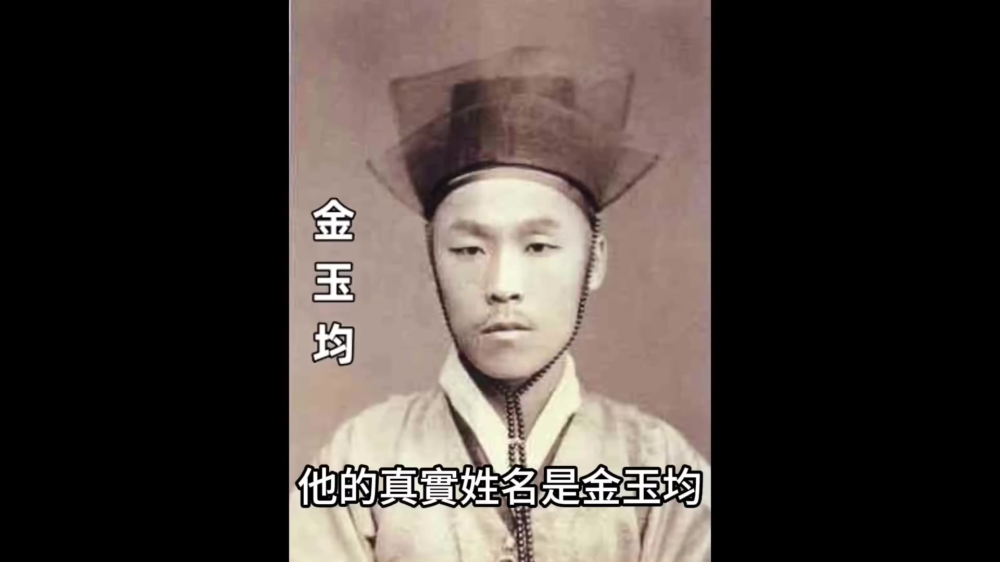
金玉均是一位朝鮮人，他是親白派領袖，1884年策劃了甲申政變，試圖推翻當時的朝鮮政府並在日本支持下挾持高宗與閔妃。甲申政變失敗後，金玉均逃往日本藏匿，化名岩田三和接受日本庇護。然而，在1884年至1893年間，隨著日本與朝鮮關係的變化，對其庇護成為了負面因素。
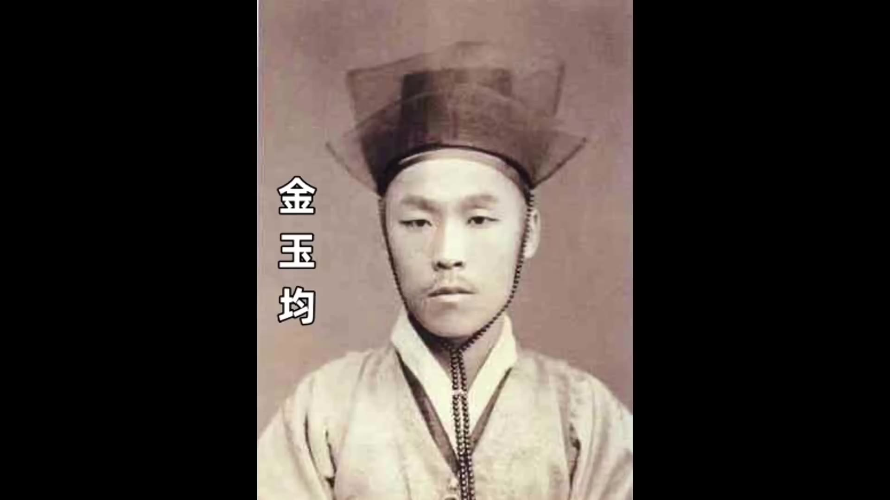
金玉均意識到自己依賴日本已無法維持下去，因此開始積極尋求其他國家的支持。至1894年，他與清廷駐日公使建立良好關係，並獲准前往上海遊歷，但不幸在上海遇刺身亡。刺殺他的是朝鮮政府派出的刺客，而後金玉均遺體被移交回朝鮮國內，最終遭到凌遲鞭屍處罰。
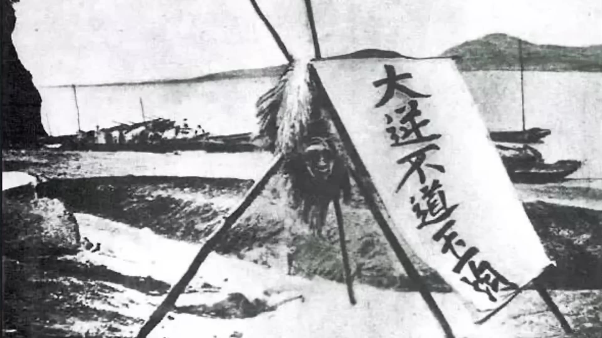
這一事件激起了日本國內強烈反響，日本認為這是在對他們極大的侮辱。金玉均之死成為了甲午戰爭的一個導火索，隨著輿論的發酵，日本對於清朝和朝鮮的不滿情緒逐漸升溫。另一個引發甲午戰爭的重要事件是東學黨起義。
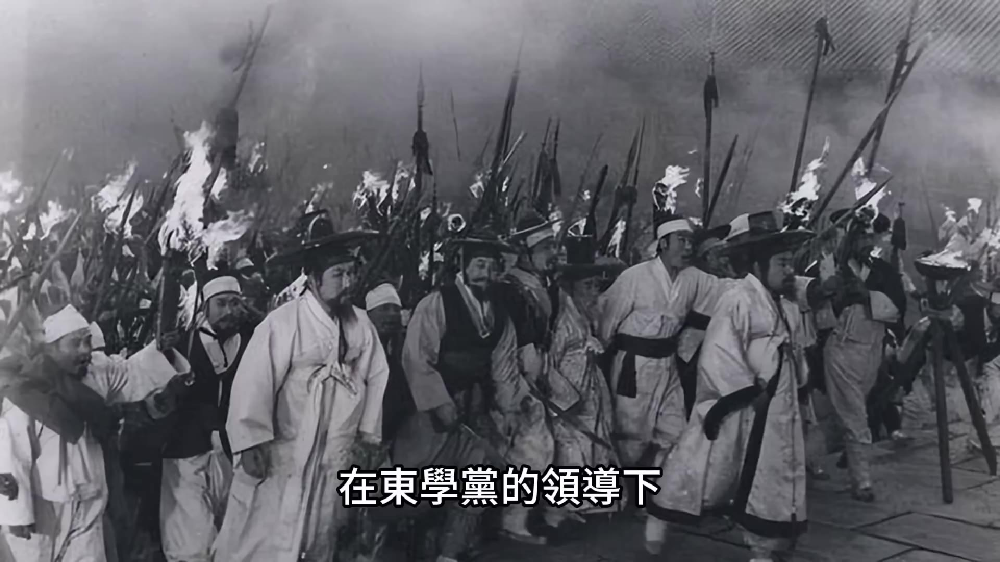
自從西方文化傳入朝鮮以來，“東學”這一與傳統儒釋道思想相結合的新教派開始興起，其信徒認為西方文化的影響才是社會混亂的根源。1894年，由於連續兩年的旱災和朝鮮政府的橫徵暴斂，農民在“東學黨”的領導下發起了大規模的反叛運動。
面對失控的局面，朝鮮政府向清朝請求派遣軍隊平定叛亂。當時袁世凱作為清朝駐朝鮮代表，在得知此消息後積極推動朝鮮借兵清廷的行動，並將情況隨時通過電報彙報給李鴻章。
這些事件共同成為了甲午戰爭爆發的主要原因。
00:05:00
對於朝鮮向清朝請求支援一事，袁世凱第一時間將此事彙報給了李鴻章。
接到電報後，李鴻章對是否應該出兵朝鮮進行了深思熟慮，考慮的因素不僅僅是國內的情況，還包括國際上的影響。當時的朝鮮已經開放通商，多國如英國、法國和美國等都有在朝鮮的利益存在，因此如果清朝出兵，必須要先考量這些西方列強的看法。不過，這時西方國家則傾向希望清朝能夠介入朝鮮亂局，因爲朝鮮社會持續動蕩已影響到他們的經濟利益；儘管西方不認同中朝兩國間的宗藩關係，但他們也承認雙方存在一種特殊的聯繫。
在考量國際因素後，李鴻章將目光轉向了日本。當時清日關係緊張，尤其在日本看來，這可能是一個擴大其在朝鮮影響力的良機；自從清朝派袁世凱干涉朝鮮內政以來，日本在朝鮮的利益一直難以進一步拓展。因此，這次朝鮮動亂對於日本來說是一個切入時機，他們希望通過發起戰爭的方式來擴展利益。
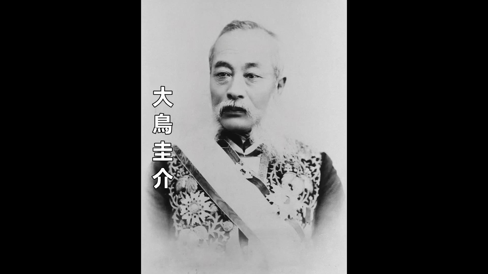
當時日本駐朝公使大鳥圭介（1894年已逾六旬），因參與過日本國內的成辰戰爭及明治維新，並曾赴歐美考察政治，在日本以擅長謀略、遇事鎮定著稱。袁世凱在外交方面尚屬新手，與大鳥圭介相比經驗不足。
6月2日，日本駐朝公使館派出書記員鄭永邦前往拜訪袁世凱，詢問東學黨叛亂進展並試探清朝的態度。他向袁世凱表示因商業利益受損，希望清國能出兵平定亂局。袁世凱回應稱已與朝鮮政府商議妥當，將會收到朝鮮正式公文請求支援。
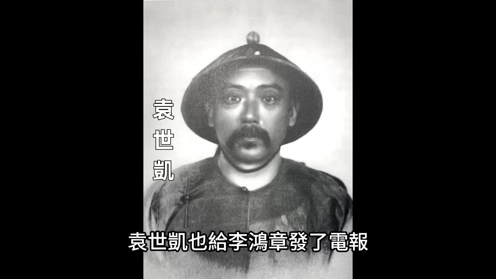
隨後袁世凱即刻向李鴻章報告這次見面的情況以及日本方面希望清朝出兵的意圖。日本在得知此消息後開始進行軍事部署，其具體部署情況我們將於後續內容中細述。
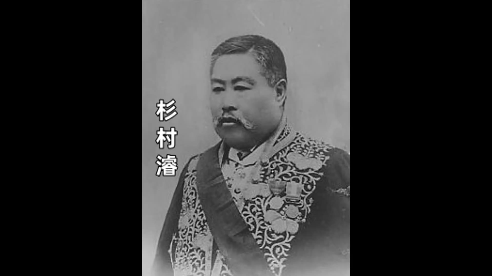
不久後，日本駐朝最高官員杉村濬代替已回國述职的大鳥圭介出面與袁世凱交涉。他同樣強調希望清朝能夠快速派出軍隊幫助平亂，並提及一旦清國採取行動，日本可能也將被迫派兵保護其在朝鮮的利益。
杉村濬會見袁世凱時半開玩笑地說：「貴國如果出兵的話，迫於形勢我們也不得不出兵了。」這讓袁世凱感到緊張並立即正色詢問理由。杉村濬稱日本出兵是為了保護其公使館和僑民安全，而袁世凱則強調清軍行動完全是應朝鮮政府請求來平亂，不會對日本僑民構成威脅。
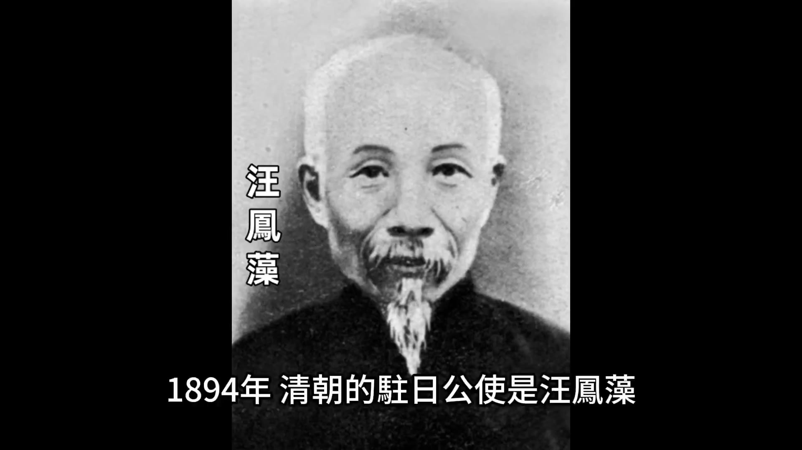
隨後袁世凱將這場會面的詳情以及杉村濬言語中的暗示電報給了李鴻章，同時朝鮮政府也正式遞交了請求支援的文件。根據這些信息，李鴻章在防範日本出兵的問題上態度略有放鬆，但仍需通過其他渠道進一步驗證日本的意圖。此間清朝駐日公使汪鳳藻也參與到相關溝通中來，成為李鴻章獲取情報的重要渠道之一。
這段期間，李鴻章與袁世凱、汪鳳藻三人之間頻繁電報聯繫，共同應對日本的挑戰，同時也在為可能爆發的軍事衝突做準備。
00:10:01
李鴻章根據汪鳳藻對日本國內政局的分析，認為日本由於議會內鬥頻繁無力出兵朝鮮，因而決定採取行動。當時汪鳳藻指出，自1889年日本公佈新憲法後，國家進入了憲政時期，並設立了議會；然而，他誤以為這讓政府無法有效處理外來挑戰。
事實證明，這一分析存在嚴重誤解。當清朝決定出兵朝鮮時，日本迅速成立了「戰時大本營」，將立法與軍事部門整合一體以集中應對戰爭需求，並未受到內政困擾的影響。而此時清國內部黨爭頻繁，反而可能會牽制對外政策。
李鴻章基於袁世凱的情報及汪鳳藻的分析後做出了決定，派遣葉志超和聶士成率領淮軍體系下的直隸提督與太原鎮總兵部隊約2,465人前往朝鮮支援。6月6日，這支先頭部隊從海路出發，在牙山灣登陸。李鴻章同時依照1885年《天津條約》的規定向日本政府通報了這一舉動。
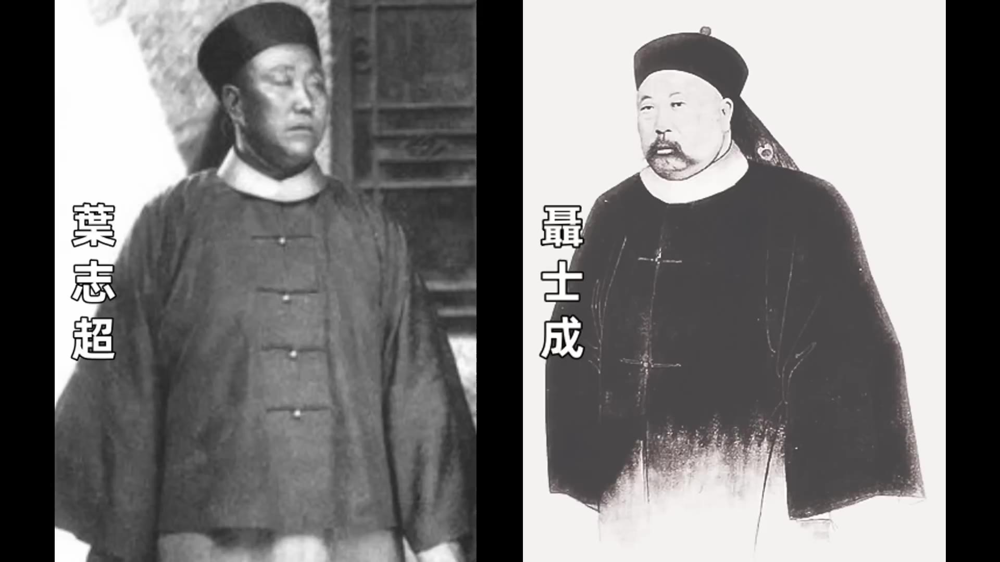
然而，當清軍開始行動時，日本實際上早已做好了準備工作，在接到李鴻章通知前的一天（即6月5日）便已組建戰時大本營。次日，日本駐清朝公使遞交照會稱，將依據1885年簽訂的《濟物浦條約》派遣部隊進入朝鮮保護在當地的利益與國民安全。
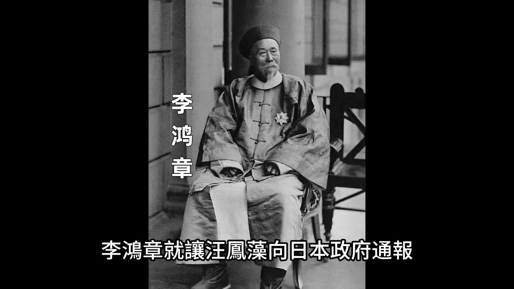
隨著雙方宣佈出兵消息後，清軍和日軍在同一天分別於牙山灣和仁川登陸。日本方面由駐朝公使大鳥馨率領武裝警察及海軍水兵隊共約488人登陸；而清軍則有葉志超與聶士成指揮的兩支部隊，總計2,465人在牙山登陸後按兵不動。

此後，李鴻章得知東學黨叛亂已在朝鮮平息，但此時清軍與日軍已經進入朝鮮境內。6月9日，在朝鮮政府與東學黨簽訂《全州合約》的前一天，雙方部隊已分別登陸指定區域。
李鴻章在得知這些情報後感到事態嚴重，迅速向袁世凱發送電報要求調查日本出兵的目的。袁世凱回覆稱收到日本駐朝公使的一封信件，表示日軍僅為保護其使館並無他意，但事實上此舉不過是為了誘導清方放鬆警戒心態。
00:15:01
他們不顧朝鮮政府反對，直接進入了朝鮮首都漢城。朝鮮政府與起義軍達成協議後，立即向袁世凱報告叛亂已被消除。
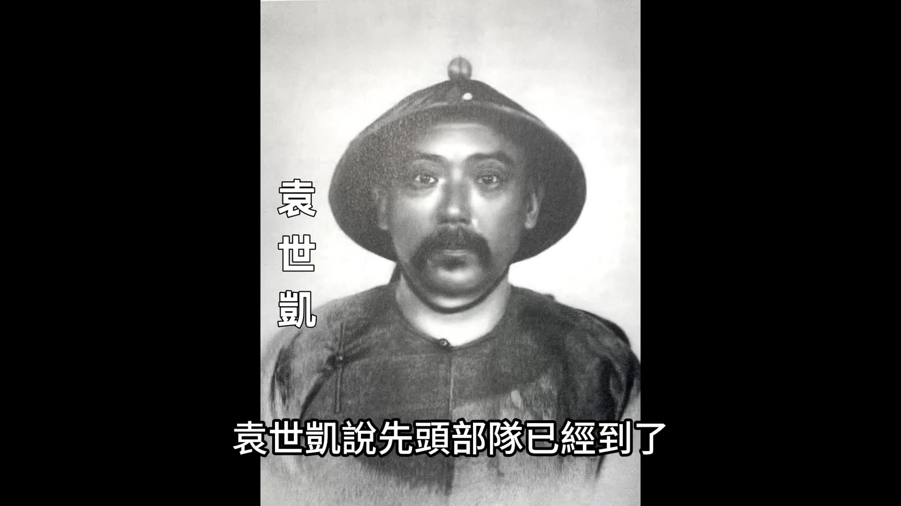
然而袁世凱回覆稱前線部隊已經抵達現場，無法撤回，並表示不會再派遣增援部隊。朝鮮政府則轉而與日本公使溝通，請求日本軍隊不必出兵。
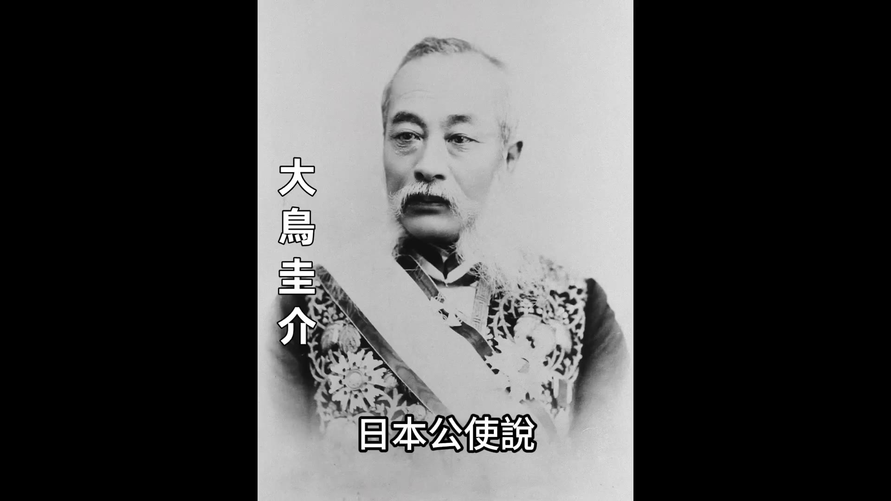
但日本公使堅持根據《天津條約》的規定，日本有義務提供援助，因此拒絕撤軍。此時朝鮮政府處境尷尬，局勢緊張，日軍和清軍都已到達，形成「請神容易送神難」的局面，雙方都不願先行撤退。
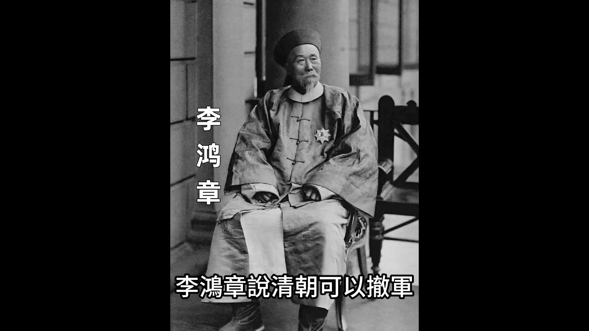
最終，朝鮮政府首先與袁世凱交涉，希望清朝撤軍。李鴻章回應稱，如果日本也同意撤軍，清朝可以撤出朝鮮境內。隨後，李鴻章將這一條件告知了日本政府。
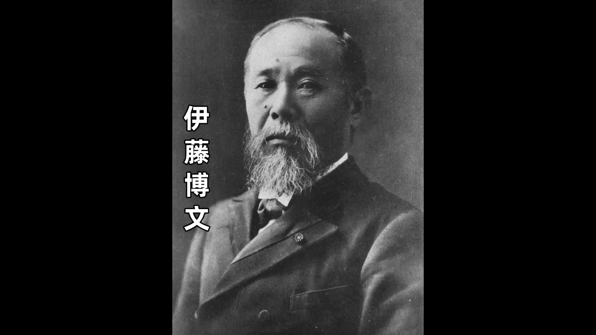
日本內閣就此展開討論，主戰派佔據上風。他們認為若撤回軍隊，將無法向國會和民眾交代，因為此前的輿論工作已激起日本公眾對清朝敵意，且近年來一直宣揚朝鮮問題涉及日本利益，此刻退縮恐會引起國內反彈。
伊藤博文提出了一個戰略方案：建議日本與中國共同參與朝鮮內政改革，若中方同意則可達成雙方都能接受的安排；若不同意，則為日後可能爆發衝突提供合理理由。日本政府因此決定不撤軍並繼續增派兵力進入朝鮮。
根據陸奧宗光在其《蹇蹇錄》中的回憶，他解釋了當時日本政府在外交上處於被動地位的原因，即朝鮮發生動亂時，日方必須等待清朝先行採取行動才能根據協議出兵，故日本軍事策略需隨時準備搶佔先機。
00:20:01
但是，他強調在軍事方面，日本必須時刻掌握先機，即日軍要隨時準備好出發，並且在日本派往朝鮮的軍隊數量上要遠超過清軍。這一點非常重要，因為十年前發生甲申政變時，日本軍隊已經佔領了朝鮮皇宮，而袁世凱僅用一天時間便奪回了王宮，令日本印象深刻，因此，這次日方決定增派軍隊以確保兵力優勢。當時在朝鮮境內，清軍已超過2,000人，但日本只有400多人，故日本擔心清軍快速控制局面，大鳥圭介採用了策略穩住袁世凱。
6月13日，大鳥圭介與袁世凱進行會談。袁世凱仍持李鴻章的觀點，主張雙方協商撤軍。袁世凱表示，清朝和日本應保持和睦以保障亞洲安全。大鳥則稱日本是因朝鮮亂黨鬧得嚴重才派兵，又說自己年歲已高不願再惹事端，並表明已經電告國內停止增援。聽到日方不再增派2,000士兵到漢城的承諾後，袁世凱非常滿意，並將此視為外交勝利，隨即向李鴻章報告會談結果。李鴻章得知後立即終止了向朝鮮派兵計劃，並命令葉志超和聶士成停止軍事行動。第二天6月14日，袁世凱再次傳來喜訊。
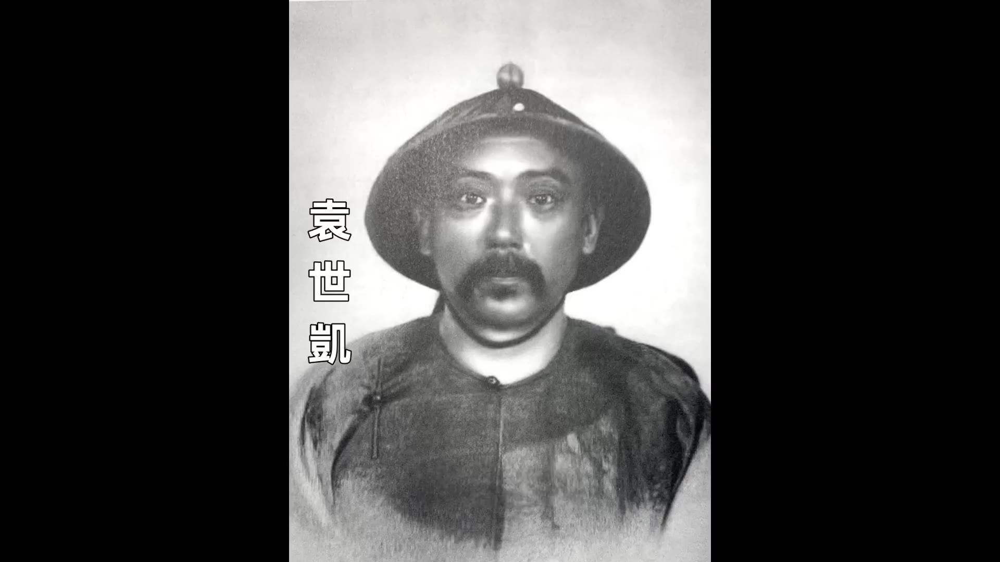
會談中達成了撤軍協議，雙方同意各自撤兵。然而李鴻章對此保持警惕，認為此事過於順利。因此他要求拿到正式的約定文件，並讓汪鳳藻在日本國內打聽相關情報。6月15日，汪鳳藻回報未獲大鳥圭介承諾撤軍之官方報告；次日又傳來消息，稱日本正增兵朝鮮，已派5,000人前來。實情確實如此，至6月16日，由大島義昌率領的2,673名士兵已成功登陸仁川和釜山地區，至此漢城、仁川、釜山均落入日軍之手。此時清軍與日軍在朝鮮兵力失衡，日軍近8,000人而清軍僅有2,000多人。
日本增兵期間，清朝在策略、軍事及外交上全面處於劣勢。日方提出兩國共同改造朝鮮內政的主張，在此基礎上若發生衝突，國際上便會視之為正當；此外，大鳥圭介成功迷惑袁世凱使其放鬆警惕，而日本則迅速增強軍力達到絕對優勢。對此提案，清朝斷然拒絕，因朝鮮屬清國藩屬無法接受另一國參與其內政改革。
6月23日，日本外相陸奧宗光告知汪鳳藻，由於清朝反對共同改造方案，故日本將單獨實施改造計劃，在完成對朝鮮的內政改造之前不會撤軍。至此，三方關係緊張，戰爭一觸即發。7月3日，日本單方面向朝鮮政府提交了內政改革綱領，要求朝鮮政府全盤接受其改革方案。
00:25:00
並且不允許清朝干涉朝鮮內政改革。到這個時候，清朝和日本的關係已經嚴重惡化了啊，惡化到什麼程度了呢？7月中旬，日本宣佈對清朝斷交，雙方互派的公使全部都撤旗走人。清朝駐日本的公使撤回來了，日本駐清朝的公使也撤回去了，連在朝鮮的袁世凱都撤回國了。「我得回去，」袁世凱說，「日本軍隊現在已經控制了漢城，我要是不回去被日本人抓了。這是大清國的尊嚴受到侮辱的問題，所以袁世凱也回國了。從這之後啊，清朝和日本的外交完全中斷，雙方沒有任何可以對話的渠道了。
7月20號，日本向朝鮮發出最後通牒，要求朝鮮在7月22號之前和清朝斷交，並要求朝鮮政府下令驅逐清朝的軍隊。朝鮮政府沒有妥協，並沒有答應日本的要求。7月22號最後通牒時間到了之後，在7月23號的凌晨，日軍攻入了朝鮮王宮。他們俘虜了朝鮮國王高宗和閔妃，然後他們扶植起了以大院君為首的日本傀儡政權。傀儡政權以高宗的名義發佈了一個文告，宣佈的是授權日本軍隊幫助朝鮮驅逐清朝軍隊。對於傀儡政權的文告，清朝當然是不認的，但是呢，對於朝鮮的老百姓來說他們是分不清傀儡政權的既然是國王宣佈的那當然就是合法的，這樣一來清軍在朝鮮的合法性反而受到了質疑。
日本以朝鮮傀儡政權發佈的文告作為合法依據，在海上偷襲了清朝的運兵船，挑起了豐島海戰。在陸地上偷襲了駐紮在成歡、牙山的葉志超、聶士成的部隊。日本不宣而戰，挑起了甲午戰爭。
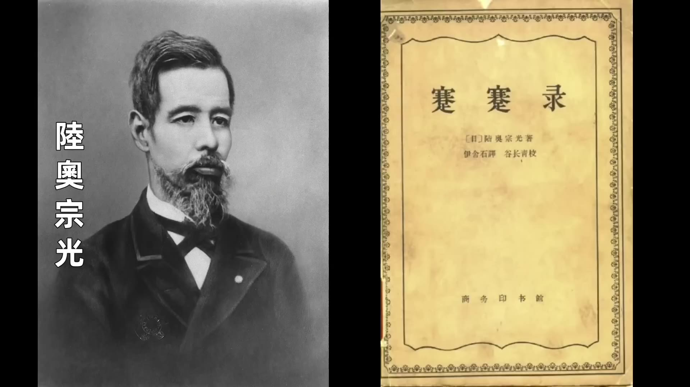
這個事實第一次被揭露出來這本《蹇蹇錄》在上期影片裡面我已經介紹過了它是在甲午戰爭之後30年才公開的，那時候清朝都已經滅亡了。我們根據《蹇蹇錄》的記載來梳理一下日軍大本營當時制定的戰略計劃。
7月20號，日本政府得到了日軍間諜發來的消息，得知21號和23號清朝將分別向朝鮮運兵，從而他們計算出來清朝第一艘出發的運兵船最快也得在24號抵達朝鮮。於是日本在7月20號也就是他們得到情報的當天就向朝鮮發出最後通牒，給朝鮮的最後時限是22號，要求朝鮮宣佈和清朝斷絕宗藩關係並且驅逐清朝軍隊。日本知道朝鮮很大可能是不會答應這個要求的，所以他在最後期限的22號當天日本大本營就向聯合艦隊下達了作戰命令，要求做好一切作戰準備隨時出發。
到22號晚上日本得知朝鮮拒絕要求的答復之後，在23號凌晨日軍軍隊就攻入了朝鮮皇宮。他們俘虜了朝鮮的國王高宗和閔妃，扶植了日本控制的傀儡政權。然後日本通過傀儡政權宣佈朝鮮和清朝解除宗藩關係，並且邀請日本軍隊幫助朝鮮驅逐清朝軍隊。
這樣一來呢，日軍成為了朝鮮的重要幫手而朝鮮政府通過正式公文請來的清軍滯留在朝鮮反而沒有了合法性。24號日本的偵察艦找到了在牙山灣附近清朝運輸艦停泊的具體位置。25號日本第一游擊隊到達牙山挑起了豐島海戰。
我們看這個過程啊，首先從日本往清朝派出間諜能獲得如此重要的軍事情報就能看出來日本對清朝的戰爭已經是蓄謀已久的。後來日本的軍艦他們能在豐島找到清朝的軍艦也是經過了縝密的部署的並不是說
00:30:00
他們在茫茫大海中偶遇的情景，與日本縝密的計劃形成鮮明對比的是李鴻章在甲午戰爭初期的進退失據。從後來的視角來看，李鴻章最佳往朝鮮增兵的時間應該是在六月二十日到七月二十日這一個月之內，因為六月二十日清朝已經拒絕了日本提出的共同改革朝鮮內政的方案，而日本隨即宣佈即使面對清朝反對也要單獨進行改革。隨著此後的情勢發展，從六月二十日起李鴻章就應該開始往朝鮮派兵，然而他選擇請求國際調停，希望列強可以出面干涉讓日本接受雙方共同撤軍的條件。
李鴻章早前就已使朝鮮開放門戶以期能在此時獲得國際列強的支持來阻止日本獨佔朝鮮。在他看來，各個列強在朝鮮均有利益，若中日之間爆發衝突會損害所有利害關係方的利益；因此他首先考慮的是請求俄國與英國等對朝鮮利益最密切的國家出面調停。由於俄國是其中利益最大的一方，且長期以來一直關注著朝鮮不凍港的重要性，俄國答應李鴻章會與日本外務省進行交涉；但俄國得到的回答卻非常直接——這是一個中日之間的事宜，不需要其他國家介入。多輪談判後，因俄國的進展不佳而未能取得實質成果，時間被拖延了下來，此時日本仍在陸續向朝鮮增派軍隊。
在這個關鍵時期，李鴻章仍遲遲未派出援軍的原因是他的策略依然是通過國際協調來雙方撤軍。既然他主張的是這一方案，當然無法一邊加派軍隊，一邊又請他人代為談判撤軍問題。因此，清朝直到此刻僅最早派出了2,000多人的駐紮力量，未再有所增援。俄國調停失敗後，英國又被李鴻章請求介入。然而英日在此時簽訂了《英日通商航海條約》，這對於日本來說意義非凡，因為該條約標誌著日本在廢除不平等條約方面取得了重要進展。
英國的外交大臣公開表示此協約對日本而言比打敗清軍更有價值，意味著英國此時已經默許了日本在朝鮮及對清朝的軍事行動。而後因英日之間的同盟關係確立，李鴻章寄望於英國調停的想法自然也落空了，這讓清軍增兵時間再度錯過。隨著日本已完成其在朝鮮的軍事部署，此時清朝支援部隊仍未能動身前往。
到了這個地步，李鴻章面前僅剩的一條路就是接受戰爭事實並展開相關部署往朝鮮增派軍隊。這段時期內李鴻章的猶豫不決無疑是導致清軍在甲午戰爭中失去先機的主要原因之一。而李鴻章之所以如此不願開戰，背後還有其自身對於兩國軍力實情的理解。在他看來，雖然清朝上至朝廷士大夫、下及民間輿論都對日本抱持著輕視態度，認為清軍無論在裝備還是兵員數量方面均佔據優勢；唯有李鴻章清楚地了解自己國家軍隊的實力並不及日本人所表現出來的那般強大。因此，在戰爭開打前李鴻章是少數為清朝軍事力量憂心的人之一，然而隨著形勢發展至不得不備戰之時，光緒帝也在七月十五日下達嚴格諭旨要求李鴻章必須增兵應對。
00:35:01
不可延誤戰機，這時候李鴻章才開始四處抽調兵力增兵朝鮮。

李鴻章的戰略部署主要是兩個方向：一個是北路。由於日本已經控制了朝鮮首都漢城，李鴻章決定進佔平壤。進佔平壤可以依託大同江的天險阻止日軍北上。李鴻章調派的部隊包括駐紮在天津小站的魏衛汝貴的盛軍6000人和駐紮在旅順口的馬玉昆的毅軍2000人，這兩支部隊都屬於淮軍體系，總共8000人。這些部隊的行軍路線是從大沽口走海路通過海陸運輸到鴨綠江口的大東溝，在大東溝登陸後，沿陸路經過朝鮮邊境重鎮義州開赴平壤。李鴻章還另外調遣了駐紮在盛京的左寶貴的奉軍3500人，讓他率領奉軍從東北陸路進入朝鮮，搶先佔領平壤的地利。如此算來，北路的三支軍隊總計有11,500人的兵力。
在南路方面，葉志超率領的先頭部隊2000人駐紮在牙山，他們現在已經陷入日軍勢力的後方。李鴻章原計劃是想把葉志超的部隊通過海路運到平壤與北路會合，但葉志超認為日本海軍已在仁川聚集，走海路風險太大，不如讓他們留在敵人後方，一旦戰爭爆發可以牽制敵軍。李鴻章很快就同意了葉志超的建議，並決定派遣淮系吳育仁部的仁字營2500人從大沽口走海陸運兵增援牙山。
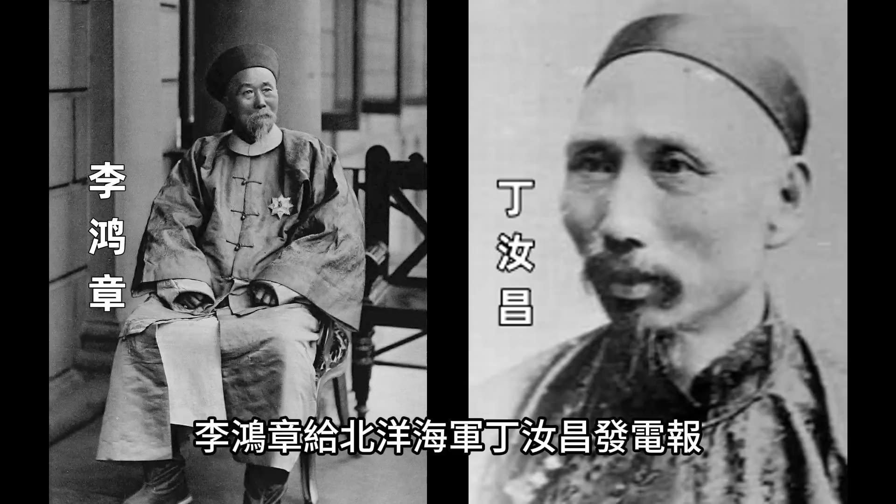
為保障葉志超在牙山的安全，李鴻章特別租用了三艘英國公司的商船（愛仁號、飛鯨號和高昇號）而非使用招商局的船只。他讓盛宣懷以高價租來這幾艘掛著英國旗的運兵船，以為這樣可以讓日軍有所顧忌。
李鴻章給北洋海軍丁汝昌發電報，告知其已租用3艘英國商船運兵，並命令丁汝昌派出北洋海軍軍艦在牙山灣守護執行警戒任務。電文中特別強調無需兵船護航。

牙山灣內水深不夠，商船無法直接靠岸，只能停泊在牙山灣外海約70里的地方，再由小舢板作為駁船運轉士兵。當時牙山口內僅有30艘駁船，每艘能裝載30人，卸載登陸需要長時間，這段時間也是最危險的時刻，因此派海軍軍艦來警戒非常有必要。由於登陸過程長達三日，三艘運兵商船不能同時到達，以防士兵堵塞在牙山灣外等待而導致危險。盛宣懷安排的運兵計劃是從7月21日起每天出發一艘運兵船。
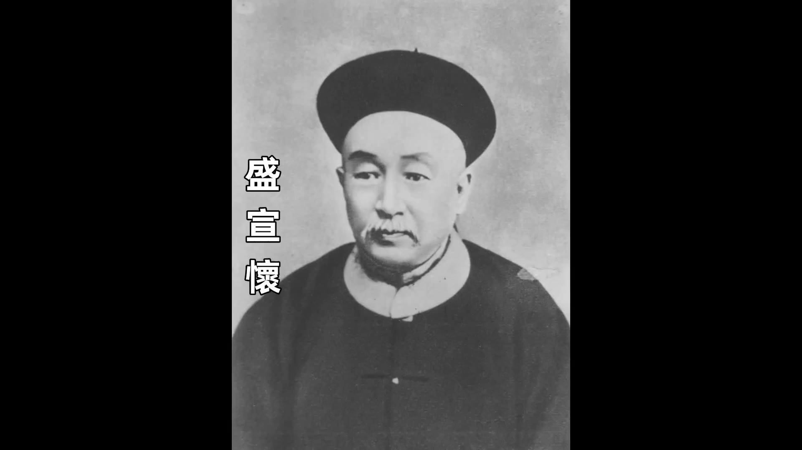
整個甲午戰爭過程中，盛宣懷擔任李鴻章的重要調度負責人。然而清軍萬萬沒有想到的是，在盛宣懷向丁汝昌通報運兵計劃的當天，日本聯合艦隊也獲得了這份情報。間諜石川伍一通過買通天津電報局的工作人員獲得了這一重要情報。

第一艘出發的是「愛仁號」，於7月21日下午6點從大沽口起航開往牙山，船上裝載了1,250名士兵。丁汝昌派出的警戒任務軍艦是「濟遠艦」、「廣乙艦」和「威遠艦」，於次日上午9點從劉公島出發，前往牙山。三艘軍艦組成一個編隊，方伯謙為艦隊指揮官。在艦隊出發前，他曾請示丁汝昌詢問如果在路上遇到日本海軍挑釁該如何應對，丁汝昌給他下了明確指令。
00:40:01
說是「還擊」，上面這些圖表展示了清軍的部署情況。接下來，我們來看看日本海軍的部署情況。
日本是在1872年成立了海軍部，海軍部是負責管理海軍建設的一個機構，在當時的地位非常高，其財務預算、人事安排及軍事部署都是獨立的體系。按理來說，清朝的總理海軍衙門應該與日本海軍部有同等地位；然而，實際上，清朝的總理海軍衙門權限相對較小。
日本海軍部成立後，開始建設近代化海軍。從1883年到1894年甲午戰爭爆發前，日本政府先後提出了四次海軍擴張案。日方的軍艦有的是購買的，也有自建的；由於建造海軍需要大量資金，而當時日本財政越來越難以負擔這種支出。然而，為了籌集資金，1892年日本海軍經費居然增加到了國家預算的40%，這與清朝在1891年下令禁止海軍採購形成了鮮明對比。
當時，西方造船技術有了最新創新，新式的「速射炮」出現在日本海軍的視野中。然而，裝備這些新的速射炮需要大量資金，當時日本國力無法負擔這筆巨款。在此情況下，日本天皇率先從皇室經費裡拿出30萬元來支援海軍；在天皇帶動之下，日本政府官員也都把自己的俸祿1/10捐出來支援海軍，形成了一場給海軍捐款的活動。這期間，日本對於擴張海軍已經近乎瘋狂，到甲午戰爭之前，日本海軍的真正實力已完全超過清朝北洋海軍，成為亞洲第一。
實際上，在此時期，那些鼓吹北洋海軍的媒體只從噸位、重炮口徑等數據來比較，並未看到北洋海軍大部分戰艦已達五六年以上的艦齡，甚至更多是十年以上的艦齡。這些戰艦的核心部件多數需要修繕和更換，但由於清廷限制了海軍採購，該修的沒修，該換的沒換；加之國際上海軍技術大規模更新迭代後，北洋海軍未能跟上新技術的步伐。
因此，李鴻章清楚北洋海軍的戰鬥力已經浮腫。而此時，日本海軍在戰力上已超過了北洋海軍。另外，日本海軍的編制也與北洋海軍不同：日本海軍將全國海岸分成五個海區，每個海區設一個海軍鎮守府；所有軍艦都分屬於各鎮守府。平時只有一個常備艦隊，在戰爭來臨前，日本海軍部把所有的主力艦統一編成聯合艦隊，由伊東祐亨出任聯合艦隊司令官。
日本大本營收到間諜的情報後，要求伊東祐亨派出聯合艦隊偷襲清朝運兵船。於是伊東祐亨臨時組成了兩個游擊隊：第一游擊隊由「吉野號」、「浪速號」三艘高速巡洋艦組成；第二游擊隊則包括「葛城號」、「大和號」、「天龍號」、「高雄號」四艘軍艦。日本海軍聯合艦隊在7月23日正式出海，搜尋清軍運兵船。

清軍的第一艘運兵船「愛仁號」於7月21日出發，三天後在7月24日凌晨四點按時到達牙山灣的外海。此時，方伯謙率領的三艘北洋海軍護衛艦已經到達開始用小駁船登陸。這些30艘駁船都是人力划槳的木船，航行緩慢；每次往返70里的路程都需要很長時間。因此，為加快登陸效率，方伯謙的三艘軍艦把各自的蒸汽小艇放到海裡來幫助駁船拖帶航行。「愛仁號」從早晨六點開始卸載登陸，一個多小時後成功完成登陸任務，順利返航。
在此期間，方伯謙還需要等待另外兩艘運兵船到達，直到全部三艘船都完成登陸任務方可返回。在等待的過程中，方伯謙把「威遠艦」派往仁川搜集情報並向威海發電報。
00:45:01
彙報一下登陸的情況，威遠艦開走後還剩下的就是濟遠艦和廣乙艦。他們停泊在牙山口外。當天下午2點，第二艘運兵船「飛鯨號」到達了，在濟遠艦和廣乙艦的警戒之下開始登陸卸載，裝載的不僅有士兵、還有戰馬和大量火炮等物資。這些物資要卸載到小駁船上非常不容易，所以「飛鯨號」卸載貨物的時間要比「愛仁號」長得多。
正在「飛鯨號」卸載登陸的過程中，廣乙艦上的官兵突然發現遠處有一艘日本軍艦。日本軍艦出現了一下就掉頭開走了。這個情況讓方伯謙心生警覺，他感覺到了一絲不祥的氣息。過了一會兒，威遠艦回來了，帶回最新的消息：朝鮮國王已被日軍俘虜，日軍宣佈要驅逐在朝鮮的清軍。這個消息讓方伯謙很震驚，這意味著日軍和清軍已經進入事實上的戰爭狀態。

威遠艦的管帶林穎啓通過在仁川的英國艦隊打探到一個更加驚人的情報：日本海軍明天將會到達SONGJEONG:RI GAJI，突然得到的情報讓方伯謙必須做出選擇。方伯謙目前只有兩條路，第一條是繼續執行命令，在牙山灣等待最後一艘運兵船的到來；第二條則是立刻撤走BYEONGCHSON-MYEON，不要管第二艘運兵船了，保持他自己的實力。方伯謙選擇了第二條路，決定撤退離開朝鮮這塊是非之地。
但是「飛鯨號」還沒有完成卸載，方伯謙就讓威遠艦先走了，因為威遠艦的航速慢、戰鬥力也弱。威遠艦在當天夜裡9點15出發返航回國，濟遠艦和廣乙艦留下來繼續執行警戒任務。方伯謾原本的想法是要等他的兩艘護衛艦再返航，但是卸載工作一直持續到了25號凌晨1點才只完成了一半，方伯謙實在是等不了了，認為不能再拖延下去，必須盡快離開。
25號凌晨4點濟遠艦和廣乙艦離開牙山灣開始返航。他們離開之後，「飛鯨號」就失去了警戒保護，在沒有保護的情況下繼續卸載，一直到25號上午9點多才完成卸載。幸運的是這幾個小時的卸載登陸並沒有出現什麼意外，但是離開牙山灣的濟遠艦和廣乙艦卻出現了意外：清朝和日本在近代的第一場海戰即將展開。
今天我們講豐島海戰，豐島海戰是近代中國和日本的第一場海戰，這場海戰拉開了兩國近代戰爭的帷幕。上期影片我們講到李鴻章雇傭三艘英國商船開往牙山運兵，濟遠艦的廣代方伯謙三艘軍艦執行登陸警戒任務。他們接到的任務是等到三艘運兵船都安全地卸載登陸之後NANSAN RI BAN-GOK-RI SONGSHRI再返航。
7月24號早晨第一艘運兵船到達牙山灣，順利完成了卸載任務；7月24號下午第二艘運兵船也到達了牙山灣，在進行卸載時方伯謙得到消息：日軍已經攻佔朝鮮王宮，而且日本海軍即將到來。方伯謙當下決定不等第三艘運兵船了，提前返航。
25號下午4點濟遠艦和廣乙艦離開牙山灣開始返航，凌晨5點30分濟遠艦的瞭望兵發現西南方向天邊有幾縷煤煙SUNSEONGEMYEON|SUNSEONGEMYEON，在航行一會兒後他們進入了豐島和公景島之間的狹窄航道。這時候前方目標逐漸清晰，瞭望兵確定對方正是日本軍艦一艘是吉野艦，還有一艘辨別不出來。濟遠艦的瞭望兵沒有看錯，前方出現的是日本聯合艦隊第一游擊隊的三艘軍艦：吉野艦、浪速艦和秋津洲艦。瞭望兵不認識的那艘軍艦正是秋津洲艦，這是幾個月前日本剛下水的新艦，出來搜尋清軍運兵船；他們在收到情報後派出偵查艦昨天已經偵查到清軍登陸的具體位置。
今天他們趕過來就是來攔截清軍的。
00:50:02
方伯謙在確定對手是日本的軍艦後，立刻下令濟遠艦和廣乙艦做好戰鬥準備。對方一旦挑釁，便立即開炮還擊。日本這支艦隊的司令為坪井航三，他則指示船隊以15節的速度朝目標方向前進。
方伯謙看到敵艦向自己駛來，在SUNSEONGEMYEON的時候，他知道對方來者不善，但兩國尚未正式宣戰。因此，他秉持「釁不能自我開」的原則並未打算率先開炮。他在心中默默祈禱，希望日本人不要發起挑釁，甚至希望能讓日本的軍艦轉舵離去。令他驚訝的是，他的禱告居然生效了：對方面前駛來的吉野艦突然來了一個180度的大回轉，在海面上畫出一個大大的「n」字形轉向後便背離清軍軍艦行駛；隨後秋津洲和浪速也跟著轉向，開始往另一個方向行進。方伯謙判定敵人可能並非來作戰的，而是與昨日同一批日本軍艦一樣來進行偵查。
他下令兩艘軍艦加速離開是非之地，但沒過多久，日軍再次轉向：在拉開一定距離後又進行了一次180度大回轉。他們重新回到清軍編隊的側翼，並運用高航速直接插到清軍陣型的側翼，形成兩條平行的戰列線。
圖一顯示了此次事件中涉及的重要地點和艦只位置，包括濟遠、廣乙、吉野等。
坪井航三之所以如此操作，是因為他擔心一旦自己率先開火會處於不利地位。他非常清楚清軍軍艦在艦首裝有大口徑火炮，而雙方艦隊一開始都是以縱向隊形航行且迎頭並進。如果己方還沒有進入優勢位置便先行開火，那麼日軍就會吃虧，因為他們的優勢是側舷火力必須要讓自己先處於有利的戰鬥位置才能發動攻擊。
此外，當時清軍艦隊正在行駛在豐島和公景島之間的窄航道上。這條航道不利於他們進行側面機動。通過兩次大轉向，坪井航三將自己的船隊移至清軍後方，然後利用高航速追趕過來，這樣就可以發揮日艦側舷火力的優勢。
實際上，坪井航三並不知道方伯謙並無意率先開火，因此他不必進行兩次轉向。然而，此戰術是根據豐島海域的特點和清軍陣型臨時決定的。當吉野艦通過旗語向秋津洲和浪速發佈指令後引起了日本編隊的一陣混亂，也暴露了日本海軍訓練中的一些問題：許多士兵都是新手，而吉野與秋津洲兩艘戰艦分別是去年和幾個月前下水的，其上的船員對於自己的戰艦操作熟練程度遠遠不及北洋海軍。後者在服役時間方面最長可達十年，短則也有五六年以上。
日本政府長期利用輿論宣揚北洋海軍的強大，這雖然成功動員了民間捐款興建海軍熱情，但也讓士兵面對北洋海軍時心生莫名恐懼感。此外，由於聯合艦隊是臨時編組而成，他們之間並未經歷充分磨合，所以在配合上存在一定問題。
圖二為當時的情景之一。
秋津洲的艦長上村彥之丞是一名主戰派積極分子，對坪井航三轉向的命令很不滿意，甚至懷疑其膽怯畏戰。於是他在沒有徵得同意的情況下下令發出旗語質問吉野艦為什麼要轉向。這讓坪井航三非常惱怒，但考慮到大局才以旗語進行解釋：當前艦隊所處位置不利於機動作戰，跟隨旗艦航行只能執行命令。上村彥之丞雖不滿，最終還是下令秋津洲轉向並跟隨吉野舰行動。

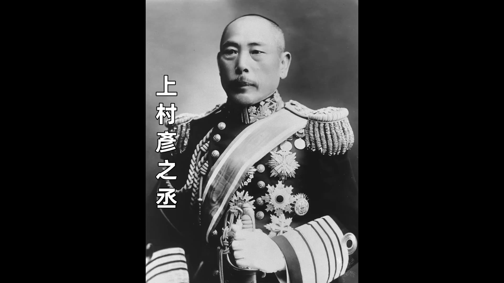
00:55:01
後面的浪速艦也跟著轉向，浪速的艦長是一名極其好戰的軍官——東鄉平八郎。東鄉平八郎後來被譽為日本海軍的軍神。隨著兩次轉向操作，日本艦隊成功繞到了北洋艦隊後方，開始進行追擊。

當雙方距離接近到3000米時，北洋艦隊已經進入日本艦隊的射程範圍內，然而就在此刻問題出現了。吉野艦艦首炮台長吉松茂太郎在接到開火指令後，由於過於緊張而顯得手足無措。他甚至不相信戰爭真的即將爆發，因此命令手下再去司令塔確認是否真的要開炮。這一拖延讓海軍大尉氣得破口大罵，並要求吉松茂太郎立即執行任務。坪井航二看到這一幕也搖頭苦笑，因為他知道這些士兵缺乏實戰經驗，但隨著他們第一次與清軍交手的結束，恐懼感將會消失，甚至開始變得越來越肆無忌憚。
接下來我們先來了解一下雙方參戰的軍艦。日本方面的三艘軍艦分別是吉野艦、秋津洲艦和浪速艦；而北洋海軍則有兩艘濟遠艦和廣乙艦。首先說說旗艦——吉野艦，它是前一年1893年才竣工的一艘穹甲巡洋艦。吉野艦的排水量達4,150噸，長度為109.73米，它的艦身甚至超過了當時北洋海軍最大的軍艦定遠艦。該艦最大航速可達到23節，成為當時世界上最快的軍艦之一；它裝備了四門6英吋40倍徑的速射炮，有效射程為8,600米，射速每分鐘七發。

吉野艦還配備了八個耳台（炮台），每個耳台上裝備了一門4.7英吋40倍徑的速射炮，使得該艦在兩舷能打出密集火力。此外它還有22門47毫米回徑單管速射炮和15具14英吋魚雷發射管。吉野艦更先進之處還包括其配備了當時最新發明的火炮測距儀，從而大大提升了自身的瞄準與測距精度。這也使得吉野艦成為日本海軍當時戰鬥力最強的一艘戰艦。
第二艘是秋津洲艦，這是日本自行建造的第一艘穹甲巡洋艦，在1894年剛完工即投入作戰，排水量為3,000噸，航速達19節。在火力配備上，它徹底放棄了大口徑火炮的思路，採用全部為速射炮，裝備十門速射炮：六門4.7英吋速射炮及八門47毫米單管速射炮和四具14英吋魚雷發射管。
浪速艦則是日本海軍在1885年向英國採購的第一艘穹甲巡洋艦，排水量為3,650噸，航速達18節。其主炮配備了德國克虜伯架退炮（2門260毫米35倍徑），這兩門火炮裝在軍艦首尾的雨座炮台內，而舷側則有六個耳台，每座耳台上裝備了一門150毫米35倍徑的克虜伯炮。此外它還配備了十六門機槍和四具14英吋魚雷發射管。浪速艦在竣工時就被譽為當時世界上最優秀的巡洋艦之一。
清軍的兩艘軍艦中，旗艦是濟遠艦，它是於1884年完工建造的一艘戰艦。

01:00:01
濟遠艦為德國建造，排水量約2,300噸，長72米。其航速可達15節左右，配備有三門大型火炮（兩門位於艦首），以及四具魚雷發射管。這些主炮為退架炮而非當時流行的速射炮，火力方面相對薄弱。

廣乙艦則是由福建船政局建造之國產軍艦，其裝備有三門120毫米40倍徑速射炮和四門37毫米口徑的五管速射炮，火力相對濟遠艦有所提升。
與此同時，圖表顯示清軍兩艘戰艦——濟遠艦及廣乙艦——在排水量、航速、火力以及老化程度等方面皆不及日本海軍，尤其是清軍主炮為退架炮，在每次發射後需人力重推至發射位置再裝填，每發至少耗時15分鐘。與之對比，日軍各型火炮均可實現快速連續發射。

在如此懸殊的艦艇性能差距下，豐島海戰爆發。吉野艦率先向濟遠艦開火，隨後濟遠艦回擊。數分鐘內，秋津洲和浪速兩艘軍艦亦進入有利射擊位置，開始從側翼包抄濟遠艦。三艘日軍船隻共擁有五門6英吋及七門47毫米的速射炮，另配有兩門260毫米、三門150毫米克虜伯大砲，火力密集猛烈。
面對敵軍的輪番轟炸，濟遠艦官兵沉著應戰。其前端主炮採用全封閉穹蓋式炮盾，厚度達1.5英吋，雖能抵禦小口徑速射砲，卻難以抵御大口徑火砲的攻擊。一發大口徑砲彈擊穿濟遠艦前部主炮台並在內部爆炸，造成重大傷亡。在此危急時刻，年僅21歲的軍官黃承勳挺身而出，迅速組織包扎傷員並指揮繼續開火。然而不久後另一枚砲彈再次重創主炮台，黃承勳手臂受傷，最後壯烈犧牲。
日軍火力同時集中攻擊濟遠艦司令塔，設於高飛橋上的設計雖獲良好視野卻暴露在外易受擊中。方伯謙船長與副大隊長沈壽昌身處其中，仍堅持指揮戰艦按既定路線撤退。突然一發砲彈碎片竄入司令塔，不幸擊斃了沈壽昌。
綜觀戰鬥全過程，濟遠艦官兵在火力極度懸殊的環境下表現出非凡英勇與無畏精神。
01:05:00
沈壽昌腦漿崩裂當場死亡，方伯謙也被震倒在地，他的臉上和身上都濺滿了大副的腦漿和鮮血，嚇得面無血色。在被士兵扶起來之後，他躲到了濟遠艦的舵機艙。舵機艙位於穹甲甲板之下，是全艦裝甲最厚的地方。（）
此時的濟遠艦在日本二艘軍艦的圍攻之下已經岌岌可危。突然，閒廣乙艦調轉航向，高速衝向日本艦隊，直逼吉野艦。閒廣乙艦的排水量只有1,000噸，而吉野艦則有4,000多噸，在吉野艦面前，閒廣乙艦簡直就是個弟弟。他們沒想到閒廣乙艦居然敢調轉航向直接衝進日本艦隊的陣型。（）
閒廣乙艦的管帶是林國祥。林國祥顯然比方伯謙更勇猛得多，在看到濟遠艦被圍攻之後，他奮不顧身指揮閒廣乙艦衝了過來。閒廣乙艦威力最大的武器是並列在艦首的兩具魚雷發射管。（）林國祥這時候的用意很明顯：第一是要衝亂日軍艦隊的陣型，緩解濟遠艦的壓力；第二是要用魚雷發起攻擊。坪井航一對這艘小軍艦不要命的舉動感到很震驚，他急忙下令向左側轉舵規避吉野艦，在海面上划出一個大圈，利用自己航速快的優勢避開了閒廣乙艦。（）
閒廣乙艦衝擊吉野艦沒成功，他又冒著炮火衝向了秋津洲。秋津洲的艦長是上村彥之丞，剛才我們說過，上村彥之丞是很好戰的，他碰上了一個同樣好戰的對手非常興奮。（）他下令不管濟遠艦了，全力攻擊閒廣乙艦。秋津洲的速射炮開始火力全開向閒廣乙艦傾瀉。閒廣乙艦雖然火炮不如對方強大，但是也在頑強地還擊很快，閒廣乙艦接連中彈，一名機關炮手犧牲了，一根桅桿也被打斷了。（）不久，一顆開花炮彈在主甲板上炸開，一下子炸死了20多個士兵，操舵手也陣亡了。弱小的閒廣乙艦儘管不斷中彈，卻沒有退縮，反而巧妙地變化方位突擊到了距離浪速艦尾只有三四百米的位置。（）閒廣乙艦向浪速艦射出一顆炮彈，擊穿了浪速的左舷。炮彈在艦體內穿過，擊中了錨機。（）浪速艦的艦長東鄉平八郎被嚇出一身冷汗，他趕緊下令轉舵避讓，然後用側舷火力猛烈射擊。
在秋津洲和浪速壓倒性的火力之下，閒廣乙艦受傷嚴重。閒廣乙艦艙面上的設施幾乎全部都被炸毀了。閒廣乙全艦有160名官兵，在這種情況下，傷亡已經達到了70多人。（）林國祥也只能下令撤退了，閒廣乙艦調轉航向向附近的淺水方向撤退。（）秋津洲和浪速看到閒廣要跑當然不肯放過他們也調轉航向準備追擊。就在這時候遠處的吉野艦發出收隊集合的信號：吉野艦發現濟遠艦正在高速逃離，在閒乙衝亂了日本軍艦的陣型之後，它吸引了日本軍艦大量的火力。（）這時的濟遠艦不僅沒有配合閒廣作戰，反而是利用這個機會加速逃離戰場。坪井航一認為閒廣艦已經被打得艦體全毀了，追擊閒乙顯然沒有追擊濟遠更有價值，他就下令讓兩艘戰艦集合一起追擊濟遠艦。（）這樣就形成了濟遠在前面跑三艘日本軍艦在後面追的局面。濟遠艦在逃跑的過程中尾炮瞄准後面的吉野艦開炮，其中有幾發炮彈準確地命中了吉野艦。（）
這幾發炮彈是整個豐島海戰中吉野艦受到的全部損傷。正在他們一個跑三個追的時候，他們都發現了西南方向的海平面上幽現了兩道煤煙，這代表著又有船艦在附近行駛。（）面對這個情況，坪井航三下令讓艦隊的其他兩艘軍艦自由運動，在得到這個命令之後秋津洲和浪速艦做出了不同的選擇。秋津洲立即轉向掉頭回去追閒廣乙艦。而浪速艦的選擇是繼續追擊濟遠艦。（）浪速艦的艦長是東鄉平八郎，他下令全速開進絕對不能放過這條大魚。吉野艦卻放慢了腳步去查看那兩道煤煙到底是什麼情況。謎底很快就揭開了：遠處的兩道煤煙是兩艘船艦，一艘是盛宜懷雇傭的最後一艘運兵船「英國商船高昇號」另外一艘是北洋海軍的運輸艦「操江號」。（）高昇號是三艘運兵船裡面最後一艘也是運載士兵最多的一艘，船上有一千一百一十六名軍官和士兵；而操江號則從威海開出來前往牙山運軍餉。高昇號是由大沽口出發的，操江號則由威海出發。（）
01:10:00
這兩艘船的目的地都是牙山灣。現在他們在牙山灣的外口相遇，也算是偶遇。日本艦隊本來就是衝著清軍的運兵船來的，他們攔截到高昇號是意料之中的事情，但是碰上操江號算是意外收穫了。操江號可以說是很不幸地誤入了戰場。

高昇號的航向是朝著牙山灣方向，濟遠艦和日本軍艦則是遠離牙山灣的方向行駛，雙方正好相對著迎面而來。高昇號最先看到的是濟遠艦，不過他並沒有認出來這是濟遠艦，因為濟遠艦這時正在高速逃跑，它懸掛的是自旗和日本海軍的軍旗。方伯謙為了逃離日艦的追擊，竟然掛起了日本海軍軍旗和自旗，這是清軍海軍史上最恥辱的一刻。濟遠艦從高昇號旁邊高速駛過，絲毫沒有停留，此時方伯謙已經完全忘記了他的使命，他的出行任務本來就是為了保護運兵船的，在海上碰到運兵船居然就這麼一走了之了，把毫無抵抗力的運兵船留給了日軍。在與濟遠艦擦肩而過之後，高昇號很快就遇到了浪速艦，浪速艦長東鄉平八郎面對這兩個目標，一時間不知道該追哪個，稍微猶豫了一下之後，東鄉平八郎還是決定先攔截高昇號，因為他們此次出行的任務就是要攔截清軍的運兵船。浪速艦開始逼近高昇號，然後打出旗語讓高昇號立即停輪，否則後果自負。高昇號的船長是英國人高惠悌，他下令停船，相信日本軍艦不敢對英國船做出過分舉動。在浪速艦把高昇號逼停之後，吉野艦也追了過來，接著秋津洲也追了過來，這時一艘日本軍艦又匯合到一起。
坪井航三重新安排任務，讓浪速艦去俘虜高昇號，俘虜之後把高昇號帶到日本海軍基地去；讓秋津洲艦追擊操江號，吉野艦則負責追擊濟遠艦。二艘軍艦開始分頭執行任務。
我們先來說高昇號的情況。面對著浪速艦黑洞洞的炮口，高昇號一動不敢動。東鄉平八郎命令高昇號尾隨浪速艦航行，而高惠悌先是抗議道：「我的船從天津出發的時候兩國還未開戰，日本人不可以劫持高昇號。」但是東鄉平八郎根本不給他抗議的權利，直接說如果不聽從命令就把他抓起來。高惠悌看抗議無效也只能屈服了。當清軍官兵得知高惠梯已經屈服之後，他們堅決抗議對日軍絕不屈服。高惠悌跟清軍說道：「你看我們這艘船是商船並沒有武器，你們1000多名士兵帶的都是陸軍的武器根本不可能跟對方作戰碰到這種情況，在歐洲服從對方被對方俘虜是很正常的事情，但是清軍就是不同意。」清軍的觀念是絕對不能屈節投降寧死也不能當俘虜。高惠悌和他的歐洲船員就跟清軍發生了僵持，他們從上午9點50誰也說不通誰，僵持了這麼長時間，東鄉平八郎沒耐心了，他通知高昇號的歐洲人立刻離船，否則後果自負。高惠梯眼看跟清軍實在是說不通，他就跟日本人達成了妥協，棄船離開不管清軍了。日本人把小船開到了高昇號旁邊。
高惠悌給歐洲船員一個暗號，成後日本人把歐洲人救到小船上帶走了，在歐洲船員跳水的同時東鄉平八郎也下達了開火命令，浪速艦側舷火炮對著高昇號齊射。高昇號在密集的火力攻擊下，船體開始下沉，上面的清軍士兵手持步槍向浪速艦還擊但毫無作用。下午1:46，高昇號完全沉入水中，大部分官兵犧牲，只有200多名生還者游到附近的荒島上，後來被西方軍艦救起。
這是高昇號的情況，再來說操江號。操江號是誤入戰場的，它看到形勢不妙想要逃跑，但很快就被秋津洲追上了。操江號沒有任何抵抗的能力只能將旗投降，在日軍登艦之前，操江號管帶王永發把艦上攜帶的密碼本和重要文件焚毀，20萬兩餉銀也沒來得及投入海中。在靠近之後，秋津洲派出船員登上操江號，操江號被俘虜了。
這是操江號的情況，我們再來說濟遠艦。濟遠艦趁著日本軍艦攔截高昇號的時間全速逃離，吉野艦負責追擊濟遠艦。
01:15:00
吉野艦的航速快於濟遠艦，大約一個多小時後，在12點38分的時候追到了與濟遠艦相距2,800米的地方。但此時已經離戰場很遠，而且前方水域情況不明確，因此吉野艦停止了追擊，轉而前往與其他兩艘日軍戰艦會合。豐島海戰就此結束，清軍的四艘船艦分別遭遇不同命運：高昇號被擊沉，操江號被俘獲，廣乙艦在逃離戰場後擱淺於朝鮮西海岸。為了防止資敵，管帶林國祥下令焚毀彈藥倉並燒掉了軍艦。最後，只有濟遠艦全身而退，返回了海軍基地。
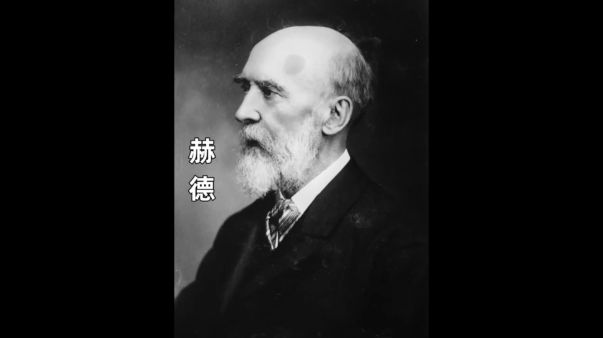
次日清晨6點，濟遠艦抵達威海劉公島。方伯謙並未如實報告戰場情況，隱瞞了自己拋下三艘軍艦獨自逃跑的事實，將自己塑造成了奮勇作戰的英雄形象。
今天我們來說一下在甲午戰爭時清軍與日軍的軍力狀況。在甲午戰爭爆發之前，很多人對清朝的軍力抱持高度期待，不僅是清朝官員，甚至一些外國公使也認同清朝軍力勝過日本的看法，在海軍方面尤其突出。他們認為北洋海軍旗艦定遠艦和鎮遠艦是亞洲最強的一等鐵甲艦，排水量都在7,000噸以上；反觀日軍最大戰艦也不到4,000噸。然而也有不同聲音指出北洋海軍與日本海軍實力相近：北洋艦隊的優勢在於大噸位、堅硬的船體和更大的火炮口徑，而日軍則有高航速及速射炮等特點。

英國人赫德也曾預測清朝陸軍最終會憑借人數優勢擊敗日本，但當時只有李鴻章一人對清軍實力存疑。
在第二次鴉片戰爭後，清朝開始籌備海軍建設，於1870年左右逐漸形成了北洋、南洋、廣東及福建四支水師。然而中法戰爭後，福建水師遭重創；由於經費問題，南洋和廣東水師發展受阻。只有在李鴻章的力推下，北洋海軍得到朝廷支持，在1888年正式成軍並享有「亞洲第一」之稱。
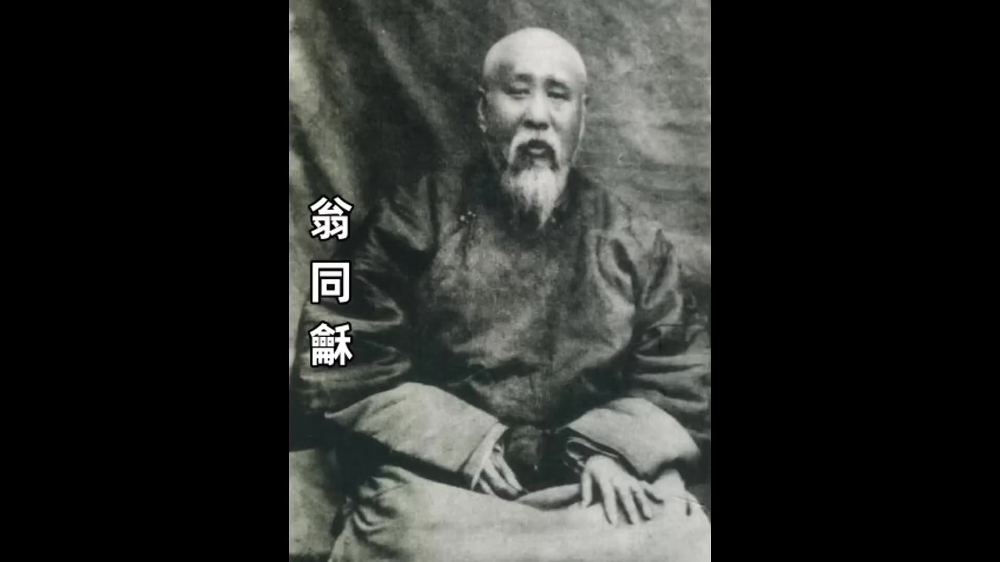
自從1888年起，清政府認為對海軍投入已經足夠，不再認可其為需要連續更新的軍種。在翁同龢主張下，清廷於1891年禁止海軍購買新艦，甚至在甲午戰爭爆發前都未解除這一禁令，導致北洋海軍無法追趕世界列強的步伐。
令天我們就來詳細比較一下在甲午戰爭爆發之前清朝和日本的軍力情況。
01:20:00
尤其在此時，日本將清朝視為假想敵，瘋狂擴張其海軍。這時期，日本海軍發展迅速。在甲午戰爭之前，北洋海軍的實力究竟如何呢？我們了解海軍力量主要來自李鴻章的奏折。1894年6月下旬時，清朝和日軍的先頭部隊都已進入朝鮮，雙方局勢非常緊張，但尚未宣戰或偷襲。
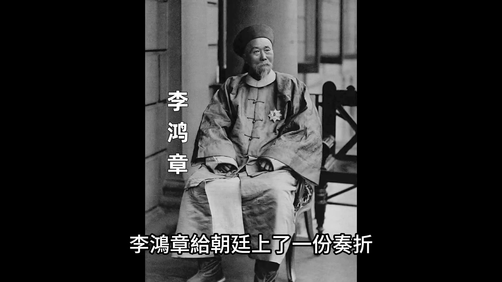
此時清廷內有不少清流黨言官發表意見，認為應採取强硬態度增派軍力。他們批評李鴻章主和的提議是軟弱行徑，並鼓吹對日開戰。這些言官相信日本僅為蕞爾小國，且過去十幾年間朝鮮壬午兵變及甲申政變均輕鬆取勝。清朝陸軍擁有百萬雄師，而海防建設亦歷時三十餘載，北洋海軍則有七八年的歷史，軍力強大。因此言官認為，是時候以武力顯現國威了。
隨着朝鮮局勢越發緊張，這些言官的言辭也變得愈加激烈。在此背景下，李鴻章向朝廷提交了一份奏折，詳細說明海軍狀況。他指出北洋海軍能出海作戰的戰艦實際上僅有8艘，與一般人心目中的強大海軍大相徑庭。當初1888年成軍時共有25艘船隻，而此後再無新增，其中包含15艘戰艦（鐵甲艦、巡洋艦和魚雷艇）、6艘守船（蚊子船）及3艘練習艦與運輸艦；僅有鐵甲艦與巡洋艦能遠海作戰。超勇號和揚威號已服役15年，屬撞擊巡洋艦式樣較老，不宜出遠海。如此一來，唯有8艘戰艦適合作戰：2艘鐵甲艦（定遠號、鎮遠號）及6艘巡洋艦（濟遠號、致遠號、靖遠號、經遠號、來遠號和平遠號）。李鴻章未提及的是這些軍艦老化嚴重，動力系統因長時間使用而損耗。提督丁汝昌曾多次向他請求大修並更換鍋爐，但資源有限。

較軍艦老化更嚴重的是其樣式落伍。19世紀四五十年代興起的蒸汽軍艦到了九十年代時技術與戰術不斷更新，新設計往往還未服役便已過時。北洋海軍諸艦皆屬此階段製造，當初雖屬先進，但僅數年間即落伍。1890年前後，船艦設計出現突破性創新，而北洋海軍的軍艦在此過程中漸趨落後。
01:25:01
在速射炮的概念出现以前，軍艦在火力方面追求的是火炮口径的大小，口径越大威力越强。而速射炮的理念则是不再一味地追求火炮口径，而是采用大量高射速的新式火炮，以密集的弹雨来打击对手。1891年丁汝昌向李鴻章提出申请，希望购买高速度船只和速射炮。然而，李鴻章在向朝廷上奏折时并未提及要买最新式的军舰，只说要采购一批速射炮。丁汝昌上报给李鴻章需要购买21门速射炮，但出于谨慎考虑，李鴻章仅上报购买12门，并且最终也未得到回应。
北洋海軍除了面临船只老化和型号落伍的困境外，还面临着燃煤与炮弹质量低劣的问题。燃煤与火炮火力是军舰性能的核心指标，直接影响到航速与作战能力。然而，在这两方面清廷的腐败给北洋海軍造成了致命伤害。
首先来看燃煤问题。北洋海軍的主要燃料来源为開平煤礦，此煤矿由唐廷樞创办于1878年。唐廷樞是李鴻章手下一名重要的洋务运动干将，他成功地用先进的机械开采出优质煤炭，并修建了运煤铁路以保证开平煤矿能够盈利。开平煤矿产出的五槽煤被视为上品，主要用于出口和供应北洋海军。
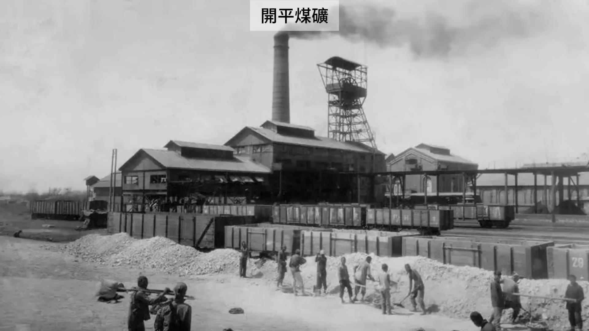
然而，在1893年唐廷樞去世后，张翼被任命为開平煤礦的新任总办。张翼利用其在京王公大臣中的关系谋取官职，并通过将优质煤炭出口海外获取巨大利益。他把劣质的八槽煤供应给北洋海军，导致丁汝昌多次写信抗议无效。因为优质燃煤不仅能够提供更高的航速，在战斗中也更有隐蔽性与持久力；而使用劣等煤则会加速锅炉损耗，并影响军舰作战表现。
即使丁汝昌威胁要向李鴻章报告这一情况，张翼仍然不为所动，因为他已经通过行贿手段获得了京城官员的支持。直到甲午战争爆发前，北洋海军最后一批供应的燃煤仍为劣质煤。
除却燃煤质量外，北洋海軍使用的炮弹同样存在严重问题。炮弹分为开花弹和实心弹两种类型：开花弹装填火药，在击中目标时发生爆炸；而实心弹则主要用于穿透敌舰水线引起进水来打击对方。显然，具有更好破坏效果的开花弹在北洋海军中最缺乏。
當時清朝主要有兩個軍火生產企業供應這些炮彈，但其供应不足的问题凸显了北洋海军装备落后的困境。
01:30:00
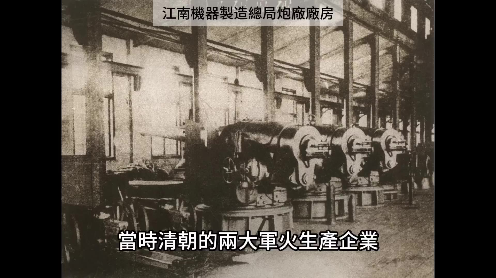
江南機器製造總局和天津機器局當時主要生產陸軍用的小口徑行營炮以及相應的炮彈，而海軍所需的大型火炮及開花彈因其技術複雜難度高，這些機構無法進行生產。清廷因禁止進口海外軍械，使北洋海軍的開花彈補給受到極大限制。甲午戰爭時期，北洋海軍裝備的主要炮彈為實心彈，而開花彈數量非常有限，且多數是購船時配套購買的備用炮彈，這些彈藥存儲時間較長，可靠性堪憂。
在1894年7、8月份，即甲午戰爭即將爆發之際，北洋海軍總司令丁汝昌向天津機器局申請開花彈補給。由於採購海外軍械需時甚久，故只能由天津機器局緊急生產，但這些臨時製造的炮彈質量欠佳，在黃海大海戰中出現了多種問題，如尺寸不合適、材質不合格導致炸膛等。
以定遠艦為例，該船僅領取到55顆普通開花彈，平均每門大砲只能分得10餘枚。在黃海大海戰開始後不久，這些炮彈便被消耗殆盡，剩下的時間內，定遠艦只能使用不會爆炸的實心彈作戰。
上述情況反映了北洋海軍於甲午戰爭時期所面臨的真實困境。這支1888年曾位居亞洲第一的艦隊，在1894年時已然外強中乾。
相比日本海軍在甲午戰爭中的表現，北洋海軍僅有8艘戰艦可遠洋作戰，而日方則擁有31艘主力艦，其中包含為應對定遠艦和鎮遠艦而特別建造的「吉野號」等多型巡洋艦。此外，在全球範圍內，這些日軍新式軍艦在火力、航速方面均處於領先地位。
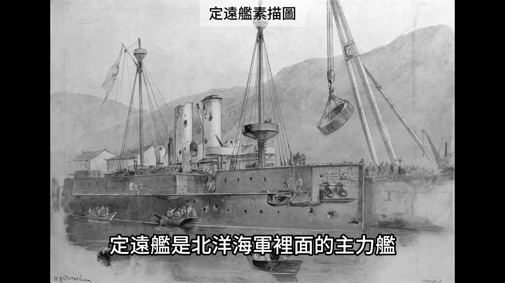
從軍艦年齡看，北洋海軍中最年輕的艦艇服役時間也已達5年以上，而日本海軍自1891年起陸續下水的新船共計9艘，其中還有兩艘於1894年才剛服役。這些新式軍艦無論航速還是裝載的速射砲都比北洋海軍現有裝備先進得多。
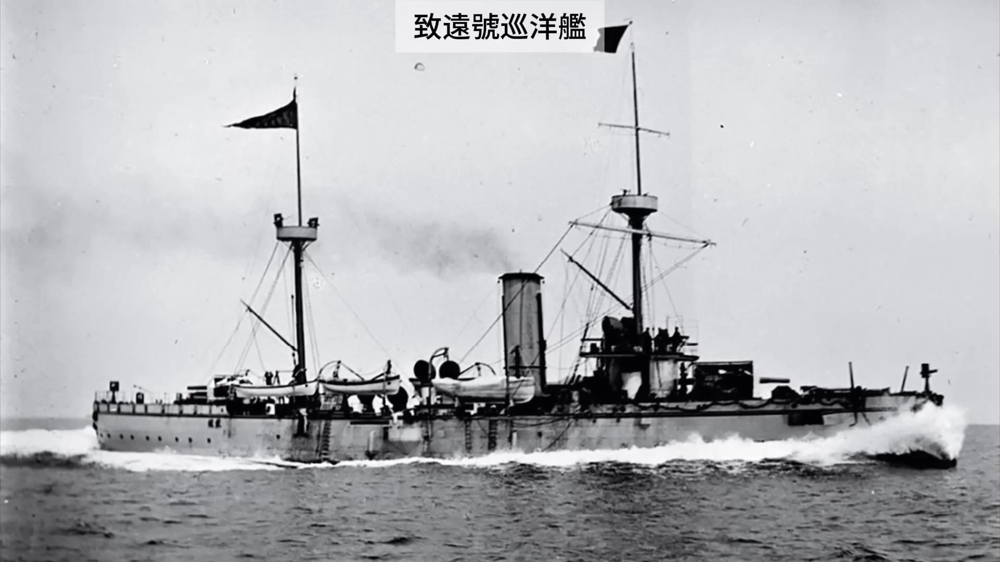
致遠艦在服役之初曾達到驚人的時速18節，當時屬全球最快的軍艦之一。然而，隨著年歲增長及鍋爐老化，其最高速度已降至約15節，而日本的「吉野號」則將速度提升至23節，大幅領先北洋海軍。
彈藥方面，北洋海軍開花彈的數量嚴重不足，且所填充黑火藥爆炸力有限；相比之下，日軍開花彈內填裝的是最先進的烈性炸藥，一旦命中目標將會造成毀滅性的破壞並引發難以撲滅的大火。
綜觀而論，北洋海軍無論在軍艦數量、先進程度方面均遠不及日本海軍。然而，在人員訓練方面，清廷對於海軍採取了與陸軍不同的制度，完全依照西方模式進行教育和培訓，未受綠營體制的影響，使得北洋海軍軍官及水手皆具備職業化訓練背景，無人懶散。
在招募水兵時，同樣經過嚴格篩選和專業訓練。
01:35:01
他們又經歷過專業的訓練和逐級考核，最後考核合格的才能稱為正式的水兵。他們在船艦上所有的教學、操作都是純英語，這對於當時的陸軍來說是根本無法想像的。
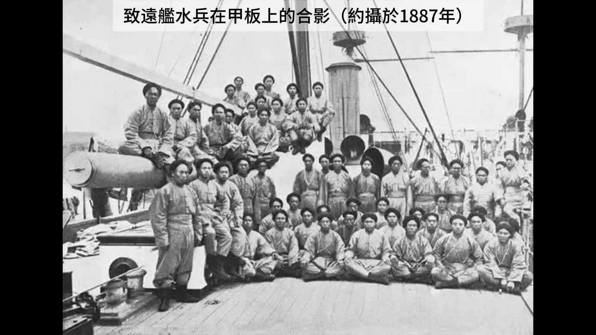
北洋海軍的制度規定，水兵一旦上艦後就基本上不流動了，一直在自己的軍艦上服役。這些軍官和水兵在自己的軍艦上服役短的有五、六年，長的甚至都有十年了，因此他們對自己軍艦的操作非常熟練，甚至達到了條件反射的地步。當甲午戰爭爆發時，北洋海軍的軍官們都很憂慮，因為他們知道自己的軍艦跟日本軍艦有很大的差距；但是北洋海軍的水兵們反而很有信心，認為自己的技術完全可以與日本人一較高下。當時，日本海軍的培訓方法和北洋海軍幾乎一樣，學的都是西方理論，但1890年後日本海軍大量購入新式軍艦，有些甚至是1894年剛剛服役的新艦，這使得這些新式的軍艦水兵與軍艦的磨合程度不足。
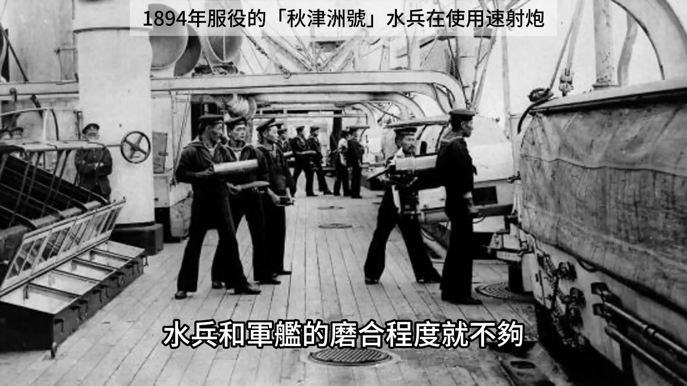
因此，在大東溝海戰中發生過多次因為操作失誤而導致火炮炸膛的情況。以上所說的就是北洋海軍和日本海軍之間的一些對比，接下來我們來談一談陸軍的情況。
在甲午戰爭爆發之前，清朝有編制的兵力是八旗兵與綠營兵，小旗兵全國總兵力25萬人，綠營兵44萬人；加起來共有69萬人。沒有編制的兵力則是由各地勇營組成，如湘軍、淮軍、嵩武軍、楚軍等地方性質部隊，共計約46萬人，兩者加總一共有115萬兵力。然而，在李鴻章向朝廷呈報陸軍兵力時，卻只計算體制外的勇營兵力。
因為八旗兵和綠營兵在之前打鴉片戰爭及太平天國時期均已證明無戰鬥力，根本指望不上。而且經過二三十年過去後，這些編製軍隊的武器裝備也沒有更新，更重要的是其腐化的體制，幾乎沒有什麼訓練，所以八旗和綠營根本上不了戰場。李鴻章在計算兵力時就未將他們算進去。
那麼問題來了，如此大規模已經腐化的常備軍既然無力作戰，為什麼不能裁撤呢？這就是滿清政權誰也不敢碰的地方了——這是維繫滿清政權存在的「祖宗體制」。無論誰發起改革或提出什麼樣的改革，都動不了這支毒瘤般的軍隊。
根據統計，在甲午戰爭爆發前駐防旅順、大連灣、天津、威海等地的淮軍有毅軍、親慶軍銘軍、盛軍、武毅軍、仁字軍嵩武軍等番號，這些部隊加起來共有38,000人；再加上駐紮在奉天的奉軍15,000人。因此李鴻章能調動的就是38,000人加上15,000人一共是53,000人。這5萬多淮軍加奉軍的兵力就是當時清廷最精銳的兵力了，他們中有不少人擔負著守衛炮台要塞的重任，不能隨意調動；真正能抽調出來機動作戰的兵力只有駐紮在天津的衛汝貴的盛軍11,000人、聶士成在直隸的練軍和武毅軍以及葉志超、左寶貴的奉軍3,800人，加起來也只有25,000人左右。
甲午戰爭爆發後，李鴻章先是把能派的機動陸軍基本上都派到朝鮮作戰了。在朝鮮戰場失敗之後，他又不得不將大量駐守炮台的軍隊投入野戰，導致炮台要塞防禦空虛，炮台重鎮接連丟失，李鴻章的這5萬人幾乎全軍覆沒。清政府被迫抽調其他省的勇營到前線支援，但這些部隊裝備不及淮軍精良，訓練也不如淮軍，到了前線就更不是日軍的對手了。
以上就是清朝陸軍的情況。接下來我們來看日本陸軍的情況：除去守衛本土各港口要塞的部隊之外，能夠機動投入戰場的兵力有12萬人。
01:40:02
在甲午戰爭中，日本派遣了約12萬陸軍參戰。這些部隊被編為七個野戰師團，幾乎全部投入與清朝的戰場上。日本陸軍在作戰時的單位稱謂是「軍」，一般由兩個野戰團組成，總兵力超過3萬人。相比之下，清軍的規模和組織能力顯得薄弱，無法匹敵。
清軍的編制仍沿用曾國藩時代湘軍的方式，最大單位為營，步兵營通常有400到800名士兵，騎兵或炮兵營則有100到300人。當時的清軍沒有近代化的指揮系統，在大規模作戰中容易出現混亂和失控的情況。
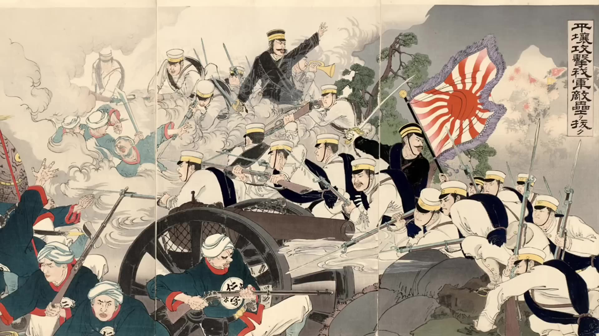
另一方面，日本陸軍已經實行義務兵役制度並普及了軍事院校教育，軍官與士兵都接受了現代化軍事訓練。他們的裝備、戰術以及後勤支援系統也實現了近代化。
清軍的軍官大多數未接受過近代軍事教育，他們多因在太平天國和捻軍戰爭中的功績逐級升遷。這些軍官所掌握的知識主要來自長輩指導或個人實戰經驗，而士兵層面更缺乏系統性的現代軍事訓練。

隨著時局的變化，清軍從太平天國與捻軍戰爭後所積累的實戰經驗逐漸淡化，即使裝備新式武器，作戰能力仍停留在過去時代，導致其實力虛弱。
在朝鮮境內首次陸戰中，日軍於1894年7月23日在朝鮮建立親日政權。隨後，日本以朝鮮政府的名義要求清軍撤出朝鮮領土。此時，日軍已達8,000人，而清軍僅葉志超和聶士成率領約2,000人。
7月25日，豐島海戰發生時，日軍亦從漢城出發前往牙山地區。大島義昌旅團長指揮的4,000多人的部隊隨即向牙山進發，並攜帶了8門行營炮。與此同時，葉志超得到李鴻章派遣的補給船支援，兵力增至約3,800人。
在這種緊張局勢下，清軍做了初步防禦準備：聶士成率領2,800名士兵駐守成歡，該地是漢城通往牙山的重要通道。葉志超則留下一個營500人在牙山駐紮後撤往公州。
然而，這一兵力分散策略使清軍本就有限的兵力更加削弱，埋下了將來戰場上失敗的伏筆。7月28日夜間，日軍先遣部隊已抵達指定地點。
01:45:01
在韓國的大邱廣域市成歡外圍，安城渡附近的一處河邊要隘，雙方展開了激烈的戰鬥。清軍早在這裡構築了防禦工事，並提前蓄水形成一片沼澤地，利用地形優勢重創敵軍，擊斃數十名日軍，但仍因兵力不足被迫撤退，最終安城渡被日軍奪取。

隨著安城渡失陷，日軍進一步集中兵力向成歡發起攻擊。他們採用了佔領制高點、以行營炮轟擊敵陣地、步兵騎兵配合包抄的戰術，清軍雖然竭力抵抗卻因兵力與裝備上的劣勢以及現代化軍事訓練不足而逐漸處於下風。在日軍猛烈攻勢和有效作戰策略之下，成歡最終淪陷。
成歡失守後，牙山也失去了屏障，駐守的500名清軍很快撤退，牙山落入敵手。葉志超與聶士成率領敗軍繞道一千公里退往平壤，而日本則佔領了朝鮮南部，轉向北上進攻平壤。
在豐島海戰和成歡、牙山之役後，清廷於1894年8月1日正式對日宣戰，日本亦在同一日宣布與中國進入戰爭狀態。此後俄國以外的各西方列強均宣告中立態度，並未直接介入。
接下來的戰場轉移到了朝鮮北部的平壤，在7月下旬，李鴻章調動各地的淮軍和奉軍前往增援。至8月底，共有15,000名清軍抵達平壤，分別由衛汝貴的盛軍6,000人、馬玉昆的毅軍2,000人、左寶貴的奉軍3,500人、豐升阿的吉林練軍1,500人及葉志超聶士成從牙山撤退而來的2,000人組成。儘管這五支部隊素未謀面，但由於葉志超官銜最高，李鴻章命令他統領這些部隊。
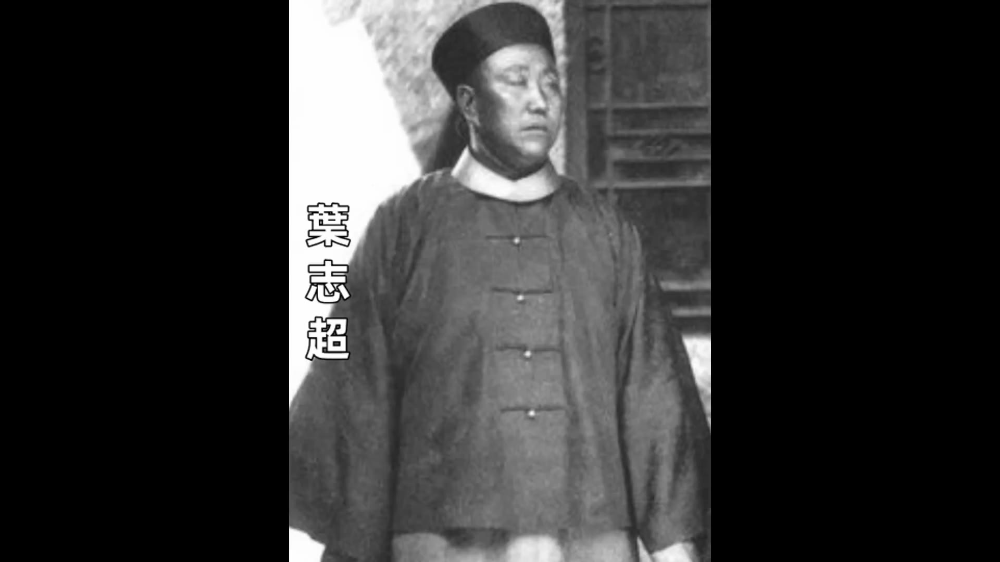
日軍則在同月做好了進攻平壤的準備，總兵力達16,000人，分別來自大島義昌的混成旅團、新登陸的第五師團和第三師團的一個混成旅。日軍指揮官為第五師團的師團長野津道貫，其戰術是分三路包抄平壤，三支大軍協同作戰，在9月15日前到達指定地點（中山洞、中碑石洞）。
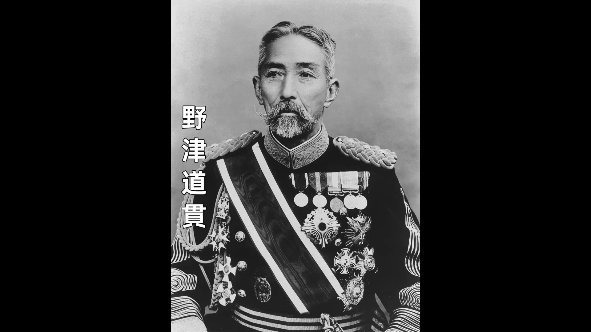
平壤作為朝鮮北方重鎮，城牆高達十米，大同江環繞城南形成一道天然屏障。清軍抵達後立即著手加固城池防禦工事，在東南方向的船橋里位置構築了五處堡壘，並在城墙下布設地雷，作戰部署嚴謹而全面。

葉志超根據地理位置部署防禦策略，在平壤北面的牡丹崗設置據點，而西門景昌門則由他親自防守。當作戰方案確定後，各路清軍將領按計劃奔赴駐地，開始了為應對來襲敵軍的緊張加固工作。
01:50:00
日軍以三支部隊分別抵達平壤附近，採取包抄合圍的戰術策略。根據地圖顯示，平壤及其周邊地區的防禦工事和重要地點清晰可見。

日軍其中一支部隊從麥田店渡過大同江，繞至平壤城後方東北方向，目標是攻擊位於平壤城北的牡丹台。該支部隊兵力有24,400人，由佐藤正率領。另一支元山支隊由佐藤正帶領從元山出發，渡過大同江與朔寧部隊會合。
日軍的這兩支部隊對於平壤城造成了巨大威脅，並切斷了清軍在義州和萬原的補給線。日軍認為牡丹台是全城制高點，必須攻佔。元山支隊和朔寧支隊結合起來占據了日軍總體兵力的一大部分。
然而，清軍防守重心卻放在平壤城東口和南面，未能預見到日軍的包抄行動。當時在平壤附近的朝鮮人無論官府還是百姓都對難民進行救濟。相較之下，日軍並不得人心，在行軍過程中所有遇到的日軍，當地朝鮮人都會回避逃跑，被迫徵用的人員也多數中途逃走。此舉造成日軍無法從當地獲取補給，還經常遭到小股武裝的偷襲。
9月12日起，隨著平壤被合圍，清軍補給完全斷絕，後路也被截斷，形勢危急。根據另一地圖顯示，平壤及其周邊地區的戰略布局和要塞位置清晰。

9月15日凌晨4點半，大島義昌混成旅在大同江南岸船橋里發起了攻擊，揭開了平壤戰役序幕。馬玉昆率領毅軍猛烈還擊並協助炮轟，日軍士兵衝鋒時無掩護，傷亡慘重。清軍憑藉堡壘優勢，以槍砲齊射迎敵。
經過長達10小時激戰後，大島義昌下令撤退，此役中清軍以2,200人擊退了3,600名日軍，造成日軍傷亡逾430人。清軍取得首場勝利並獲得高度評價。
野津道貫率領第5師團，盛軍作戰勇猛，騎兵隊發起了兩次反衝鋒，但被擊退。清軍士兵戰死130多人，在見到衝鋒不利後，轉而堅守陣地，該線奉軍的堡壘眾多且極為堅固，日軍砲火無法摧毀。
總結而言，暫停休息前的兩場戰鬥在平壤東南方向進行，清軍成功守住陣地。北面7,800名日軍對抗左寶貴率領的2,900人奉軍，後者防守牡丹台，這支奉軍值得特別提及。
01:55:00
應該算是清軍五支主力軍隊之一，奉軍因其長期在東北地區與匪徒作戰而積累了豐富的實戰經驗。因此，在當時其他幾支軍隊缺乏實際戰鬥經歷的情況下，奉軍顯得格外具備戰力。
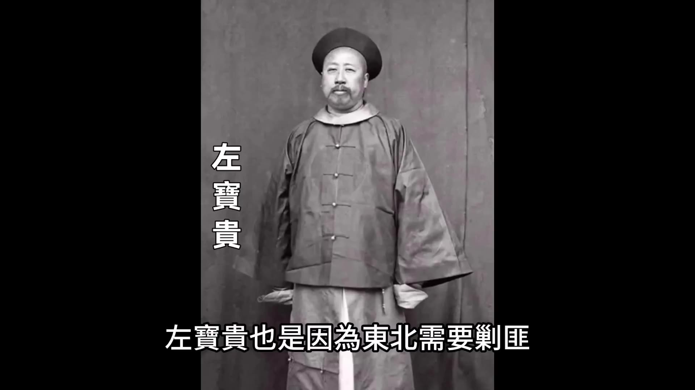
左寶貴因東北地區剿匪需要被調往奉天，他是一位久經沙場的老將，在年輕時即已加入軍隊。他在鎮壓太平天國與捻軍的行動中立下了赫赫戰功，並因此獲得了升遷機會，最終成為淮軍一員。隨著這些大規模內亂的平息，清軍中的武官們由於缺乏新的大型戰爭而失去了進一步提升職位的機會。然而，在1872年，直隸熱河地區出現了大量馬賊活動，左寶貴負責追剿當地的馬賊並因功勳再次得到提拔。此後，朝廷見識到左寶貴的出色能力，再度派遣他前往東北剿滅那裡的大股馬賊。由於奉天周邊不斷有馬賊滋擾，左寶貴率領著奉軍與之鬥爭，並逐一將這些勢力消滅。

在甲午戰爭中，左寶貴帶領著奉軍中的3,500人來到朝鮮，其中一部分負責後勤運輸工作；進入平壤城的則有約1,200名士兵駐守牡丹台。面對日軍7,800人的猛烈攻勢，雙方兵力形成巨大對比。擔任朔寧支隊及元山支隊指揮官的是少將立見尚文，他來自武士家庭並接受現代軍事訓練，在日本明治時期陸軍中獲得迅速升遷，因其在倒幕戰爭中的優異表現而享負盛名。
當1894年5月26日拂曉時分，朔寧支隊開始進攻牡丹台。盡管清軍兵力處於劣勢，他們仍然頑強抵抗，然而最終難以抵擋敵軍猛烈炮火的轟擊，牡丹台戰線崩潰，玄武門成為了最後一道防線。在緊急時刻，左寶貴親身激勵士兵們堅守陣地，並身穿黃馬褂、頭戴頂綬花翎，手持步槍奮勇作戰。當敵軍炮火不斷加劇時，他甚至親自操縱加特林機槍進行還擊，但在激烈的交鋒中不幸身負重傷，兩處創口中尤其是一顆流彈穿胸而過。
左寶貴的犧牲激發了奉軍士兵們的決心，他們不顧個人安危堅守陣地；然而隨著戰況日漸不利和補給線被切斷，在雨夜中，清軍將領葉志超建議趁著敵軍休息時撤離平壤。當天深夜，清軍從北門悄然撤出城牆，但在撤退途中遭到了早已埋伏的日军伏擊，傷亡慘重。
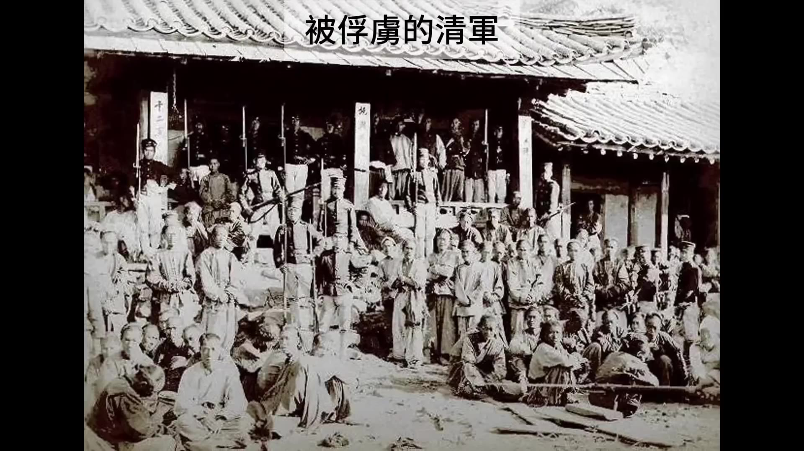
根據日軍統計，在撤退過程中，清軍損失慘重。
02:00:00
被俘虜的有六百八十三人清軍在七月十五日白天作戰過程中傷亡七八百人，逃跑途中損失的人數遠遠超過了戰死的人數。七月十六日上午十點，日軍從平壤南門入城，平壤城牆上插上了日本旗。清軍逃脫的部隊往義州方向撤退，在九月二十四日渡過鴨綠江回到了本國境內。自此之後，清朝軍隊再也沒出現過在朝鮮。對於這場平壤戰役，清軍戰敗的首要責任毫無疑問是主帥葉志超。
葉志超在成歡、牙山戰中戰敗之後，他謊報軍情說牙山大捷，也是因為他上報的是牙山大捷，清廷才獎勵他並繼續派他擔任防守平壤的總指揮官。在平壤的戰前會議商議作戰方針的時候，葉志超主張防守策略，而左寶貴提出不同意見。左寶貴長期在東北和朝鮮邊境防守，對日軍的瞭解比其他將領更多，認為日軍戰鬥力高於清軍，所以建議在戰前應主動出擊擊退敵方偵察哨兵，但葉志超不同意。經歷過牙山戰敗後的他自認軍力不足，堅持防守策略，並最終導致了平壤戰役的失敗。
葉志超在平壤戰敗之後又一次謊報軍情，後來被揭發被判處斬監候。退出平壤的決定不是由葉志超一人做出的，而是與各軍將領開會討論後共同決定的。上午作戰中表現勇猛的盛軍統帥衛汝貴、毅軍統帥馬玉昆等人都同意了撤退。那麼，是什麼原因讓他們共同做出了這個決策呢？葉志超在會議上提出了兩個要撤退的原因：第一個原因是城北面的牡丹台和玄武門失守；第二個原因是彈盡糧絕。
當然，軍事上的不利局面是一個不容置疑的事實，但彈盡糧絕是否真的影響到了清軍戰鬥力呢？我們來看看清軍彈藥的情況。邱鳳池是負責平壤城內盛軍軍械和彈藥管理的委員，在逃跑途中被日軍俘虜。戰爭結束後他獲釋回國，並對自己在平壤經手辦理的軍械收發事務做了詳盡述職報告。根據邱鳳池報告，盛軍每名士兵隨身攜帶一百五十發子彈，約五千人數量加起來共有七十五萬發。到達平壤後盛軍接收了兩批軍械彈藥等物資，包括七十五毫米克虜伯行營炮炮彈一千二百發、兩磅小行營炮炮彈一千二百發及加特林機關炮炮彈五萬發、各類步槍子彈五十萬發。從九月十二日開始，盛軍跟日軍的小規模作戰直到十七日正式開戰，到十五號中午停戰時，盛軍子彈消耗量高達七十五萬發。這意味著隨身攜帶的子彈已全部打光，接收後的五十一萬發子彈也無法再支持一次類似於十五日上午那樣強度的戰鬥。
其他各軍的情況也都差不多，日軍繳獲清軍的軍械情況也能佐證這種觀點。在戰爭結束後，日軍方面繳獲了清軍七十五毫米克虜伯炮十八門及五十十六發炮彈、四門加特林機關炮與一百一十七發炮彈。按照這樣計算，平均每門炮只剩下不到三十發炮彈，而四門機關炮的一百一十七發子彈僅夠使用幾分鐘。
面對這種彈藥情況，葉志超說出的第二個原因也就顯得合理起來。他指出朝鮮戰場由於李鴻章遲疑不決，未及時增兵，等下定決心再運兵時時間已十分緊迫，盛軍、毅軍、奉軍和東北練軍為了加快行軍速度而減少載帶的彈藥，後續轉運重武器與大批彈藥及糧食的問題也出現了。
02:05:03
在平壤城內，各支部隊並沒有統一的後勤補給系統。每支部隊所攜帶的糧草和武器都是各自省份籌措提供，相互之間並不接濟，且是獨立運輸。

從清朝國內往朝鮮運送兵員和物資最有效率的路線，是用輪船從天津或旅順港口橫渡黃海至大同江卸載；然而豐島海戰後此路徑變得十分危險而被放棄使用。其後的運輸方式改為先由輪船將軍需品從天津運送至旅順，在旅順轉移至小木船，沿著日本軍艦無法進入的近海水道潛行到鴨綠江口卸載，再轉運至朝鮮境內的城市義州。因此義州成為各路清軍物資匯聚之地，盛宣懷在此設置了「義州轉運局」。在義州集結後，各支軍隊分別自行派人將所需物資運往平壤。
舉例來說，左寶貴的奉軍共有3,500人，其中須分派一個營約500人的兵力專門負責從義州到平壤間的軍需物資轉運工作。其他各部在出發時亦未帶長夫，故由士兵承擔此任務。然而，義州至平壤的道路僅為土路，在朝鮮境內租用牛車拉載，加之雨季連綿不斷，道路泥濘，行進緩慢。
一個具體運輸過程的例證是：盛軍的一批物資於8月16日從天津出發，8月18日抵達旅順，然後轉移至當地民船。然而由於民船不敷使用且該部又支付不起高昂的費用，耽誤了數週時間直至9月初才運到義州。由天津至義州轉運站便花費半個月時間；再從義州運往平壤則需時8-10天左右。
在此之前日軍已經繞到平壤後方截斷陸路補給線，故清軍利用這條漫長的補給鏈僅成功提供一次補給。進入平壤的各支清軍於戰役爆發前只接收過一輪補給，其後便再也無物資運入。
據戰後義州轉運站的清單，堆放於該處的軍糧共有7,000石，其中包括衛放貴盛軍的大約3,000包、葉志超武毅軍和直隸練軍的大米2,000石。這些糧食在9月初到達義州轉運站，但由於義州至平壤的運輸線已被日軍截斷，故未能將其運往目的地。
唯有左寶貴奉軍的一次運送成功了，該部運輸隊沒有走陸路而是冒險走水路從義州裝船運到平壤，歷時8天安全抵達並順利運入2,000石糧食。此時，平壤城內各支清軍主要依賴戰前自行攜帶的軍糧補給，由於後方補給線被截斷而無法獲得進一步支援。
為維持軍事行動所需，清軍不得不向平壤當地居民徵收糧草，該城共約2萬人口需供應一萬多清兵之用。隨著戰爭進展及補給困難日增，清軍在平壤內的糧食已消耗殆盡，遂將所有可得之物皆納入軍餉範疇。
據日軍戰後統計，清軍所徵收之糧種類繁多，包括大米2,600石、未脫殼稻穀302石、大麥4石及粟米817石等。這些數量僅能維持清軍一周左右的時間，即便加上城內居民所需，供應也僅夠維持三天之用。
在此情況下，葉志超和各路將領均認為撤離平壤成為必然選擇；牡丹台和玄武門失守固然是一部分原因，但更主要的是由於「彈盡糧絕」的困境。因此，清軍於平壤戰役中的敗北不僅與主帥失誤相關，亦反映出其整體作戰能力和後勤補給能力上的諸多問題。
在戰爭爆發前六月初時，朝鮮局勢已然緊張。
02:10:00
翁同龢是朝廷內主戰派的重要領袖，他曾建議派出劉錦棠為朝鮮戰場陸軍主將。當時劉錦棠五旬之年，身體狀況不佳，在新疆卸任後回湖南老家養病。當他接到朝廷的諭旨時，即刻抱病啟程，但不幸的是他在湘鄉縣城突然病情加重，不久便去世了。劉錦棠臨終前還在關心朝鮮戰場，建議召喚他手下的張俊和董福祥出戰。關於劉錦棠的軍事才能，在觀眾看過之前節目《收復新疆》後應當都十分清楚。可惜的是，劉錦棠未能上陣參與甲午戰爭，距離這場戰役只有一步之遙。歷史無法假設，但若他能登上戰場，或許能改變清軍的局勢也未可知。
在平壤戰役中，日軍掌握了主動權。接下來我們介紹黃海大海戰（又稱大東溝海戰），這是一場眾所周知的海戰，很多人對甲午戰爭的印象就是這場海戰，其重要性不言而喻。這場持續五個小時、決定中日兩國命運的大海戰，其具體經過怎樣？我們今天會詳細解析。

首先介紹海戰的地點—大東溝。它位於鴨綠江進入黃海的入海口，以薪島為界，鴨綠江口被分為東西兩個通道。東側通道淤積大量泥沙，大型船隻無法通過；而西側通道入口處是一條河溝即大東溝，適合航行並具備一個小型避風港—大東港，可容納噸位不大的海船。此前我們介紹過清軍運兵路線自豐島海戰後，清軍改道鴨綠江，於此處換乘小船再陸上前往平壤。而甲午戰爭爆發以來最大規模的清軍運兵行動也是從這裡展開。

9月16日凌晨1點，運載劉盛休銘軍的商船和北洋海軍主力艦隊從大連灣出發，經歷長達13小時航行後，在下午2點抵達大東溝口外準備換乘小船護送士兵與物資。參與此次護航的是定遠、鎮遠等十六艘主要軍艦及兩艘蚊子船和四艘魚雷艇。這些軍艦分別部署於不同戰略要地，負責守衛運兵商船轉運的安全。
這樣的運輸過程顯得風險重重，尤其在換乘小船這一環節需要大量時間和人力配合。而這場著名的海戰就在大東溝外的海域展開了。
02:15:03
在小鹿島附近的清軍艦隊於9月16日下午兩點抵達大東溝。日本聯合艦隊則是在同一天下午四點從他們位於朝鮮的臨時錨地啟程，開始了在黃海搜尋清軍艦隊的任務。此次行動源於伊東祐亨於兩天前即9月14日收到的一份情報。
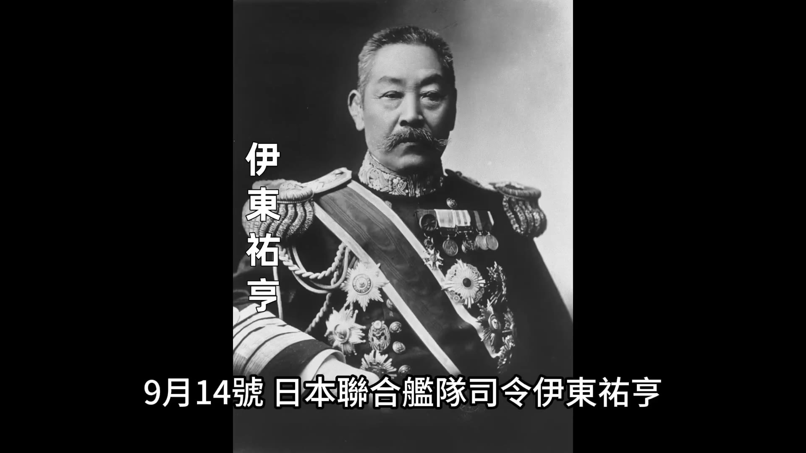
這份情報源自日本陸軍，內容提到大同江被俘獲的中國船上發現了清軍的公文。該文件指出奉天練軍正在增強大鹿島一帶沿海警戒。根據此情報推測，清軍的增援部隊可能在大鹿島附近登陸。隔日9月15日，伊東祐亨又收到了日本大本營的情報，這份情報是從中國電報局截獲的密電，由丁汝昌發給旅順基地道台龔照璦，內容提到要派留在旅順基地的六艘軍艦執行護航任務。這六艘軍艦分別是超勇、平遠、廣丙、鎮中和鎮邊。
根據以上情報，伊東祐亨決定派出日本聯合艦隊前往海洋島與大鹿島一帶搜尋清軍運兵船，試圖在半路截獲運兵船並發動突襲。然而，他獲得的情報雖準確指出清軍有運兵船出動及護衛艦跟隨，但誤判了護航艦隊的實力。實際上，丁汝昌率領的十二艘主力艦也已從威海返回旅順，加入了護航任務。

伊東祐亨派出十二艘主力艦進行截擊任務，其中包括六艘本隊的軍艦（松島、千代田、嚴島、橋立、扶桑、比睿）以及四艘第一遊擊隊的軍艦（吉野、秋津洲、浪速和高千穗），還有炮艦赤城及臨時改裝為軍艦的商用船西京丸。這次行動顯然並非為了與北洋海軍主力對決，而是為了偷襲運兵船。

這些軍艦中，雖然西京丸號僅為商用船臨時改裝而成的代用軍艦，並非戰鬥主力，但由於其淺吃水特性，可進入淺水海灣搜索運輸艦隊；而赤城號則是小型炮艦，專門擔任偵察任務。因此，北洋艦隊和日本聯合艦隊的相遇並非預謀對決，而是清軍為護衛登陸部隊進行護航行動，而日本則為偷襲運兵船而出動。

清軍登陸行動於9月16日下午兩點開始，直到隔日即9月17日上午八點才完成不到一半，速度非常緩慢。北洋海軍艦隊則在大鹿島東側靜待任務，艦隊上空籠罩著劣質煤炭燃燒後的濃煙，各艘船隻正在進行例行操練。致遠艦廚房裡正為其艦長鄧世昌慶祝45歲生日。
日本聯合艦隊於出發後抵達海洋島，此地處大連灣和大東溝航道之間。他們派出赤城艦進行近海偵查但未發現清軍登陸痕跡，隨後繼續向大鹿島方向航行。9月17日上午十點二十，吉野艦瞭望兵突然發出煤煙訊息，標誌著兩軍將會迎頭相遇。
02:20:00
通過旗語報告給了松島艦上的司令官伊東祐享，此時最大的可能性就是清軍的運兵船。果然不出所料，日軍繼續行駛到中午11點的時候。

在東北方向能看到的煤煙逐漸增多，由一縷變成了兩縷、三縷、四縷，甚至更多。等到11點半的時候，吉野艦完全看清了煤煙的數量，並且發現了定遠艦和鎮遠艦。吉野號的瞭望兵目瞪口呆地看到了北洋海軍全部主力戰艦出現在眼前，吉野艦迅速發出警報讓後方的戰艦知道情況。伊東祐亨原想偷襲對方運兵船的計劃被破滅了，他認為自己是上當了，看來收到的情報是清軍設下的圈套，目的是引誘他們前來對決。主力軍艦的對決已經在所難免，伊東祐享立刻下令本隊軍艦變換陣型改為各艦之間距離相等的縱隊隊形，坪井航三也下令第一游擊隊航速降到6節等待後方的本隊。
北洋艦隊也在11點半左右發現了日本軍艦的煤煙，產生的是滾滾黑煙。日本艦隊用的是無煙煤，要早一個小時才能發現對方。在發現敵艦之後：

丁汝昌的心情應該是複雜的，作戰是不可避免的，他的任務是要保護運兵船登陸，現在登陸還沒有完成一定要完成保護的任務，但是在哪裡作戰是需要選擇的。
利用淺水的優勢在大東溝附近的海域打這場仗對於機動性不強的北洋海軍是有利的，但是這樣的話大東溝內還沒有卸載完畢的運兵船就很容易會暴露。一旦暴露就會被戰火荼毒，他為了確保登陸部隊的安全，選擇了前往遠離大東溝的方向迎敵，北洋艦隊的10艘主力艦全部起錨向敵艦駛去。丁汝昌通過望遠鏡除了看到對方的主力軍艦之外還看到了有兩艘小型軍艦，他看到這兩艘是日本的西京丸和赤城，這兩艘軍艦被丁汝昌當成了運兵船。丁汝昌就以為對方這趟任務是來護送日本運兵船的，他認為日軍派出運兵船是想在大東溝登陸來抄清軍的後路。所以雙方的主帥在發現對方之後都做出了錯誤的判斷，丁汝昌誤以為日本艦隊是護航運兵船，伊東祐亨誤認為清軍是通過假情報誘騙他們來主力對決，但是這些都不重要，不影響即將面臨的海軍對決。
北洋海軍的陣型由犄角魚貫陣變為了犄角雁型陣。北洋海軍和日本海軍都是同一個師傅，都是跟英國和法國學的，當時英國海軍最基本的戰術都是3艘軍艦作為一個小的戰術分隊，3艘軍艦在一起可以協同行動配合作戰也不容易被對方各個擊破。3艘軍艦數量正好要是多了由於軍艦上的旗語能表達的意思過於簡單很容易引起歧義，還有編在一組的船必須性能上是差不多的不能把航速快的戰艦和航速很慢的戰艦編在一起這樣不利於協同行動就是按照這樣的標準3艘軍艦編成一個小分隊。本隊的6艘軍艦千代田和橋立是一個小分隊，松島嚴島、扶桑和比睿是一個小分隊，另外兩艘特殊的軍艦西京丸和赤城也被編成了一個小隊並沒有採用三艦編隊的形式。
在編隊的時候需要考慮的因素很多，比如說按照船艦的種類把定遠和鎮遠編成一個分隊也有類似於致遠和經遠那樣把穹甲巡洋艦和裝甲巡洋艦北洋海軍這次的10艘軍艦：

定遠和鎮遠是一個小分隊，致遠和經遠是一個小分隊，靖遠和來遠是一個小分隊，濟遠和廣甲是一個小分隊，超勇和揚威是一個小分隊。北洋艦隊在起錨出擊的時候用的是犄角魚貫陣這種陣型屬於待機陣型可以用於停泊也可以用於日常航行的基本隊形。這種隊形呢看起來是兩列縱隊其實還是很有區別的，它真正的編隊不是按照縱隊排列的，不是說左邊一列6艘軍艦右邊一列5艘軍艦不是這樣的而是橫排的兩艘軍艦是一個小分隊一個小分隊是兩艘軍艦相對位置略微錯位不在一條直線上。當時稱作犄角式，所以北洋艦隊在剛起錨的時候的陣型看起來是兩列縱隊其實是由5支錯列的兩艦分隊構成的一個五疊橫陣，在起錨之後不久丁汝昌就下令變陣由犄角魚貫陣變為犄角雁型陣。
02:25:02
變陣過程中的北洋海軍開始調整其艦隊位置，以鎮遠與定遠兩艘鐵甲艦作為中央標兵保持航向不變，其余各分隊則根據指揮進行左、右轉移展開。具體來說，第二隊的致遠和經遠艦分別向第一隊的左邊延伸；靖遠、來遠（回誤）則向右側與之對應地排列。第四隊中的濟遠及廣甲向左至第二隊左邊位置調整；第五隊超勇與揚威則向右至第二隊右邊處列陣。在此過程中，艦隊整體呈現出一個中央突出而兩翼落後的「人字形」編隊結構。
丁汝昌下令變換陣型時，還強調了以下三點重要戰術指令：同一小分隊內的軍艦需共同行動；無論進攻還是防禦都須相互配合；第二艦首始終對準敵艦方向作戰。特別是第三條「所有軍艦必須遵循旗艦運動」的規定，其意義重大，因為在戰爭中旗語指令的有效性極限及容易產生誤解的情況下，此規定確保了整個艦隊行動的一致性和協調性。丁汝昌所設計的犄角雁型陣配合這些戰術指揮原則，成為北洋海軍在混亂中的標準作戰模式。
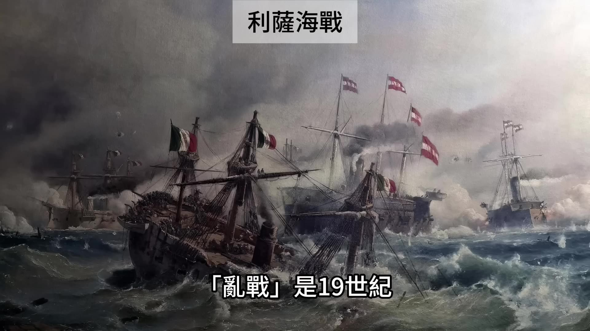
「亂戰」一詞源於19世紀奧地利與意大利之間的利薩海戰後期，在此戰役中，這種戰術是指艦隊接近敵方陣型後散開成多個小分隊進行混亂作戰。它重在利用犄角和魚雷等近身武器突擊敵軍，以實現分散打擊的效果。

丁汝昌設計的犄角雁型陣並非最終作戰陣形，其意圖是在接近敵人後，將五個小分隊從多個方向突擊，以突破日軍長達三海里的縱隊編隊。這種橫陣有利於發揮北洋艦隊在船頭裝備的火炮威力，而日本艦隊則主要依靠側部火力作戰。隨著距離減短，北洋艦隊原有的遠程優勢不再，丁汝昌於是改採亂戰以近身武器制勝。
然而，在實踐中卻出現了問題：本應在左翼末端的第四小分隊中的濟遠與廣甲兩艘軍艦並未到位，反而落在整個編隊後方，躲在定遠和鎮遠兩艘鐵甲艦之後。這樣不僅削弱了北洋艦隊左翼的力量，還蒙上了不祥預兆。

隨著雙方艦隊逐漸接近至12點50分時，日本的第一游擊隊開始以10節航速從北洋海軍陣前通過，向北洋艦隊右翼駛去。此時北洋海軍官兵已能清晰看見四艘大型日艦。由於北洋艦隊僅維持著8節航速，速度上的差距令丁汝昌憂心忡忡，擔心若按此速度，北洋艦隊各分隊還未切入敵陣，日本第一游擊隊可能已繞到北洋海軍火力薄弱的側翼。

松島號上的伊東祐享同樣緊張不安，但他不解為何北洋艦隊仍維持著如此緩慢的速度。然而實際上，劣質燃煤、老化軍艦及近乎報廢的鍋爐使得北洋海軍最高航速只能達到這水平，面對此種困境，官兵們也只能接受現實。

在此時刻，北洋艦隊唯一期望就是能夠迎擊即將繞至側翼的日軍第一游擊隊。
02:30:01
運動到自己的右翼之前，北洋軍隊設法給他們造成盡可能大的損失。此刻現實留給北洋海軍的機會似乎只剩下一個了，就是在遠距離上運用大口徑火炮的射程優勢先聲奪人。定位於定遠艦中部的主炮台上裝備有四門305毫米口徑的克虜伯巨炮，這是北洋艦隊中最有威懾力的武器，有效射程高達7,800米。定遠艦上操作這台巨炮的有17個專職水兵，負責指揮這台巨炮的是槍炮大副沈壽堃。此刻沈壽堃正站在炮台上不斷地聽取測距員的報告：「8000米、7000米、6000米，預備！」沈壽堃大喊一聲「開炮」，1984年9月17號中午12:50，定遠艦射出了黃海海戰的第一顆炮彈。這顆炮彈落在了距離吉野艦左舷幾百米的海中，雖然沒有打中，但是在6000米的距離上清軍只採用標尺首發能達到這樣的射擊效果也是讓人十分驚訝的。
定遠艦開火之後，北洋艦隊的各艦紛紛開火射擊。他們並沒有集中火力攻擊第一游擊隊，而是各自尋找距離合適的目標進行進攻。日本艦隊還沒有還擊，因為日本艦隊的速射炮的射程短，在戰前他們制定戰術的時候有規定必須達到3000米的距離才能射擊，因此面對北洋艦隊的炮火轟擊，日本艦隊依然以側翼大面積暴露的隊形在默默航進。坪井航三為了讓第一游擊隊盡快通過北洋艦隊的射擊區域，下令把航速提高到了14節，但是後面的本隊卻依然沒有變速。
第一游擊隊和本隊之間漸漸地出現了一個缺口，3分鐘後日本本隊末尾的一艘軍艦被擊中起火，進發出熊熊的火焰。北洋艦隊上充滿了歡呼的喝彩聲，這段不到3分鐘的時間在日本海軍眼中彷彿進入了煉獄一般。面對北洋艦隊大口徑火炮的攻擊，他們必須要等到3000米距離才能開炮，精神壓力非常的大。但是還沒到3000米距離的時候，日本艦隊的旗艦松島艦主炮炮台就被炮彈擊中。
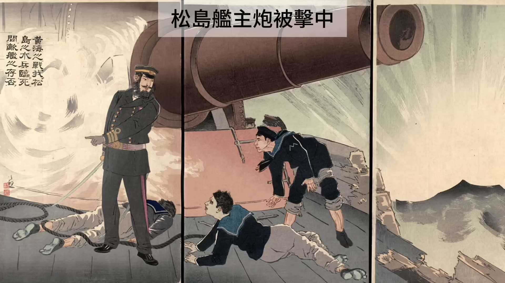
主炮的液壓旋轉機遭到了嚴重破壞，這座320毫米的主炮還沒發射就陷入了癱瘓。我們看啊，北洋艦隊定遠艦最大的主炮是305毫米的巨炮，而松島艦主炮居然是320毫米的口徑，比定遠的主炮還要大。松島、嚴島、橋立這三艘軍艦是日本海軍在1887年以定遠、鎮遠這兩艘一等鐵甲艦為假想敵專門定制的軍艦。1887年的時候，日本為了克制定遠和鎮遠請法國設計師專門設計了三艘軍艦，但是由於軍費有限又不能造出對等的鐵甲艦，如果想用低價格造出軍艦能對抗鐵甲艦只有一種可能就是小船架大炮。這也是蚊子船的設計思路，以前講北洋海軍的時候我詳細地介紹過蚊子船。蚊子船的適航性差無法在大海上作戰，為了解決這個問題法國設計師設計了一種加大船體增強航海適航性的穹甲巡洋艦，這就是三艘松島級軍艦的設計原理。實際上就是大號的蚊子船，蚊子船是小船架大炮，而松島級軍艦則是大船架超級大炮，排水量4,278噸。

最高航速16節，裝備了一門320毫米口徑的巨炮，鎮遠的這門巨炮就是專門為了克制定遠厚度達到305毫米的裝甲定制的。
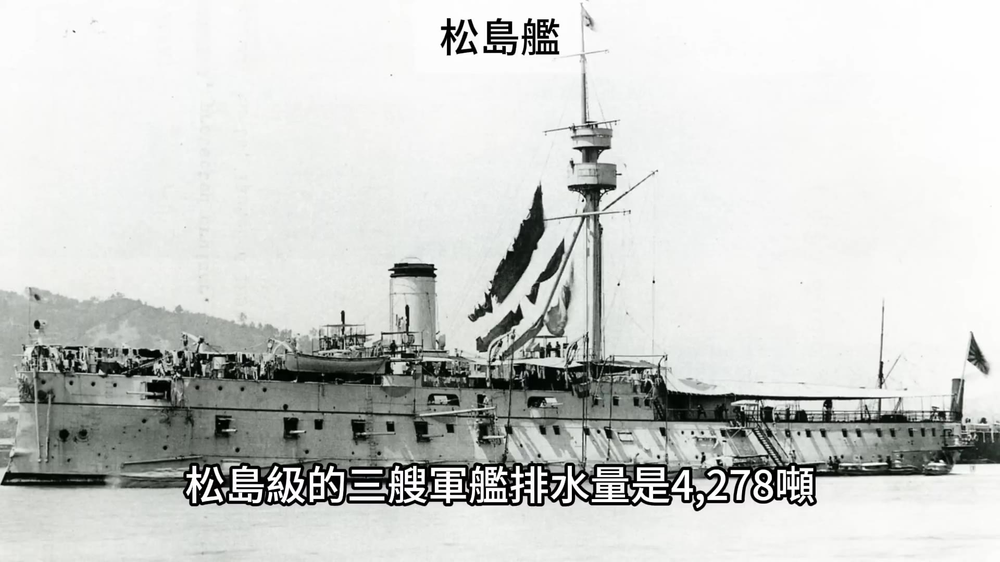
這門巨炮裝在了排水量4,278噸的軍艦上還是引發了很多適航性的問題，主炮根本不能轉動否則就有可能引起軍艦的傾覆。受到種種因素的制約，這門巨炮的理論射速是10分鐘一發，在戰場上的實際情況是一小時才能發射一發。日本用大口徑超越定遠的設計可以說是失敗了，但是這三艘軍艦呢並不是沒有戰鬥力。

在它們的側翼密布了大量的速射炮，120毫米口徑的速射炮就有12門，還有很多小口徑的速射炮，這些速射炮在戰鬥中發揮了主要作用。松島艦上的主炮還沒有等到日本規定的3000米的距離就被擊中了，陷入了癱瘓狀態。

在松島艦被擊中的時候，位於日本艦隊最前面的吉野艦已經到了3000米的距離，吉野艦立刻開火射向北洋艦隊右翼的超勇和揚威。吉野開火之後，日本艦隊再也壓制不住了，沒到3000米距離的軍艦也都紛紛開火了。對於北洋海軍的犄角雁型橫陣，日本聯合艦隊使用的是單縱隊陣型，這樣的陣型有利於發揮日本艦隊強大的側舷火力圓軍在戰前還為此專門確定了一個比較僵化的指令就是無論北洋艦隊使用什麼陣型，聯合艦隊都必須使用縱隊。伊東祐享最開始的戰術是第一游擊隊在前本隊在後，西京丸和赤城在戰場外側被保護起來。

02:35:00
等到一側的火力發射完畢之後，整個艦隊再回來航行使用另一側舷開火如此周而復始。坪井航=率領的第一游擊隊為了盡快接近3,000米的射擊距離提高了航速。當他們開火的時候，已經運動到了北洋艦隊的右翼，他們最佳的射擊目標就是右翼末端的超勇和揚威。
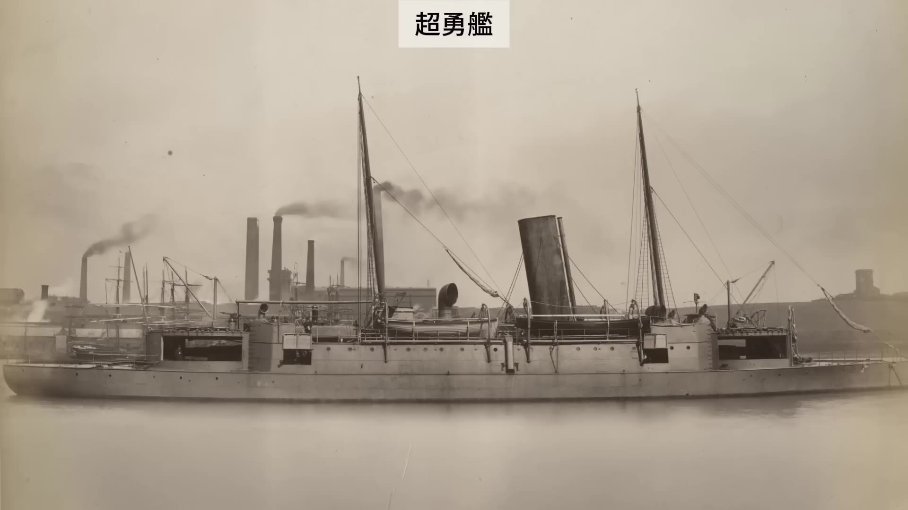
這兩艘軍艦是1881年服役的，到現在已經有13年的時間了。它們的排水量只有1,380噸，在動輒三四千噸的第一游擊隊面前顯得尤其弱小。而且超勇和揚威是撞擊巡洋艦，它們的設計理念是憑借高航速突然逼近對方通過撞角來撞擊對方。但是經過了13年後，它們當年的高航速在最新的軍艦面前根本就是慢速。而且他們的鍋爐都已經到了報廢的年齡卻一直沒有更換，現在的航速只有7節左右，根本就追不上敵艦，更不能發揮撞擊的效果了。
超勇和揚威的防守能力還很弱，因為當時為了追求高航速，設計師盡力地減輕軍艦的載重來提高速度，所以官兵們的鋼板很薄，防禦能力很差。這兩艘軍艦在第一游擊隊面前相當於是裸奔。

第一游擊隊側舷的火力能夠獲得100毫米以上口徑的火炮就有23門，其中大部分都是速射炮，而超勇和揚威船頭的大口徑火炮只有兩門。當第一游擊隊開火之後，超勇和揚威遭到了始料未及的猛烈轟擊。軍艦上的清軍官兵沒想到日軍的火力居然能如此強大，不到幾分鐘的時間，船板就多處被洞穿，很多官兵也被擊中倒地。
處在絕對劣勢的超勇和揚威並沒有退縮，兩船依然在既定的航線航行。他們用僅有的幾門火炮頑強地向敵人還擊，距離最近的靖遠和來遠也奮力向日本第一游擊隊射擊支援身邊的戰友。
13:08 吉野艦被超勇、揚威一顆10英吋的炮彈準確命中了吉野的後甲板。積累在甲板炮位附近的彈藥被引爆，海軍少尉淺尾重行和一名水兵當場斃命，9名水兵受傷。看到吉野艦中彈起火，超勇和揚威的官兵一陣歡呼，但是有些細心的軍官看到了一個細節：吉野艦著火的位置冒出來的煙霧是不同尋常的黃色。
北洋海軍用的開花彈填充的是黑火藥，而日本海軍用的是世界上最新研製出來的黃火藥。日本把這種黃火藥還進行了改造，改造之後稱之為苦味酸炸藥，裝填這種炸藥的炮彈敏感度極高，即使是命中細小的繩索都能發生爆炸。爆炸後不僅會產生破片和衝擊波，還會伴隨有大火。這種火藥在爆炸之後會冒出黃色煙霧，而這個黃煙霧是有毒性的，在整場海戰中讓北洋海軍吃盡了苦頭。

不過在清軍還沒有受苦之前，吉野艦自己先吃了苦頭被清軍的炮彈擊中之後冒起了大火，而且升起了黃色的煙霧。在吉野艦被擊中的同時高千穗也被擊中了，炮彈擊中了高千穗右後部的一間軍官倉室。炮彈穿過倉室之後，在甲板上炸開，甲板上的水兵傷亡嚴重。
旁邊的幾顆炮彈也被點燃當場爆炸，高千穗上也冒出了有毒的黄煙。吉野和高千穗都緊急滅火，經過努力最終撲滅了火焰。不久之後秋津洲和浪速也接連中彈。秋津洲的一個炮位被擊中，5名官兵當場斃命，9名士兵受到重傷。浪速炮台下面的水線被洞穿湧進了很多海水。
彷佛幸運的天平要偏向北洋艦隊，但是僅僅過了兩分鐘後局面就發生了徹底的改變。撲滅了大火的吉野艦重新恢復了猛烈射擊。一顆炮彈撕開了超勇薄薄的船殼，在船艦內部炸響，超勇燃起了熊熊烈火，整個艦體都被黃色煙霧包裹。
超勇本來就已經有多處重彈，這時候艦體已經是嚴重傾斜的狀態。超勇的管帶黃建勳組織水兵奮力跟大火搏鬥，在艦首的主炮位上副炮弁李鏡堂不顧有毒的黃煙還在指揮水兵用火炮還擊。
超勇的舵機系統已經在大火中徹底毀壞，這艘弱小的巡洋艦現在變成了一個巨大的火球。而日本第一游擊隊還在向超勇無情地炮擊，同隊的揚威奮力炮擊第一游擊隊來支援超勇。
然而不久之後揚成上也燃起了災難性的大火，揚威的艦體也开始倾斜。超勇和揚威一面忙於救火一面向敵軍開炮迎敵，漸漸地跟不上大部隊的步伐了。

02:40:00
如同兩支失群的孤雁，我們再來看看位於中央位置的主戰場北洋艦隊的隊形。以定遠和鎮遠的小隊打頭，左邊是致遠、經遠小隊，右邊則由靖遠與來遠組成小隊。這些軍艦如同三把尖刃，逐漸逼向日本艦隊，它們的主要炮彈都射向了松島艦，顯然他們的主攻目標就是這艘旗艦。

同樣地，北洋艦隊的旗艦定遠也成為日軍集中攻擊的主要目標。雙方炮火交鋒後不久，一顆120毫米（口誤）的砲彈正中定遠艦的桅盤，桅桿與信號旗繩都被打落，顯然日軍將主攻目標鎖定了北洋艦隊的指揮系統。此時，北洋艦隊的指揮系統失靈了，這是一個重大的不幸。然而，丁汝昌已經事先有所準備，他佈置了亂戰戰術，並規定其他軍艦以旗艦的運動為信號，因此即使失去指揮，北洋艦隊仍然按照既定隊形和戰術推進。
禍不單行的是，在桅桿斷裂不久後又一顆120毫米砲彈在定遠飛橋甲板附近爆炸。丁汝昌正在飛橋上督戰時左腿被甲板碎片壓住無法動彈，右臉與脖頸多處燒傷。當他被手下救起來之後拒絕到軍醫院就醫，堅持坐在首樓內陪伴士兵作戰。這讓戴樂爾非常敬佩，他是定遠艦上總教席漢納根的顧問，並同丁汝昌一起在飛橋上指揮，但雙方都受了傷。戴樂爾和漢納根均前往軍醫院治療，而丁汝昌仍然堅守督戰崗位。

當前北洋艦隊處境非常不利：日本聯合艦隊已經運動到有利於炮戰的最佳距離，而北洋艦隊受限於航速短時間內無法實現切入敵軍艦隊亂戰的戰術。他們只能被迫和日方進行火炮對攻，這並不佔優勢。

松島再次中彈，炮彈穿透主甲板落在第7號機關炮位火炮被擊毀，一名信號員當場斃命，三名炮手受傷；不久後嚴島也被擊中，首枚炮彈命中其右舷魚雷發射室導致十一人水兵受傷，緊接著又一炮彈再次擊中右舷，六名水兵傷亡。13:05時，左翼北洋艦隊遭到猛烈砲擊；13:10時，本軍的先頭軍艦即將從北洋艦隊陣前航過，按照伊東祐享戰術應轉舵向左航行以大回旋方式再以艦隊左側與北洋作戰以確保右側炮位補充彈藥及修整。為加速回旋，伊東下令本軍航速從8節提高至10節。
然而，松島首先提速後，緊隨其後的是千代田、嚴島和橋立。比睿與扶桑卻未能跟上來——這兩艦皆屬日本1875年訂購，比睿排水量2,250噸，服役時航速為13節，如今近二十年過去了僅勉強維持在8節航速；而扶桑則有3,717噸排水量，在同樣的歲月流逝後，也已達到8節左右。兩艦軍官只能咒罵伊東祐享同時努力提昇航速。

見此情形比睿和赤城暴露在北洋艦隊面前，北洋艦隊迅速發現這一漏洞並展開亂戰。此時第一小隊定遠鎮遠加速駛向掉隊的日本軍艦，而致遠左側經遠及右側來遠、靖遠也開始提速。
當比睿上的日軍官兵突然看到亞洲第一巨艦定遠出現在他們右舷旁邊，伴隨著一艘裝甲巡洋艦時，這意味著北洋艦隊終於可以發動亂戰戰術了。
02:45:00
朝官高速駛來，似乎準備進行恐怖的撞角攻擊，距離只有不到七百米。大大小小的炮彈不斷落在“比睿”、“扶桑”和“赤城”附近，為了躲避衝擊，“外側的赤城首先向左轉舵”，而“扶桑也開始了拼命向左轉舵”。出人意料的是，“比睿”的反應讓所有人驚訝——它居然調轉航向直接衝向“定遠”和“經遠”之間。其艦長在日後回憶時表示，他當時並沒有過多的想法，只是擔心側舷薄弱難以躲避敵艦的撞擊，不能讓側舷對敵。“比睿”進入到了“定遠”和“經遠”之間，“定遠”和“經遠”如果交叉對射，“比睿”肯定在劫難逃。但在這樣近距離對射有很大可能會誤傷到對方的友艦，“定遠”和“經遠”的大口徑火炮都停火了，攻擊變得束手束腳。
此時正左轉舵逃跑的“扶桑艦”正好是北洋艦隊艦首火炮的絕佳目標，很快就有一顆炮彈射中了“扶桑”的左舷，多名日本官兵受傷。“扶桑”的艦長新井友貫已經顧不上受傷的士兵，催促輪機室加快航速，“扶桑”漸漸離開“比睿”，追上了本隊而去。此時，“比睿”陷入到了“定遠”和“經遠”的圍攻中。由於“定遠”和“經遠”的大口徑火炮都在首尾，向“比睿”射擊的主要是大量小口徑的機關火炮。“比睿艦”的主甲板上面臨的是彈如雨下，露天的甲板上被炸得碎片紛飛，各炮位的水兵抱頭鼠竄，紛紛尋找躲避的掩體。根據日本方面的記載，“比睿”攜帶了1,250發炮彈，在戰爭結束的時候消耗的只有81發。
“北洋艦隊”發現無法摧毀這艘瘋狂的日本軍艦，必須採用更有效的攻擊措施。突然間，“經遠艦”停止了向“比睿”的一切攻擊，從側翼高速向“比睿”靠近。“比睿”的艦長櫻井規矩之左有當時不敢相信自己的眼睛——此時的“經遠艦”上出現了大量的穿著紅色制服的海軍陸戰隊士兵。經遠艦的艦長是林永升，他曾經留學過英國格林威治海軍學院，在英國地中海艦隊萬噸級鐵甲艦「馬那」號上進行過實習兩年。英國皇家海軍一直保留著風帆時代的傳統戰術——在交戰中兩艦達到足夠距離之後，軍艦開始脫離整體編隊試圖撞擊敵艦，然後手持長矛步槍的士兵將進行“跳幫廝殺”。林永升看到用小口徑火炮無法擊沈對方軍艦，就想用「跳幫廝殺」戰術生擒“比睿”。“定遠艦”的機關炮也停火了，“定遠艦”的管帶劉步蟾是林永升的老同學，他已經看出來這位老同學的意圖，下令“定遠艦”全面停火。左翼的戰場上突然陷入了一片死寂。
“比睿”的士兵登上炮台，重新打響了機關炮，同時其上的士兵都衝到了甲板上手握步槍並準備迎接對方的跳幫。然而，“比睿”仍然有如此猛烈的火力對“經遠”接舷作戰來說產生威脅，在嘗試接舷的時間里，“比睿”已經行駛到了“定遠”和“經遠之間”的狹窄通道尾部，眼看機會就要錯過。林永升不甘心自放過這艘日本軍艦，然而“經遠艦”的尾部又沒有大口徑火炮，他下令射出了兩枚魚雷，但不幸地是，“比睿”逃脫了被擊中的命運。“比睿”帶著濃煙大火向北洋艦隊的右翼方向匆忙逃離，在一片黑夜之中消失。清軍士兵還在歡呼，以為“比睿”已被擊沈；直到戰爭結束才發現它並未沉沒，只是逃跑。
（注意：為了符合要求，以上內容保留了原始文字中的圖片標記和說明，但根據實際情況應更換具體的圖像鏈接。）
02:50:02
今天就先講到這裡，這場海戰打了將近有5個小時，一期內容實在是放不下來了。我們下期節目再來說海戰的下半場。「1921-1945年的專題歷史課程」我已經開通，有興趣的朋友歡迎點擊影片下方的鏈接瞭解。
大家好，今天我們接著講黃海海戰。上期節目我們講到北洋艦隊和日本聯合艦隊在海上開始交戰。北洋艦隊使用的是犄角雁型橫陣亂戰戰術，而日本艦隊用的是縱隊。第一游擊隊已經繞到了北洋艦隊的右翼，本隊突然加速，扶桑和赤城扔下了後面跟不上的比容。

北洋艦隊開始圍攻比睿，比睿身受重傷勉強逃離了戰場。北洋艦隊不知道比睿是逃跑了所以並沒有追擊比睿，他們把目標對準了另外一艘軍艦赤城。赤城是一艘排水量只有622噸的小型炮艦，日軍這次帶著赤城出來是想讓它當偵察艦的，因為它可以開進淺水的區域。赤城的航速在10節左右，赤城的艦長阪元八郎太驚恐地發現來遠等軍艦正在朝自己駛來。北洋艦隊對這艘小炮艇尤為感興趣，因為赤城的身材矮小，北洋艦隊誤以為這是一艘運兵船，在開始我們說過了北洋艦隊是把赤城和西京丸都當成了運兵船。

現在碰到赤城落單了，北洋艦隊當然認為赤城有更高的攻擊價值，面對險境，赤城並沒有做出比睿那樣瘋狂的舉動，它仍然是沿著本隊的方向全速航行。北洋艦隊的來遠、致遠、經遠都出來追擊赤城，定遠、鎮遠利用巨炮在遠處協助攻擊。這時候北洋艦隊左翼末端廣甲艦也追上來了，開始追擊赤城，廣甲是隸屬於廣東水師的巡洋艦，管帶是留美幼童出身的安徽人吳敬榮。廣甲和濟遠是一個小分隊的，濟遠是主艦，廣甲艦是僚艦，從一開始變換陣型的時候濟遠就故意落在後面，廣甲和濟遠是一個小分隊也只能跟在後邊。現在戰鬥已經開始這麼長時間了，廣甲也追上來加入戰鬥了，但是濟遠仍然是不見蹤影，在多艘軍艦的圍攻之下，赤城的艦體多處被穿透，赤城艦上的官兵傷亡慘重。到此為止，北洋艦隊亂戰戰術已經開始發揮作用了，雖然還沒有衝散第一游擊隊和本隊的前4艘軍艦，但是後面的軍艦已經完全被打亂了，同時北洋艦隊最初的橫陣也已經完全沒有了。
第一游擊隊現在已經運動到了北洋艦隊的右翼馬上要繞到北洋艦隊的後方了。就有和在北洋艦隊前方的本隊相互誤擊的風險。坪井航=就下令命令第一游擊隊左轉向180度朝本隊航向航行，從本隊外側通過和本隊呈現出對向行駛的局面，但是本隊很顯然並沒有理解第一游擊隊的用意。伊東祐享反而認為繞到北洋艦隊背後是個好主意可以對北洋艦隊進行腹背夾擊。伊東祐享讓本隊加速繞到北洋艦隊的後方。這次的指揮在坪井航=和伊東祐亨戰後的報告來看是一個很大的失誤，他們錯過了一次腹背夾擊北洋艦隊的機會。
而且第一游擊隊從外圈繞回來無論用多大的速度都得浪費很多時間。日本聯合艦隊的這次混亂讓北洋艦隊的超勇艦暫時脫離了第一游擊隊的火力圈，超勇向戰場外航行試圖自救。但是到了13:30的時候超勇再也無法抵御大火的侵蝕開始下沉，根據日本的記載，超勇艦完全沉沒的時間是14:23。到此為止北洋艦隊損失了第一艘軍艦。
從大東港外趕來戰場的左一號魚雷艇遇到了正在沉沒的超勇艦，左一號停下腳步開始搭救超勇艦落水的官兵。
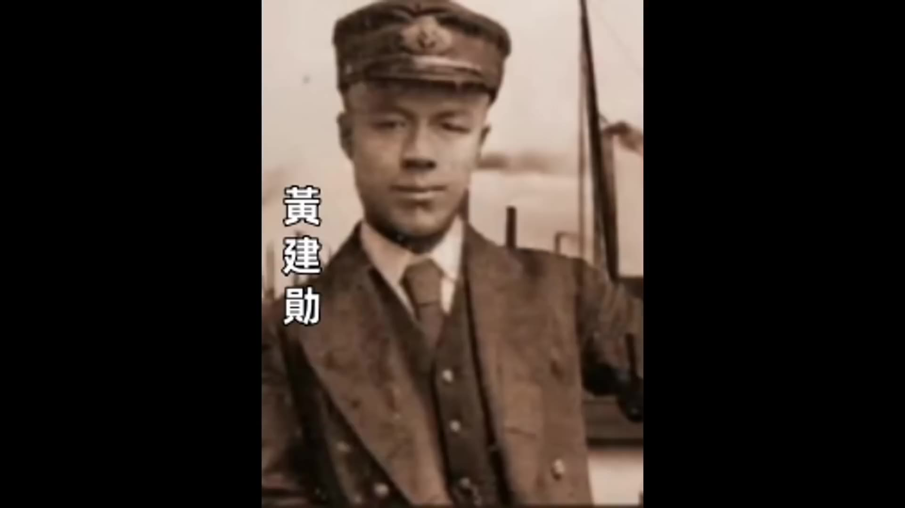
超勇的管帶黃建勳拒絕了投擲到自己面前的救生圈，與他的戰艦一起沉沒在大海中。黃建勳時年43歲，是海戰中第一位殉國的艦長。和超勇同一個小隊的揚威，在經歷了第一游擊隊的攻擊之後也是身負重傷濃煙滾滾。在管帶林履中的指揮下揚威正努力向大鹿島方向淺水灣駛去，因為日本軍艦的吃水普遍比較深而且對黃海一帶水文情況不熟悉所以淺水區域就成了北洋軍艦的避風港。
但是揚威艦並沒有選擇距離自己最近的淺水而是去了大鹿島方向，因為那裡離大東溝更遠可以保護大東溝正在登陸的清軍不被發現。

現在戰場的情況是北洋的軍艦超勇沉沒了，揚威負傷撤離戰場，日本軍艦第一游擊隊正在高速往左後方運動，本隊正在往北洋艦隊的後方運動。
02:55:01
赤城脫離了本隊，比睿負重傷逃離戰場。此時，赤城正遭到北洋艦隊圍攻，處境十分危急。定遠艦尾部裝備的一門120毫米大口徑火炮頻繁擊中赤城的甲板，致使赤城的艦長阪元八郎太頭部被彈片擊碎当场死亡。無數炮彈接踵而至，甚至懸掛日本海軍軍旗的桅桿亦遭摧毀倒塌。在阪元八郎太喪生之後，赤城上的海軍大尉佐藤鐵太郎接手艦長職務，面對北洋艦隊猛烈的攻擊，他組織艦上水兵展開頑強抵抗。他們甚至用一根小木桿重新升起日本海軍旗，體現出日方士兵不屈的精神面貌。然而從另一角度來看，這也反映出北洋艦隊火力不足的情況，雖然多次擊中赤城，但未能摧毀這艘小型炮艇。

隨著濃煙滾滾，赤城艦拼命逃離戰場，運氣再次垂青，其尾部裝備的一門120毫米火炮擊中來遠艦後甲板上堆放的炮彈堆，引發劇烈爆炸。爆炸產生的巨大火球將來遠艦尾變為一片火海。見狀，北洋艦隊的第一游擊隊加速前來救援正在遭到圍攻的比睿和赤城，數艘追擊赤城的北洋軍艦亦轉而準備迎敵。最終，在第一游擊隊支援下，赤城成功突破重圍。此時的赤城舰上層建築物已經成為一片廢墟，根據戰後日本統計數據，赤城艦共中了大口徑炮彈30發，陣亡10人；比睿艦則中了23發大口徑炮彈，陣亡24人、受傷32人。

隨後第一游擊隊支援比睿，赤城此時日本本隊繞行至北洋艦隊後方，令西京丸徹底暴露在北洋艦隊視野之中。該艘商船型態的運兵船成為目標被定遠與鎮遠等主力戰艦追逐，乘坐其上的日本軍令部長樺山資紀對伊東祐享指揮不滿聲稱：「這是災難」，而西京丸突然遭遇定遠艦305毫米主炮命中，艦體受創。同時北洋艦隊有新的6艘軍艦從大東溝方向加速駛來，其中18艘為護航任務，另有平遠、廣丙等非主力戰艦前赴支援。這兩艘艦船分別是福建船政局製造的近海防禦鐵甲艦及魚雷巡洋艦。
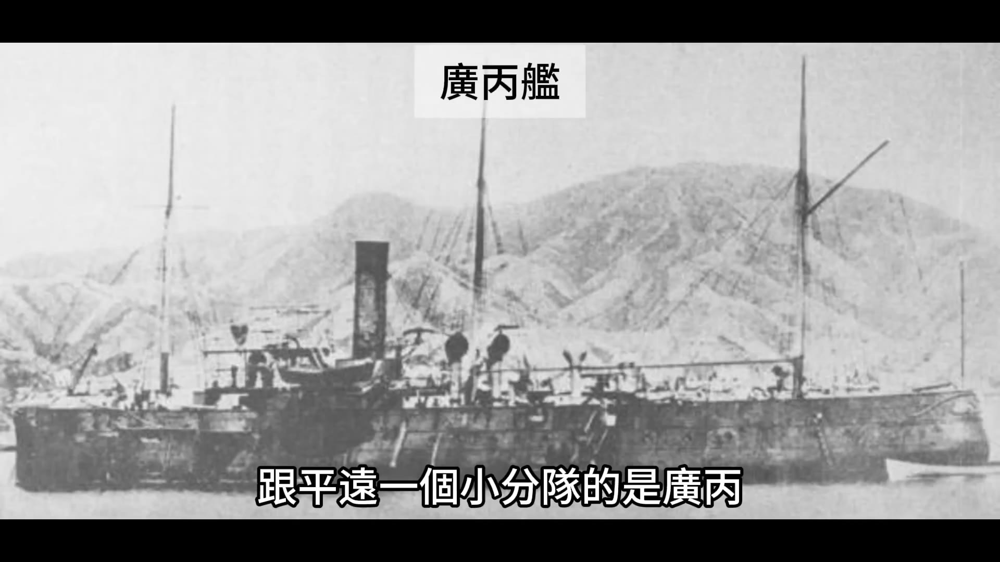

廣丙最有殺傷力武器是其魚雷，左右並列安裝了兩個魚雷發射管，此外還各配備一具魚雷發射管；丁汝昌將廣丙留於大東溝的原因顯而易見：作為高航速艦船且擁有強勁的火力特點，在必要時可率領四艘魚雷艇突襲敵方軍艦。平遠與廣丙這兩艘非主力戰艦在到達戰場後直接向日本艦隊本隊發起挑戰。

它們從北洋艦隊右翼前來，橫截於日本本隊航向上，向旗艦松島發動攻擊。廣丙憑藉著高航速優勢，其管帶程璧光（民國時期著名海軍將領）指揮廣丙並利用兩舷耳台內的120毫米口徑江南製造速射炮進行攻擊。
03:00:00
對準松島急速射擊，艦首甲板下的魚雷室內已裝入兩具14英吋口徑的黑頭魚雷，準備隨時發射。此時廣丙突然殺進戰場，令松島及其本隊軍艦十分驚訝；廣丙是一艘高速接近的魚雷艦，在松島等軍艦猛烈開火下仍奮力前進，但由於敵方側舷火力過於強猛，繼續逼近恐難抵達發射有效距離。因此程璧光決定放棄進一步攻擊，轉向尋找其他戰機，廣丙隨即退離。
不久後平遠艦接替上陣，以緩慢速度冒著彈雨直逼松島。令人唏噓的是，這兩艘在海面上交鋒的軍艦都屬於「蚊子船」類型，設計理念相同且為同門兄弟作品，雖然松島體積較大，但外形相似度高。平遠艦上260毫米巨炮發出一擊命中松島側舷無防護部位。
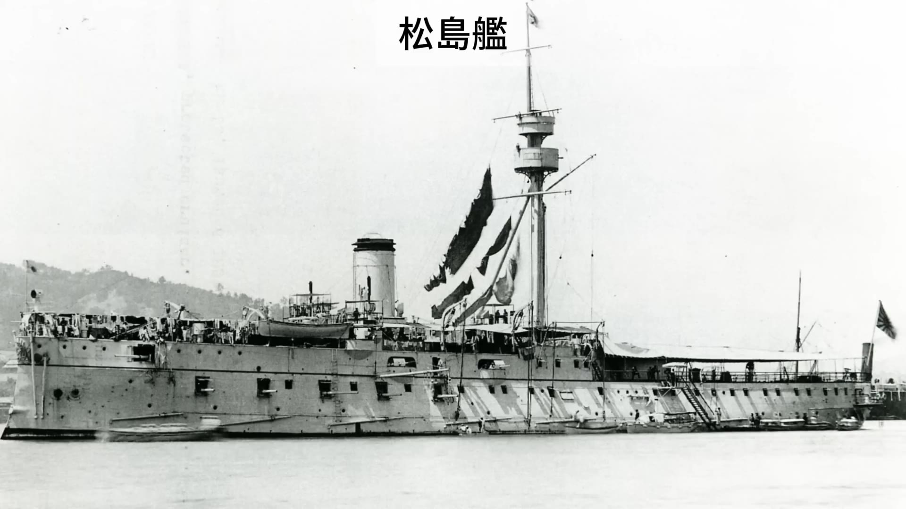
松島掛水量僅4,000噸，卻裝備了威力巨大的320毫米主炮及多門速射炮，因此未能配置更多保護裝甲。此次平遠巨炮命中效果顯著，彈頭穿透船體並在艦內穿行多個艙室後擊毀松島主炮液壓系統，導致其失靈失效，對北洋海軍而言這是一次痛心的損失。
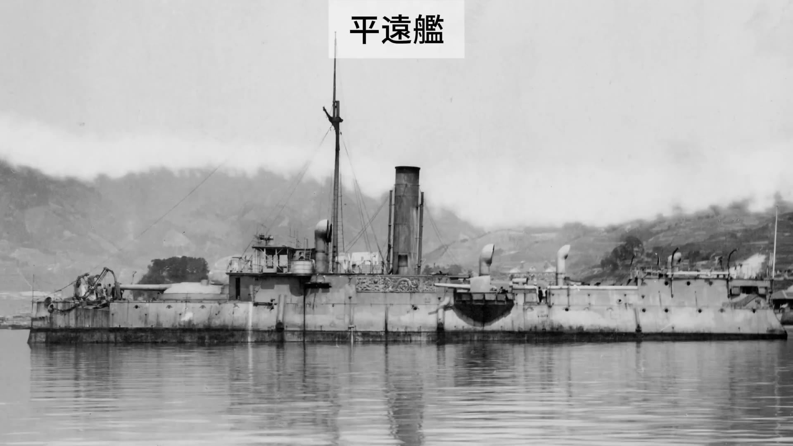
隨即平遠也遭報復：被松島側舷一門120毫米速射炮命中，造成主炮損壞無法再戰。此時，擊中松島的最後一發實心彈已耗盡，倘若為開花彈則破壞力將難以估量。

當松島主炮失靈後，其作戰能力仍可依靠其他火砲繼續發揮；反觀平遠則因失去火力支柱，在接連受擊後被迫撤退修復，擬待重啟爭奪。
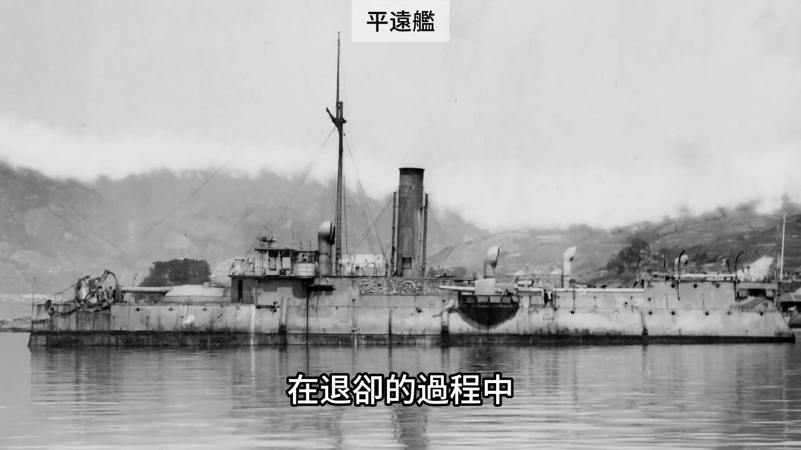
在退卻時，即便面對壓倒性火力威脅，露天甲板上的北洋水兵仍用小口徑機砲回擊，竟也取得不少戰果；松島艦信號桅桿遭破及左舷魚雷管發射電路受損。
緊接著廣丙和平遠又遭遇西京丸。此船剛從戰火中逃離，正準備向大鹿島方向撤退，兩方則不顧自身傷勢再度攻擊；其間有數艘魚雷艇福龍、左一、右二及右三參戰。
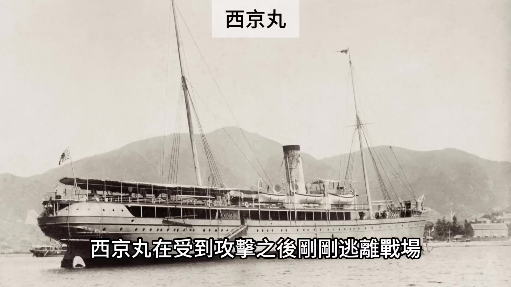
途中見到大火中沈沒的超勇號殘骸，其中兩艇停下救援。但福龍單獨衝入戰場，其艦長蔡廷幹有留美背景且個性果敢，在美國被稱為「火爆唐人」。
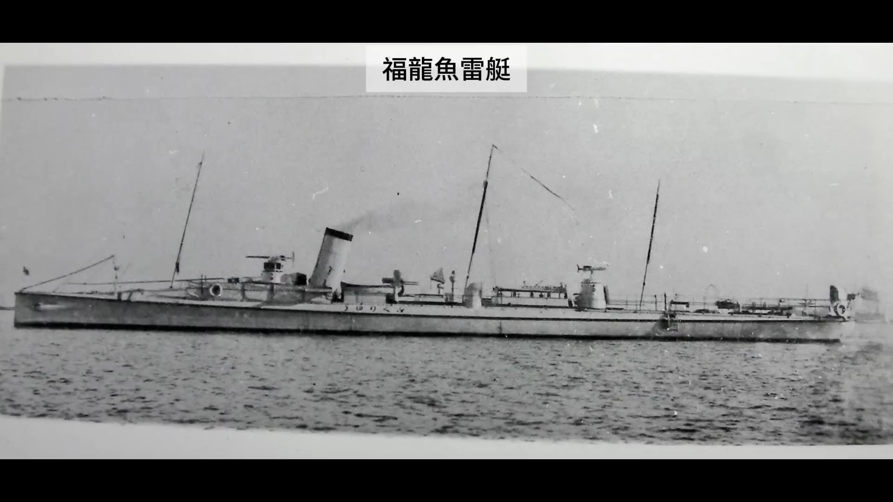
蔡廷幹執掌魚雷艇時正顯現出這種勇猛精神，該艇雖排水量僅120噸但航速驚人達24節；其上主要武器是裝載大量火藥的魚雷。
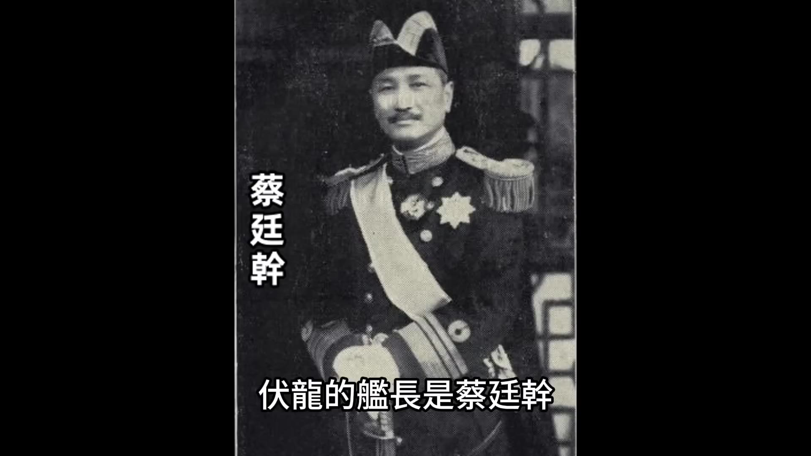

在此過程中，西京丸依靠艦上臨時加裝的一門120毫米回轉速射炮苦苦抵禦敵襲，與此同時卻無任何軍艦前來援救，令人為其海軍軍令部長所感動及擔憂。

03:05:04
發起攻擊時，魚雷艇必然會遭受敵艦猛烈且命中率高的火炮打擊。因此，北洋海軍在挑選魚雷艇官兵時必須要「敢死之士」，蔡廷幹顯然非常符合這個要求。福龍進入戰場後，蔡廷幹立刻注意到了西京丸，該船為了躲避平原和廣丙的炮火正在向左轉向，剛好把側舷暴露在了福龍面前。
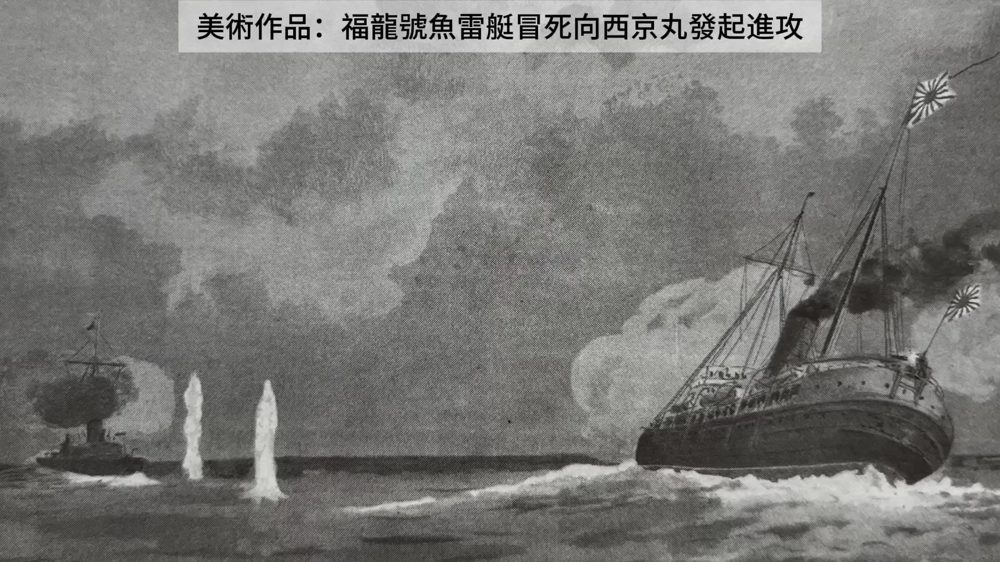
蔡廷幹捕捉到這個戰機後，福龍冒著西京丸機關炮的射擊接近至距離西京丸400米的位置。蔡廷幹下令，福龍艦首發射了一枚黑頭魚雷。
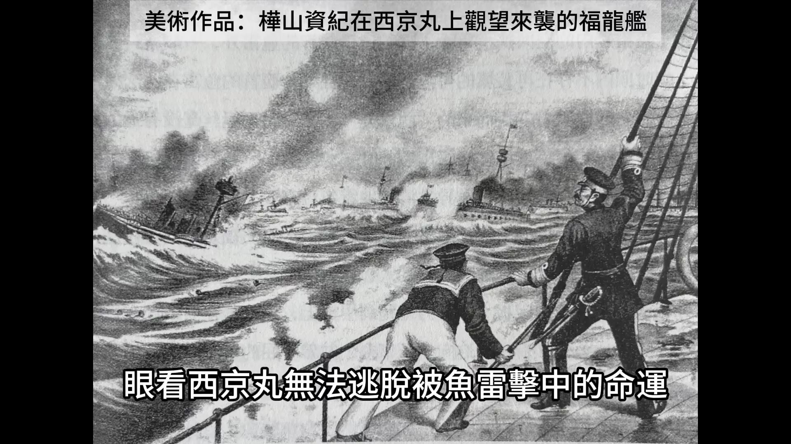
眼看被魚雷擊中的命運難逃，西京丸艦長做出瘋狂舉動，下令軍艦立刻調轉航向迎著魚雷衝去，全速前進。表面上看起來似乎加速了自己的滅亡，實際上這是當時近距離規避魚雷的最後一招：利用軍艦行駛時造成的浪花來改變魚雷的航向。當魚雷即將命中目標的前一刻，被西京丸船頭揚起的浪花推開，在距離右舷僅1米的位置擦過，福龍與西京丸之間的距離越來越近，眼看就要撞上了。此時福龍突然向右急轉彎背離西京丸駛去，在兩船拉大到30-50米的時候，福龍甲板後部的魚雷發射管又射出一枚魚雷，如此近距離上射出的魚雷應該命中敵艦了。正當福龍艇上響起勝利的吶喊聲時，魚雷居然從西京丸下面穿過去了，西京丸再次躲過一劫。平遠、廣丙和魚雷艇的到來使得膠著兩個多小時的戰場掀起了一陣高潮。
到目前為止，北洋艦隊損失了一艘戰艦，但日本聯合艦隊也有三艘軍艦受到重創，整個戰局仍不明朗。表面看起來，北洋艦隊的亂戰戰術發揮了作用，重創敵軍三艘戰艦。然而，第一游擊隊和本隊卻沒有遭到重大損失，它們逐漸完成了對北洋艦隊腹背夾擊的部署。
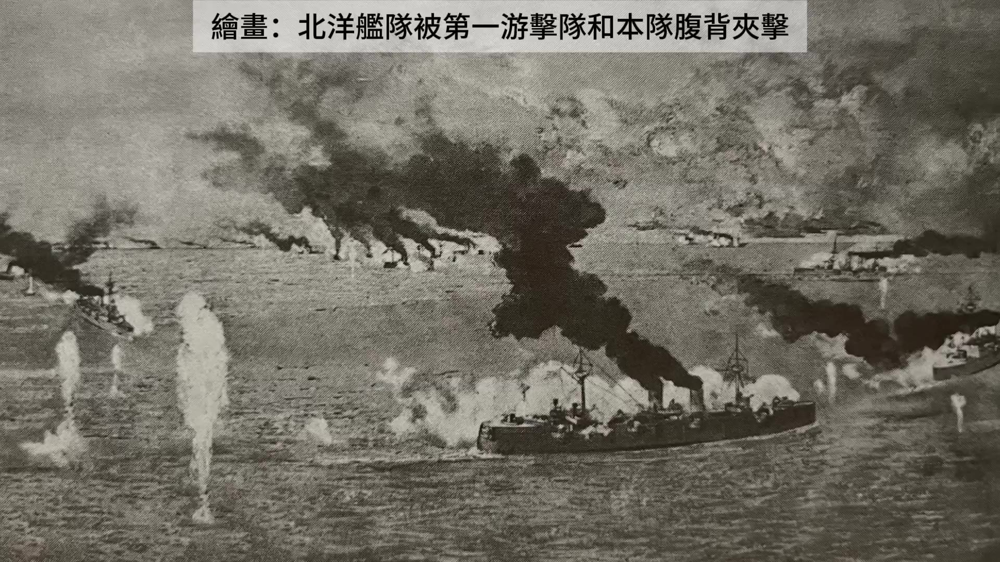
這兩支部隊航速高、行動敏捷，可以隨時拉開距離。北洋艦隊難再有亂戰的機會，只能用自己並不佔優勢的炮火跟敵艦對抗。定遠艦和鎮遠艦承擔了敵艦大多數火力。
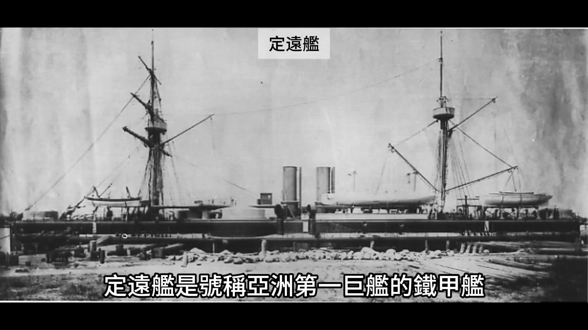
定遠艦是號稱亞洲第一巨艦的鐵甲艦，配備4門305毫米後膛炮及相當厚重的裝甲防護。甲板上所有要害設施和軍艦中部一圈水線附近都鋪設了厚達305-355毫米的裝甲帶，穿透這厚度的裝甲絕非易事。
15:10時，扶桑艦的一門240毫米口徑火炮擊中定遠艦最薄弱的艦首部位。炮彈穿透船殼進入艦內炸裂開來，苦味酸炸藥燃燒帶來巨大災難，瀰漫出黃色有毒煙霧籠罩整個前部，致使4門305毫米巨炮無法瞄准射擊。定遠艦被迫停火，在大火中集中力量救火。此時，日本聯合軍艦上歡騰不已，近十年來視定遠為大患的夢想眼看就要實現。
坪井航三指揮第一游擊隊和伊東祐亨指揮本隊都攻向了定遠艦，炮雨不斷落下，爆炸聲響個不停。在大火籠罩下，所有船員集中力量救火。此時，致遠朝定遠靠過來，鄧世昌管帶的致遠用自己並不是很厚實的身軀默默為定遠擋著炮彈，然後與第一游擊隊展開了激烈的炮戰。
鄧世昌是廣東番禺人，少年時進入福建船政學堂。該学堂本來不收外省學生，但因鄧世昌的英語功底很好而破格收取了。
03:10:00
畢業之後，由於省籍的原因他未能被派往英國留學，反而留在國內，成為了同學中最早擔任管帶的人。他具備強大的實際業務能力，在李鴻章選入北洋海軍後，鄧世昌勤奮為人所知，治軍嚴格，且不帶家屬、不在岸上購建寓所，整年都在軍艦上居住，這與濟遠艦官帶方伯謙四處購房納妾的態度形成了鮮明對比。方伯謙從軍27年只回過3次家，其中最長的一次也僅有7天。
在北洋海軍內部，鄧世昌特立獨行的性格一直受到以劉步蟾為首的閩黨官員排擠。然而，在關鍵時刻，他率領致遠艦衝出，救援了定遠艦。當時的情況緊迫，不知劉步蟾心中有何感受。
在鄧世昌的致遠艦靠過來後，林泰曾帶領鎮遠艦也挺身而出，與致遠艦一同抗擊日艦，共同護衛旗艦定遠艦。通過眾人的奮力救援，最終撲滅了大火，讓定遠艦轉危為安，但致遠艦卻遭受巨大損失。
與鎮遠艦不同的是，致遠艦的防護能力較弱，在掩護旗艦時多處被擊穿，海水大量湧入艦內。官兵們竭盡全力排水以挽回傾斜的艦體，但仍未奏效，致遠艦右舷接近30度傾斜。面對生死抉擇，鄧世昌做出了令人震驚的決定：全速衝向吉野艦，試圖利用撞角或魚雷擊沈敵艦。
致遠艦以超過20節的速度衝向前方，機艙內採用了強壓通風。隨著吉野艦感受到巨大威脅，第一游擊隊的所有炮彈都集中射向致遠艦。就在致遠艦即將逼近敵軍陣型的一刻，中部發生劇烈爆炸，隨後船體開始下沉，不到10分鐘，這艘英雄的戰艦便從人們視線中消失。
致遠艦沉沒之後，鄧世昌落入海中。他的僕人劉忠遞來救生圈，被鄧世昌用力推開。號魚雷艇嘗試相救，但鄧世昌無視救援。最終連愛犬也跳入海中救助主人，與鄧世昌一起沉入海底。
“致遠”艦部分军官的合影，拍攝位置在軍艦的艉樓附近。人群中央雙手交叉站立者就是民族英雄鄧世昌，他身旁的外籍官員是管輪洋員余錫爾。這張照片中的所有人都在黃海海戰中壯烈犧牲。
致遠艦沉沒後，北洋艦隊終於取得了一個重大戰果——鎮遠艦用305毫米口徑巨炮重創了日本聯合艦隊的旗艦松島。林泰曾帶領鎮遠艦，其主炮台連續射出兩枚高威力炮彈命中敵方艦艇，其中一枚開花彈在松島左舷第四號炮位上炸開，導致了一系列爆炸。
這些爆炸讓松島艦的船體傾斜，但卻沒有繼續沉沒。船上官兵雖然死傷慘重，但仍有不少人保持行動能力，日本聯合艦隊的官兵則陷入目瞪口呆中。
隨著這些爆炸聲響，北洋海軍士兵轉悲為喜歡呼起來。
03:15:01
大火經過了約30分鐘後，終於被撲滅。然而，「松島」號已經失去了戰鬥能力。伊東祐享命令士兵在一桿高高的桅桿上升起了特殊的旗幟——「不管」，這意味著讓各艦自由行動以適應當前的緊急情況。
就在這個時候，在北洋艦隊中一直躲在後方的「濟遠」號開始轉舵逃跑。更令人氣憤的是，它還掛出了信號旗表示自己已經受重傷，並以此作為逃脫的理由。
「濟遠」艦選擇了西北方向的一片淺水區作為撤退路線，計劃先藏身於安全的淺水區再返回旅順基地。緊隨其後的還有它的隊友「廣甲」號也加入了逃跑行列。

在這關鍵時刻，「定遠」、「鎮遠」上的士兵們憤怒地向逃跑的兩艦射擊，試圖阻止他們撤退。
當「濟遠」號正處於逃離狀態中時，還發生了另一個令人難以置信的情況。它竟撞上了當時正在受困的大火和舵機失靈的「揚威」號。這艘船好不容易脫離了戰場，打算在淺水區進行修復，卻被高速前進中的「濟遠」號直接撞毀。

這起事件讓本來就已經受損的「揚威」號最終沉沒於淺水區，而它的管帶林履中也因悲憤跳海自盡。這是北洋艦隊在此次戰鬥中第三艘沉沒的軍艦。
「濟遠」號最終在第二天凌晨2點才到達旅順，幾天後其管帶方伯謙因臨陣脫逃被判處軍前正法。
與此同時，「廣甲」艦的運氣也不佳，在逃跑路線上觸礁擱淺。隨著「濟遠」、「廣甲」兩艦的撤退，北洋艦隊左翼只剩下了孤零零的一艘「經遠」號。它們的逃離對整個北洋艦隊造成了巨大的負面影響。
在這種極度不利的情況下，北洋海軍的官兵仍需付出巨大的勇氣與精神壓力來繼續作戰。「定遠」、「鎮遠」這兩艘鋼鐵姊妹艦雖處於彈藥匱乏且火力相對落後的情況，仍然堅守戰場。日本本隊則開始注意到了北洋艦隊陣型的崩潰，坪井航率領第一遊擊隊向西北方向追擊，而本隊則繼續留在原地攻擊「定遠」和「鎮遠」兩艦。

松島號雖然已經身受重傷但仍然不放棄攻擊「定遠」和「鎮遠」兩艘巨艦，然而對於這兩艘裝甲強大的一等鐵甲艦來說，日本本隊的5艘軍艦卻無計可施。
在一個小時內不斷轟擊之下，「定遠」和「鎮遠」上燃起了大火。但是對於這兩艘龐然大物來說，日本的火力顯得力不從心。「定遠」號因此獲得了「永不沉沒的定遠」這一新稱號。
遠東觀戰的英國艦隊司令菲力曼特爾在目睹了這場激烈的交火後評價道：如果定遠、鎮遠未能堅持留在戰場上，結果將會完全不同。
03:20:00
那麼，不僅大東溝內的運兵船，那些離開戰場的北洋軍艦也可能被日艦逐個擊破，損失更加慘重。從這種意義來看，定遠、鎮遠不啻是北洋艦隊的靈魂，也是這場海戰的中流砥柱。

接下來我們來看追擊逃離戰場的北洋軍艦的情況，逃離戰場的是經遠、靖遠和來遠三艘艦只。靖遠和來遠屬於同一編隊，它們朝小鹿島方向加速跑去。經遠艦原本是與致遠艦在同一組，但是致遠艦已經沉沒了，只剩經遠艦孤零零的自己應戰，而且艦體也受傷嚴重。經遠艦的管帶林永升性情剛烈，在海戰開始之前他就下令撤除了各艙口的木梯，表示誓死作戰。在致遠艦沉沒不久後，經遠艦主動出陣向第一遊擊隊挑戰，在激戰交火中林永升頭部中彈不幸殉國。其後大副陳榮接替指揮，因經遠艦艦體受重創不得不退出戰場。

第一遊擊隊追來後，四艘軍艦分頭追擊不一定有把握，坪井航亘決定集中力量追擊經遠艦。在吉野艦把航速提高到15節甩開其他三艘友艦獨自追擊時，日本的三艘軍艦有些莫名其妙只能緊急跟著吉野運動。吉野艦的高航速對經遠而言幾乎無法脫離，在左後方逼近至1800米開始猛烈射擊。已經受傷嚴重的經遠在攻擊之下主甲板很快發生火災，海水從裝甲線裂口大量湧入艦內，導致艦體向左傾斜。
就在第一遊擊隊四艘軍艦逼近時，日本旗艦松島升起一組旗語宣佈停止戰鬥，召喚游擊隊返回本隊。原來是伊東祐亨考慮到夜幕將臨，擔心夜戰會導致軍艦編隊混亂，同時也怕北洋海軍魚雷艇趁夜色發動突襲，因此決定結束戰鬥。這個決定在日本海軍史上備受爭議。見松島下令後，第一遊擊隊轉舵返航追隨本隊離開了戰場，這場持續近五個小時的大海戰終於進入尾聲。
此時丁汝昌面對一個重大抉擇，是直接回航旅順還是返回大東溝護航。由於他不確定日本艦隊是否已發現運兵船，身受重傷且缺乏彈藥的軍艦再去可能會陷入危險境地，但他迅速作出決定，北洋艦隊恢復魚貫陣向大東溝駛去。抵達後並未發現日軍出現，丁汝昌也就放下心來，畢竟伊東祐亨根本沒有想到北洋海軍此次是為護航而來。
這場海戰中，北洋海軍損失超勇、揚威、致遠和經遠四艘軍艦，靖遠與來遠兩艘則遭到重創，陣亡官兵714人，受傷108人。日本方面無一沉船，松島等四艘軍艦受重創，日軍陣亡90人，受傷208人。跟現在人們的理解不一樣的是，在一段時間內北洋海軍認為這場戰役的結果是互有勝負。
03:25:00
海戰中途退出戰場的西京丸和比睿，北洋海軍誤以為它們已經沉沒。同樣地，遭到重創的松島以及相關艦艇也認為彼此已沈入海底。
甲午戰爭中，日軍先後在陸上的平壤之役和海上的黃海海戰中取得勝利。隨著冬季來臨，日本大本營開始著手實施攻佔清朝本土的計劃，該計劃包含冬季作戰與春季作戰兩個階段。春季作戰計畫旨在次年春天，在直隸平原上對抗清軍主力並進軍北京，以類似英法聯軍入侵北京的方式迫使清政府談判。

欲攻入北京有兩條路線：一是陸上路線，經朝鮮跨過鴨綠江，沿著山海關進入直隸平原，最後抵達北京；二是海路，直通京畿門戶天津，但需先擊破旅順港並消滅北洋海軍。無論何種路徑，日本均須消滅北洋海軍。
旅順港被西方稱為「遠東的直布羅陀」，是北洋海軍重要維修和保養基地。自1880年後，隨著艦隻噸位增加，李鴻章開始重視旅順與威海兩處港口建設。

旅順港內設施先進，包括長110米寬18米的大石船塢，可容納定遠和鎮遠兩艦。旅順基地自建成後即成為北洋艦隊最重要的維修與保養中心。
戰事發生後，旅順港內受損嚴重的軍艦急需維護，但只有一座大船塢可用。旅順船塢總辦龔照玷安排來遠艦首先入塢修復，預計最快一個月後方能完成其餘艦隻則需長達半年以上的時間進行維修。
03:30:00
在中國近代史上，北洋時期的一段關鍵時刻中，由於旅順基地工人不足（僅有不到六百名工人），使得軍艦維修工作進行得十分緩慢。反觀日本方面，其艦隊維修速度較快，雖有四艘軍艦損傷嚴重，但其他艦隻均為輕微傷害，而其中最嚴重的松島艦被送回日本本土進行大規模修理。另外三艘受傷軍艦則駛往日本海軍在朝鮮設立的臨時錨地停泊。日本從其本土派遣一艘專門的修理船並載運大量工人直接在朝鮮的錨地展開維修工作，僅用四天便完成大部分軍艦的維修任務。
在此背景下，日本將東季作戰目標設定為攻佔旅順港及消滅北洋海軍。從9月21日起，大本營開始籌建一支新的陸軍兵團——第二軍，此前已攻入朝鮮境內的第一軍則被稱為第一軍。新組成的第二軍由陸軍大將大山岩任司令官、陸軍大佐井上光擔任參謀長。該軍行動計劃為從海上出發，由日本海軍護衛，在花園口登陸。

選擇花園口作為登陸點的原因是由於日軍派遣兩艘軍艦勘察大連灣及長山群島附近的水域，幾天後最終確認該位置具有有利的水文條件以供大型運輸船靠泊，這將大大減少轉運士兵的小船來回距離。此外，花園口一帶當時無清軍駐守，這一地理優勢使日本海軍對此地點非常滿意；然而陸軍卻提出了異議。

陸軍認為，花園口距離其攻擊目標——金州太遠，且途中橫亙三條河流需架設橋樑，因此希望在更接近攻擊點的位置登陸。經過海軍與陸軍激烈的辯論後，最終由海軍勝出，陸軍無奈接受在花園口登陸的方案。

日本第二軍於10月23日啟程，並於次日開始進行正式登陸行動。與清軍在大東溝登陸時使用類似方式不同（商船運輸、小駁船轉運），日軍在10月24日至27日期間使用15艘運輸船和14艘護航軍艦，耗時四天完成了20,049人的登陸作戰。整個過程未被清軍察覺。

日軍登陸後的第一個進攻目標即為金州及大連灣區域，而此時清軍在該地部署了約6,000人的兵力（由三支部隊組成：駐守金州城內的捷勝營500人、徐邦道率領的淮系拱衛軍2,250人和趙懷業統帥的懷字軍3,250人）。
這些清軍中，一半以上是新招募而未經訓練的新兵。此現象源於李鴻章在甲午戰爭爆發前後的兵力調動策略：將可用陸軍先派往朝鮮，導致駐防炮台和要塞的守軍被作為機動部隊使用，使得原本部署在這些據點上的士兵不得不由新招募的人員替代。同時，因為兵力不足而分散布防也是另一大問題。
捷勝營駐紮金州城內，徐邦道率領的拱衛軍則部署於金州周邊；趙懷業的六個營則防守大連灣沿線多個炮台。這些清軍的主要問題在於新兵佔比過高以及防禦佈局分散。
大連灣一線的防禦結構主要包括黄山炮台群等設施，這些炮台沿大連灣散布開來，彼此間距離較遠，主要用於防守大海方向。清軍在金州和大連灣地區僅有6,000兵力對抗日軍的24,000人，且存在新兵比例過高與防禦佈局分散等問題。

以上描繪了北洋時期中國軍隊與日本軍隊在戰略和實力上的差異，反映了當時清軍在防禦策略上存在的不足以及訓練水平較低的情況。
03:35:00
所以，金州地區清軍防守的情況非常不利。現在來看看李鴻章在這方面的統籌調度情況。
當日軍於花園口登陸時，李鴻章是在10月26號才得到此情報。對於這些部隊的行動方向，即他們是北上侵犯丹東還是南下進犯金州和旅順，李鴻章仍不清楚。就在收到情報的當天，他收到了一份電報，內容指出日軍已突破了鴨綠江，而這支花園口登陸的日軍有可能與突破鴨綠江的日軍一起夾擊潰退的清軍。

接到電報後，李鴻章未能判斷日軍的真實動向，因而下達了一個靜觀其變的命令。他擔心如果這些部隊選擇北上，可能會將戰火引到金州和旅順來，這樣的結果對於清軍來說得不償失。
實際上，在兩天之前，清軍就獲得了一個非常重要的情報，只不過這個情報沒有引起足夠的重視。此情報指出日本第二軍在花園口登陸時帶有六名間諜，這些人打扮成清朝人的樣子，並冒充難民來刺探情報。其中三人被識破，他們分別是鐘崎三郎、山崎羔三郎和藤崎秀。
這些間諜被抓後經過審問供出了花園口登陸的日軍的真實目標是要進攻旅順及金州。當獲得此確切的情報時，李鴻章並無更好的辦法。由於淮軍主力已經集結在了鴨綠江一帶，隨著日本第一軍的推進，鴉鵝綠江的防線不斷退縮，李鴻章無法從這裡抽調兵力防守金州和旅順。
另外，他還打算從山東登州調派嵩武軍四個營來支援，但遭到了山東巡撫李秉衡的抵制；而營口的程之偉部隊雖同意出發，但其行蹤不明。如此情況下，金州和大連灣只能在沒有援兵的情況下等待日軍進攻。
11月5號，日軍抵達了金州外面的石門子高地並對該地發起了攻擊。駐守石門子的是徐邦道的拱衛軍，他們利用地形優勢向敵軍射擊。雙方激戰近三個小時，由於地形不利，日軍暫時停止了進攻。
次日，即11月6號，日軍改變策略，採用迂迴包圍的方式攻打石門子附近的陣地。最後形成三面被圍的局面。由於清軍處處設防導致兵力薄弱，最終石門子高地落入敵手，徐邦道率領殘部撤往旅順。
失去這重要據點後，金州城完全暴露無疑。日軍集中了三十六門火炮對其進行長時間的轟擊，隨後發起了總攻擊。此時，金州城上的大部分火炮已毀於敵軍炮火之下。然而，駐守在城牆上的清軍仍然堅韌地向敵射擊。由於該城高達五丈多，非常不利於攀爬，日軍只好通過炸藥轟開城門以攻入。
金州陷落顯示了清軍在此戰役中的困境與失敗。
03:40:01
這兩座古老的城門已經禁不住近代化的炸藥，日軍衝進了金州城。城內的守軍打開西門向旅順方面潰退，金州淪陷之後，大連灣炮台也守不住了。
大連灣炮台對海面雖然固若金湯，但是這是建立在後路沒有威脅的情況下的。所有大型的火炮只能向海面的方向射擊，無法轉向身後。一旦背後出現了威脅，整個炮台就束手無策了。各個炮台的守軍也都紛紛潰逃了，日軍並不知道清軍放棄防守的情況，11月7號上午日軍小心翼翼地逼近大連灣炮台才發現已經沒有清軍的守兵了，這座海防的要塞就這麼兵不血刃地落入到日軍手裡了。更誇張的是啊，日本人居然在清軍的營地裡面搜尋到了大連灣口水雷群的佈置圖，他們按圖索

03:45:01
北洋時期，隨著日軍勢力逼近旅順，駐守於港口內的清軍艦隻因地形限制而無法有效地對抗從陸路進犯的日軍。如果日軍佔領海岸炮台，困在港內的北洋艦隊將會遭受嚴重損失。旅順基地入口航道狹窄，導致北洋艦隊中的“定遠”、“鎮遠”兩艘主力戰艦因吃水深而無法隨時出港；僅能在潮汐條件合適時才能啟航離港。此外，“定遠”與“鎮遠”的起錨機還未修復，維護工作尚未成型。
李鴻章授命丁汝昌根據實際情況靈活應對，但必須確保北洋艦隊的安全。接到指示後，丁汝昌率領尚未完成維修的北洋艦隊離開旅順港前往威海基地。“來遠”號僅半數完工，“定遠”與“鎮遠”的起錨機亦因鑄鐵工程浩大而未恢復使用，導致艦隻出港耗時良久。丁汝昌嘗試率軍在旅順口外巡弋並主動迎戰日軍，但陸軍將領卻拒絕了他的海陸聯合作戰提案。
北洋海軍的困境亦引發朝廷重視。清廷指示南洋水師派遣艦艇增援旅順，然而張之洞和劉坤一等地方大員卻以諸多理由拒絕執行。
11月20日清晨6:40，日軍發動全面攻勢，對旅順進行炮擊。首當其衝的便是外圍左側的椅子山炮台，該炮台由程允和統領的“和字軍”防守，與松樹山炮台交相呼應。
戰鬥中，清軍的大口徑火炮因缺乏開花彈而使用實心彈，對日軍造成的傷害極小。炮手們雖奮力還擊，但最終仍難以抵擋火力強大的日軍。在日軍猛烈的火力打壓下，椅子山炮台很快陷落，隨後松樹山、三龍山和雞冠山等各炮台亦相繼失守。
中午時分，旅順外圍所有陸地炮台已全部被日軍佔領。海岸防禦力量在失去陸上支撐後也迅速瓦解，炮手士氣低落，不少士兵逃離戰場。
至此，旅順的堅固要塞出乎意料地被日軍攻克，隨即陷入混亂。日軍迅速突入市街區。
03:50:00
開始了慘無人道的大屠殺。
從11月21號下午到11月25號，日軍共屠殺旅順居民約兩萬多人，將旅順變成了死城。接下來，我們來總結一下這場旅順口的戰役：清軍在武器方面並不輸給日軍，甚至在旅順口擁有的炮台群在技術上還略勝一籌；然而，十年後的日俄戰爭中，當俄國防守旅順時，同樣用的是清軍留下的設備，使日軍付出五萬多人的傷亡才拿下該地。此次，清軍之所以如此輕易敗給日軍，是體制問題所致：首先是淮軍訓練不足，士兵雖有現代武器卻缺乏近代化訓練；其次，清朝與日本在甲午戰爭前都向西方學習，但日本更徹底照搬西式制度，而清軍僅購買了先進的裝備並未改變自身的綠營體制，陸軍更是如此。再者，因調度機制問題，防守旅順口的14,700名士兵中竟有1萬餘人為新兵，未曾受過充分訓練。

日軍在佔領旅順後，其下一個戰略目標轉向威海，試圖消滅北洋海軍並佔據該港。然而當時已是12月寒冷的天氣，不利於作戰，但日本大本營仍迅速調整第二軍部署，組建了「山東作戰軍」，由原來的第二軍司令大山岩擔任總指揮，約3萬兵力陸續從大連等地調往威海。
03:55:01
日本方面計劃將所有的兵力集中在大連，然後通過海運在威海附近的榮成灣登陸。這是日本軍方的作戰計劃。

威海基地是北洋海軍除了旅順港之外另一個重要的基地，威海有天然形成的海灣，其水域面積比旅順口更開闊。海灣中有一座名叫劉公島的小島，正好擋住海灣入口處，為威海衛提供遮擋保護作用。威海軍港的設施主要集中在劉公島上。
劉公島上有提督公館，這是丁汝昌的寓所，也是北洋海軍唯一法定駐節地，相當於北洋海軍的司令部。

威海軍港是北洋艦隊長期停泊的地方，因此艦隊官兵家眷都住在這裡。陸軍駐守在海岸炮台上，與劉公島上的炮台相互呼應形成堅固的防禦體系。海岸炮台分佈於海灣南北兩岸，其中南岸包括龍須嘴、鹿角嘴和趙北嘴三座海岸炮台群；北岸則有謝家所及摩天嶺等陸路炮台。
威海基地的守護由劉公島上的炮台與南北岸炮台共同完成，總計配置了一百多門火炮。駐防威海衛的陸軍分為兩部分：守衛海岸炮台的是綏鞏軍共五千人；守衛劉公島則是李鴻章親信張文宣所帶領的護軍二千人，這是淮軍中的精銳部隊。
然而，威海防禦存在問題。綏鞏軍負責海岸炮台防守卻因兵力不足而無法形成機動部隊，因此需要山東巡撫調度其他軍隊支援。這時，地方軍事指揮協作就顯得尤為重要。

威海衛屬於山東巡撫管轄範圍，但李鴻章作為北洋大臣只能調動駐守在軍港內由他親信帶領的淮軍部隊，而非山東省其他屬地軍隊。
為了維持當地秩序及分散部署需要時，山東巡撫有權調動三萬名綠營兵、練營軍和勇營等，然而這些軍隊訓練程度參差不齊，戰鬥力有限，且不能全部集中使用。因此，威海衛的防禦成功在很大程度上取決於李鴻章與山東巡撫之間的有效協作。
山東巡撫原本是福潤（口誤），這是一位務實的官員。
04:00:01
跟李鴻章的配合也很默契，但是甲午戰爭剛開始爆發後，在1894年8月份朝廷突然下旨把山東巡撫和安徽巡撫對調。福潤（口誤）被調到了安徽，來的新山東巡撫叫李秉衡。為什麼會臨陣換將呢？這就是朝廷內的政治鬥爭了。
李秉衡祖籍山東，他沒有通過科舉考試而是家裡出錢捐款買官，最早是在直隸棗強縣當知縣，然後升到冀州做知州。幾年後他又升為永平府的知府，在那時直隸總督是李鴻章，屬於淮系系統。李秉衡在做知府的時候有一個舊案子被吏部追查了，需要降級處分，當時李鴻章上奏朝廷希望幫李秉衡轉圜，但最終朝廷還是駁回了李鴻章的請求。由於這個事件，李秉衡是否因此對李鴻章生恨無法得知，但他確實改投到了張之洞門下。
張之洞是當時清流黨的領袖，他和李鴻章屬於兩個派別。從此後，張之洞開始向朝廷推薦李秉衡，使他在幾年內迅速升至安徽巡撫的位置。李秉衡擔任巡撫之後便成為了清流黨在地方的重要人物。
甲午戰爭爆發後，1894年8月13號，光緒皇帝召見李秉衡並任命他為山東巡撫。推薦李秉衡的是清流黨的領袖翁同龢。
同時，光緒還給李秉衡安排了一個特殊任務：假借商議軍事之名拜訪李鴻章，暗中探查其病情是否已病入膏肓。這一決策背後是朝廷的權力鬥爭。
自從光緒親政以來，他的老師翁同龢在朝廷中的勢力迅速壯大，清流黨也以他為首領，他們與洋務派的李鴻章勢不兩立。甲午戰爭爆發之前，因翁同龢影響，北洋海軍無法採購必需物資；戰爭開始後，光緒帝和翁同龢成為主戰派，清流黨則天天彈劾李鴻章及其將領。
此舉致使李鴻章的手下丁汝昌、衛汝貴等被冤枉致死。開戰以來，給事中余聯沅上奏彈劾李鴻章身體衰弱，病入膏肓，需要洋藥續命，建議光緒不能再倚重他。

隨著彈劾聲浪日漸高漲，光緒聽信翁同龢建議，任用李秉衡駐守山東試探李鴻章病情，如真病重則趕緊撤換他。李秉衡為清流黨派來的官員，意在與李鴻章的淮系作對。
9月11號，李秉衡抵達山東並開始布防工作，重點是威海地區。但他對於威海、登州等地的防守部署，實際上削弱了原本由李鴻章佈置好的軍事防範體系。李秉衡本人坐鎮煙台，自稱可以居中調度，卻未見實效。
李秉衡對威海防禦的重新部署對於當時威海及沿海防線來說並非好事，因為他採取的一些措施未能有效應付即將來臨的日軍進攻。
04:05:01
煙台當時是重要的對外通商口岸，聚集了大量的各國使館和洋人的商業活動。由於擁有大量炮台及駐紮著總兵孫金彪的4營嵩武軍，煙台在戰火中相對較為安全。李秉衡將其布防上報給光緒皇帝；實際上，這些佈置是前任福潤已經安排好的，只是由李秉衡呈報後成為了他的功勞。

然而，他所布防的地區中遺漏了一個關鍵地點——榮成灣。根據地圖可清楚看出，對於保護威海基地來說，最可能遭受攻擊的地方是煙台和榮成灣左有地區。前任福潤在卸任前已與李鴻章商議了對榮成的布防事宜，但還未來得及佈置就被調走。接任後，李秉衡並未在此處增強防禦。當李鴻章發現此情形時，他親自發電報請求李秉衡增強榮成灣地區的防守，卻未得到回應。
李秉衡上奏光緒皇帝時除了匯報布防情況外，還配合朝中清流黨人士一起參劾淮系官員。自旅順淪陷後，清流黨再次掀起反對李鴻章和淮系的攻勢，而李秉衡作為地方實力派人物也開始與清流黨相互合作。
11月28日，他上奏要求誅殺某些淮系海陸軍將領，朝廷未予回覆。至12月12日，李秉衡再度上奏，直接點名稱應處死一些淮系將領，其中包括丁汝昌。他在奏折中指責丁汝昌在致遠艦沈沒事件中的不作為，以及在大連灣失敗時的怯戰行為，完全置戰場真相於無視。
李秉衡更進一步，在彈劾丁汝昌的奏折中還同時彈劾了衛汝貴的弟弟衛汝成。在旅順防禦時，由於旅順主力部隊被調往鴨綠江前線，當地兵力不足，李鴻章指示衛汝成臨時招募一支部隊從天津出發支援旅順。
然而，李秉衡在奏折中指控衛汝成縱容士兵沿途騷擾百姓。這種彈劾前線將領的論調是言官常見做法，但其指控顯然荒謬無據，因衛汝成採取海路運兵，難以對沿岸居民造成騷擾。

圓軍選擇李秉衡毫無防範的榮成灣作為登陸點。戴宗騫率先得到日軍計劃的情報，由於其手下僅有5,000人需防守威海南北兩岸炮台，因此他只能派300名士兵前往榮成灣應急，隨後立刻通知李秉衡。
圓軍於12月23日在榮成灣登陸。面對此情勢，李秉衡撥出5個營的士兵由副將閻得勝率領前往榮城布防，並立即向朝廷上奏表示自己在獲悉情報後即刻做了部署，但這其實只是表面功夫，他派出去的是擔任河防任務而非戰鬥部隊的軍人。
04:10:00
河防軍是指負責修治河道的民夫，清政府派遣這種部隊至榮成駐紮，實質上是作應付之策。

1895年1月20日凌晨，日軍開始在榮成灣登陸，其前幾艘小舢板甫一上岸即遭到了清軍的襲擊。當時戴宗騫派遣的300名守軍正在榮成警戒，他們冒著嚴寒，在野外長期監視著日軍動態。當這些士兵發現敵軍登陸後，立刻開火，而剛剛登陸的日軍在遭遇突擊後驚慌撤退，並向遠處海軍求援。日本艦隊隨即用火炮進行掩護射擊，壓倒性的火力令清軍難以抵擋，他們被迫放棄行營炮並撤離現場。日軍在確認榮成灣已無抵抗力量後，繼續登陸，直至上午8點至下午1點間完成全部登陸作業。

守衛榮成縣的是李秉衡派出的5個營民夫，在聽到日軍砲火聲後已開始人心惶惶，部分士兵逃散。當日軍接近榮成縣1千米時，發現城門大開，剩下的清軍也在各自四散。這使得日軍不費一槍一彈就佔領了榮成縣。聞此消息，李鴻章深感威海的形勢危急，因此前他曾經親身經歷過日本陸軍的能力，知道即使是裝備最精良的淮軍也非其敵手，故而更加明白山東地方軍隊的不足。

李鴻章現在唯一的指望是在日軍從榮成向威海進發的路途中，於關鍵要隘設置阻擊部隊，但需機動部隊才能實現此策略，而這顯然是由李秉衡來組織安排。

然而從榮成到威海的道路本應在李秉衡的防禦範圍內，但李秉衡拒絕出兵支援戴宗騫。他對戴宗騫表示將調派兵力堵截日軍，而實際上卻拖延行動，最終僅派出部分駐守威海炮台的淮軍和籌武軍的一千二百人予以協同作戰，並讓閻得勝帶領的民夫營加入前線。清軍在橋頭集設置阻擊時，在壓倒性的日軍軍力面前迅速撤退，李鴻章也不願其硬拚，命令淮軍退回威海南岸炮台。

李秉衡雖然派遣孫萬齡率領一千二百人配合淮軍作戰，但僅要求其協同而非獨立對抗日軍。他擔心損失兵力，故僅允許孫萬齡協助並將閻得勝帶領的民夫營納入前線作戰行列。清軍在榮成至威海間要隘設置阻擊時未能有效阻止敵人進犯。

劉澍德率領的淮軍在橋頭集撤退後，李鴻章指示他們返回威海防衛南岸炮台，而非死守要隘；孫萬齡亦遵照李秉衡之令退回煙台駐地。按照防區劃分，橋頭集雖非威海防範區域，卻屬於李秉衡負責範圍。
以上是對榮成灣至威海地區清軍在日軍入侵時的行動和應對策略的一段描述。
04:15:00
李秉衡派遣戴宗騫派淮軍防守橋頭集，這一決定從開始就存在問題。隨著戰局的發展，守衛該地點的閻得勝所率領的民夫部隊撤回煙台，放棄了橋頭集，這意味著在防線上出現了一個漏洞。李秉衡將責任歸咎於閻得勝，並處死了他，聲稱是因為其帶兵作戰不力導致失敗。然而，實際上閻得勝率領的不過僅有五營民夫，在面對強大的日軍時，這種兵力配置本來就極為不利，因此對他的處決可以說是非公正的。更進一步看，李秉衡似乎早就設好圈套讓閻得勝當替死鬼。
此時，李鴻章已經感到了不祥之兆，他向丁汝昌發出密電指示：若炮台無法守住，則必須立即破壞橫閂並將其扔入海中，以防被日軍利用。這封密電反應了戰事的嚴峻性。

日軍攻佔了橋頭集後迅速逼近虎山及南北虎口，這些地方是從榮城前往南岸炮台的必經之路，也是清軍阻擊日軍最後的一線防禦。戴宗騫親自率領淮軍主力來此扼守，由於李秉衡不肯增援，他臨時抽調了北岸炮台守軍在此堅守。
在這場戰鬥中，戴宗騫是李鴻章淮軍體系中的猛將，對於自己部下的能力充滿信心。戰前他曾主張主動出擊，積極作戰，但被李鴻章和丁汝昌壓制下來，最終被迫採取防禦策略。

隨著日軍攻勢的不斷推進，戴宗騫部隊在經歷數小時激戰後，無論是在戰鬥素質還是兵力方面都處於劣勢地位，最終被迫撤退。日軍採用了旅順炮台攻陷時相同的集中優勢兵力逐個擊破的戰術，南岸炮台群幾乎全部淪陷。
趙北嘴炮台裝備著兩門280毫米及三門240毫米大口徑火砲，它一旦被日軍掌握將會嚴重威脅劉公島的安全。因此，丁汝昌派遣了300名北洋海軍陸戰隊上岸，在最後關頭進行救援和破壞工作。這些士兵在日軍佔領趙北嘴炮台的當下衝入其陣地引爆炸藥庫，最終成功摧毀這座炮台，但他們全部被圍困並英勇犧牲。根據日本資料記載，北洋海軍陸戰隊的作戰素質遠高於清軍陸軍。

隨著南岸炮台徹底淪陷，戴宗騫撤回至北岸炮台防禦。雖然他是一員猛將，但在人力及訓練的巨大差異下，已無法抵擋日軍的進攻。面對著僅存19名正式士兵和200多名水雷營學生的北岸炮台，戴宗騫與丁汝昌共同商討防禦策略後，決定爆破所有北岸炮台以避免落入敵手。然而，對於陸軍將領來說，放棄陣地意味著巨大的心理掙扎，因此即便理智上認同此舉的必要性，戴宗騫仍堅決反對。在丁汝昌的強制下，他最終被驅離炮台，而北岸炮台則隨著連綿不斷的巨大爆炸聲消失於歷史之中。
04:20:01
戴宗騫抵達劉公島後，威海衛陸地防禦已經全面陷落。
次日清晨，北岸炮台群變為廢墟，至此，威海衛的陸路完全失守。北洋海軍與外界的電報和補給線全部中斷。

山東巡撫李秉衡在得知南岸炮台失陷後即刻從煙台撤退，並帶走了駐紮於那裡的數十個營山東軍隊，其主力部隊始終未投入對日作戰。威海衛失陷的責任清算時，清廷內閣中的清流黨人士一致指責李鴻章和丁汝昌，卻無人提及李秉衡在此次事件中的失職行為；更荒唐的是，李秉衡本人也加入了譭謗丁汝昌的一方。

此時，威海灣內的北洋海軍已處於陸路完全斷絕的情況下，而周圍海域和海岸線則被日本軍隊控制，北洋海軍已被包圍，局勢對其十分不利。丁汝昌的防守策略依託劉公島與日島上的炮台，利用北洋艦隊火力及水雷防禦設施，企圖阻止敵方艦艇進入港灣；只要能守護住劉公島，就仍有機會等待陸軍救援來到。
然而，丁汝昌並不知悉山東巡撫李秉衡已從煙台撤退，帶走了整個山東省的主力部隊。日本方面陸軍的主要任務已完成，剩餘的目標就是消滅北洋艦隊；此次日本聯合艦隊的所有主力均已投入戰鬥。

海軍司令伊東祐享的作戰策略是讓主力艦隊在外圍游弋，用舊式船隻作為誘餌引誘北洋海軍出擊，並期待在海域中實現主力對決；他知道北洋艦隊多數軍艦尚處於維修狀態，故力求達成與北洋艦隊的直接戰鬥。若丁汝昌堅持固守威海灣內不願離開，則日本海軍將很難突破其防禦。
但丁汝昌並未上當，他既沒有選擇與日方主力對決也沒有試圖逃跑，只是一心固守威海灣。後人對於他的做法多有詬病，認為北洋海軍應在海上作戰而非被困於港口；然而他們未能充分理解當時北洋艦隊所面對的困難局面。丁汝昌面臨三種選擇：一是出擊與日軍交鋒進行主力對決、二是逃跑率領北洋艦隊逃離保存實力，三是固守威海灣等待陸軍救援。第一個選項是出戰；然而此時北洋艦隊狀況不佳，兩艘鐵甲艦之一的鎮遠艦因觸礁無法作戰，其作為定海神針的重要性不言而喻。
此外，來遠和靖遠號受損嚴重尚未修復完成，平遠艦雖然基本修復但主炮彈藥短缺。天津機器局表示無法臨時製造所需的大口徑炮彈，僅能購買海外彈藥，但在戰爭緊迫期內難以及時到位。
鎮遠艦的管帶林泰曾因此次事故自殺引咎，而現在唯一能夠正常作戰的是定遠、濟遠和廣丙以及魚雷艇編隊。
基於當時北洋艦隊的實力，與日本海軍進行直接對決顯然是不現實的。
04:25:00
丁汝昌面对李
04:30:01
旅順失守後，丁汝昌成為眾矢之的。光緒皇帝因救援不力下令革職查辦，隨即六十餘名御史聯名上奏要求殺死丁汝昌。12月17日，清廷正式下旨捉拿並將其移交刑部治罪。同時，清廷決定更換海軍提督，光緒曾考慮任命清流黨推舉的徐建寅，但威海當地官兵及軍民聯名上書要求保全丁汝昌，稱一旦丁汝昌被抓走，整個防務將會崩潰。面對這種情況，
光緒只得妥協，下旨允許丁汝昌暫時留在威海，但同時警告他，事後必會將其解送刑部審訊。這便是丁汝昌在打威海保衛戰前的處境。
當威海陸路陷落後，面對日軍威脅，丁汝昌選擇堅守劉公島。若劉公島失守，則威海基地全部淪陷，他同樣難逃罪責。因此，伊東祐亨多次試圖誘使北洋艦隊出海作戰未果，轉而採用新策略破壞威海灣入口的水雷防護設備。他派遣一小隊魚雷艇貼近威海岸邊進行作業，清軍很快發現並開炮警告，大部分日方魚雷艇撤退，唯第6號魚雷艇冒險前進，歷時約40分鐘才切斷一根鋼索。最終，他們發現靠近南岸的一個大約45米寬的空隙適合魚雷艇通過。
伊東祐亨得知此信息後，決定派遣10艘小型魚雷艇在夜間穿越威海灣口的防護網。這次行動是歷史上首次大規模的魚雷艇夜間偷襲。2月5日凌晨3點，6號魚雷艇帶頭找到空隙，其他艦艇緊隨其後進入威海灣內。其中兩艘因技術問題擱淺或無法通過缺口，剩下八艘順利進入並迅速轉變為橫隊形態搜尋目標。
22號魚雷艇率先發現定遠艦並發動攻擊。北洋海軍警戒士兵即刻發出警告，所有艦船開火阻擊，其中22號和6號兩艘魚雷艇分別向定遠艦發射了魚雷，在猛烈炮火下倉皇逃竄。最終，9號魚雷艇在距離50米時向定遠艦尾部射出一枚魚雷，雖造成損失，卻被擊中多處彈痕後仍成功逃離現場。
最後第9號魚雷艇逼近定遠200米發動進攻並命中目標，使定遠艦底部遭受重創，海水迅速湧入艙內，導致其大量進水。
04:35:00
丁汝昌在戰艦船身傾斜、定遠艦失去作戰能力的情況下，下令前往劉公島東部淺灘擱淺。日軍雖損失兩艘魚雷艇，但重創了北洋的主力戰艦“定遠”，這對於伊東祐亨來說是一個輝煌的戰果，隨即他派出另一支魚雷艇編隊進行第二次偷襲。
在夜晚很難捕捉到目標，對於如何有效防禦夜間偷襲，在當時海軍始終沒有什麼好辦法。
北洋艦隊雖已預防偷襲，但此次偷襲依然得逞：首先罹難的是“來遠”，該艦在黃海海戰中受傷最重且尚未修復，是北洋所有戰艦中最差的一艘。“日軍”的兩枚魚雷擊中左舷，“來遠”很快沉沒。接下來是“威遠”，第11號魚雷艇冒著炮火衝向該艦射出的兩枚魚雷中有其一命中“威遠”，它也坐沈在碼頭旁邊。北洋海軍士兵士氣開始消退，劉公島上的糧食和飲水也不足，島上人員意志開始崩潰，有人在絕望中自殺。
在第二次偷襲得手後，伊東祐亨認為北洋艦隊士氣已經非常低落，決定於2月7日發動對威海灣的總攻。因為威海灣入口有防材阻攔，日本大型軍艦無法進入，故其目標是摧毀威海灣東口炮台，以削弱北洋海軍的防禦能力。

。
2月7日，伊東祐亨親率本隊及第一游擊隊共8艘軍艦作為右翼艦隊主攻劉公島炮台；日本第二、第三及第四游擊隊共15艘軍艦作為左翼艦隊主攻日島炮台。同時，日軍陸軍操作威海灣南岸炮台群配合海軍對日島和劉公島進行攻擊。“威遠”炮台台官張文宣率先開炮，“日島”炮台台官薩鎮冰指揮士兵也向日本艦艇還擊，雙方火炮對射，戰況慘烈。經過約一小時的交火，日島炮台的火炮一一被擊毀，一枚炮彈命中了其彈藥庫，將“日島”炮台徹底摧毀。
儘管炮台被摧毀，薩鎮冰仍不肯撤退，帶領部下堅守到當天戰鬥結束。直到丁汝昌下令撤退才放棄“日島”炮台。
擊毀“日島”炮台後，“左翼艦隊”的旗艦“扶桑”被擊中，雖然炮彈是實心彈，但給“扶桑”帶來了重傷。“扶桑”開始向外撤退，右翼艦隊也隨之停止攻擊。當伊東祐亨率領的右翼艦隊攻勢減緩時，北洋海軍派出12艘魚雷艇護送兩艘輔助船沖出威海灣西口以求援救。丁汝昌派飛霆和利順兩艘船各載两名信使前往煙台報信請求陸軍支援。

。
丁汝昌利用日本聯合艦隊集中攻擊的時機派出信使求援。但魚雷艇編隊實際上並未按計劃返回，它們在與敵軍交戰後轉向西逃，此舉被陸軍誤解為集體逃跑。

04:40:00
實際上，魚雷艇編隊也在第一游擊隊的追擊之下損失慘重。大部分魚雷艇被擊沉或擱淺後被日艦俘虜，並編入了日本艦隊中；兩艘帶有信使的輪船飛霆與利順也受到了不同程度的損傷，其中利順被擊中沈沒，幸運的是，上面的信使李贊元跳水逃生。突如其來的魚雷艇突圍打亂了伊東祐亨的總攻節奏，他被迫停止攻擊並調整部署，以防北洋海軍再次有其他軍艦突圍。
從第二天2月8號開始，伊東祐亨派出船艦破壞威海東面入口的防禦設施。由於日島的炮台在前一天已被打掉，日本軍隊得以大膽地破壞該區域的防禦設施，為大型船艦進入創造條件，準備發起總攻。
此時，劉公島上的狀況已極其糟糕：海軍戰艦一艘接一艘被擊沈，糧食也即將耗盡。官兵和居民聚集在海軍公所門前哀求丁汝昌為他們提供生路。面對這樣的困境，丁汝昌心痛地看著這些追隨自己出生入死的戰友以及需要他保護的百姓，如果再沒有外援到來，他們的結局只有一條——死亡之路。
此時此刻，丁汝昌手裡握著日方幾天前送來的勸降書。在沈默了很長時間之後，他艱難地作出決定：等到2月11號，如果到那天仍然沒有援軍，他將會遵守承諾給大家一條生路。丁汝昌唯一的希望就是派出去的信使能夠成功突圍，讓朝廷知道劉公島的情況並盡快派出陸軍前來救援。
在海軍死守劉公島期間，外界情況又是如何呢？似乎只有李鴻章真正關心北洋海軍的狀況。然而，言官們仍然在參劾丁汝昌，把威海陸路失陷的罪名安在他頭上；山東巡撫李秉衡也根本沒有打算派出援軍的意思。
威海灣內的魚雷艇逃散後，李秉衡得到消息並立即上奏朝廷稱北洋海軍已經覆沒。翁同龢在見到這份奏折之後馬上上奏要求將丁汝昌軍前正法。對於這個消息，李鴻章以為這是丁汝昌執行他的密令率領北洋艦隊突圍但失敗了，僅有幾艘魚雷艇逃出。
然而，2月9號時有一支由李鴻章調動的援軍已經到達山東濰縣。這支部隊是陳鳳樓率領的銘軍有8個營和1個親兵隊，他們屬於淮系僅剩的幾支精銳之一，在半個月前從徐州出發前往支援威海。然而李秉衡卻不讓他們去支援威海，而是把他們派到了海陽和萊陽一帶；另外一支從貴州趕來的5個營雲貴苗兵在丁槐率領下也同樣被截留在黃縣駐紮。
李秉衡不僅不派出山東主力去支援威海，連千里迢迢趕來援助的兩支部隊都被他擋住了。劉公島上數千居民盼望的救兵根本不可能到達，這條路徑被徹底掐斷了。
然而，丁汝昌仍不知情，繼續率領守軍在劉公島上苦戰。2月9號天剛亮時，日本艦隊再次發起進攻，丁汝昌率領靖遠和來遠兩艘軍艦開到日島海面，試圖擔負起原本由日島炮台負責的重任。激戰了一個多小時後，雖然劉公島炮台和丁汝昌率領的兩艘軍艦傷亡慘重，他們仍然奮力抵抗。
9點18分左右，兩顆大口徑的炮彈接連擊穿了靖遠艦的甲板，導致其嚴重進水並最終沈入威海灣內。
04:45:00
北洋海軍在威海灣戰役中遭遇嚴重挫敗，主力艦艇陸續沉沒。丁汝昌面對岌岌可危的情況，決心炸毀不能修復且無彈藥補給的定遠艦，以避免其落入敵手。此舉進一步削弱了北洋海軍的實力。
隨著定遠艦被炸毁，島上的官兵士氣低落。管帶劉步蟾在目睹愛船沉於水中的無奈情形下，悲痛自盡，年僅四十三歲。劉步蟾曾在戰前表態若喪失艦隻必會以死相殉。同日，丁汝昌下令炸毀定遠艦並在最後一天向日軍宣佈投降。
2月11號這一天，北洋海軍和劉公島守軍展現出極大的決心，與日本聯合艦隊第三遊擊隊進行了激烈交戰。根據日方記載，清軍士兵在這場戰鬥中表現出色，火炮命中率驚人。葛城艦、比睿艦、天龍艦等多艘日軍艦艇遭到重創，不得不撤退。
丁汝昌眼望威海衛方向期待援軍到來，但最終未能如願。夜幕降臨時分，島上所有人都絕望了。第二天，他寫下了投降書並自殺殉國，李鴻章的外甥陸軍統領張文宣也服毒自盡。
2月14號日軍接管劉公島後接管了北洋艦隊及島上的所有武器設施，並允許清軍用康濟艦運送島上軍民。康濟艦最終載著丁汝昌、劉步蟾等人的靈柩和居民緩緩駛離威海灣，日本聯合艦隊鳴炮致哀。
接下來的內容將轉向《馬關條約》及三國干涉還遼的歷史背景，這也是我們甲午戰爭系列講解的最後一支影片。在講述李鴻章簽訂《馬關條約》時所面臨的情況以及他的一生經歷。
04:50:00
李鴻章是否有賣國行為，在講述《馬關條約》之前，我們先來看看甲午戰爭中日軍和清軍在戰場上的情況。此前已經提到了多場大規模戰役，包括平壤之戰、黃海海戰、旅順口之戰及威海衛之戰等，並講述了北洋海軍覆滅的過程。

從整體戰局來看，日軍第一軍自鴨綠江進入清朝國境，而第二軍則是從海上攻擊大連，擊破旅順口後又攻佔威海衛，擊潰北洋海軍。第二軍的成功使其完全掌握了制海權，日本得以打通渤海至天津的進攻通道，直接威脅到北京周邊的安全。日本的第二軍基本上達成了既定戰略目標。

接下來看看日軍第一軍的行動，他們的主要任務是突破鴨綠江防線，一路打過山海關，打通從陸路到直隸平原的道路。當時清軍防守鴨綠江沿線的部分部隊是由平壤戰敗後退回來的，另有部分則為李鴻章從各地調來支援的臨時組成之軍隊，由老將宋慶統帥。

1894年10月24日，在日本第二軍登陸花園口的同一日，第一軍突破了鴨綠江防線，宋慶所率部隊連連敗退，東北重鎮九連城、安束、鳳凰城和海城等地相繼失守。此時在東北地區淮軍主力部隊大體已損失殆盡，朝廷得知後便將戰敗責任歸結於淮軍無能，朝臣們紛紛抨擊李鴻章及淮軍將領。有人建議改用湘軍，但這個詞在朝廷奏折中已沉寂幾十年，如今又再度被提起。
吳大澂並非湘軍後代也未與老湘軍有直接關係；因他是言官出身，朝廷便任命他為新湘軍統帥，希望其能集結兵力到東北前線扭轉敗局。吳大澂平時酷愛書法和繪畫，在當時享有盛名，並非戰將而多好收藏與藝術活動，對於軍事顯然外行。他的上級是湖廣總督張之洞，兩人還互為親家，性情相近，均喜好政績。吳大澂接任湘軍統帥後信心滿滿，希望重振湘軍以取代淮軍。
抵達東北後，吳大澂寫了一封雄心勃勃的檄文，並在攻打海城時還致信日本勸降。他率領的約三萬人新湘軍多數為新招募之兵員，訓練不足且裝備差勁，與淮軍相較遜色；然而湘軍加上殘餘之淮軍總兵力達六萬人，這在甲午戰爭中屬於最大規模清軍部隊。但即便如此，這些六萬人的作戰素質遠不如日軍。

實際上清軍在反攻海城時屢遭挫敗：對手只用十個大隊防守，但清軍四次進攻均告失敗且傷亡慘重；日軍則鮮少傷亡，在清軍攻城失利後並未繼續駐守。
04:55:00
日軍集結兵力出城作戰，湘軍一路潰敗。隨著圓軍進逼營口，湘軍和淮軍已呈全面退卻之勢，退守錦州及山海關門戶大開之際，日本第一軍已達完成既定任務的地步。此時，吳大澂所率領的湘軍作為清廷最後一支可倚重的力量亦遭敗績，然因其與翁同龢、張之洞關係密切，在京中的言官並未為難於他，朝廷僅撤去其軍事職務，令其返任湖南巡撫。

至是時，日軍已進逼山海關，而其第二軍亦奪佔旅順半島及山東威海，淮軍與湘軍均遭重創，北洋艦隊更被擊潰。清廷在軍事上已無力再戰，日本則兵臨北京城下，為免西方列強干預，雙方皆有議和之意。
此前，清朝已兩度派遣代表欲與日本商討停戰事宜。第一次派出德國人崔德林作為欽差大臣，在朝廷內諸多大臣無法達成共識的情況下被選為特使，惟因伊藤博文認為當時軍事優勢仍在己方，拒絕了崔德林的議和請求；第二次則由張蔭桓與邵友濂組團赴日，前者曾任駐美國及日本公使，在戶部任職且與翁同龢關係良好，後者亦曾出使俄國並於總理衙門任職。然伊藤博文仍以驗明代表身份為由拒絕談判，因其無法出示光緒皇帝授予的全權委託書，僅能帶回失望。
在此背景下，雙方最終決定舉行正式談判，《馬關條約》遂於其間簽訂。
05:00:01
李鴻章前往參加談判，除了進行正式的議程外，他還與伊藤博文有多次閒聊。兩人之間算是老相識了，十年前在天津就已經見過面並在一起吃飯、喝酒。
伊藤博文提到之前的談判之所以未能進行，是因為清朝派出的代表沒有全權代理人的身份且也非朝廷重臣。例如，幾年前在伊犁談判中，清朝先派遣了崇厚簽訂條約，但後被朝廷否決，繼而派曾紀澤重新協商此事。從國際外交角度看，這顯示出清朝未能遵守承諾。面對伊藤博文的言論，李鴻章無言以對。
隨著戰事的失利，雙方開始準備進行正式談判，此時清朝與日本之間已進入戰爭狀態，沒有正常的溝通管道。當時為與日本接洽，清朝尋求美國人當中間人傳遞信息。日本通過美國公使向清廷傳達了兩個重要資訊：一是必須派出擁有全權代理人身份的代表進行談判；二是對方需要資深重臣來進行談判。
在考慮到朝廷中的選擇，恭親王是甲午戰爭後才重新恢復總理衙門大臣一職的人選，但他已有十多年沒有處理政務了。翁同龢雖然是軍機大臣且屬於中央重臣，但無論慈禧太后還是光緒帝都認為只有李鴻章能勝任此重任。
因此，最終談判的使命落到李鴻章身上。他曾主張和談，卻被迫執行戰爭計劃，隨後又因軍事失利重新轉向求和談判，整個過程讓他處境尷尬。1901年李鴻章去世後，梁啓超在次年的傳記中形容甲午戰爭為李鴻章個人的抗戰，朝廷內幾乎沒有人幫助他。
確定李鴻章出任談判代表後，他從天津前往北京準備相關事宜。日本通過美國公使提出的四項談判內容包括朝鮮獨立和賠款等問題，這些都需要李鴻章在出發前與皇帝商討並獲得授權。關於朝鮮獨立一事已經無需多言，戰事至此必然要求無條件讓步，而具體的賠款金額則尚待確定。
05:05:02
當時在國際社會中，戰爭賠款是一個常見的做法。但是具體要賠多少呢？根據這場戰爭中的花費來看，清朝自己花了多少錢都算不太清楚，因為其中一部分是由中央財政支出的，而另一部分則是各地財政出資。至於日本在這場戰爭中到底花了多少錢，清廷更是無從得知。如果與歷史上的情況相比較，上次英法聯軍侵華時，清朝賠了幾百萬兩銀子，那是在「萬」這個級別上；而這次甲午戰後，清廷根本沒想到日本最後會要到以「億」為單位的賠款。清廷在討論結果中告訴李鴻章，財政上的底線就是不能讓朝廷破產了，這便成為了賠款問題的預案。
接下來的是更棘手的割地問題。日本要求清朝付出巨大代價，其中一個方式便是通過割地來實現。但日本並沒有明確指出要割哪塊地，使得大臣們在朝廷上討論時就像是猜謎一樣去猜測。由於遼東半島被日本佔領，並且日本有通過朝鮮半島直接到達遼東半島的可能性，再從遼東半島進入西伯利亞直至歐洲的戰略考慮，許多大臣已經猜出日本可能會要遼東半島。此外，對於台灣，當時日本已經集結部隊準備進攻台灣，通過台灣南下也是日本的一個戰略目標；而在這之前，日本曾經入侵過台灣但被清朝制止了。
關於這兩塊可能被割讓的土地，朝廷大臣之間的意見分歧很大，主要是滿人大臣與漢人大臣之間的不同看法。滿人大臣認為遼東是滿洲人的發祥地，絕不能割地；而漢人大臣則擔心如果遼東不讓割的話，日本不同意停戰，將會造成更大的損失。翁同龢的態度更為強硬，認為割地肯定不行，賠款可以談甚至可以多賠一點，但絕對不能割地，因為這是祖宗留下的土地。
翁同龢還表示自己不會去處理這樣的事務。李鴻章被逼急了，說如果他不去談，那只能由翁同龢來了；但翁同龢卻拒絕了，認為自己不熟悉洋務工作，是個生手，第一次接觸這麼重要的任務肯定不合適，所以他不願意去。
李鴻章便建議讓翁同龢跟他一起去談判，其他問題由他來處理，而割地問題則交給翁同龢。然而無論如何，翁同龢始終堅持不願去談割地事宜。由於這件事實在爭執不下，誰也不敢做主，連光緒皇帝也沒有承擔這個責任的勇氣；因此光緒帝便請示慈禧太后，而此時正逢慈禧與光緒權力交接時期，慈禧過完60大壽後就搬到了頤和園居住。對於這場甲午戰爭是否應該打下去，慈禧自己也拿不定主意；但由於光緒堅持要打下去，慈禧便讓他在前台指揮了。當戰爭已經敗局已定且談到割地的問題時，慈禧當然也不願意承擔責任，只是由她來決定是否同意李鴻章去與日本談判以爭取損失最小化。
第四個需要解決的是通商問題。在20多年前，1870年左右，日本曾找過清朝總理衙門要求與之平等貿易，希望能享有與西方列強相同的最惠國待遇，但當時清朝拒絕了這項請求。隨著這些年來日本工業化發展迅速，其產品成本比西方國家更低，但是由於關稅沒有優惠，在市場競爭上也無法勝過西方國家；因此這次通商問題成為了日本必達的目標之一，並且要求開放更多的通商城市。對於這個問題，朝廷上討論並不多，最後光緒皇帝讓李鴻章自己來決定如何處理。
從2月19日至3月4日，所有這些問題在一個半月內都得到了充分討論和預案制定。3月5號，李鴻章離開北京前往日本，準備開始談判。從他後來與日本的談判過程來看，可以看出他在對談中的應對是沉著冷靜、從容不迫的，這得益於在中國期間所有問題都已經有了大方向上的預案和解決方案。
最終，這些談判結果形成了《馬關條約》。
05:10:00
說成是李鴻章賣國這個是沒有道理的，因為所有的問題都是在朝廷上經過充分討論並由光緒皇帝拍板決定的。李鴻章能自由發揮的空間並不大，他只是履行一個談判代表的職責。3月16日，李鴻章到了日本馬關，開始了正式談判。
談判的地點是春帆樓，日本全權代表是伊藤博文和陸奧宗光。李鴻章與日本的談判第一個階段中，他先要求停戰，認為這樣可以確保雙方的討論在更為穩妥的情況下進行。然而，日本方面提出必須將天津、大沽、山海關這三個地方交由日本軍隊控制才能實現停戰。
李鴻章認為這個要求過於苛刻，因為這些地點並未被日本佔領。因此他反駁道：這些地區是我直隸總督的管轄範圍，你們還沒打到那裡，就提出這樣的條件，顯然是不給我面子。伊藤博文則表示，這三個地方雖暫時未佔領，但若不停戰，日本軍隊攻佔此地也只是時間問題。
面對強硬態度，李鴻章被迫調整策略，決定不再堅持停戰議題，直接進入談判核心。伊藤博文則沒有馬上提出條件，而是雙方進行了試探性的交流，隨後這次會談結束。
在前三次正式會談之後，李鴻章在返回住處的路上遭到了日本刺客小山豐太郎的襲擊。一顆子彈擊中了他的左眼下方，血流滿面。當時李
05:15:00
日本提出的條件包括朝鮮獨立、割地、賠款和通商，其中要求割讓遼東半島和台灣（包括澎湖列島），並索取三億兩白銀的賠款。這些條件中，割地和賠款是李鴻章早有心理準備的部分；然而，日本在談判中的報價仍遠超他的預期。面對如此強硬的要求，李鴞章不得不運用各種方式拼命講價，嘗試減少割讓的土地面積以及減低賠款數額。不過，日本方面毫不妥協，在賠款議題上甚至堅稱不可少於兩億兩白銀。
當時光緒皇帝在得知日軍已進逼山海關的情況後，深感局勢無法挽回，因此指示李鴞章盡可能與日本達成和談。然而，《蹇蹇錄》的記載表明清廷與李鴞章之間的電報內容已被日本破譯，使日方明確掌握到清朝的底線及答應條件的意圖。如此一來，無論李鴞章如何努力講價，亦無濟於事。即便李鴞章後來以極為柔和的語氣請求日本讓步，亦無法獲得任何回應。
最終，《馬關條約》得以簽訂。該條約內容包括朝鮮獨立、割讓遼東半島及台灣（含澎湖列島）、賠款兩億兩白銀以及開設更多的通商口岸等條件。儘管李鴞章在談判過程中並未能獲得太多利潤，但他確實促使了這場戰爭的終止。
《馬關條約》簽訂後不久，發生了「三國干涉還遼」事件。俄國、法國及德國以軍事威脅為背景進行外交交涉，迫使日本歸還遼東半島。這場干涉源自於俄國長期對旅順港的觊觎，而其他列強則不甘心見日方獨佔清朝的利益。俄、法、德三國聯合發出《勸告書》，以軍事行動作為威脅要求日本撤回其要求；其中德國的措辭尤其直接，甚至暗示若發生衝突將會對日不利。
隨著俄、法、德軍艦在煙台海面集結，戰雲密佈，日本面對如此強大的壓力不得不屈服。最終結果是清朝又多支付三千萬兩白銀從日本手中贖回遼東半島，這是「三國干涉還遼事件」的直接成果。
簽訂《馬關條約》後，李鴞章遭受朝廷上下的一致譴責，被視作賣國賊。此一評價可與當年因簽署鴉片戰爭相關協議而受到批評相提並論。
05:20:00
琦善那些主和的大臣被罵成賣國賊，與此同理，在朝廷吃號的情況下，這肯定不能歸咎於皇帝，因為皇帝的決策絕對不會有錯。打敗一場戰爭必定是奸臣誤國所致。以前我講鴉片戰爭的時候提到，同樣地，在甲午戰爭中李鴻章充當了奸臣的角色，因此他被罵成賣國賊。我們說在這場戰爭裡面，李鴻章確實有很多失誤，他被革職也不冤枉。但是呢，說他賣國卻未必。
甲午戰爭的系列講解到這裡就結束了。「1921-1945年的專題歷史課程」已經開通，有興趣的朋友歡迎點擊影片下方的連結了解更多。今天的分享就到這裡了，歡迎大家點贊關注。
00:00:01
1894年3月28號下午兩點上海美租界的日本商行東和洋行二樓突然傳出來幾聲槍響租界的巡捕在聽到槍聲之後迅速趕了過來巡捕們在房閒裡面發現了一具日本人的屍體隨後他們根據線索在吳淞口抓獲了兇手租界把兇手移交給上海縣上海縣對兇手進行了審訊審訊的結果令人犬吃一那個被槍殺的日本人名字叫做岩田三和岩田三和是他的化名他的真實姓名是金玉均
金玉均是朝鮮人他是朝鮮親白派的領袖1884年朝鮮發生的甲申政變就是金玉均和他的開化黨成員策劃的在甲申政變發動之中在日本人的支持下挾持了高宗和閔妃想要篡奪政權甲申政變失敗之後金玉均潛逃到日本化名為岩田=和接受日本人的庇護但是在1884年到1893年這十年裡面日本和朝鮮的關係發生了很多變化日本需要和朝鮮政府打交道日本對金玉均的庇護就成了負面因素
金玉均他也發現了回本政府的變化他認為自己不能只依賴日本了他需要謀求多條出路他開姶既跟清朝聯絡又跟俄國聯絡至1894年 金玉均他在日本跟清廷的駐日公使建立了很好的關係他提出來要到上海去走一走清朝的外交官也接受了他的請求金玉均就坐船從日本來到了上海結果到了上海之後就被刺殺了刺殺他的兇手是朝鮮政府從朝鮮派出來的刺客金玉均死了之後朝鮮政府就跟清廷交涉說要把他的遺體運回到朝鮮國內清廷也就答應了清廷把金玉均的遺體還有刺客都移交給了朝鮮但是金玉均的遺體在運回到朝鮮之後
朝鮮政府以他犯了叛逆罪為名對他的屍體進行了凌遲鞭屍朝鮮政府這麼做了之後日本不幹了日本人看到親日派的領袖落得這樣的下場日本國內出現了很大不滿的情緒日本的輿論都認為清朝和朝鮮的舉動是對日本的極大侮辱金玉均事件是甲午戰爭的一個導火索這個事件經過輿論的發酵日本舉國一致對朝鮮對清朝都有了很高的不滿的情緒日本政府得到了他們想要的效果甲午戰爭的另外一個導火索就是東學黨起義了自從西方文化進入到朝鮮之後朝鮮國內就出現了一個信仰「東學」的組織這個組織認為朝鮮社會的民不聊生都是因為受到了西方國家的入侵他們認為以天主教為代表的西方文化是邪惡的根源為了能夠讓朝鮮回歸到以往富足的生活他們開創了一個和西學相抗衡的學問叫「東學』這個「東學」是以傳統的儒釋道思想為根基的「東學」的人就被稱作是「東學黨」信仰所以「東學黨」從一開始他就是一個反對洋教反對西方侵略的一個組織這個組織從1860年代開始傳播一直到1894年經過30年的傳播信徒越來越多在1894年 朝鮮已經連續兩年大旱在1894年朝鮮已經連續兩年大旱整個國家民不聊生餓殍遍野朝鮮政府的橫徵暴斂卻絲毫沒有減少政府的這些行為引起了民變
在東學黨的領導下朝鮮發生了大規模的農民起義這場農民起義迅速蔓延到了朝鮮全國前往壓的朝鮮官軍被打的一敗塗地到5月份起義軍已經佔領了朝鮮的重鎮全州局勢越來越不可控了朝鮮政府開始變得非常慌張這時候朝鮮政府裡面就有人提出來說要向清朝借兵平叛朝鮮是清朝的藩屬國以尋求天朝保護他們的名義請求清朝出兵也是比較合理的請求
袁世凱當時是清朝派到朝鮮的最高代表對於向清朝借兵袁世凱是非常贊成的首先呢讓朝鮮快速的恢復穩定本來就是袁世凱的職責在他看來現在僅憑朝鮮自己的官軍很難快速的把叛軍鎮壓下去如果清朝出兵很快就可以解決問題而且袁世凱他有過經驗十年前朝鮮出現政變的時候就是清朝出兵三天就解決了叛亂還有就是清朝出兵對袁世凱有好處袁世凱可以展示一下天朝上國的威力要是清朝出兵平定了叛亂在朝鮮的地位就更高了所以袁世凱積極的推動朝鮮借兵對於朝鮮叛亂的動態呢袁世凱把朝鮮的情況隨時都通過電報給李鴻章進行彙報
00:05:00
對於朝鮮要請清朝出浜的事情啊袁世凱也第一時間給李鴻章進行了彙報
李鴻章在接到電報之後對於清朝是否應該出兵他考慮的遠比袁世凱要多首先他要考慮在國際上的影響朝鮮現在是開放通商的狀態英國法國美國等國家都有利益在朝鮮清朝要是出兵那得先考慮這些國際列強的看法不過這個時候呢西方國家的態度是希望清朝去管一管朝鮮的因為朝鮮社會要是一直都這麼動蕩他們的利益都受到了損失西方國家現在雖然不認可清朝和朝鮮的宗藩關係但是他們也認可清朝和朝鮮有一種特殊的關係他們都希望清朝可以出手在瞭解到西方國家的態度之後
李鴻章的考慮就是日本了如果清朝出兵日本會不會也出兵呢日本和清朝目前的狀況是比較緊張的這點李鴻章是特別警惕的李鴻章給袁世凱發電報讓袁世凱去瞭解一下日本的態度日本的態度是什麼呢日本是想在這個亂局裡面找到可以入侵朝鮮的機會的因為自從清朝派袁世凱干涉朝鮮內政之後日本在朝鮮的利益就一直沒法擴大日本要是想再進一步的在朝鮮攫取利益就只能找機會通過發起戰爭的方式來擴大這次朝鮮的動亂正是日本等待已久的時機日本是希望清朝出兵的因為清朝一出兵日本就可以有了出兵的理由當時日本駐朝公使是大鳥圭介
大鳥生介是個狠角色他參與過日本國內的成辰戰爭參與過明治維新他還去過歐美考察政治他在自本以擅長謀略遇事鎮定而聞名1894年的時候大烏圭介已經60多歲了他有豐富的政治經驗和外交經驗袁世凯他在外交上還是新手大鳥生介給袁世凱設了很多圈套
在李鴻章和袁世凱考慮清朝是否應該出兵的時候6月2號日本駐朝公使派出了一個叫鄭永邦的書記員去拜訪袁世凱鄭永邦來見袁世凱他是以詢問東學黨叛亂進展的名義來的在談話裡面呀鄭永邦就誘導袁世凱他說朝鮮這次叛亂時間太久了我們日本的商業利益受到了很多損失我看朝鮮政府自己是很難平定了清政府為什麼不能幫助朝鮮戡亂呢袁世凱沒反應過來啊對方是在試探他說我已經跟朝鮮政府商量好了朝鮮會發出正式公文
鄭永邦在得到消息之後日本國內立刻開始做了軍事部署日本的部署情況呢我們後面會說在會面之後袁世凱也給李鴻章發了電報
他彙報了他跟日本使節見面的事情他說日本因為利益受到損失希望清朝可以出兵平叛日本沒有表現出其他的意思日本又派了一個人出來跟袁世凱談話
這次來的是杉村濬這時候大鳥生介已經回日本述職了杉村濬是日本在朝鮮的最高官員是日本駐朝代辦公使杉村濬來找袁世凱呢也是跟袁世凱聊讓清朝出兵的事他重點說的是希望清朝可以快點出兵清朝出兵之後快點讓朝鮮恢復商業但是呢在他的談話過程中他半開玩笑的說了一句話他說貴國要是出兵的話迫於形勢我國也不得不出兵了實在是為難啊袁世凱立刻緊張起來了他正色的問你們為什麼要出兵呢杉村濬說我們出兵是為了保護日本公使館和日本僑民啊袁世凱說我清國出兵是應朝鮮政府的請求是來平定亂民的不會危及到貴國僑民的安全杉村濬為了消除袁世凱的警覺他就說我說的是玩笑話當不得真閣下不必多慮但是貴國如果出兵請閣下務必轉告我國當天晚上袁世凱給李鴻章發去電報
他說杉村濬的談話重點放在恢復通商根據袁世凱他自己的判斷日本應該不會出兵即使出兵也只是派少量兵來保護日本使館對我們的出兵應該不會有影響就在同一天朝鮮政府向袁世凱正式遞交了正式的請求支援的文件袁世凱把這個文件用電報也發送給了李鴻章在得到袁世凱的外交情況之後李鴻章對日本出兵的防範就降低一些了他還需要進一步的去驗證日本的情況關於李鴻章跟日本人的溝通啊李鴻章除了袁世凱這條線之外他還有一條通道就是清朝駐日公使汪鳳藻這時候清朝和日本已經互派使節有十多年了1894年 清朝的駐日公使是汪鳳藻
汪鳳藻這個人也是甲午戰爭裡面的一個重要人物汪鳳藻從日本的角度出發
00:10:01
給李鴻章做了分析他說日本在1889年公佈了新的憲法憲法公佈之後日本就進入到了憲政狀態進入到憲政狀態就有了議會日本自從有了議會議會整天都在打架日本政府根本就沒有力量所以如果清朝出兵朝鮮日本即便是不情願他也沒有力量出兵這是汪鳳藻的分析他的這個分析對李鴻章的影響很大有了袁世凱的判斷有了汪鳳藻的分析李鴻章就做了決定
上奏朝廷出兵朝鮮這裡我們說啊汪鳳藻的這個分析從事後來看是非常嚴重的誤判當時日本得知清朝出兵的消息之後立刻成立了「戰時大本營」日本的「戰時大本營」就是把立法部門軍事部門都集中到一起這樣可以對戰事進行最有效的調度汪鳳藻他看到日本議會上的衝突其實大部分都是表面現象日本此刻的政府他們不會因為內耗而牽扯到對外的戰事反而呢當時清朝的黨爭會牽扯到很多對外的戰事清朝的清流黨對李鴻章的爭鬥也可以說帝黨和後黨的爭鬥這個後續我們會說到不管怎麼樣有了袁世凱和注鳳藻兩條線的兩個方面的分析之後李鴻章決定出兵
李鴻章派出的是葉志超和聶士成的部隊葉志超是直隸提督聶士成是太原鎮總兵他們兩支部隊都是屬於淮軍體系一共有2,465人這兩支部隊是李鴻章派出的先頭部隊然後李鴻章在國內繼續的集結部隊後續的部隊打算陸續派出6月6號葉志超和聶士成率軍出發他們走的是海路準備在朝鮮牙山灣登陸清軍出發的當天李鴻章就讓汪鳳藻向日本政府通報
告訴日本政府清朝已經派兵了李鴻章這是在盡1885年他和日本簽的《天津條約》裡面的義務日本在收到李鴻章的通報之後其實啊日本已經在之前的一天也就是6月5號就成立戰時大本營了6號李鴻章遞交照會的時候駐紮在廣島的日軍混成旅就已經在集結之中了事實上在好幾天之前當鄭永邦從袁世凱口裡面得到了清朝有意向派兵之後日本政府就已經開始做軍事準備了日本成立戰時犬本營就已經是下了大決心要發起一場戰爭也就是汪鳳藻通知日本人的第二天日本的駐清朝公使給總理衙門遞交照會照會的內容是日本也將派兵進入朝鮮日本派兵的理由的約定並不是根據《天津條約》因為雙方出兵（口誤）的時候需要互相告知對方日本說他自己出兵的理由是根據1885年日本和朝鮮簽訂的《濟物浦條約》日本有權派出軍隊去保護本國的商業利益和國民安全關於清朝和日本的出兵我們說一下啊雙方現在是各有各的道理誰都不承認對方的清朝出兵法理依據是天朝保護屬邦是朝鮮政府發出的正式公文邀請清朝出兵這看起來是非常合理的一個情況但是日本並不承認日本不承認清朝和朝鮮的宗藩關係日本認為朝鮮屬於獨立的國家反而日本的出兵他們認為是根據他們和朝鮮簽的《濟物浦條約》《濟物浦條約》是符合國際法的所以呢清朝和日本在法理性上各有各的說法
李鴻章在得到消息之後心中感到不妙他立刻給袁世凱發電報讓袁世凱去查探日本出兵的目的李鴻章得到了袁世凱的回復袁世凱說日本駐朝公使給他送來了一封信件信件的內容寫的是日本派兵到朝鮮的目的呢是保護使館並無他意李鴻章在收到袁世凱的電報之後稍微安心了一些其實事後證明啊日本使館給袁世凱的這封信也是為了誘導袁世凱和李鴻章讓他們放鬆警惕聽說清朝和日本都出兵朝鮮政府開始害怕了朝鮮政府派人跟東學黨的起義軍談判政府軍和起義軍都認為如果再打下去那就不好收場了雙方談判之後達成了和解條件朝鮮政府和東學黨簽署了《全州合約》這場起義就算是和平結束了但是這時候清軍和日軍都已經到了朝鮮了就在朝鮮政府和東學黨簽合約的前一天6月9號
清軍的部隊在朝鮮牙山登陸日軍的部隊在朝鮮仁川登陸清軍和日軍同一天在朝鮮登陸了清軍是葉志超和聶士成率領的部隊有2465人日軍是駐朝公使大鳥生介率領的武裝警察和海軍水兵隊有488人清軍在登陸之後駐紮在牙山按兵不動日軍在登陸之後的第二天
00:15:01
他們不顧朝鮮政府的反對直接進入到了朝鮮的首都漢城朝鮮政府在跟起義軍談成協定之後立刻就跟袁世凱說說叛亂已經消除了
袁世凱說先頭部隊已經到了沒辦法了後面的增援部隊我去協調就先不派了朝鮮政府也跟日本公使說說叛亂已經消除了你們的軍隊能不能不要來了
日本公使說我們是根據協約來的不可能直接就退回去這時候朝鮮政府的局面就變得很尷尬局勢也很緊張日軍和清軍都來了請神容易送神難誰也不肯先撤朝鮮還是先做袁世凱的工作袁世凱彙報給李鴻章
李鴻章說清朝可以撤軍但是條件是需要日本同時撤軍李鴻章把這個意思傳達給了日本政府日本內閣就開會討論討論共同撤軍的議題他們討論的過程是主戰派佔了止風主戰派的理由主要有兩個第一個是跟日本的體制有關日本政府這時候已經成立了戰時大本營已經把軍隊給派出去了他們就說一定要拿到利益否則沒法回來因為日本這時候已經成立國會了他們要對國會有交代國會是要對日本的國民負責當時日本國民的情緒都傾向於開戰因為在這之前的10年日本政府一直都在輿論上帶節奏說清朝搶走了他們在朝鮮的利益日本國民就很惱火日本國民一直都把清朝作為假想敵這次朝鮮的親日派金玉均被刺殺事件又在日本的輿論裡面點了一把火所以日本國內的戰爭情緒就蔓延開了在這種情況之下日本要是撤軍政府沒法跟國會交代第二個理由呢是日本一直都處心積慮的想要擴大在朝鮮的利益但是自從清朝派袁世凱到朝鮮之後朝鮮的內政就被袁世凱牢牢的把控著日本沒法獲得更多的利益他們認為日本必須抓住這次機會改變朝鮮的政局
伊藤博文提出來一個策略他提的策略是日本和清朝一起對朝鮮的內政進行改革他這個提議呢如果清朝同意日本就能參與到朝鮮內政的改革過程日本想擴大利益的想法也能得到滿足如果清朝不同意其實伊藤博文說了他認為清朝不同意的可能性是更大的如果清朝不同意日本就堅持日本自己也必須要給朝鮮內政進行改革要是因為這個分歧導致日本和朝鮮發生戰爭日本在國際上也有了合理的理由這樣日本就可以減少各個列強對日本的譴責因為日本這時候啊他也得考慮西方列強的態度他還不能貿然的宣戰西方列強畢竟都有商業利益在朝鮮日本得考慮國際上的輿論日本找一個理由幫助朝鮮改革內政他明面上說的是如果朝鮮的內政不改革以後肯定還會發生類似東學黨這樣的叛亂所以日本提出的改革內政的做法他認為是合理的但是清朝不同意那就是清朝的問題了如果因此開戰日本也有說辭所以伊藤博文用這樣的方式來規避國際的譴責日本內閣討論的結果最重要的結論就是提出了這個方案日本和清朝一起改革朝鮮內政關於撤軍的問題呢日本內閣也進行了討論他們的結論是不僅不能撤軍還要繼續加派軍隊進入朝鮮日本為什麼會做出這樣的決策呢我们看一本回憶錄這本回憶錄叫《蹇蹇錄》通過這本回憶錄對我們理解日本在用午戰爭裡面做的各種決策
有很大的參考價值的作者是陸奧宗光陸奧宗光當時是日本外務省大臣他在整個甲午戰爭裡面是日本的一個重要決策人他參與了甲午戰爭從決策到開戰到最後簽訂《馬關條約》的全過程他是在甲午戰爭結束之後寫的這本《蹇蹇錄》《蹇蹇錄》這個名字它取的是中國古代經典裡面的一個詞語『蹇蹇匪躬』意思是指大臣勞心勞力全心全意的侍奉君主的用意所以呢他寫這本《蹇蹇錄》是在向明治天皇說明他自己的功績他寫了整場戰爭是如何開戰的是如何獲勝的如何和談的但是最後卻受到了三國干涉還遼的經過關於日本為什麼還要繼續往朝鮮增兵陸奧宗光在《蹇蹇錄》裡面這麼說的他說 我國政府在外交方面居於被動者地位而在軍事方面則要時刻掌握先機我們看他說的這兩句話他先說的是我國在外交方面處於被動地位這句話指的是朝鮮發生動亂需要求援的時候肯定是先向清朝求援不可能向日本求援清朝是可以先出兵的日本不能第一時間出兵日本只能等待清朝出兵之後對方根據《天津條約》的約定會通知日本日本才能出兵所以他認為日本在外交上是處於被動地位的
00:20:01
但是呢他說在軍事方面日本要時刻掌握先機說的就是日本的軍隊一定要先準備好隨時準備出發而且日本派到朝鮮的軍隊一定要比清軍多這點很重要為什麼說這點很重要呢因為在十年之前朝鮮發生甲申政變的時候日軍已經佔領了朝鮮皇宮了佔有了有利的地勢但是被袁世凱只用一天的時間就給攻下來了日本對此記憶猶新所以這次日本派出的軍隊一定要保證在兵力上遠遠高於清軍日本就決定要繼續往朝鮮加派軍隊但是目前在朝鮮清軍的兵力是大於日本的清軍已經到了2,000多人而日本才有400多人日本害怕清軍快速的控制局面袁世凱快速攻入王宮的那個局面大烏主介用了個計策來穩住袁世凱
6月13號大鳥圭介去找袁世凱會談在這次會談過程中袁世凱還是採取了李鴻章的觀點說要兩個國家協商共同退兵所以袁世凱說清朝和日本要保持和睦呀亞洲才能保證安全我們這邊的意思是雙方共同撤軍不要惹起事端來大鳥圭介說甚是甚是我們日本是看朝鮮亂黨鬧得太嚴重才派兵過來的你看我都60多歲的人］當然不願意再生事端了我已經給日本國內發電報了讓他們阻止後續發兵我聽說你們還要再加派2,000土兵來漢城？袁世凱說你要是能果然阻止後續的來兵我也可以往回發電報讓國內不再派兵大鳥圭介說當然可以你阻止你們加派兵力然後咱們再繼續商定後續事宜會談之後袁世凱非常高興他把這個當成一個外交勝利他立刻給李鴻章發電報彙報了情況李鴻章收到袁世凱的消息之後李鴻章立刻終止了向朝鮮派兵的計劃同時他也給葉志超和聶士成下發命令讓他們立刻停止所有的軍事行動第二天6月14號李鴻章又收到袁世凱發來的好消息
袁世凱說他已經和大烏生介商議妥當了只要咱們撤兵他們日本也同時撤兵李鴻章聽到這個消息他一方面是開心的不過呢他也有些警惕了李鴻章在外交上閱歷豐富他比袁世凱要敏感多了他感覺這事情太順利了在什麼都沒得到的情況下就輕易撤兵這有點太容易了讓他要警惕必須拿到和大鳥圭介約定的信函或者約定的文件李鴻章同時也讓汪鳳藻在日本國內打聽相應的情報6月15號 汪鳳藻給李鴻章回電報汪鳳藻說他去日本外務省打聽外務省並沒有接到大烏圭介說的要撤兵的報告6月16號汪鳳藻又報告了一個不好的消息他說他得到了一個新的消息日本已經往朝鮮增兵了要派5,000人汪鳳藻得到的這個消息是真實的啊就在6月16號當天日本軍隊大島義昌率領一個混成旅2,673人已經成功登陸 川了6月17號 日本混成旅的另外一部也登陸釜山了到此為止朝鮮的漢城、仁川、釜山這三個重要城市都被日軍佔領了清軍和日軍在朝鮮的兵力出現了嚴重的傾斜日本的軍隊達到了將近8,000人而清軍只有2,000人就在6月17號當天日本政府正式給清朝發出照會要求共同改革朝鮮內政我們說在日本增兵的這段期間清朝無論是在策略上在軍事上還是在外交上都是完全處於下風日本是步步為營在策略上他們提出了兩國共同改造朝鮮內政的主張
要是清朝不同意進而發生戰爭那麼在國際上日本也有了正當的理由在外交上大鳥圭介把袁世凱騙得團團轉他讓袁世凱放鬆警惕在軍事上日本軍隊增兵的腳步一點都沒停滞對清軍的人數達到了絕對的優勢對於日本提出來的要和清朝兩國共同改造朝鮮內政的提案清朝當然不會答應在清朝看來朝鮮是清朝的藩屬國要是同意日本也來一起改造那不成了朝鮮也是日本的藩屬國了嗎這是清朝絕對不能接受的清朝拒絕了日本的提案對於清朝會拒絕日本是早有準備6月23號 日本外相陸奧宗光通知王鳳藻說清朝不同意一起改造日本也要單獨實施對朝鮮內政的改造在完成對朝鮮的改造之前日本堅決不會退兵日本清朝、朝鮮三方的氣氛非常緊張戰爭一觸即發7月3號 日本單方面向朝鮮政府提交了要求改革內政的綱領日本要求朝鮮政府必須全盤接受日本的改革計劃
00:25:00
並且不允許清朝干涉朝鮮內政改革到這個時候清朝和日本的關係已經嚴重惡化了啊惡化到什麼程度了呢7月中旬日本宣佈對清朝斷交雙方互派的公使全部都撤旗走人清朝駐日本的公使撤回來了日本駐清朝的公使也撤回去了連在朝鮮的袁世凱都撤回國了袁世凱說我也得回去日本軍隊現在已經控制了漢城我要是不回去被日本人抓了这是大清國的尊嚴受到侮辱的問題所以袁世凱也回國了從這之後啊清朝和日本的外交完全中雙方沒有任何可以對話的渠道了7月20號日本向朝鮮發出最後通牒要求朝鮮在7月22號之前和清朝斷交要求朝鮮政府下令驅逐清朝的軍隊朝鮮政府沒有妥協並沒有答應日本的要求7月22號最後通牒時間到了之後7月23號的凌晨日軍攻入了朝鮮王宮日軍俘虜了朝鮮國王高宗和閔妃然後他們扶植起了以大院君為首的日本的傀儡政權傀儡政權以高宗的名義發佈了一個文告文告宣佈的是授權日本軍隊幫助朝鮮驅逐清朝軍隊對於傀儡政權的文告清朝當然是不認的但是呢對於朝鮮的老百姓來說他們是分不清傀儡政權的既然是國王宣佈的那當然就是合法的這樣一來清軍在朝鮮的合法性反而受到了質疑日本以朝鮮傀儡政權發佈的文告作為合法依據在海上偷襲了清朝的運兵船挑起了豐島海戰在陸地上偷襲了駐紮在成歡、牙山的葉志超
聶士成的部隊日本不宣而戰挑起了甲午戰爭好了今天的內容就講到這裡了關於戰場上的演進我們下期繼續聊「1921-1945年的專題歷史課程」我開通了有興趣的朋友歡迎點擊影片下方的鏈接瞭解今天的分享就到這裡了歡迎大家點贊關注
大家好今天我們繼續講甲午戰爭上期影片我們說到日本在7月20號向朝鮮政府發出最後通牒在7月23號攻入了朝鮮王宮在7月25號不宣而戰襲擊了清朝的運兵船大家有沒有發現日本的時間節奏控制的非常好他們每個步驟都是完美的銜接甚至他們都可以在茫茫大海中準確的找到清朝的運兵船一切是不是都太巧合了當日本的檔案在多年之後被披露出來之後我們發現這一切並不是巧合而是日本的間諜已經刺探到了清軍的情報日本大本營根據情報制定了一整套嚴密的軍事計劃
這個事實第一次被揭露出來這本《蹇蹇錄》在上期影片裡面我已經介紹過了它是在甲午戰爭之後30年才公開的那時候清朝都已經滅亡了我們根據《蹇蹇錄》的記載來梳理一下日軍大本營當時制定的戰略計劃7月20號日本政府得到了日軍間諜發來的消息22號他們知道了清朝將在21號、23號分別向朝鮮運兵從而他們計算出來清朝第一艘出發的運兵船最快也得在24號抵達朝鮮於是日本在7月20號也就是他們得到情報的當天就向朝鮮發出最後通牒給朝鮮的最後時限是22號要求朝鮮宣佈和清朝斷絕宗藩關係並且驅逐清朝軍隊日本知道朝鮮很大可能是不會答應這個要求的所以他在最後期限的22號當天日本大本營就向聯合艦隊下達了作戰命令要求做好一切作戰準備隨時出發到22號晚上日本得知朝鮮拒絕要求的答復之後23號凌晨日本軍隊就攻入了朝鮮皇宮他們俘虜了朝鮮的國王高宗和閔妃扶植了日本控制的傀儡政權然後日本通過傀儡政權宣佈朝鮮和清朝解除宗藩關係並且邀請日本軍隊幫助朝鮮驅逐清朝軍隊這樣一來呢日軍成為了朝鮮的重要幫手而朝鮮政府通過正式公文請來的清軍滯留在朝鮮反而沒有了合法性24號日本的偵察艦找到了在牙山灣附近清朝的運輸艦停泊的具體位置25號日本第一游擊隊到達牙山挑起了豐島海戰
我們看這個過程啊首先從日本往清朝派出間諜能獲得如此重要的軍事情報就能看出來日本對清朝的戰爭已經是蓄謀已久的後來日本的軍艦他們能在豐島找到清朝的軍艦也是經過了縝密的部署的並不是說
00:30:00
他們在茫茫大海中就能偶遇到的跟日本的縝密計劃相對比的是李鴻章的進退失據我們從後來的視角來看啊李鴻章最佳的往朝鮮增兵的時間是在6月20號到7月20號這一個月的時間因為6月20號清朝已經拒絕了日本提出的共同改革朝鮮內政的方案然後日本就宣佈說即使清朝反對他自己也要改革朝鮮內政朝鮮內政不改完日本堅決不退兵所以從6月20號開始李鴻章就應該往朝鮮派兵了但是李鴻章並沒有他選擇的是請求國際調停他希望可以通過國際調停讓日本接受兩國共同退兵我們之前說過李鴻章是很早就讓朝鮮門戶開放了
他當時讓朝鮮開放就是為了有這麼一天列強可以阻止日本獨吞朝鮮所以在李鴻章看來現在各個列強在朝鮮都有利益如果清朝和日本在朝鮮打起來大家的利益都受損失所以他的第一選擇是請求列強出面調停在各個列強裡面呢利益最相關的兩個國家就是俄國和英國俄國是最不希望朝鮮被日本吞併的俄國對朝鮮的不凍港垂涎已久了但是現在西伯利亞鐵路還沒修好俄國還沒有準備好動手所以俄國是第一個答應李鴻章的說他們去出面去跟日本外務省談判日本外務省給的答復很直接說這個事情你們不要介入這是日本和清國的事情我們自己去處理俄國想再進一步進行交談但是日本拒絕談話被日本拒絕了幾次之後俄國就知道談不通了俄國沒幫上忙反而把時間給耽誤了日本還在陸續的往朝鮮派軍隊眼看著日本不斷的往朝鮮增派軍隊李鴻章還是沒派為什麼呢因為李鴻章現在的思路呀還是想通過國際協調的方案雙方都撤軍既然他是這個觀點他總不好意思一邊加派軍隊邊讓國際來幫他談撤軍吧所以清朝到此為止只有最早派出去了2,000多人一直沒變俄國調停失敗之後英國又插進來了李鴻章說服了英國去幫他談英國公使去談了也沒有談成日本還是同樣的態度其實李鴻章對於英國的立場判斷有嚴重失誤因為在7月16號英國和日本簽訂了《英日通商航海條約》
這個條約是日本人夢寐以求的日本自從明治維新以來他們就在一直不斷地不斷地跟西方列強談判想要解除西方列強對日本的不平等條約但是每次談判日本都沒有進展都被西方列強無情的給拒絕了英國跟日本簽訂了這個協約就代表著日本在廢除不平等條約的事情上取得了巨大的進展當時英國的外交大臣都說說這個條約對日本來說比打敗清政府的軍隊還要有利英國在這個時間點上選擇跟日本簽約就說明英國已經默許了日本對朝鮮對清朝的軍事行動甚至可以說英國已經跟日本結成了同盟英國選擇日本同盟的原因當然是為了防禦俄國這個以後我們還會說總之李鴻章讓英國去跟日本談肯定談不出結果來最後造成的後果就是清軍增兵的時間更是錯過了日本已經完成了在朝鮮的軍事部署而這時候清朝的後援軍隊一個兵都沒有派出去
事情到了這個程度李鴻章面前就只有一條路了就是接受戰爭李鴻章這時候才開始部署往朝鮮增派軍隊我們說李鴻章的進退失據是導致清軍在這場甲午戰爭裡面失去先機的重要原因至於李鴻章為什麼這麼不願意開戰呢他也有他的理由因為李鴻章是真正的瞭解清軍的實力和日軍的實力的人當時在甲午戰爭開戰之前清朝上上下下都很樂觀在朝廷上的士大夫看來日本是蕞爾小國在他們眼裡不要說日本的海軍跟當時號稱亞洲第一的北洋海軍沒法比連日本的陸軍他們都認為都不夠淮軍打的這時候國際的輿論呢也是給足了清朝很多樂觀的情緒很多國際媒體都認為說一旦開戰清朝多半能贏他們從國家的實力分析從軍事裝備分析從軍艦的噸位分析從軍隊的數量分析按照他們的分析方法啊各個方面清軍都佔優勢但是只有李鴻章知道清朝的軍力看起來強大實際上是「浮腫」在中日開戰之前舉國上下真正為清朝的軍力擔憂的估計只有李鴻章一個人但是事已至此只能備戰了7月15號光緒皇帝也給李鴻章下了嚴格的諭旨讓李鴻章必須出兵
00:35:01
不可延誤戰機這時候李鴻章才開始四處抽調兵力增兵朝鮮
李鴻章的戰略部署主要是兩個方向一個是北路在北路因為日本已經控制了朝鮮的首都漢城李鴻章決定進佔平壤進佔平壤可以依託大同江的天險阻止日軍北上李鴻章調派的部隊是駐紮在天津小站的魏衛汝貴的盛軍6000人和駐紮在旅順口的馬玉昆的毅軍2000人這兩支部隊都屬於淮軍體系一共有8000人這8000人的行軍路線是從大沽口走海路通過海陸運輸到鴨綠江口的大東溝在大東溝登陸然後走陸路經過朝鮮的邊境重鎮義州開赴平壤李鴻章還另外調遣了一支部隊是駐紮在盛京的左寶貴的奉軍3500人他讓症寶貴率領奉軍他讓左寶貴率領奉軍從東北陸路進入朝鮮搶先佔領平壤的地利這麼算下來北路的三支軍隊一共有11,500人的兵力在南路方面葉志超率領的先頭部隊2,000人駐紮在牙山他們現在已經陷入到了日軍勢力的後方李鴻章的原計劃呢是想把葉志超的部隊通過海路運到平壤跟北路會合但是葉志超說說日本的海軍已經聚集在仁川了要是走海路風險太大不如讓他們留在敵人後方這樣一旦戰爭爆發就可以牽制敵軍李鴻章很快就同意了葉志超的建議為了加強葉志超在牙山的實力呢李鴻章決定派遣淮系吳育仁部的仁字營2,500人從大沽口走海陸運兵增援牙山就像葉志超說的走海路往朝鮮的南方運兵現在已經很危險了
李鴻章呢他耍了個小心眼他往牙山運兵沒有用招商局的船他讓盛宣懷花高價租了三艘英國公司的商船英國公司的船掛的是英國旗這樣可以讓日軍有所顧忌
李鴻章給北洋海軍丁汝昌發電報告訴可汝昌說他租了3艘英國的商船來運兵他命令丁汝昌派出北洋海軍的軍艦在牙沙灣守護執行警戒任務他在電報裡面還特別加了一句說無需兵船護航我們看啊李鴻章給北洋海軍的任務是在牙山灣登陸的過程中警戒而不是跟隨商船護航李鴻章為什麼不用護航呢我們猜啊可能是因為當時兩國還並沒有宣戰李鴻章認為不需要也可能是他用的是英國商船要是派北洋海軍的戰艦跟隨護航日本反而有了開戰的理由不管怎麼樣吧他下發給海軍的任務是警戒而不是護航他為什麼這麼重視警戒呢我們看牙山灣的地形就能知道了
牙山灣的內水水深不夠商船無法直接靠岸商船隻能停泊在牙山灣外面70里的海面上然後呢運過小舢板作為駁船來運轉士兵當時牙山口內只有30艘駁船每艘駁船能裝30個人運兵船卸載登陸需要很長時間這段登陸的時間也是最危險的時間所以派海軍軍艦來警戒非常有必要也正是因為登陸的時間太長所以三艘運兵的商船不能同時到來要是一起來的話到時候肯定會導致大量的士兵•都堵在牙山灣外面等待這樣就很危險所以盛宣懷安排的運兵計劃是7月21號22號23號每天出發一艘運兵船這樣可以保證在轉運的過程中風險最小
在整個甲午戰爭的過程裡面啊盛宣懷是李鴻章重要的調度負責人讓清軍萬萬沒有想到的是就在盛宣懷向丁汝昌通報運兵計劃的當天日本聯合艦隊也獲得了這份情報日本間諜石川伍一他買通了天津電報局的工作人員獲得了這份重要的情報這也是為什麼日本的海軍可以那麼準確地掌握清軍的登陸時間和地點盛宣懷租的三艘英國商船是「愛仁號」「飛鯨號」和「高昇號」
第一艘出發的是「愛仁號』7月21號下午6點「愛仁號』從大沽口起航開往牙山船上裝載了1,150名士兵船上裝載了1,250名士兵丁汝昌派出的執行警戒任務的軍艦是「濟遠艦」、「廣乙艦」和「威遠艦」22號上午9點這三艘軍艦也從劉公島啓航出發開赴牙山三艘軍艦組成一個編隊編隊的隊長是濟遠艦的管帶方伯謙三艘軍艦出港之後方伯謙望著逐漸遠去的劉公島心情格外凝重在艦隊出發前他曾經請示丁汝昌他詢問如果在路上遇到日本海軍挑釁應該如何應對丁汝昌給他下了明確的指令
00:40:01
說是「還擊』上面這些呢是清軍的部署情況我們再來看看日本的海軍部署情況我們先來說說日本的海軍啊日本是在1872年成立了海軍部海軍部是日本設立的一管理海軍建設的機構日本海軍部的地位非常高他包括財務預算人事安排軍事部署都是獨立的體系按理來說啊清朝的總理海軍衙門應該是和日本海軍部有同等地位的一個部門但是清朝的總理海軍衙門跟日本的海軍部相比權限就太小了根本沒有作為日本的海軍部成立之後就開始建立近代化海軍從1883年開始到1894年甲午戰爭爆發之前日本政府先後提出了四次海軍擴張案日本的軍艦有的是購買的也有自建的由於建設海軍需要大量的資金經費日本財政越來越難以負擔但是日本政府還是想盡各種辦法來克服困難日本海軍經費佔到了國家預算的10%1892年日本海軍經費居然增加到了國家預算的40%這和清朝在1891年下令禁止海軍採購形成了鮮明的對比日本政府的資金有限為了籌集資金1883年以後日本政府就發行了1890年日本海軍看到了西方造船技術的最新創新他們看到了新式的「速射炮」日本海軍就想給他們自己的戰艦都裝上這種新的速射炮但是犬量的裝備速射炮需要很多錢當時日本國力無法承擔這筆巨款日本天皇率先從皇室的經費裡面拿出30萬元
來支援海軍在天皇的帶動之下日本政府的官員都把自己的俸祿1/10捐出來支援海軍都掀起了一場給海軍捐款的活動日本對於擴張海軍的熱度已經近似瘋狂到甲午戰爭之前日本海軍的真正實力已經完全超過了清朝的北洋海軍成為了亞洲第一在清朝國內那些鼓吹北洋海軍的媒體他們看到的只是從噸位上從重炮的口徑上從這些數據來進行比較但是實際上北洋海軍的戰艦大多數都是五六年以上的艦齡了甚至很多都是10年以上的艦齡了年頭太長了這些戰艦的核心部件有的需要修但是由於清廷限制了海軍的採購所以該修的沒修該換的沒換而且在北洋海軍被終止採購之後國際上的海軍技術又經過了大規模的更新迭代北洋海軍別說沒有新式的速射炮了
所以李鴻章心裡是清楚的北洋海軍的戰鬥力是屬於浮腫日本海軍在戰力上已經超過了北洋海軍日本海軍的編制跟北洋海軍也不太一樣日本海軍把全國的海岸分成5個海區每個海區設一個海軍鎮守府海軍所有的軍艦都分屬於各個鎮守府平時只有一個常備艦隊那現在呢為了應對即將來臨的戰爭日本海軍部把所有的主力艦都統一編成了聯合艦隊
伊東祐亨出任聯合艦隊的司令官日本大本營在收到間諜的情報之後要求伊東祐亨派出聯合艦隊偷襲清朝運兵船伊東祐亨臨時組成了兩個游擊隊
「秋津洲號J第一游擊隊是由「吉野號」、「浪速號」三艘高速巡洋艦組成第二游擊隊由「葛城號』「大和號」「天龍號」「高雄號」、4艘軍艦組成日本海軍聯合艦隊在7月23號正式出海搜索清軍的運兵船這是日本海軍的情況我們再來看看清軍這邊的情況
清軍的第一艘運兵船『愛仁號」是7月21號出發的三天之後7月24號凌晨4點「愛仁號，按時到達了牙山灣的外口這時候方伯謙率領的=艘北洋海軍護衛艦也已經到了開始用小駁船登陸這30艘小駁船啊都是人力划槳的木船航行緩慢每次往返70里的路程都需要很長時間所以護航的=艘軍艦他們都把各自的蒸汽小艇放到海裡面來幫助駁船拖帶航行這樣能加快登陸的效率「愛仨號」從早晨6點開始卸載登陸用了一個多小時的時間在登陸成功之後『愛仁號」順利返航方伯謙的3艘軍艦還要繼續等待另外兩艘運兵船他得等到另外兩艘運兵船全部都卸載登陸之後才算完成任務才可以返航在等待另外兩艘船的時候方伯謙就把威遠艦派到了仁川讓威遠艦去蒐集一下情報順便再往威海發電報
00:45:01
彙報一下登陸的情況威遠艦開走之後還剩下的就是濟遠艦和廣乙艦他們停泊在牙山口外當天下午2點第二艘運兵船「飛鯨號』到達了在濟遠艦和廣乙艦的警戒之下就開始了登陸卸載裝載的不僅有士兵還有戰馬還有火炮等大量物資這些物資要卸載到小駁船上非常不容易所以「飛鯨號』卸載貨物的時間要比「愛仁號」要長的多正在【鯨號」卸載登陸的過程中廣乙艦上的官兵突然發現了遠處有一艘日本軍艦日本軍艦出現了一下就掉頭開走了這個情況讓方伯謙心生警覺他感覺到了一絲不祥的氣息過了一會威遠艦回來了威遠艦帶回來了最新的消息這個消息是朝鮮國王已經被目軍俘虜了日軍宣佈要驅逐在朝鮮的清軍這個消息讓方伯謙很震驚這代表著日軍和清軍這時候已經進入到了事實上的戰爭狀態威遠艦的管帶林穎啓他通過在仁川的英國艦隊還打探到一個情報這個情報更加驚人是日本海軍明天將會到達SONGJEONG:RI GAJI突然得到的情報讓方伯謙必須做出選擇方伯謙目前只有兩條路第一條路是繼續執行命令在牙山灣等待最後—艘運兵船的到來要是選擇這條路他的艦隊就很有可能會被日本艦隊攻擊第二條路是立刻就撤走BYEONGCHSON-MYEON不要管第二艘運兵船了保持他自己的實力方伯謙選擇了第二條路撤退
離開朝鮮這塊是非之地但是這時候「飛鯨號」還沒有完成卸載方伯謙就讓威遠艦先走了因為威遠艦的航速慢戰鬥力也弱威遠艦在當天夜裡9點15出發返航回國濟遠艦和廣乙艦留下來繼續執行警戒佂務方伯謙本來的想法是要等他的兩艘護衛艦再返航但是卸載工作一直持續到了25號凌晨1點才卸載了一半方伯謙實在是等不了了他認為不能再拖延了必須盡快離開25號凌晨4點濟遠艦和廣Z艦離開牙山灣開姶返航他們離開之後就失去了警戒保護『鯨號」在沒有保護的情況下繼續卸載一直到25號上午9點多卸載才完成還好呢這幾個小時的卸載登陸沒有出現什麼意外但是離開牙山灣的濟遠艦和廣乙艦卻出現意外了清朝和日本在近代的第一場海戰即將展開好了令天的內容就講到這裡下期我們講豐島海戰我開通了！「1921-1945年的專題歷史課程」有興趣的朋友歡迎點擊影片下方的鏈接瞭解今天的分享就到這裡了
大家好今天我們講豐島海戰豐島海戰是近代中國和日本的第一場海戰這場海戰拉開了兩國近代戰爭的帷幕這場海戰的經過由於濟遠艦的管帶方伯謙的虛假彙報使得清廷在很長時間都不知道戰場上的真實情況令天我們就來詳細的講-這場海戰的經過
上期影片我們講到李鴻章雇傭了三艘英國商船開往牙山運兵濟遠艦的廣代方伯謙三艘軍艦執行登陸警戒任務他們接到的任務是等到三艘運兵船都安全的卸載登陸之後NANSAN RI BAN-GOK-RI SONGSHRI再返航7月24號早晨第一艘運兵船到達了牙山灣順利完成了卸載任務7月24號下午第二艘運兵船到達牙山灣在第二艘運兵船進行卸載的時候方伯謙得到消息消息是日軍已經攻佔了朝鮮王宮而且日本海軍即將到來方伯謙當下決定不等第三艘運兵船了提前返航25號下午4點濟遠艦和廣乙艦離開牙山灣開始返航凌晨5點30分 濟遠艦的瞭望兵發現西南方向的天邊有幾縷煤煙SUNSEONGEMYEON|SUNSEONGEMYEON在航行一會鬼之後他們進入到了豐島和公景島之間的狹窄航道SUNSEONGEMYEON|這時候前方的目標逐漸清晰了瞭望兵確定了對方就是日本軍艦一艘是吉野艦還有一艘辨別不出來濟遠艦的瞭望兵沒有看錯啊前方出現的正是日本聯合艦隊第一游擊隊的三艘軍艦是吉野艦、浪速艦和秋津洲艦瞭望兵不認識的那艘軍艦是秋津洲艦秋津洲是日本幾個月前剛剛下水的新艦這=艘軍艦就是出來搜尋清軍運兵船的他們在收到情報之後派出偵查艦昨天已經偵查到了清軍登陸的具體位置
今天他們趕過來就是來攔截清軍的
00:50:02
方伯謙在確定了對方確實是日本的軍艦之後他立刻下達命令濟遠艦和廣乙艦做好戰鬥準備對方一旦挑釁立刻開炮還擊日本這支艦隊的司令自是坪井航三坪井航三也下達命令編隊航速提高到15節朝目標方向開去方伯謙看到敵艦朝自己開過來SUNSEONGEMYEON他雖然知道對方來者不善但是兩國畢竟還沒有正式宣戰他本著「釁不能自我開」的宗旨並沒有打算率先開炮他在心中默默祈禱希望日本人不要發起挑釁希望日本的軍艦能夠轉舵離去讓方伯謙驚訝的是他的禱告居然生效了對方軍艦還真開始轉向了迎面駛過來的吉野艦突然向有後方來了一個180度大回轉在海面上畫出了一個大大的n字形轉向之後吉野艦背離清軍軍艦行駛緊接著秋津洲和浪速也開姶跟著轉向開姶背離清軍軍艦方向行駛看到對方轉向了他判斷對方可能不是來作戰的可能是跟昨天來的目本軍艦一樣是來偵查的他命令自己的兩艘軍艦加速行駛趕緊離開這個是非之地可是沒過多長時間日本艦隊在和清軍軍艦拉開一定距離之後叉一次向右180度大回轉他們又重新轉向回來然後運用高航速直接插進到清軍編隊的側翼和清軍艦隊形成兩條平行的戰列線日本艦隊到底在折騰什麼呢原來啊目本艦隊的司令官坪井航三他擔心清軍首先開火他非常清楚清軍的軍艦在艦首裝有大口徑火炮
太口徑火炮有遠距離射程的優勢他自己率領的三艘軍艦雖然也是世界一流的軍艦
雙方的艦隊一開始都是以縱向隊形航行的而且是迎頭並進的姿態是在己方軍艦還沒有進入優勢位置之前清軍率先開炮那麼日本軍艦就會吃虧而且日本軍艦的優勢是側舷的火力必須要讓自己進入到優勢的戰鬥位置才能開火還有一點剛才清軍軍艦正在行駛在豐島和公景島之間的窄航道上窄航道不利於他們側面的機動所以坪井航一做出剛才的舉動他通過兩次大轉向先轉到清軍的後面再利用高航速追上來這樣他們就可以發揮側舷火力的優勢坪井航三當然不知道啊不知道方伯謙他並沒有打算率先開炮他要是知道方伯謙沒打算率先開炮他就不用繞這麼兩次了坪井航三的戰術是他根據豐島海域的特點和清軍的陣型臨時決定的他乘坐的是吉野艦當吉野艦通過旗語向秋津洲和浪速發佈指令之後這引起了日本編隊的一陣混亂也可以說啊是暴露了日本海軍訓練的問題發生混亂的原因是日本海軍的士兵有很多都是新手吉野艦是去年下水的秋津洲是幾個月前剛剛下水的這兩艘戰艦上的士兵都是新手他們對於自己的戰艦的熟練程度遠遠比不上北洋海軍的主兵北洋海軍的士兵他們對自己的戰艦操作非常熟悉他們是一上艦基本就不換了他們服役的時間最長的都有10年了就算短的也都有五六年以上了日本海軍不一樣日本海軍由於是新艦所以新手很多還有就是
這是他們跟北洋海軍打的第一仗他們心裡面都有一種莫名的恐懼因為日本政府長期地利用輿論來誇大北洋海軍的戰鬥力日本政府是為了讓日本國民捐款建設海軍他們長期宣傳的都是說說清朝的北洋海軍有多麼強大北洋海軍是亞洲第一我們要趕超他們這樣的宣傳確實成功地動員了日本民間的捐款的熱情但是呢也帶來了副作用長期這樣的宣傳就讓日本的士兵面對北洋海軍的時候有一種莫名的恐懼感還有另外一個問題就是日本聯合艦隊編隊的問題因為聯合艦隊是戰時才臨時編在一起的他們之前並沒有經歷過充分的磨合所以在配合上有很多的問題
秋津洲的艦長是上村彥之丞上村彥之丞是主戰派的積極分子他對垀抹航三轉向的命令很不滿意他不知道坪井航三的真實用意他以為坪井航宣是膽怯畏戰上村彥之丞就下令發出旗語質問吉野艦說為什麼轉向坪井航三對上村彥之丞的這種無理的行為非常惱怒但是出於大局考慮他還是下令用旗語做出解釋因為旗語能表達的意思有限他打出來的就是目前艦隊所處位置不利於機動作戰跟隨旗艦航行只能執行命令秋津洲艦就老老實實地跟隨吉野艦轉向秋津洲轉向完成以後
00:55:01
後面的浪速艦也跟著轉向浪速的艦長也是一個超級好戰分子他是東鄉平八郎東鄉平八郎可能很多人都知道他在後來被譽為是日本海軍軍神日本艦隊在經過兩次大轉向之後就從北洋艦隊後面追了上來
當雙方距離逼近到了3000米的時候北洋艦隊已經進入到了日本艦隊的射程這時候又出問題了吉野艦艦首的炮台長名字叫吉松茂太郎吉松茂太郎在聽到指令之後他太過緊張了大腦一片茫然他似乎不敢相信戰爭真的要爆發了他命令手下再去司令塔台詢問一下說真的要開炮嗎塔台接到他的請示之後吉野艦到海軍大尉氣得破口大罵說混蛋告訴他趕緊點火坪井航二看到這樣的場面他直搖頭他的士兵實在太缺乏實戰經驗了不過我們說了啊這是日本海軍第一次跟清軍交手他們的恐懼也就這一次在這一次之後他們的恐懼就完全消失了甚至開始變得越來越肆無忌憚了在講雙方的戰況之前我們先來瞭解一下雙方參戰的軍艦日本的軍艦是三艘吉野艦、秋津洲艦和浪速艦清軍的軍艦是兩艘濟遠艦和廣乙艦我們先說日本的
吉野艦是日軍編隊裡面的旗艦它是前一年1893年剛剛l竣工的穹甲巡洋艦吉野艦的排水量高達4，150噸艦長10973米它的艦長甚至都超過了北洋海軍當時最大的軍艦定遠艦吉野艦的航速達到了驚人的23節是當時世界上航速最快的軍艦吉野艦裝備了大回徑速射炮主炮用的是4門6英吋40倍回徑速射炮
有效射程是8,600米射速高達每分鐘7發這4門主炮其中2門安裝在軍艦首尾的甲板上另外2開安裝在首樓末端•主甲板兩側的耳台裡面這樣的佈置就使得吉野艦在艦首方向可以得到三門主炮的火力吉野艦的兩舷安裝了8個耳台每個耳台都配備了一門4W7英吋40倍口徑的速射地所以吉野艦的側舷可以發射出密集的火力吉野艦還有22門47毫米回徑的單管速射炮這22問單管速射炮密布在軍艦的各處除此之外吉野艦還配備了15具14英吋的魚雷發射管更為先進的是吉野艦配備了最新發明的火炮測距儀有了火炮測距儀吉野艦的瞄准和測距就更加的精淮這也讓吉野艦的戰鬥力倍增吉野艦是當時日本海軍裡面，戰鬥力最強的戰艦第二艘是秋津洲艦也秋津洲艦是日本自行建造的第一艘穹甲巡洋艦它是1894年剛剛完工的剛下水幾個月就投入戰場了秋津洲的排水量是3,00噸航速19節在火力方面秋津洲開創了日本海軍的一它徹底拋棄了大口徑火炮的思路開始全部採用速射炮秋津洲裝備了10閔速射炮6門是4.7英吋的速射炮另外還有8門47毫米口徑的單管速射炮還有4具14英吋的魚雷發射管秋津洲的航速是19節儘管還沒有現在英國工廠造的最快的軍艦快但是日本自己製造的軍艦
第三艘是浪速艦浪速艦是日本海軍在1885年向英國採購的這是日本海軍擁有的第一艘穹甲巡洋艦浪速艦的排水量是3,650噸航速18節在火力方面浪速艦的主炮配備的是德國克虜伯架退炮三因為浪速艦是比較早的軍艦船是英國阿姆斯特朗船廠製造的阿姆斯特朗當時正在給清朝造致遠艦受到致遠艦設計思路的影響浪速艦跟致遠艦選擇的都是德國克虜伯架退炮作為主炮但是浪速艦的艦體尺寸此致遠艦要大得多=所以裝備的火炮數量也更多浪速艦的主炮是兩門260毫米35倍口徑的架退炮火炮分別安裝在了軍艦首尾的雨座炮台裡面一浪速艦的兩舷裝了6座耳台門150毫米每座耳台都裝備了35倍回徑的克虜伯炮除這些之外浪速艦還裝備了16門機關炮和4具14英吋的魚雷發射管浪速艦在剛竣工的時候…它也被譽為是當時世界上最優秀的巡洋艦這是日本的三艘軍艦我們再來看清軍的兩艘軍艦清軍的兩艘軍艦裡面旗艦是濟遠艦濟遠艦是1884年完工的
01:00:01
距離現在已經有10年排水量是2,300噸艦長72米
基本上航速能達到15節左右在火力方面濟遠艦配備的是3門大口徑火炮其中2門在艦首都是架退炮沒有速射炮
和4具魚雷發射管濟遠艦是德國建造的第艘穹甲巡洋艦在當年也是備受矚目但是現在已經過去十年了這十年！一是世界上海軍新技術層出不窮的年代還有就是呢濟遠艦有很多的核心部件都已經該更換了使得濟遠艦一直不能更換
廣乙艦是福建船政局製造的國產軍艦
x廣乙艦裝備的主炮是3門120毫米40倍回徑的江南製造局製造的速射炮另外還有4門37毫米口徑的5管速射炮
我們看清軍的兩艘戰艦跟日本的二艘戰艦相比無論是排水量航速，火力還是艦船的老化程度清軍的戰艦都是完全處於下風的尤其是火力6英吋的速射炮達到了每分鐘4發4.T英吋的速射炮達到了每分鐘7發而清軍的主炮是架退炮架退炮就是在每次發射之後都會被後坐力推到炮架的末端水兵需要從未端把大炮再推回到發射位置然後再進行裝彈發射這樣的主炮每發射一發至少都需要15分鐘雙方在軍艦的裝備上可以說是差異懸殊
就在相差如此懸殊的情況下豐島海戰開始了吉野艦向濟遠艦打出了第一炮然後濟遠艦也開始還擊幾分鐘之後秋津洲和浪速也都進入了側面發射的最佳位置二艘軍艦一起圍攻濟遠艦三艘軍艦加起來可以獲得5門6英吋速射炮和7門47英吋速射炮的火力還有2門260毫米口徑的克虜伯炮3門150毫米口徑克虜伯炮的火力這17門火炮加到一起每分鐘可以發射80枚炮彈濟遠艦遭到了像雨點一樣的密集的炮彈的打擊在如此恐怖火力的打擊之下濟遠艦上的官兵並沒有膽怯他們英勇還擊濟遠艦的主炮在—發炮彈射出去之後士兵們顧不上嗆人的煙霧和劇烈的動蕩他們快速的把被後坐力推到炮架未端的大炮推回到發射位置再裝彈發下一發日軍的火力集中襲擊的是濟遠艦前端的主炮台和中心位置的司令塔濟遠艦最先受到嚴重傷害的是前端的主炮台的炮盾濟遠艦前端的主炮它採用的是全封閉的穹蓋式炮盾厚度是1.5英吋這樣的厚度能夠抵擋住敵人小口徑的速射炮但是對於大口徑的炮弱這個厚度就擋不住了日軍的一枚大口徑火射出的炮彈擊穿了前端主炮的炮盾在擊穿了炮盾之後炮彈在炮塔裡面炸裂開了四散開來產生了災難性的後果炮彈的碎片在炮塔裡面四處反彈許多清軍的土兵都被擊中了主炮台的軍官柯建章也當場壯烈犧牲受到嚴重的打擊之後
濟遠艦的前端主炮寂靜了下來日軍看到之後大聲歡呼但是主炮的寂靜只有片刻功夫一個叫黃承勳的年輕軍官挺身而出SUNSEONGEMYEON他召集炮手進入主炮台SUNSEONGEMYEON黃承勳接替了前端主炮的指揮官SUNSEONGEMYEON他一面安排包扎傷員一面激勵士氣指揮繼續裝彈開炮不過很快又一枚炮彈擊中了主炮台黃承勳的手臂被打斷倒在了地上幾分鐘以後黃承勳犧牲的時候年僅21歲日軍的炮火除了攻擊主炮台之外還集中火力攻擊濟遠艦的司令塔濟遠艦在設計的時候為了避開前方主炮台的遮蔽把司令塔安裝在了高高的飛橋上這樣呢雖然可以獲得很好的視野但是也把司令塔暴露在了外面目軍的炮彈不斷的在飛橋附近爆炸碎片打在司令塔上面發出密集的聲響司令塔裡面管帶方伯謙和大副沈壽昌並肩站立他們指揮著軍艦朝既定的方向航行方伯謙並不想轉舵和日軍廝殺SUNSEONGEMYEON他只想一邊招架一邊趕快逃離突然閒一聲巨響散入到司令塔裡面的破片擊中了大副沈壽昌的頭顱
01:05:00
沈壽昌腦漿崩裂當場死亡方伯謙也被震倒在地他的臉上身上都濺滿了大副的腦漿和鮮血方伯謙頓時嚇得面無血色SEONGMEON:MYEON在被士兵扶起來之後他躲到了濟遠艦的舵機艙舵機艙位於穹甲甲板之下是全艦裝甲最厚的地方這時候的濟遠艦在日本二艘軍艦的圍攻之下已經岌岌可危突然閒廣乙艦調轉航向高速衝向日本艦隊直逼吉野艦廣乙艦的扎水量只有1,000噸吉野艦的排水量是4,000多噸在吉野艦面前廣乙艦簡直就是個弟弟他們沒想到廣乙艦居然敢調轉航向直接衝進日本艦隊的陣型廣乙艦的管帶是林國祥林國祥顯然比方伯謙更勇猛的多SUNSEONGHMYEON在看到濟遠艦被圍攻之後林國祥奮不顧身SUNSEONGHMYEON指揮廣乙艦衝了過來廣乙艦威力最大的武器是並列在艦首的兩具魚雷發射管林國祥這時候的用意很明顯他第是要衝亂日軍艦隊的陣型緩解濟遠艦的壓力第二是要用魚雷發起攻擊坪井航一對這艘小軍艦不要命的舉動感到很震驚他急忙下令向左側轉舵規避吉野艦在海面上划出一個大圈利用自己航速快的優勢避開了廣乙艦廣乙艦衝擊吉野艦沒成功他又冒著炮火衝向了秋津洲秋津洲的艦長是上村彦之丞剛才我們說了上村彥之丞是很好戰的他碰上了一個同樣好戰的對手非常興奮
他下令不管濟遠艦了全力攻擊廣乙艦秋津洲的速射炮開始火力全開向廣乙艦傾瀉廣乙艦雖然火炮不如對方強大但是也在頑強的還擊很快廣乙艦接連中彈一名機關炮手犧牲了一根桅桿也被打斷了不久一顆開花炮彈在主甲板上炸開一下子炸死了20多個士兵連操舵手都陣亡了弱小的廣乙艦儘管不斷中彈
這時候浪速艦也圍過來了SEONGYEON:MYEON浪速和秋津洲開始圍攻廣乙廣乙艦並沒有退縮它反而巧妙的變化方位突擊到了距離浪速艦尾只有三四百米的位置廣乙艦向浪速艦射出一顆炮彈擊穿了浪速的左舷炮彈在艦體內穿過擊中了錨機浪速艦的艦長東鄉平八郎被嚇出一身冷汗他趕緊下令轉舵避讓然後用側舷的火力猛烈射擊在秋津洲和浪速壓倒性的火力之下廣乙艦受傷嚴重廣乙艦艙面上的設施幾乎全部都被炸毀了廣乙全艦有160名官兵SEONGYEON:MYEON傷亡已經達到了70多人在這種情況下林國祥也只能下令撤退了廣乙艦調轉航向向附近的淺水方向撤退秋津洲和浪速看到廣乙要跑當然不肯放過他們也調轉航向準備追擊就在這時候遠處的吉野艦發出的收隊集合的信號是吉野艦發現濟遠艦正在高速逃離在廣乙衝亂了日本軍艦的陣型之後它吸引了日本軍艦大量的火力這時候的濟遠艦SUNSEONGHMYEON不僅沒有配合廣乙作戰SUNSEONGHMYEON反而是利用這個機會加速逃離戰場坪井航=認為廣乙艦已經被打得艦體全毀了追擊廣Z艦顯然沒有追擊濟遠艦更有價值他就下令讓=艘戰艦集合—起追擊濟遠艦這樣就形成了濟遠在前面跑三艘日本軍艦在後面追的局面濟遠艦在逃跑的過程中
尾炮瞄准後面的吉野艦開炮其中有幾發炮彈準確地命中了吉野艦這幾發炮彈是整個豐島海戰中吉野艦受到的全部損傷正在他們一個跑三個追的時候他們都發現了西南方向的海平面上幽現了兩道煤煙這代表著又有船艦在附近行駛面對這個情況坪井航三下發命令讓艦隊的其他兩艘軍艦自由運動在得到這個命令之後秋津洲和浪速艦做出了不同的選擇秋津洲立即轉向秋津洲的艦長上村彦之丞他對廣乙艦的挑釁耿取於懷要不是吉野讓他們一起追擊濟遠他肯定不會放棄廣乙的現在既然是可以自由運動了他第—選擇就是掉頭回去追廣乙浪速艦的選擇是繼續追擊濟遠艦浪速的艦長是東鄉平八郎東鄉平八郎下令全速開進絕對不能放過這條大魚吉野艦卻放慢了腳步它去查看那兩道煤煙到底是什麼情況謎底很快就揭開了遠處的兩道煤煙是兩艘船艦一艘是盛宜懷雇傭的最後一艘運兵船英國商船「高昇號』另外一艘是北洋海軍的運輸艦「操江號」高昇號是三艘運兵船裡面最後一艘也是運載士兵最多的一艘船上有1,116名軍官和士兵操江號是從威海開出來的是前往牙山運軍餉的船高昇號是從大沽口出發的操江號是從威海出發的
01:10:00
這兩艘船的目的地都是牙山灣現在他們在牙山灣的外口相遇也算是偶遇日本艦隊本來就是衝著清軍的運兵船來的他們攔截到高昇號是意料之中的事情但是碰上操江號算是意外收穫了操江號可以說是很不幸的誤入了戰場
高昇號的航向是朝著牙山灣方向走濟遠艦和日本軍艦的航向是遠離牙山灣的方向走雙方正好是相對著迎面而來的高昇號最先看到的是濟遠艦不過他並沒有認出來這是濟遠艦因為濟遠艦這時候正在高速逃跑而且它懸掛的是自旗和日本海軍的軍旗方伯謙為了逃離曰艦的追擊他竟然掛起了日本海軍軍旗和自旗這是清軍海軍史上最恥辱的時刻濟遠艦從高昇號旁邊高速駛過絲毫沒有停留方伯謙此時已經完全忘記了他的使命他此次出行的任務就是為了保護運兵船的現在他們在海上碰到運兵船居然就這麼一走了之了把毫無抵抗力的運兵船留給了日軍在和濟遠艦擦肩而過之後高昇號很快就遇到了浪速艦浪速的艦長東鄉平八郎他面對這兩個目標一時間不知道該追哪個了稍微猶豫一下之後東鄉平八郎還是決定先攔截高昇號因為他們此次出行的任務就是攔截清軍的運兵船浪速艦開姶逼近高昇號然後打出旗語讓高昇號立即停輪否則後果自負高昇號的船長是英國人高惠悌高惠悌下令停船他相信日本軍艦不敢對英國船做出過分的舉動在浪速艦把高昇號逼停之後吉野艦也追了過來過了一會秋津洲也追過來了秋津洲本來在追廣乙艦但是他發現廣乙艦已經在海岸擱淺了他確認廣乙已經失去了作戰能力之後就暫時不管廣乙了也追過來了這時候一艘日本軍艦又匯合到一起了
坪井航三重新安排任務坪井航=讓浪速艦去俘虜高昇號俘虜之後把高昇號帶到日本海軍基地去饟秋津洲艦追擊操江號吉野艦追擊濟遠艦（口誤）分配任務之後二艘軍艦開始分頭執行任務我們先說高昇號的情況高昇號面對著浪速艦上=門門黑洞洞的炮口一動不敢動#凍鄉坪八郎命令高昇號尾随浪速艦航行高昇號的船長高惠悌先是抗議他說他的船從天津出發的時候兩國還未開戰日本人不可以劫持高昇號撮但是東鄉平八郎根本不給他抗議的權利說你要是不聽從命令直接就把你抓起來高惠悌看抗議無效也只能屈服了他準備起錨跟隨日艦航行當清軍的官兵從翻譯口裡面得知高惠梯已經屈服之後他們堅決抗議對日軍絕不屈服高惠悌跟清軍說說你看我們這個船是商船並沒有武器你們1,000多名士兵帶的都是陸軍的武器根本不可能跟對方作戰碰到這種情況在我們歐洲服從對方被對方俘虜是很正常的事情但是清軍就是不同意清軍的觀念是絕對不能屈節投降寧死也不能當俘虜高惠悌和他的歐洲船員就跟清軍發生了僵持他們從上午9點50誰也說不通誰僵持了這麼長時間東鄉平八郎沒耐心了他通知高昇號的歐洲人立刻離船否則後果自負高惠悌眼看著跟清軍實在是說不通他就跟日本人達成了妥協棄船離開不管清軍了日本人把小船開到了高昇號旁邊
高惠悌給歐洲船員一個暗號#：成後日本人把歐洲人救到小船上帶走了在歐洲船員跳水的同時東鄉平八郎也下達了開火的命令浪速艦側舷火炮對著高昇號齊射高昇號在密集的火力攻擊下船體開姶下沈高昇號上面的清軍士兵他們拿著手中的步槍向浪速艦還擊但是起不到 何作用下午1:46 高昇號完全沈入水中大部分都犧牲了只有200多名生還他們是游到了附近的荒島上然後被西方軍艦後來給救起來了這是高昇號的情況我們再來看操江號操江號是誤入戰場的它看到形勢不妙想要逃跑秋津洲很快就追上了操江號操江號沒有任何抵抗的能力只能將旗投降在日軍登艦之前操江號的管帶王永發操江他把艦上攜帶的密碼本和重要的文件全部焚毀操江但是20萬兩餉銀沒來得及投入到海中秋津洲在靠近之後派出船員登上了操江號操江號被俘虜這是操江號的情況我們再來看濟遠艦#濟遠艦趁著日本軍艦攔截高昇號的時間全速逃離吉野艦負責追擊濟遠艦
01:15:00
吉野艦的航速比濟遠艦要快他用了一個多小時到12點38分的時候追到了距離濟遠艦2800米處不過這時候已經離戰場很遠了吉野艦擔心離開戰場太遠也擔心前方的水文情況不明就結束了追擊轉向去和其他兩艦會合豐島海戰就此結束清軍的四艘船艦的情況是高昇號被擊沈操江號被俘虜廣乙艦逃離戰場之後最終在朝鮮西海岸擱淺為了避免資敵管帶林國祥下令點燃了彈藥倉焚毀了軍艦林國祥帶著幸存的士兵向牙山方面跋涉去尋找清軍的部隊只剩下最後一艘軍艦濟遠艦全身而退逃回了海軍基地濟遠艦在第二天清晨6點抵達了威海劉公島方伯謙並沒有如實的彙報戰場的情況他隱瞞了自己扔下三艘軍艦獨自逃立的事實把自己塑造成了奮勇作戰的英雄好了令天的內容就講到這裡了「1921-1945年的專題歷史課程」我開通了有興趣的朋友歡迎點擊影片下方的鏈接瞭解今天的分享就到這裡歡迎大家點贊關注
今天我們來說一下在甲午戰爭的時候清軍和日軍的軍力在甲午戰爭爆發之前很多人對清朝的軍力都是很看好的不僅是清朝的官員啊連很多外國公使都認為清朝的軍力要更勝一籌在海軍方面很多人都認為清朝的北洋海軍要更勝-他們認為北洋海軍還是亞洲第一的地位說北洋海軍的旗艦定遠艦和鎮遠艦是一等鐵甲艦排水量都在7,000噸以上而日本的軍艦最大的噸位也才4,000多噸也有一些不同的清醒的人士說北洋海軍和日本海軍不相上下北洋艦隊的優勢是噸位大艦體的硬度強還有火炮的口徑更大而日本艦隊的優勢是高航速和速射炮這是海軍方面社會上還有一些不同的聲音但是在陸軍方面在清廷內外幾乎都認為清軍的實力更加雄厚清朝陸軍擁有百萬雄師軍力遠比日本強大
甚至連英國人赫德都說說估計清朝的陸軍最終會憑借人數優勢戰勝日本當時真正為清朝的軍力有所擔心的估計只有李鴻章一個人在李鴻章的奏折裡面我們能看到他計算出來的
令天我們就來詳細的比較一下在甲午戰爭爆發之前清朝和日本的軍力情況我們先說海軍清朝的海軍是在第二次鴉片戰爭之後開始籌備建立的在1870年以後清朝逐漸形成了四支水師
廣東水師是北洋水師南洋水師廣東水師福建水師和廣東水師廣東水師但是在中法戰爭之後福建水師基本就被打沒了後來呢由於經費問題南洋水師和廣東水師也沒發展起來只有北洋水師得到了國家的支持在1888年北洋水師更名成了北洋海軍北洋海軍雖然名字叫北洋啊但是實際上它就是當時清朝唯一的一支國家海軍北洋海軍能夠發展起來肯定是離不開李鴻章的個人能力的李鴻章他憑借他個人的威望和資源當時他搞洋務運動在朝廷上先是獲得了恭親王的支持後來呢恭親王下台之後醇親王上台李鴻章又得到了醇親王的支持還有呢慈禧也是默許了李鴻章搞洋務運動的所以在得到了朝廷的支持之後李鴻章在1880年之後
北洋海軍是在1888年成軍的在成軍的時候北洋海軍一共擁有25艘軍艦和3處海軍基地關於北洋海軍的這些軍艦和海軍基地我們專門講過《北洋海軍》這支影片裡面有詳細的情況沒看過的觀眾可以找來看一下當時的北洋海軍啊享有亞洲第一的榮譽但是呢自從1888年之後清政府認為海軍的投入就已經夠多了他們並不認可海軍是一個需要連續投入的需要持續更新的一個軍種
在翁同龢的主張之下清政府開始禁止海軍購買新的軍艦到1891年的時候清政府甚至下發了命令禁止海軍購買任何軍火這個禁令啊直到甲午戰爭爆發之前都沒有被解除正是全世界各國海軍競賽的一個時期軍艦的更新迭代速度是非常快的北洋海軍他不能買軍艦就意味著北洋海軍追趕世界列強的腳步下子就停下來了北洋海軍本來已經追上很多了但是在急剎車之後清朝跟世界列強的距離又拉開了
01:20:00
尤其是這時候的日本日本以清朝為假想敵瘋狂的擴張海軍日本的海軍發展是突飛猛進那麼在甲午戰爭之前北洋海軍的實力究竟是什麼樣呢我們瞭解海軍的實力啊主要是來自李鴻章的奏折在1894年6月下旬的時候清朝的先頭部隊和日軍的先頭部隊都已經進入到朝鮮了雙方的局勢十分緊張但是雙方呢都還沒有宣戰日本也沒有發起偷襲清廷裡面有很多清流黨的言官就開始發表意見他們認為清軍應該態度強硬繼續往朝鮮增兵這些言官的言論很激進啊他們把矛頭直接指向李鴻章他們認為李鴻章主和的提議是軟弱的行為應該對日本強硬甚至對日本開戰他們的理論是日本是蕞爾小國歷史上從來都是不被我們看在眼裡的而且最近十幾年無論是朝鮮的壬午兵變還是甲申政變我們都輕鬆就打贏了日本清朝陸軍擁有百萬雄兵兵強馬壯清朝的海防建設也有30多年了北洋海軍成軍也有七八年了軍力強大建設這支海軍花費了朝廷大量的經費是時候用武力來彰顯國威了這些言官啊接二連三的給皇帝上奏折有的是申請主戰有的是彈劾李鴻章隨著朝鮮局勢越來越緊張他們的言辭也越來越激烈在這種情況下
李鴻章給朝廷上了一份奏折在奏折裡面他詳細的說明了海軍的情況李鴻章說北洋海軍能夠出海作戰的戰艦實際上可用的只有8艘這個數字跟大家腦海中強大的北洋海軍是完全不匹配的那他這8艘是怎麼算出來的呢北洋海軍是在1888年成軍的時候有25艘軍艦在這之後就一艘新艦都沒有添加過這25艘軍艦裡面有戰船15艘戰船就包含鐵甲艦巡洋艦和魚雷艇有守船6艘守船就是蚊子船有練習艦3艘還有運輸艦1艘這裡面魚雷艇、蚊子船、練習艦、運輸艦都是不能出遠海作戰的能出遠海作戰的只有鐵甲艦和巡洋艦巡洋艦裡面的超勇和揚威年頭太久了已經服役15年了而且呢超勇和揚威是撞擊巡洋艦是當時的概念艦樣式也太老了現在也不適合出遠海作戰了還剩下能出遠海作戰的就只剩下8艘戰艦了這8艘戰艦是2艘鐵甲艦和6艘巡洋艦2艘鐵甲艦是定遠艦和鎮遠艦6艘巡洋艦是濟遠艦、致遠艦、靖遠艦經遠艦、來遠艦和平遠艦這是軍艦的數量軍艦數量的問題啊是李鴻章在奏折裡面明確提出來的那李鴻章沒說出來的還有更嚴重的問題首先是軍艦老化嚴重定遠艦和鎮遠艦的艦時都已經有10年了經遠艦、來遠艦致遠艦和靖遠艦的艦齡也接近7年了艦隊裡面最新加入的平遠艦艦齡也有5年了還是福建船廠造的李鴻章說的這8艘戰艦啊
只有平遠艦是福建船廠造的另外7艘都是西方採購的這些軍艦的艦齡都很長了在這些年歲裡面海軍的軍艦每年都要沿著海岸線從北開到南執行巡防和宣誓主權的任務巡防的最北區域他們要到達海參崴中途要經過朝鮮日本的各個港口最南端要到達南海群島以及馬來西亞和新加坡等地方北洋海軍每年的出巡任務是很繁重的這麼多年長時間的高強度使用對軍艦的鍋爐動力系統產生了很大的損耗動力系統損耗最直接的影響就是軍艦的航速變慢有的軍艦啊鍋爐都已經到了報廢的年齡了海軍提督定丁汝昌曾經多次向李鴻章申請大修申請更換鍋爐李鴻章呢也是跟朝廷上報申請
比軍艦老化更嚴重的是軍艦樣式的落伍蒸汽軍艦是19世紀四五十年代開始興起的到19世紀90年代的時候正是艦船技術海軍戰術不斷更新的年代這一階段的軍艦啊推陳出新〝當時更新換代快到了什麼程度呢在設計的時候還屬於新式的軍艦等到造好了下水服役的時候更新的技術就已經出現了可以說是剛一下水就已經過時了非常不幸的是呢兆洋海軍的這些軍艦都屬於這一時期的產物它們每一艘在設計建造的時候都是當時世界上最先進的軍艦但是只過了短短幾年時間就已經宣佈落伍了在1890年左右
船艦的設計有了一個突破性的創新
01:25:01
出現了速射炮的概念以前的軍艦在火力上面追求的都是火口徑的大小口徑越大威力越強而速射炮的理念呢不再一味的追求火炮口徑而是採用大量的高射速的新式火炮以密集的炮彈雨來打擊對手丁汝昌在1891年的時候就向李鴻章提出申請申請要購買高航速的船和高射速的炮李鴻章呢給朝廷上奏折他都沒敢說要買最新式的軍艦只說要購買一批速射炮丁汝昌報給李鴻章的需要購買21門速射炮李鴻章擔心清廷不會批准他就提出來可以給定遠艦和鎮遠艦這兩艘主力艦先換上速射炮其它的船艦以後再說他最後只上報了要購買12門速射炮但是奏折遞上去之後依然是沒有任何回應上面我說的是北洋海軍的軍艦老化和樣式落伍還有更嚴重的問題海軍軍艦的優劣啊最核心的指標就是航速的快慢和火炮火力的大小燃煤質量影響到航速炮彈質量影響到火力這兩項是最大的耗材然而呢在這兩項上面清廷的腐敗對北洋海軍又造成了致命的傷害我們先說燃煤問題北洋海軍的燃煤主要的來源是開平煤礦
開平煤礦是1878年開辦的總辦是唐廷樞唐廷樞以前我們介紹過他是李鴻章手下辦洋務運動的得力幹將開平煤礦在唐廷樞的經營之下辦得很有起色他用最先進的機器成功的開採出了煤礦並且修建了運煤的鐵路使得開平煤礦能夠很好的盈利開平煤礦產的煤能夠出口到其他的省份甚至都能出口到海外西方人都說開平的煤是上品煤開平煤礦產出的煤有兩種品質按開採的工作面不同分為五槽煤和八槽煤其中五槽煤是質量好的煤是優質煤八槽煤是劣等煤開平煤礦給北洋海軍供應的煤都是五槽煤把優等的煤首先供應給北洋海軍然而呢這個情況到1893年的時候有了變化1893年唐廷樞去世了唐廷樞去世之後總辦的位置就空出來了清廷派了一個叫張翼的人來接管開平煤礦總辦的職務張翼是什麼背景呢張翼出身於一個落魄的家庭他是被賣身到了醇親王府裡面當僕人張翼進了醇親王府以後他很知道逢迎主人很懂得投其所好慢慢的就被提拔成了主府的管家隨著醇親王在朝廷掌管大權張翼作為醇親王府的管家也成為了京城裡面大臣們巴結的對象張翼就憑著他自己管家的身份聚斂了很多錢財他跟京城裡面的王公大臣也都攀上了關係在得知開平煤礦空出一個總辦的位置之後張翼就使用手段謀得了這個差事張翼上任之後他就開始把優質的五槽煤
全部都出口到海外從而獲得巨大的利益他把劣質的八槽煤提供給了北洋海軍北洋海軍當然不同意因為優質的燃煤和劣等的燃煤優質的燃煤燃燒值高軍艦能獲得更快的航速行速的快慢在打仗的時候是非常關鍵的指標還有呢優質的燃煤燃燒的充分排出的煙氣比較少排出煙氣少在交戰之前就不容易被對方發現如果是排出的煙氣很重很容易就被對方給發現了還有啊就是用劣等的燃煤對鍋爐的損耗也大所以北洋海軍得到的燃煤被換成劣質煤之後丁汝昌就非常生氣他多次給張翼寫信提出抗議但是張翼呢他把優質燃煤全部拿去出口之後
他把多賺的錢都分給了京城裡面的王公大臣所有相關的部門都打點到了甚至是直隸總督衙們他都打點好了慈禧過60大壽開平煤礦報效的份額也很高這讓中央很滿意丁汝昌威脅張翼說你要是再給我劣等煤我就要把此事報告給李鴻章但是張翼根本就不怕因為李鴻章的直隸總督衙門也是開平礦務局的大股東-直到了甲午戰爭打響之前張翼提供給北洋海軍的最後一批煤還是劣質煤這是燃煤的情況我們再來看看炮彈的情況北洋海軍使用的炮彈分為開花彈和實心彈兩種開花彈又稱為爆破彈彈頭裡面填充的是火藥擊中目標之後會發生爆炸實心彈的彈頭裡面只裝微量火藥更多的都是填充泥土和砂石實心彈擊中目標之後是不會爆炸的它打擊目標主要是靠擊穿敵艦的水線引起進水來打擊對方很顯然啊開花彈的破壞效果要比實心彈要好開花彈恰恰是北洋海軍最缺乏的當時清朝的兩大軍火生產企業
01:30:00
是江南機器製造總局和天津機器局他們生產的重點是陸軍用的小口徑的行營炮以及陸軍用的炮彈對於海軍用的大口徑的火炮所需要的彈藥開花彈的製造難度高他們生產不出來所以海軍用的開花彈只能靠進口清廷下了禁止購買海外軍械的命令之後海軍的開花炮彈就不能補充了所以在甲午戰爭的時候北洋海軍裝備的炮彈以實心彈為主開花彈的數量是很少的北洋海軍各個軍艦上的開花彈很多都還是當年購買軍艦的時候配套帶回來的他們剩下來一些沒用完的開花彈這類開花彈存儲的時間很長了可靠性非常令人擔憂就這樣的炮彈啊北洋海軍的官兵們都還小心翼翼的保管一點都不敢馬虎在用午戰爭馬上就要開始之前1894年7、8月份的時候開花彈的數量實在太少了丁汝昌就向天津軍械局申請申領開花彈由於到海外採購花的時間太長只能讓天津機器局抓緊時間但是造出來的質量就很難保證了天津機器局炮彈的車間300多名職工日夜趕工只生產出來幾十顆大口徑的開花炮彈這些臨時生產的開花彈質量有很大問題在黄海大海戰的時候有大小不合適的裝不進炮膛也有用鐵的質量不合格的沒發射出去就炸膛了就這樣的開花彈到北洋海軍上戰場之前每艘軍艦領到的數量都是非常有限的我們舉個例子啊定遠艦是北洋海軍裡面的主力艦
定遠艦只領到了55顆普通開花彈平均每門炮只能分到10多枚炮彈黃海大海戰的時候黄海大海戰的時候定遠艦一個小時就把這些開花彈都打完了剩下的3個多小時定遠艦305毫米的巨炮只能發射根本不會爆炸的實心彈上面說的這些就是在甲午戰爭的時候北洋海軍的真實情況這支在1888年排名亞洲第一的北洋艦隊到1894年的時候已經是外強中乾了
跟北洋海軍只有8艘戰艦可以出遠海作戰相比、在甲午戰爭的時候日本海軍可以出遠海作戰的主力艦有31艘這31艘有二等鐵甲艦3艘巡洋艦11艘其中還包括為了克制定遠艦和鎮遠艦
還有當時在全世界範圍來看都是火力最猛的航速最快的吉野號巡洋艦吉野號的具體配置在上期影片裡面我們已經介紹過了這是日本軍艦的數量方面日本軍艦的數量遠遠超過了北洋艦隊在軍艦的艦齡方面北洋海軍最少的艦齡也有5年了日本海軍在1891年之後服役的全新的軍艦多達9艘還有2艘甚至是1894年剛剛服役的新艦這些新服役的軍艦無論是航速還是新裝載的速射炮都比北洋海軍要先進的多速射炮剛才我們說過了日本軍艦裝備了各種口徑的大量的速射炮在航速方面呢北洋海軍最快的是致遠艦
致遠艦在剛剛服役的時候達到18節在當時也是世界上最快的軍艦但是這麼多年過去了致遠艦的鍋爐也損耗嚴重6節了航速最多也就能達到15而日本吉野艦的航速已經達到了驚人的23節遠遠的超越了北洋艦隊在彈藥方面呢日本海軍的開花彈數量充足他們在戰場上完全不用考慮節省炮彈的問題還有北洋海軍用的開花彈裡面填充的是黑火藥黑火藥即使命中目標發生爆炸所引起的破壞力也非常有限日本海軍的開花彈填充的是最先進的烈性炸藥這樣的開花彈一旦命中目標就會發生劇烈爆炸爆炸的同時還會伴隨難以撲滅的大火所以北洋海軍跟日本海軍相比無論是軍艦的數量還是軍艦的先進程度都已經比不過日本海軍了要說北洋海軍還有一點唯一的優勢就是人員的訓練方面對清朝來說海軍是一個徹底的外來軍種並沒有沿用綠營的體制從創建海軍的最初人員的配置和訓練完全是學習西方的制度並沒有被清朝的綠營那套東西給腐化北洋海軍的軍官多年的近代化職業軍人教育這一點他們跟綠營很不一樣跟湘軍淮軍也不一樣綠營和湘軍淮軍這些清朝的陸軍軍官經常有濫竽充數的然而呢在船上的這些海軍軍官他們都是有真本事的一個蘿蔔一個坑沒有混飯吃的他們要是什麼都不懂在軍艦止想做個軍官也實在是做不了除了軍官之外北洋海軍的水兵在招募的時候
也是經過了嚴格的篩選在招進來之後
01:35:01
他們又經歷過專業的訓練和逐級考核最後考核過關的才能稱為正式的水兵他們在船艦上所有的教學所有的操作使用的都是純英語這點對於當時的陸軍來說是根本無法想象的北洋海軍的制度是水兵一旦上艦之後就基本上不流動了直在自己的軍艦上服役
這些軍官和水兵在自己的軍艦上服役短的有5、6年長的都有10年了所以他們對自己軍艦的操作非常熟練甚至達到了條件反射的地步在甲午戰爭爆發的時候北洋海軍的軍官們都很憂慮他們知道自己的軍艦跟日本軍艦有很大的差距但是北洋海軍的水兵們反而很有信心他們不清楚軍艦的代差他們反而認為自己的技術完全可以跟日本人拼一下當時日本海軍的培訓方法和北洋海軍幾乎一樣學的都是西方只不過日本海軍在1890年之後大量的購入新式軍艦有的甚至是1894年剛剛服役的新艦對於這些新式的軍艦水兵和軍艦的磨合程度就不夠
水兵操作的熟練程度也不夠後來在大東溝海戰的時候日本軍艦就發生過很多次因為操作失誤而導致火炮炸膛的情況好了上面說的這些呢就是北洋海軍和日本海軍的對比不面我們來說一下陸軍的情況在甲午戰爭爆發之前清朝有編制的兵力是八旗兵和綠營兵小旗兵全國的總兵力是25萬綠營兵全國的總兵力是44萬加到一起是69萬人沒有編制的兵力呢也就是各地的勇營比如說湘軍、淮軍、嵩武軍、楚軍這些地方軍加到一起有46萬人這麼一算啊一共有115萬兵力清朝可以說是擁有雄兵百萬但是我們看李鴻章給朝廷上的奏折裡面他在計算陸軍兵力的時候
因為八旗兵和綠營兵根本就沒有戰鬥力了他們在之前打外戰打鴉片戰爭的時候就已經暴露了根本不行打內戰打太平天國的時候也不行所以根本就指望不上現在又是二三十年過去了他們的武器裝備也沒有更新更重要的是體制的腐化和日常幾乎沒有什麼訓練所以八旗和綠營根本上不了戰場李鴻章在計算兵力的時候就沒把他們算進去算的都是體制外的勇營要說八旗兵和綠營兵這麼大規模的已經腐化的常備軍既然已經沒有戰鬥力了為什麼不能裁撤掉呢這就是滿清政權誰也不敢碰的地方了這是維繫滿清政權存在的「祖宗體制」無論誰發起改革發起什麼樣的改革都動不了軍隊這顆毒瘤滿清政權為了養這支沒用的軍隊
2;000萬兩是什麼概念呢2,000萬兩是購買北洋海軍所有軍艦的全部費用這些有編制的常備軍打不了仗真正能打仗的卻是沒有編制的勇營勇營的士兵是沒有國家編制的他們的糧餉也都是來自地方的捐稅由於勇營是地方性質的所以李鴻章能調動的就是他管轄的直隸範圍的軍隊也就是他的淮軍當時的東北也算在李鴻章的管轄範圍內所以東北的軍隊李鴻章也能調動根據統計在甲午戰爭爆發之前駐防旅順、大連灣、天津、威海等地的淮軍有毅軍、親慶軍銘軍、盛軍、武毅軍、仁字軍嵩武軍等番號這些軍隊加起來有38,000人另外再加上駐紮在奉天的奉軍
所以李鴻章能調動的就是38,000人加上15,000人一共是53,000人這5萬多淮軍加奉軍的兵力就是李鴻章能調動的實際上這也是當時清廷最精的兵力了這5萬多兵力還有很多都是擔負著守衛炮台要塞的重任不能隨意調動真正能抽調出來機動作戰的兵力只有駐紮在天津的衛汝貴的盛軍11,000人聶士成在直隸的練軍和武毅軍還有葉志超、10,000萬人還有駐紮在奉天的左寶貴的奉軍3,800人加到一起只有25,000人左右在甲午戰爭爆發之後李鴻章先是把機動的陸軍基本上能派的都派到朝鮮作戰了在朝鮮戰場戰敗之後李鴻章不得巴他又把大量的駐守炮台的軍隊也投入到了野戰場這樣造成的結果就是炮台要塞的防守空虚炮台要塞的防守空虛導致炮台重鎮接連丟失李鴻章的這5萬人幾乎全軍覆沒之後清政府被迫抽調其他省的勇營到前線支援其他省的勇營裝備沒有淮軍精良訓練也不如淮軍到了前線就更不是日軍的對手了這就是清朝陸軍的情況我們再來看日本陸軍的情況日本陸軍除去守衛本土各個港口要塞的部隊之外能夠機動的投入戰場的兵力有12萬人
01:40:02
這12萬陸軍被編為7個野戰師團在用午戰爭中這12萬陸軍幾乎全部都投入到了跟清軍作戰的戰場日本在戰時的兵團稱為軍一個軍通常是由兩個野戰團組成的總兵力在3萬人以上所以日本陸軍每個作戰團的兵力都要超過清軍能派出去的陸軍兵力的總和這是陸軍軍隊數量的方面然後我們再來看雙方軍隊的作戰能力清軍的勇營用的還是曾國藩建立湘軍的時候的編制最大編制的單位是營一個步兵營的兵力是400到800人一個騎兵營或者炮兵營的兵力是100到300人清軍當時並沒有近代化的司令部指揮系統在作戰的時候對大兵團的指揮容易出現混亂和失控日本陸軍當時已經推行了義務兵制普及了軍事院校教育軍官和士兵都接受過近代化軍事教育他們已經實現了訓練、制度装備、戰術的近代化而旦日本已經建立了近代化的後勤供應和醫療衛生這些對於清軍來說是完全都沒有的清軍陸軍的軍官絕大多數都沒接受過近代軍事教育他們都是因為自己的長輩在太平天國和捻軍的戰鬥中有戰功從而逐級升上來的他們所掌握的戰爭知識都是靠長輩的教導或者說在內戰中摸索出來的清軍的士兵階層就更沒接受過近代化軍事培訓了他們雖然也學習過一些隊列或者說西式的兵器的操法但是並沒有過系統的學習還有呢在太平天國和捻軍戰爭結束之後
到現在已經過去二兰十年了他們當年的實戰經驗隨著時間的推移也逐漸都凋謝了當時的淮軍還是大部分都裝備了新式武器的但是他們的作戰能力卻還是停留在上一個時代所以清朝陸軍空背負百萬雄師的虛名實際上是外強中乾是一支暮氣沈重的停留在上個時代的軍隊這就是清朝和日本海軍軍力和陸軍軍力的比較軍力是這樣真正到戰場上的表現我們下期繼續說下期我會講在朝鮮最重要的一場戰役平壤之戰~「1921-1945年的專題歷史課程」我開通了有興趣的朋友歡迎點擊影片下方的鏈接瞭解令天的分享就到這裡了歡迎大家點贊關注
大家好今天我們講平壤之戰
是清軍和日軍在朝鮮打的第一場陸戰這場陸戰非常重要它和黃海大海戰這兩場戰役是整個甲午戰爭裡面的一個轉折點今天我們就來講講平壤之戰的詳細經過在講乎壤之戰之前我們先說一下成歡牙山之戰是清軍和日軍在朝鮮境內打的第一場陸戰日本方面啊是在7月23號控制了朝鮮政府然後他們建立了親日的政權在朝鮮建立親日政權之後日本就以朝鮮政府的名義發佈公告讓清軍退出朝鮮境內就這樣清軍在朝鮮呢就失去了合法的地位日軍就開始在朝鮮的境內這時候日軍到達朝鮮的兵力已經有8,000多人了而清軍還只是葉志超和聶士成的2,000多人
日軍的偵察隊很快就找到了清軍駐紮在牙山7月25號大邱广域市也就是日軍在海上大邱广域市發起豐島海戰的同一天大邱广域市日本的陸軍也從漢城出發了本邱广域市日本的陸軍也從漢城出發了
日軍的最高指揮官是旅團長大島義昌大邱广域市大島義昌率領的部隊有4,000多人大邱广域市他們帶著重武器8門行營炮大邱广域市前往牙山方向就在日軍從漢城出發的時候大邱广域市葉志超這邊也得到了兵力的支援大邱广域市李鴻章從國內派的運兵船已經到了兩艘葉志超得到了1,000多名兵力的補充他的整體兵力達到了3,800人但是李鴻章給葉志超在之前下的命令還是不能率先發起衝突但是這時候啊大邱广域市朝鮮的局勢已經很緊張了大邱广域市葉志超他能感攪到為了應對日軍有可能要發起的挑釁大邱广域市他做了一定的戰鬥準備牙山是一個無險可守的地方葉志超就下令他讓聶士成率領2,800人到成歡駐守成歡是漢城通向牙山的必經之路大邱广域市成歡的地勢更利於防守太邱广域市葉志超留下一個營500人駐守牙山退到了公州清軍在牙山的總兵力是3,800人日軍來襲擊牙山的兵力是4,000人本邱广域市雙方本來兵力不相上下但是葉志超這樣的安排啊就使得清軍有限的兵力完全被分散了太邱广域市這為後來戰場上失敗埋下了伏筆大邱广域市7月28號深夜日軍的先鋒部隊已經到達了
01:45:01
大邱广域市成歡外圍的安城渡附近安城渡是河邊的要隘
雙方展開了激戰清軍是提前就在這裡構築了防禦工事大邱广域市大邱广域市在造防禦工事的時候他們提前蓄水本邱广域市造出了一片沼澤地本邱广域市憑借著對沼澤地的利用大邱广域市清軍淹死了日軍29人大邱广域市並且擊斃了多名日軍但是由於在這裡埋伏的清軍太少了寡不敵眾他們只能被迫撤退日軍就奪取了安城渡大邱广域市日軍在奪取了安城渡之後他們集中兵力向成歡發起攻擊日軍的戰術是首先佔領制高點大邱广域市然後用行營炮居高臨下反復轟擊本邱广域市然後再是步兵騎兵跟進衝鋒左有包抄合圍接連攻佔清軍的壁壘清軍在日軍的炮火之下一點都沒有退縮也是竭力作戰但是清軍的兵力只是對方的一半大邱广域市人數上的劣勢很明顯在戰場上清軍缺乏近代化軍事訓練的問題也完全暴露出來了清軍儘管呢擁有先進的連發步槍但是他們使用的隊列卻還是僵硬呆板的線式戰法他們完全不懂得散兵機動戰術清軍也有行營炮而且裝備的行營炮一點都不落後於日本但是士兵在使用的時候卻不知道集中火力他們把行營炮散落的佈置在第一線步兵線上這樣呢既發揮不了火炮的戰力還容易被敵人摧毀而且步兵一旦潰敗火炮也就拱手讓給敵人了反觀日軍的戰術日軍是先用密集的炮火轟擊然後用步兵騎兵左右合擊的機動戰術日軍在戰場上打得非常有節奏
他們用這樣的戰術在後面的戰場上一再使用屢試不爽幾乎每次都能取得很好的效果
成歡戰役打了有一個小時左有清軍傷亡修重實在堅持不住了成歡失守成歡失守之後大邱广域市牙山也完全失去了屏障駐守在牙山的500人很快也就頂不住了開始後退大邱广域市牙山也被目軍佔領葉志超和聶士成帶著敗退的清軍繞行1,000公里退到了平壤日軍佔領了牙山之後朝鮮的南部就完全都落到日本的手裡了日本不再有後顧之憂可以專心的北上進攻平壤在經過了豐島海戰和成歡牙山戰役之後1894年8月1號清廷正式對日本宣戰日本也在同一天向清國宣戰兩國正式進入了戰爭狀態在國際上除了俄國之外英國、法國、德國美國等西方列強都宣佈中立清軍和日軍的下一個戰場是朝鮮北部的平壤從7月下旬開始，李鴻章就調動各地的淮軍和奉軍往平壤增兵到8月底各路部隊陸陸續續的都到達了平壤在平壤的清軍一共有15,000人這15,000人是由五支部隊組成這五支部隊分別是衛汝貴的盛軍6,000人馬玉昆的毅軍2,000人左寶貴的奉軍3,500人豐升阿的吉林練軍1,500人還有葉志超聶士成從牙山退過來的2,000人這5支部隊平日里並不熟悉
但是由於葉志超的官銜最高李鴻章就命令葉志超為5支部隊的總統在8月底日本方面也做好了進攻平壤的準備日軍用於進攻平壤的總人數是16,000人這16,000人分別是最早進入到朝鮮的大島義昌的混成旅團新登陸的第5師團還有第3師團的一個混成旅
日軍的總指揮是第5師團的師團長野津道貫日軍的戰術是兵分三路包抄平壤三路大軍同時出發相約在9月15號之前抵達平壤城下（中山洞）中碑石洞
平壤啊是朝鮮北方的重鎮中碑石洞（中山洞）中碑石洞（中山洞）有寬闊的大同江中砷石洞大同江是保護平壞的一溈天塹中碑石洞平壤城高10米息7米，中砷石洞（中山洞）清軍在到達之後予碑石洞中砷石洞周圍的防禦工事中砷石洞中碑石洞（中山洞）是一座非常有利於防守的城市中碑石洞葉志超關於防守平寒的部署方寨是（中山洞）平壤的東南方向（中山洞）在大同江的南岸中碑石洞（中山洞）船橋里的位置（中山洞）構築五處堡壘
平壤城南面
牆的高度要到人體胸的位置在牆下布滿地雷這是在城南面過江之後的第广道防線
（中山洞）在平壤城的北面玄武門外面的牡丹合是全城的制高點（中山洞）
平壤城西面的景昌門由葉志超率領（中山洞）他的部隊防守（中山洞）方案定下來之後（中山洞）清軍的各個將領就分別奔赴自己的駐防地開始加固駐防的防禦T事主要是靠新架設的德律風（中山洞）9月12日
01:50:00
日軍的三支部隊分別到達平壤附近他們的戰術是採取包抄合圍的策略分成四路進攻
（中山洞）向守衛在大通江對岸的船橋里進致
也四朔寧支隊從麥田店疲過大同江繞到平壤城後面的東北方向他們的目標是致擊平壤城北的牡丹台朔寧支隊的兵力有24400人佐藤正率須元山支隊從元山出發渡過大同江他們的目標是跟朔寧支隊會合
他們不僅對平壤城面產生了巨大的威脅而且還切斷了清軍在義州万原的補給線我們能看出來啊日軍攻擊的重點是永壤城北的牡丹台自軍認為牡丹合是全城的制高點是必須要拿不的高地日軍的元山支隊和朔寧支（加到一起
佔到了目軍總體兵力的一而清軍防守的重點卻放到了平壤城的東口和南面清軍沒有想到
是一件很不容易的妻情當時在平壤附近的朝鮮人無論是官府還是百姓
對朝鮮的難民都是本著宗主國的態度沿途一路都在救濟難民而日軍在朝鮮並不得人心根據日本方面的記載啊日本軍隊在朝鮮的行軍過程中所有的朝鮮人見到日軍之後就回避逃跑被日軍強拉來充當夫役的朝鮮人也都並不甘心服役中途逃跑的比比皆是日軍繞到平壤北面的部隊一路上完全得不到當地人的任何補給而且還經常被朝鮮人小股的偷襲所以日軍的這兩支部隊能繞到平壤的北部是一件不容易完成的事情但是日軍的戰術呢就是出人意料他們完成了對平壤的合圍日軍從9月12號開始就逐漸的蠶食清軍的陣地一點一點逼近北面呢被日軍合圍之後清軍的補給就完全供應不上了清軍的後路也被切斷了
9月15號凌晨4點半大島義昌的混成旅在大同江南学的船橋票打響了平壤戰役的第
馬玉昆率領著毅軍猛烈還擊也協助開炮轟擊戰場十分激烈日軍的士兵冒著炮火冒軍在衝鋒的時候毫無掩蔽傷亡慘重日軍督隊官下冷寧死勿退拼死衝擊清軍憑借著膋壘的優勢槍炮齊發
清軍向日軍發起了反衝鋒清軍接連奪下了戶重的兩道戰壕一直打到了不午2點米打了10個小時大島義昌卞令撤退這場戰鬥清軍以2,200人的車力擊退了日軍的3,600人而且造成了目軍傷亡430多人清軍方面取得了首戰的勝利也被評價為
野津道貫率領第5帥團
盛軍作戰勇猛盛軍的騎兵隊立刻發起了兩次反衝鋒但是清軍的反衝鋒迆被旦熏打退了清軍士兵戰死130多人看到衝鋒出戰不利堅守陣地這一線的清重壁壘眾多而且很堅固日軍的炮火無法推毀戰鬥一直打到中午
暫停休息上面的兩場戰鬥啊是平壤東南方问的戰場清軍都堅守住了陣地
日軍在平壤北面的一共有7,800人清軍方面防守平壤北面的是左寶貴的奉軍和從牙山退回來的一部分軍隊一共才2,900人
清軍的軍力處於具大取劣勢而且敵軍
防守牡丹合的是左實貴的奉軍左寶貴的奉軍啊我們多說一下這支奉軍
01:55:00
應該算是清軍的五支軍隊裡面最有戰鬥力的一支軍隊因為其他的幾支軍隊在近二三十年來都沒有過太多的實戰經驗而奉軍在東北一直都在剿匪實戰經驗很豐富
左寶貴也是因為東北需要剿匪才被調到奉天的左寶貴是一名老將他是一名實戰經驗很豐富的將軍他在年輕的時候參軍在打太平天國的時候立功得到了晉升後來在鎮壓捻軍的時候歸到了李鴻章的麾下在平定了太平天國和捻軍之後淮軍參與的大規模的內戰基本就沒有了清軍的這些武將呢升遷的機會變少了但是到1872年的時候直隸熱河的馬賊比較多這正是左寶貴的防地左寶貴率領著部隊追剿馬賊他又獲得了戰功得到了晉升直隸的馬賊被剿滅之後朝廷發現左寶貴剿馬賊很厲害又派他到東北去剿馬賊就這樣左寶貴就到了奉天奉天的附近有很多支大股的馬賊左寶貴率領奉軍不斷地跟馬賊鬥爭他把各個支派的馬賊紛紛剿滅奉軍是一支一直在戰鬥狀態的軍隊左寶貴帶到朝鮮戰場的奉軍本來有3,500人在平壤後路的安州、江源一帶負責後勤運輸剩下的奉軍進入到平壤城之後又有三個營的兵力被派到平壤其他的陣地進行防禦所以左寶貴率領防守牡丹台的奉軍只有1A00人而日軍進攻牡丹台的兵力足足有7,800人雙方的軍力差距懸殊日軍方面負責指揮朔寧支隊和元山支隊的是少將立見尚文立見尚文是一個既有實戰經驗又接受過近代化軍事培訓的軍官他出身於一個武士家庭從小就接受武士的訓練後來進入到德川幕府編練近代化軍隊
並且學習近代化軍事他在日本的倒幕戰爭裡面表現出來了突出的軍事才能被譽為新東洋第一用兵家」後來他被派往歐洲留學學習軍事回到日本之後在明治政府的陸軍任職1894年晉升為少將立見尚文率領7,800人政打牡丹台他並沒有想到清軍駐守牡丹台的兵力只有不到2,000人根據日軍方面的記載
15號拂曉朔寧支隊
清軍的兵力儘管弱於回軍但是抵抗的仍然很頑強防守牡丹貸的清軍實在是無法抵御回軍猛烈的炮火牡丹合陣地朱陷外圍的最後一道防線玄武門他們就擁有了制亭點
再配合陸軍不斷的向城門潑起衝鋒當玄武門的防禦到了最急的時候激勵士兵們拼死作戰左寶貴身穿黃馬褂頭戴頂瓤花翎一邊激勵生兵一邊拿著步槍射擊他的屬下就勸他說大您把黃馬褂換下淶吧會引來敵人的注意的尤寶貴說我穿朝服是為了激勵士兵引起敵人的注意又有何懼
左寶貴竟然親自操縱加特林機關炮在惡戰中左寶貴身中兩槍他依然不退一顆流彈正中他的胸部
清軍陸軍陣亡級別最扃的軍官左寶貴死之後奉軍的士兵更是堅決死守毫不退縮但是終究是兵力相差太多"玄武門失守
這場惡戰中脾石洞在休戰的時候戰場的形勢是
取得了勝利西南戰場衛汝貴的盛軍和自軍不分勝負
外城被攻破從整體的形勢來看清軍和冒軍雙方屬於勢均力敵雙方傷亡的人數也相差不多在停戰之後葉志超迅速召集所有的將領開會商議他提出要趁著雨夜放棄平壤向北撤退
葉志超說 北門的咽喉已經失去我們的彈藥不多了後方補給的路線也被切斷要是敵軍連夜攻城我們是很難防禦的根據當時的形勢各軍的將領也同意了葉志超的提議當天晚上夜幕降臨之後平壤城北的靜海門和七星門悄悄被打開清軍冒雨出城向北撤退結果在撤退的要道被埋伏多時的日軍攔截死傷慘重
根據日軍統計清軍在逃跑的途中
02:00:00
被俘虜的有683人清軍在15號白天作戰的過程中傷亡人數也就是七八百人在逃跑的中途損失的人數遠遠超過了戰死的人數7月16號上午10點日軍從平壤南門入城平壤的城牆上插上了日本旗清軍逃脫的部隊往義州方向逃跑在9月24號渡過鴨綠江回到了本國境內從此之後清朝軍隊再也沒出現過在朝鮮日本完全控制了朝鮮半島對於這場平壤戰役清軍戰敗的首要責任毫無疑問是主帥葉志超
葉志超在成歡牙山戰中戰敗之後他就謊報軍情說牙山大捷也是因為他上報的是牙山大捷清廷才獎勵他繼續派他擔任防守平壤的總指揮官在平壤的戰前會議商議作戰方針的時候葉志超的主張是防守策略而左寶貴提出過不同意見左寶貴他長期在東北的朝鮮邊境防守他對日軍的瞭解比其他的將領要更多—他認為日軍的戰鬥力要高於清軍所以他提出來在戰前應該主動出擊擊退日軍的偵察哨兵但是葉志超不同意葉志超他經歷過牙山的戰敗他認為自己的軍力不足堅持要採取防守策略而葉志超的整體的防守策略都是偏向於保守的甚至於偏向於消極的最後呢也是因為他沒有堅守平壤的決心導致了平壤戰役的失敗葉志超在平壤戰敗之後他又一次謊報軍情後來是被揭發才被判處斬監候平壤戰敗葉志超的責任當然難辭其咎我們需要繼續來再深入探討一些更深層次的原因退出平壤的決定啊不是葉志超一個人做的葉志超是和各軍將領開會討論一起決定的在上午的作戰中表現勇猛的盛軍統帥衛汝貴毅軍統帥馬玉昆他們也都同意了退出平壤這是什麼原因讓他們共同做出了這個決定呢我們再回來分析葉志超在會議上說的話啊他說了兩個要撤退的原因第一個原因是城北面的牡丹台和玄武門失守第三個是彈盡糧絕第一個原因牡丹台和玄武門失守造成了軍事上的不利局面
這當然是一個不爭的事但是第二個原因彈盡糧絕如果清軍真的是已經彈盡糧絕了這毫無疑問是更重要的原因我們先來看看清軍彈藥的情況關於揭開彈藥情況的詳情有一個關鍵人物叫邱鳳池邱鳳池是在平壤城裡面負責管理盛軍軍械和彈藥的委員在逃跑的途中他被日軍俘虜了戰爭結束之後他被釋放回國他對自己在平壤經手辦理的軍械收發事務做了詳盡的述職報告根據邱鳳池的報告盛軍在國內出發的時候每名士兵隨身攜帶了150發子彈駐守平壤的盛軍大概有5,000人這樣一算啊士兵隨身攜帶的子彈一共就是75萬發盛軍在到達平壤之後一共接收到了兩批軍械彈藥等物資這兩批包括75毫米克虜伯行營炮炮彈1,200發2磅小行營炮炮彈1,200發加特林機關炮炮彈5萬發各類步槍子彈50萬發從9月12號開始盛軍跟日軍的前哨就有小規模作戰一直到15號正式開戰截止到15號中午停戰盛軍子彈的消耗量高達75萬發也就是說盛軍從國內隨身攜帶的彈藥已經全部都打光了後接收到的50萬發子彈已經完全不夠再打一次類似於15號上午這種強度的戰鬥了盛軍的情況是這樣其他各軍的情況也都差不多我們再從另外一個方面日軍繳獲的清單信息裡邊也能得到差不多的數據在戰鬥結束之後日軍方面繳獲了清軍75毫米的克魯伯炮18門
繳獲了炮彈516發平均算下來啊平均每門炮只剩下不到30發炮彈另外日軍繳獲了加特林機關炮4門炮彈117發加特林機關炮的射速差不多是每分鐘20發4門機關炮117發炮彈只夠發射幾分鐘按照這樣的彈藥情況來看葉志超說的我們再來看看他說的朝鮮的戰場由於李鴻章一開始的舉棋不定遲遲沒有增兵等到決定增兵的時候時間已經十分緊迫了盛軍、毅軍、奉軍、東北練軍為了能夠加快行軍速度和少量的彈藥關於重武器大批彈藥和糧食這些都是在軍隊出發之後由各地陸續向前線轉運的就是這些後續轉運的物資出現了問題
02:05:03
在平壤的這幾支部隊並沒有一個統一的後勤補給系統他們此刻雖然都同時在平壤城但是每支部隊的糧草和武器都是他們各自的省份進行籌措和提供的相互之間互不接濟而且是獨立運輸的
從清朝國內往朝鮮運兵也好運物資也好效率最高的路線啊應該是用輪船從天津旅順等港口直接橫渡黃海進入到大同江卸載但是呢自從豐島海戰之後這條線路就變得太危險被放棄使用了後來運輸物資的路線就變成了用輪船從天津出發運輸到旅順卸載然後把物資換到百姓的小木船上由這些百姓的民船沿著日本軍艦無法進入的近海潛水運往鴨綠江從鴨綠江卸載到朝鮮江邊的城市義州這樣呢義州就變成了各路清軍物資的匯聚之地盛宣懷在義州設置了「義州轉運局」物資到了義州之後由各支軍隊分別自行派人從義州再運到平壤所以我們能看到左寶貴的奉軍一共有3,500人他要分出一個營500人承擔奉軍從義州到平壤的運輸物資的工作其他各路軍隊差不多他們出發的時候都沒帶長夫所以只能派士兵承擔轉運的工作然而呢從義州到平壤的道路只有土路他們在朝鮮租用當地的牛來拉車各地的運輸隊擠在一條土路上非常擁擠再加上連日下雨道路泥濘牛車行進的速度非常緩慢清軍整個的這條後勤物資運輸的路程非常長而且非常慢我們看一個具體的例子啊拿盛軍的一次運輸來舉例盛軍的—批物資是8月16號從天津出發的8月18號到達的旅順然後在旅順換民船換民船的過程呢由於民船不夠盛軍又出不起高價所以耽擱了很長時間一直到9月初
這批物資才運到義州從天津到義州轉運站就用了半個月的時間還要繼續從義州運往平壤義州到平壤又需要8-10天的時間我們在前面說過了日軍就已經繞到平壤的後路了他們已經切斷了陸軍的運輸線所以清軍建立的這條特別漫長的補給線他們用這條補給線只成功的提供了一次補給進入到平壤的這些清軍呢他們在平壤戰役爆發之前只接收過一次補給後面的補給就再也沒進來了我們看戰後在義州轉運站的清單推積在義州的軍糧一共有7,000石其中有衛放貴盛軍的糧食3,000多包有葉志超武毅軍的和直隸練軍的大米2,000石
這些糧食都是在9月初到達義州轉運站的但是呢由於義州到平壤的運輸線被目軍給切斷了這些糧食都沒能運到平壤去這些部隊裡面只有左寶貴的奉軍的軍糧運輸成功了奉軍的運輸隊沒走陸路他們是冒險走了水路他們從義州裝船運到了平壤走了8天平安到達了平壤運進去了2,000石糧食所以平壤城裡面的各路清軍他們大部分都只有出征時候自行攜帶的軍糧沒有得到後方的任何補給清軍的糧食在吃完之後他們只能向平壤城內的老百姓徵糧平壤城的老百姓一共是2萬人口他們要為1萬多的清軍籌措糧食難度相當大在這種情況下徵收上來糧食不管是什麼種類只要提供糧食一概都接收在平壤戰役之後日軍統計的戰利品清單裡面軍糧的種類是五花八門一共有大米2,600石未脫殼的稻穀302石大麥4石粟米817石從這個清單我們也能看出來清軍後期的軍糧主要是依賴於朝鮮當地的徵收了按照這個清單的糧食數量來算只能夠維持清軍堅持一周左右的時間要是再算上城裡的2萬朝鮮居民也需要吃飯就只能維持3天了這時候城內的清軍也知道後方的補給線給切斷了不會再有運輸隊進來了葉志超說的「糧絕」平壤城內的情況確確實
所以葉志超和各路的將領一致都同意撤出平壤城城北的牡丹台和玄武門失守固然是個原因但是很顯然是更重要的原因「彈盡糧絕」平壤戰役的失敗主帥的問題肯定是個大問題但是清軍的整體作戰能力包含前線各支軍隊的協調和後勤的運輸補給能力
說到主帥啊這裡面插一個話題在戰爭爆發之前6月初的時候朝鮮的局勢緊張
02:10:00
翁同龢在朝廷裡面是主戰派的領袖他曾經提出來要派出劉錦棠到朝鮮戰場作為陸軍的主將來打這場戰爭劉錦棠當時50歲年紀不算大但是身體狀況不好他已經從新疆卸任了正在湖南老家養病劉錦棠在接到朝廷的諭旨之後立刻抱病啓程但是非常不幸他剛到湘鄉縣城突然病情嚴重然後沒過多長時間就去世了劉錦棠在去世之前還在關心朝鮮的戰場說要召喚他在新疆的手張俊和董福祥出戰關于飛將軍劉錦棠的軍事才能看過我之前影片《收復新疆》的觀眾應該都很清楚劉錦棠是非常善戰的當時放眼清軍的所有將領只是很可惜劉錦棠沒能上戰場他離甲午戰爭的戰場只有一步之遙雖然說歷史沒有假設啊但是劉錦棠要是能上戰場雖然清軍的整體素質比日軍要差但是如果他上戰場能否扭轉戰局也是個未知數啊劉錦棠的去世是當時整個國家的不幸這場平壤戰役是整個用午戰爭裡面陸軍戰場的轉折點日軍就掌握了戰場的主動權好了平壤戰役的介紹就到這裡了「1921-1945年的專題歷史課程」我開通了有感興趣的朋友歡迎點擊影片下方的鏈接瞭解今天的分享就到這裡了歡迎大家點贊關注
大家好今天我們講黃海大海戰也叫大東溝海戰這場海戰是被中國人所熟知的一場海戰甚至在很多人的腦海裡面對甲午戰爭有一種印象以為甲午戰爭就是一場海戰之所以有這種印象呢就是因為這場黃海大海戰太有名了這場海戰可以說是一場大家既熟悉又陌生的海戰熟悉是很多人都知道它陌生是戰鬥的經過這場打了5個小時的決定中日兩個國家國運的海戰戰鬥的經過究竟是什麼樣的今天的影片我們就來詳細的講解—黃海海戰的經過講解的內容會包括雙方的戰術編隊、陣型、火力以及海軍的戰鬥意志
我們先來介紹一下發生海戰的地點大東溝大東溝位於鴨綠江進入到黃海的入海口鴨綠江的入海口以薪島為界可以分為東西兩個通道東側通道海底淤積的泥沙形成了大量的泥潭大型船隻無法通過西側通道的入口處是一條河溝就是大東溝大東溝裡邊的河道很適合航行溝口還有一個小型的避風港叫大東港大東港可以停泊噸位不大的海船我們上一集講了清軍的運兵路線自從豐島海戰之後清軍再往平壤運兵就不敢直接把船開進大同江了而是選擇了鴨綠江清軍在鴨綠江由大船換小船然後在義州登陸義州登陸之後再走陸路前往平壤清軍在鴨綠江口大船換小船的地點就是大東溝整個登陸的過程啊最危險的環節就是在大東溝口岸大船換小船駁運的過程因為小船的數量不夠駁運大量的士兵和輜重武器需要往返很多次這個環節就需要大量的時間這場大海戰就是在大東溝外的海域打的所以被叫做大東溝海戰
上期影片我們講了平壤之戰平壤之戰是在9月15號打的9月15號的晚上守衛平壤的清軍就已經放棄平壤撤退了但是由於日軍切斷了清軍的聯絡系統所以李鴻章並不知道平壤失陷的消息國內還在繼續的往平壤運兵這次運兵是甲午戰爭爆發以來清軍最大規模的一次運兵護航的隊伍也是規模最大的清軍的運兵船是5艘商船船上裝載的是劉盛休的銘軍4,000多人還有大量的武器和物資這次的護航隊伍是北洋海軍的幾乎全部的主力艦包括定遠、鎮遠、致遠、經遠、靖遠、來遠濟遠廣甲、超勇、揚威、平遠、廣丙還有鎮中、鎮邊兩艘蚊子船左一、右二、右三4艘魚雷艇一共18艘軍艦
這些運兵的商船和護航艦隊是9月16號凌晨1點從大連灣出發經歷了13個小時的航行在9月16號下午2點到達大東溝口外開姶忙碌的轉運護航艦隊裡面啊吃水比較淺的福龍、左一、右二、有三4艘魚雷艇幫忙拖帶木船協助轉運工作蚊子船鎮中和鎮邊被編為一隊在大東溝裡面的大東港負責守衛平遠和廣丙被編為一隊在大東溝的入口處負責守衛剩下的10艘主力軍艦在大東溝口西南方向12海里的地方
02:15:03
停泊在小鹿島附近的位置清軍的艦隊是9月16號下午2點到達大東溝的相差只有兩個小時9月16號下午4點日本聯合艦隊從他們在朝鮮的臨時錨地出發開始了在黃海搜索清軍的艦隊日本艦隊會出動搜索是因為他們得到了一份情報兩天之前9月14號 日本聯合艦隊司令伊東祐亨
9月14號日本聯合艦隊司令伊東祐亨接到了日本陸軍的一份情報情報的內容是大同江俘虜的一艘中國船上繳獲了清軍的公文公文裡面寫道奉天練軍正在加強大鹿島一帶沿海的警戒根據這個情報來推測清軍的增援部隊有可能在大鹿島一帶登陸第二天9月15號他又得到了日本大本營的一份情報這份情報是日本間諜從清朝電報局裡面獲得的密電這封密電是丁汝昌發給旅順基地道台龔照璦的密電的內容說道要派留在旅順基地的6艘軍艦執行護航任務揚威這6艘軍艦是超勇、平遠、廣丙、鎮中和鎮邊得到了這份情報之後
伊東祐亨決定聯合艦隊出擊到海洋島大鹿島一帶搜尋清軍的運兵船他們想在半路攔截清軍的運兵船再來一次類似於豐島海戰的偷襲伊東祐亨得到的情報是準確的清軍確實有運兵船出動也確實派了護衛艦但是他得到的情報卻不完全準確他看到的情報是丁汝昌讓旅順基地派6艘弱艦承擔這次的護航任務但實際上丁汝昌率領12艘主力艦在威海執行完上個任務之後也回到了旅順12艘主力艦都加入到了護航的隊列
現在是不知道丁汝昌是故意放出假情報還是日本解讀電報有誤把丁汝昌說的讓旅順基地派出6艘軍艦加入護航任務當成了只有6艘軍艦進行護航任務反正伊東祐亨根據他得到的情報派出了12艘軍艦進行攔截清軍運輸艦隊的任務
這12艘軍艦是伊東祐享率領的本隊軍艦6艘松島、千代田、嚴島、橋立。扶桑和比睿第一游擊隊的軍艦4艘吉野、秋津洲、浪速和高千穗還有炮艦赤城和商用船臨時改裝的西京丸我們在前面的影片說過遠海作戰的主力艦有31艘這次艦隊出動只派了12艘顯然不是去找北洋海軍的主力對決的有很多文章的觀點都說說清朝和日本在正式宣戰之後兩國海軍的主力在海上相互搜尋對方盼望來一場主力對決可實際情況並不是這樣的日本艦隊出動是為了偷襲清軍的運兵船而且日本艦隊還得到了有問題的情報他們認為清軍只有6艘弱艦護航所以他們才派了不到一半的主力軍艦派出的12艘軍艦
本隊的6艘軍艦和第一游擊隊的4艘軍艦確實是主力戰艦但是西京丸和赤城明顯不是來打仗的西京丸是商用船臨時改裝的代用軍艦是日本海軍軍令部長樺山資紀中將的座駕樺山資紀認為這次偷襲會很容易也就是上次豐島海戰的一個重演所以他堅持要跟隨艦隊出海來看看這場唾手可得的勝利伊東祐亨邀請他乘坐旗艦松島艦但是被他拒絕了他堅持要乘坐他自己的座駕西京丸號除了西京丸號還有一艘特殊的軍艦是赤城艦赤城艦是一艘小型的炮艦把官加入艦隊是因為它吃水很淺可以進入到淺水海灣來搜索清軍的運輸艦隊它是被用來當作偵察艦的所以我們看北洋艦隊和日本聯合艦隊的相遇並不是兩國海軍有預謀的相互搜尋然後主力對決清軍的主力艦隊出動是為運兵船護航而日本聯合軍隊出動是為了偷襲清軍的運兵船
清軍的登陸行動從9月16號下午2點到第二天9月17號早晨8點才完成了不到一半登陸的速度非常緩慢北洋海軍的戰艦在大鹿島以東靜靜地停泊著艦隊上空籠罩著劣質煤炭燃燒之後產生的黑色濃煙艦隊中的各艘船艦都在進行著例行的操練致遠艦的廚房裡面正在準備著一份特別的午餐今天是他們的艦長鄧世昌45歲的生日日本聯合艦隊在出發以後先是到達了他們的第一個目的地海洋島海洋島是在大連灣和大東溝航道中間的一個島日本海軍到海洋島之後派出赤城艦到近水附近偵查並沒有發現有清軍登陸的痕跡然後他們繼續往大鹿島方向航行9月17號上午10:20日本艦隊最前方的吉野艦的瞭望兵突然大喊了一聲煤煙第一游擊隊的司令坪井航三立刻把這個消息
02:20:00
通過旗語報告給了松島艦上的司令官伊東祐享在這個位置上最大的可能就是清軍的運兵船果然不出所料日軍繼續行駛到中午11點的時候
東北方向能看到的煤煙在變多由一縷變成了兩縷、三縷、四縷居然還在增加等到11點半的時候吉野艦完全看清了煤煙的數量而且發現了定遠艦和鎮遠艦吉野號的瞭望兵目瞪口呆展現在他面節的居然是北洋海軍全部的主力戰艦吉野艦迅速發出警報讓後面的戰艦知道情況伊東祐亨原來想偷襲對方運兵船的勾想被破滅了他認為自己是上當了看來他收到的情報是清軍設下的圈套目的是引誘自己前來對決看來主力軍艦的對決已經在所難免伊東祐享立刻下令本隊軍艦變換陣型改為各艦之間距離相等的縱隊隊形坪井航三也下令第一游擊隊的航速降到6節等待後方的本隊北洋艦隊在11點半左右也發現了日本軍艦的煤煙產生的是滾滾黑煙日本艦隊用的是無煙煤要早一個小時發現對方在發現敵艦之後
丁汝昌的心情應該是複雜的作戰是不可避兔了他的務是保護運兵船登陸現在登陸還沒有完成一定要完成保護的任務但是在哪裡作戰是需要選擇的
利用淺水的優勢在大東溝附近的海域打這場仗對於機動性不強的北洋海軍是有利的但是這樣的話大東溝內還沒有卸載完畢的運兵船就很容易會暴露一旦暴露就會被戰火茶毒他為了確保登陸部隊的安全選擇了前往遠離大東溝的方向迎敵北洋艦隊的10艘主力艦全部起錨向敵艦駛去丁汝昌通過望遠鏡除了看到對方的主力軍艦之外還看到了有兩艘小型軍艦他看到這兩艘是日本的西京丸和赤城這兩艘軍艦被丁汝昌當成了運兵船丁汝昌就以為對方這趟的任務是來護送日本運兵船的他認為日軍派出運兵船是想在大東溝登陸來抄清軍的後路所以雙方的主帥在發現對方之後都做出了錯誤的判斷丁汝昌誤以為日本艦隊是護航運兵船伊東祐亨誤認為清軍是通過假情報誘騙他們來主力對決但是這些都不重要不影響即將面臨的海軍對決
北洋海軍的陣型由犄角魚貫陣變為了犄角雁型陣北洋海軍和日本海軍都是同一個師傅都是跟英國和法國學的當時英國海軍最基本的戰術都是3艘軍艦作為一個小的戰術分隊3艘軍艦在一起可以協同行動配合作戰也不容易被對方各個擊破3艘軍艦數量正好要是多了由於軍艦上的旗語能表達的意思過於簡單很容易引起歧義還有編在一組的船必須性能上是差不多的不能把航速快的戰艦和航速很慢的戰艦編在一起這樣不利於協同行動就是按照這樣的標準3艘軍艦編成一個小分隊本隊的6艘軍艦千代田和橋立是—個小分隊松島嚴島、扶桑和比睿是一個小分隊另外兩艘特殊的軍艦西京丸和赤城也被編成了一個小隊並沒有採用三艦編隊的形式英國人琅威理擔任總教習期間根據北洋海軍船艦的特點改成了兩艦編隊的形式
在編隊的時候需要考慮的因素很多比如說按照船艦的種類把定遠和鎮遠編成一個分隊也有類似於致遠和經遠那樣把穹甲巡洋艦和裝甲巡洋艦北洋海軍這次的10艘軍艦
定遠和鎮遠是一個小分隊致遠和經遠是一個小分隊靖遠和來遠是一個小分隊濟遠和廣甲是一個小分隊超勇和揚威是一個小分隊北洋艦隊在起錨出擊的時候用的是犄角魚貫陣這種陣型屬於待機陣型可以用於停泊也可以用於日常航行的基本隊形這種隊形呢看起來是兩列縱隊其實還是很有區別的它真正的編隊不是按照縱隊排列的不是說左邊一列S艘軍艦右邊一列5艘軍艦不是這樣的而是橫排的兩艘軍艦是一個小分隊一個小分隊是兩艘軍艦相對位置略微錯閞不在一條直線上當時稱作犄角式所以北洋艦隊在剛起錨的時候的陣型看起來是兩列縱隊其實是由5支錯列的兩艦分隊構成的一個五疊橫陣在起錨之後不久丁汝昌就下令變陣由犄角魚貫陣變為犄角雁型陣
02:25:02
變陣的過程是第一隊的定遠，鎮遠保持航向不變作為中央標兵後續的各分隊向左有出列向第一隊的兩翼張開第二隊致遠，經遠向左到第一隊的左邊第二隊靖遠、來遠（回誤）向有到第一隊的右邊第四隊濟遠：廣甲向左到第二隊的左邊第五隊超勇、揚威向有到第二隊的右邊北洋海軍變陣開始的時候由於後方的分隊需要運動到兩翼的端部所以整體呈現的是一個中央突出兩翼落後的『人字形』這種橫列的犄角雁型陣是最利於對抗縱隊的各個分隊立刻散開由多點同時切入
丁汝昌在下令變換陣型的時候還補充了二點重要的戰術指令同一小分隊的兩艘軍艦要共同行動無論是政還是守必須相互配合第二艦首必須始終朝向敵艦作戰所有軍艦必須遵循旗艦進行運動這三條都很重要啊尤其是第三條所有軍艦必須遵循旗艦進行運動因為在戰周中用旗語作為指揮系統能表達的意思是非常有限的還很容易產生誤解而且在戰鬥裡邊用於發佈旗語信號的桅桿會是敵人政擊的重點整個艦隊的指揮系統就失靈了所以丁汝昌規定的所有軍艦必須遵循旗艦運動旗艦的行動就是最好的指令丁汝昌用的犄角雁型陣再加上這三條指令海軍界「亂戰」的戰術標準
「亂戰」是19世紀在奧地利和意大利的利薩海戰之後海軍戰術領域裡面出現的一個新名詞這種戰術是整體編隊接近敵艦之後
化為分散的戰術分隊多點突破敵方艦隊編隊進行混戰依靠犄角、魚雷等近戰武器北洋艦隊的5個小分隊組成的犄角雁型陣並不是最終的作戰陣型丁汝昌的意圖是用橫陣接近敵人然後5個小分隊從多個方向突擊突破日軍長達3海裡的縱隊編隊這種陣型對於北洋艦隊來說是有利的首先犄角雁型陣是横陣北洋艦隊的軍艦主力的火炮都在船頭而且射程比日軍的軍艦要遠用橫陣可以發揮北洋艦隊艦首火炮的威力而日本艦隊用的是縱隊編隊日本用縱隊的原因也很容易理解是他們戰艦的主要火力在船的側部
北洋艦隊艦首的火炮在遠距離的時候是有優勢的但是到了中距離或者近距離的時候就完全沒有優勢了所以丁汝昌要用亂戰5個小分隊分別衝進敵軍的編隊然後反復衝進殺出徹底擾亂敵軍艦隊的陣型利用亂戰戰術對旗艦的統一指揮依賴比較小主要靠各個小分隊堅定地執行戰術意圖使用這種戰術各分隊軍艦必須具有極高的勇氣能夠不顧敵人的炮火直衝敵陣在利薩海戰裡面軍艦數量處於劣勢的奧地利海軍就是利用這種戰法成功的分割了意大利的艦隊然後取得了勝利
丁汝昌是考慮到清軍的火炮跟日軍對轟沒有任何優勢所以採用亂戰可以用撞角或者魚雷等近戰武器來擊敗對方北洋艦隊變陣之後卻出現了一些意外本來應該在左翼未端的第四小分隊的濟遠和廣甲這兩艘軍艦並沒有就位連航速最慢的超勇和揚威都努力的趕上來了但是濟遠和廣甲居然遠遠的落後於整個編隊而且還航行到了定遠和鎮遠兩艘鐵甲艦的後邊他們躲在兩艘鐵甲艦後面自然比在隊列中的第一線要安全的多但是北洋艦隊的左翼卻自自損失了兩艘軍艦的戰力戰鬥還沒開始北洋艦隊就蒙上了一層不詳的陰影然而戰鬥馬上就要開始了北洋海軍已經無法再做出什麼補救的措施了
12:50的時候雙方的艦隊越來越接近了
日本的第一游擊隊開始從北洋海軍陣前通過以10節的航速向北洋艦隊的右翼駛去北洋海軍的官兵已經可以清楚地看到這四艘大型的軍艦日本艦隊的移動速度很快而北洋艦隊的航速只能維持在8節丁汝昌心中十分擔憂照這樣的速度對比北洋艦隊的各個分隊還沒切入日本艦隊日本的第—游擊隊就可能已經繞行到北洋艦隊火力薄弱的側翼了松島艦上的伊東祐享也十分緊張但他的疑惑是為什麼還保持著這麼慢的航速這是不是丁汝昌有什麼計謀他怎麼也想象不到眼前的北洋艦隊最高只能達到這個航速劣質的燃煤老化的軍艦接近報廢的鍋爐這簡直就是一個陰暗的故事而龍旗下的清軍官兵卻只能接受這個慘淡的現實
現在唯一的指望就是在目本第一游擊隊
02:30:01
運動到自己的右翼之前設法給他們造成盡可能大的損失此刻現實留給北洋海軍的機會似乎只剩下一個了就是在遠距離上運用大口徑火炮的射程優勢先聲奪人定位於定遠艦中部的主炮台上裝備有4門305毫米口徑的克虜伯巨炮這是北洋艦隊中最有威懾力的武器有效射程高達7;800米定遠艦上操作這台巨炮的有17個專職水兵負責指揮這台巨炮的是槍炮大副沈壽堃此刻沈壽堃正站在炮台上不斷地聽取測距員的報告8000米 7000米6000米預備沈壽堃大喊一聲開炮1984年9月17號中午12:50定遠艦射出了黃海海戰的第一顆炮彈這顆炮彈落在了距離吉野艦左舷幾百米的海中雖然沒有打中但是在6000米的距離上清軍只採用標尺首發能達到這樣的射擊效果也是讓人十分驚訝的定遠艦開火之後北洋艦隊的各艦紛紛開火射擊他們並沒有集中火力攻擊第一游擊隊而是各自尋找距離合適的目標進行政擊日本艦隊還沒有還擊因為日本艦隊的速射炮的射程短根據這個特點在戰前他們制定戰術的時候有規定必須達到3000米的距離才能射擊因此面對北洋艦隊的炮火轟擊日本艦隊依然以側翼大面積暴露的隊形在默默航進坪井航三為了讓第—游擊隊盡快通過北洋艦隊的射擊區域下令把航速提高到了14節但是後面的本隊卻依然沒有變速
第一游擊隊和本隊之間漸漸的出現了一個缺口3分鐘後日本本隊末尾的一艘軍艦被擊中起火进發出熊熊的火焰北洋艦隊上充滿了歡呼的喝彩聲這段不到3分鐘的時間在日本海軍眼中彷彿進入了煉獄一般面對北洋艦隊大口徑火的攻擊他們必須要等到3000米距離才能開炮精神壓力非常的大但是還沒到3000米距離的時候日本艦隊的旗艦松島艦主炮炮台就被炮彈擊中
主炮的液壓旋轉機遭到了嚴重破壞這座320毫米的主炮還沒發射就陷入了癱瘓我們看啊北洋艦隊定遠艦最大的主炮是305毫米的巨炮而松島艦主炮居然是320毫米的口徑比定遠的主炮還要大松島、嚴島、橋立這三艘軍艦是日本海軍在1887年以定遠、鎮遠這兩艘一等鐵甲艦為假想敵專門定制的軍艦1887年的時候日本為了克制定遠和鎮遠請法國設計師專門設計了三艘軍艦但是由於軍費有限又不能造出對等的鐵甲艦如果想用低價格造出軍艦
能對抗鐵甲艦只有一種可能就是小船架大炮這也是蚊子船的設計思路以前講北洋海軍的時候我詳細的介紹過蚊子船蚊子船的適航性差無法在大海上作戰為了解決這個問題法國設計師設計了一種加大船體增強航海適航性的穹甲巡洋艦這就是三艘松島級軍艦的設計原理實際上就是大號的蚊子船蚊子船是小船架大炮松島級軍艦是大船架超級大炮松島級的三艘軍艦排水量是4,278噸
最高航速16節裝備了一門320毫米口徑的巨炮鎮遠的這門巨炮就是專門為了克制定遠厚度達到305毫米的裝甲定制的這門巨炮
裝在了排水量4,278噸的軍艦上還是引發了很多適航性的問題主炮根本不能轉動否則就有可能引起軍艦的傾覆受到種種因素的制約這門巨炮的理論射速是10分鐘一發但是在戰場上的實際情況是一小時才能發射一發日本用大口徑超越定遠的設計可以說是失敗了但是這三艘軍艦呢並不是沒有戰鬥力
在它們的側翼密布了大量的速射炮120毫米口徑的速射炮就有12門還有很多小口徑的速射炮這些速射炮在戰鬥中發揮了主要作用松島艦上的主炮還沒有等到日本規定的3000米的距離就被擊中了陷入了癱瘓狀態
在松島艦被擊中的時候位於日本艦隊最前面的吉野艦已經到了3000米的距離吉野艦立刻開火射向北洋艦隊右翼的超勇和揚威吉野開火之後日本艦隊再也壓制不住了沒到3000米距離的軍艦也都紛紛開火了對於北洋海軍的犄角雁型橫陣日本聯合艦隊使用的是單縱隊陣型這樣的陣型有利於發揮日本艦隊強大的側舷火力圓軍在戰前還為此專門確定了一個比較僵化的指令就是無論北洋艦隊使用什麼陣型聯合艦隊都必須使用縱隊伊東祐享最開始的戰術是第一游擊隊在前本隊在後西京丸和赤城在戰場外側被保護起來
02:35:00
等到一側的火力發射完畢之後整個艦隊再回來航行使用另一側舷開火如此周而復始坪井航=率領第—游擊隊為了盡快接近3000米的射擊距離提高了航速等他們開火的時候已經運動到了北洋艦隊的右翼他們最佳的射擊目標就是右翼末端的超勇和揚威超勇和揚威是北洋艦隊裡面最弱的兩艘軍艦
這兩艘軍艦是1881年服役的到現在已經有13年了它倆的掛水量只有1,380噸在動輒三四千噸的第一游擊隊面前顯得尤其弱小而且超勇和揚威的設計很尷尬超勇和揚威是撞擊巡洋艦它們的設計理念是憑借高航速突然逼近對方通過撞角來撞擊對方但是13年過去了它們當年的高航速在最新的軍艦面前根本就是慢速而且他們的鍋爐都已經到了報廢的年齡卻一直沒有更換現在的航速只有在7節左右了它們根本就追不上敵艦更不能發揮撞擊的效果了超勇和揚威的防守能力還很弱因為當時為了追求高航速設計師盡力地減輕軍艦的載重來提高速度所以官們的鋼板很薄防禦能力很差這兩艘軍艦在第一游擊隊面前相當於是裸奔第一游擊隊的4艘軍艦側舷的火力
能夠獲得100毫米以上口徑的火炮就有23円其中大部分都是速射炮而超勇和揚威船頭的大口徑火炮只有兩門第一游擊隊開火之後超勇和揚威遭到了始料未及的猛烈轟擊軍艦上的清軍官兵沒想到日軍的火力居然能如此的強不到幾分鐘的時間船板就多處被洞穿很多官兵也被擊中倒地處在絕對劣勢的超勇和揚威並沒有退縮兩船依然在既定的航線航行他們用僅有的幾門火炮頑強的向敵人還擊距離最近的靖遠和來遠也奮力向日本第一游擊隊射擊支援身邊的戰友13:08 吉野艦被超勇、揚威一顆10英吋的炮彈準確地命中了吉野的後甲板堆積在甲板炮位附近的彈藥被引爆海軍少尉淺尾重行和—名水兵當場斃命9名水兵受傷看到吉野艦中彈起火超勇和揚威的官兵—陣歡呼但是有些細心的軍官看到了一個細節吉野艦著火的位置冒出來的煙霧是不同尋常的黃顏色這種黃顏色對北洋海軍來說絕對不是一個好兆頭
北洋海軍用的開花彈填充的是黑火藥而日本海軍用的是世界上最新研制出來的黃火藥日本把這種黃火藥還進行了改造改造之後稱之為苦味酸炸藥裝填這種炸藥的炮彈敏感度極高即使是命中細小的繩索都能發生爆炸爆炸後不僅會產生破片和衝擊波還會伴隨有大火這種大火像汽油一樣流動即使在海水中都能維持燃燒一段時間這種火藥在爆炸之後會冒出黃色煙霧而這個黃煙霧是有毒性的在整場海戰中讓北洋海軍吃盡了苦頭
不過在清軍還沒有受苦之前吉野艦自己先吃了苦頭被清軍的炮彈擊中之後吉野艦冒起了大火而且升起了黃色的煙霧在吉野艦被擊中的同時高千穗也被擊中了炮彈擊中了高千穗右後部的一間軍官倉室炮彈穿過倉室之後在甲板上炸開甲板上的水兵傷亡修重旁邊的幾顆炮彈也被點燃當場爆炸高千穗上也冒出了有毒的黄煙吉野和高千穗都緊急滅火經過努力最終撲滅了火焰不久之後秋津洲和浪速也接連中彈秋津洲的一個炮位被擊中5名官兵當場斃命9名士兵受到重傷浪速炮台下面的水線被洞穿湧進了很多海水彷佛幸運的天平要偏向北洋艦隊但是僅僅過了兩分鐘後局面就發生了徹底的改變
撲滅了大火的吉野艦重新恢復了猛烈的射擊一顆炮彈撕開了超勇薄薄的船殼在船艦內部炸響超勇燃起了熊熊烈火整個艦體都被黃色煙霧包裹超勇本來就已經有多處重彈這時候艦體已經是嚴重有傾的狀態了超勇的管帶黃建勳組織水兵奮力的跟大火搏鬥在艦首的主炮位上副炮弁李鏡堂不顧有毒的黃煙還在指揮水兵用火炮還擊超勇的舵機系統已經在大火中徹底毀壞這艘弱小的巡洋艦現在變成了一個巨大的火球而且日本第一游擊隊還在向超勇無情的炮擊同隊的揚威奮力的炮擊第一游擊隊來支援超勇然而不久之後揚成上也燃起了災難性的大火揚威的艦體也開姶傾斜超勇和揚威一面忙於救火一面開炮迎敵漸漸的跟不上大部隊的步伐了
02:40:00
如同兩支失群的孤雁我們再來看看位於中央位置的主戰場北洋艦隊的隊形以定遠和鎮遠的小隊打頭左邊是致遠，經遠小隊右邊是靖、遠來遠小隊如同3把尖刃逐漸逼向日本艦隊它們的炮彈主要都射向了松島艦很顯然他們的主要進攻目標是日本的旗艦同樣北洋艦隊的旗艦定遠艦也成為了對方集中攻擊的目標雙方對攻之後不久一顆120毫米（口誤）的炮彈正中定遠艦的桅盤桅桿和信號旗緷都被打落很顯然日軍的主政目標鎖定在了北洋艦隊的指揮系統上北洋艦隊的指揮系統失靈了這是一個重大的不幸不幸中的萬幸是丁汝昌已經事先有所準備他佈置的亂戰戰術而且他還規定了讓其他軍艦以旗艦的運動為信號所以北洋艦隊並沒有亂還是按照既定的隊形和戰術進行推進
禍不單行的是在桅桿斷裂不久又一顆120毫米的炮彈在定遠的飛橋甲板附近炸響丁汝昌正在飛橋上督戰他的左腿被飛起的甲板碎片壓住無法動彈他的右臉和脖頸多處被燒傷丁汝昌被手下救起來之後拒絕到甲板下面的軍醫院就醫堅持坐在定遠艦的首樓內陪伴士兵作戰丁汝昌的精神引來了戴樂爾的尊敬戴樂爾是定遠艦上總教席漢納根的顧問他和漢納根同丁汝昌一起在飛橋上指揮他們同時都受傷了他和漢納根都去軍醫院治療了而丁汝昌仍然堅持督戰這讓他非常敬佩丁汝昌雖然受傷但是他腿部的傷並不影響他督戰左翼總兵林泰曾和右翼總兵劉步蟾都在執行他的戰術所有的小分隊也在追隨定遠艦進行運動就徹底失去指揮的情況
但是現在的戰況對於北洋艦隊來說非常不利日本聯合艦隊已經運動到了有利於炮戰的最佳距離北洋艦隊受到航速的制約短時間內無法實現切入敵軍艦隊進行亂戰的戰術他們只能被迫和日本艦隊進行火炮對攻但是火炮對攻對北洋艦隊來說並不佔優勢雙方打得異常猛烈北洋艦隊雖然沒有速射炮但是也沒出現一邊倒的情況畢竟北洋艦隊是全部主力艦都來了13:04松島再次中彈炮彈穿透了主甲板剛好落在了第7號機關炮位火炮被擊毀1名信號員當場斃命3名炮手受傷不久之後嚴島也被擊中首先是一枚炮彈命中了嚴島右舷的魚雷發射室導致11名水兵受傷緊接著又是一枚炮彈再次命中右舷導致6名水兵受傷13:10橋立艦也被擊中炮彈正好命中橋立艦首的320毫米主炮塔彈片四散導致大量日本官兵傷亡對於這段時間的戰況西京丸在戰後的報告中說13:05左有對方艦隊炮擊最盛13:10的時候本隊的先頭軍艦即將從北洋艦隊陣前航過按照伊東祐享的戰術他們應該轉舵向左航行然後進行大回旋再以艦隊的左側與北洋艦隊作戰這樣右側的炮位可以補充彈藥和進行修整為了加速回旋伊東祐亨下令本隊把航速從8節提高到了10節但是呢伊東祐亨好像忘記了什麼
松島首先加速然後是千代田、嚴島、橋立橋立後面的比睿和扶桑卻沒有跟上來比睿是日本1875年訂購的軍艦外形看起來更像帆船屬於風帆戰艦向蒸汽戰艦過渡的產物排水量2,250噸剛剛服役的時候航速能達到13節現在已經接近20年過去了勉強能達到8節航速已經趕不上本隊前面的軍艦速度了比睿後面的扶桑也是1875年訂購的軍艦排水量是3,717噸跟比睿的狀態一樣也是將近20年的老艦了航速也在8節左右比睿和扶桑的艦長估計是一邊咒罵著伊東祐享是個糊塗蛋一邊在無奈的努力提高航速跟比睿和扶桑一起掉隊的還有位於本隊外側的赤城和西京丸西京丸雖然是商船改造的但是的速度更快一些西京丸拋下赤城快速向本隊的4艘軍艦追趕而去隨著本隊4艘高性能軍艦的離去比睿和赤城暴露在北洋艦隊面前北洋艦隊很快就發現了日艦編隊的漏洞這是一個大好機會北洋艦隊終於可以發揮亂戰戰術了
第一小隊定遠鎮遠加速向掉隊的日本軍艦駛去致遠左側的經遠右側的來遠、靖遠都開始加速行駛比睿艦上的日本官兵突然發現亞洲第一巨艦定遠出現在自己的右舷旁邊還有一艘裝甲巡洋艦經遠
02:45:00
都在朝官高速駛來似乎是要進行恐怖的撞角攻擊距離只有不到700米了大大小小的炮彈不斷落在比睿扶桑和赤城附近為了躲避撞擊外側的赤城首先向左轉舵扶桑也開始了拼命向左轉舵而比睿的反應讓所有人大吃一驚比睿居然調轉航向直接衝向定遠和經遠之間比睿的艦長做出這樣的舉動在他日後的時候說道他當時並沒有過多的想法只是擔心側舷薄弱難以躲避敵艦的衝撞不能讓側舷對敵但正是這樣陰差陽錯的一招讓比睿逃過了鬼門關比睿進入到了定遠和經遠之間定遠和經遠如果交叉對射比睿肯定在劫難逃但是在這麼近的距離對射有很大可能會誤傷到對面的友艦定遠和經遠的大口徑火炮都停火了攻擊變得束手束腳扶桑看到比睿被包圍了並沒有施以援手而是繼續逃跑這時候正在左轉舵逃跑的扶桑艦正好是北洋艦隊艦首火炮的絕佳目標很快就有一顆炮彈射中了扶桑的左舷多名日本官兵受傷扶桑的艦長新井友貫已經顧不上受傷的士兵催促輪機室加快航速扶桑漸漸離開比睿追上了本隊而去比睿陷入到了定遠和經遠的圍攻中定遠和經遠的大口徑火炮都在首尾現在向比睿射擊的主要是大量小口徑的機關火炮比睿艦的主甲板上面臨的是彈如雨下露天的甲板上被炸得碎片紛飛各炮位的水兵抱頭鼠竄紛紛尋找躲避的掩體根據日本方面的記載比睿艦攜帶了1,250發炮彈
戰爭結束的時候消耗的只有81發比睿艦隻射出了這麼少的炮彈應該是火炮發射平台的露天甲板長時間受到火力壓制的原因但是北洋艦隊發現了問題是無法摧毀這艘瘋狂的日本軍艦的必須採用更有效的攻擊措施突然間經遠艦停止了向比睿的一切攻擊從側翼高速向比睿靠近比睿的艦長櫻井規矩之左有簡直不敢相信自己的眼睛此時的經遠艦上出現了大量的穿著紅色制服的海軍陸戰隊士兵經遠艦的艦長是林永升林永升曾經留學過英國格林威治海軍學院並且在英國地中海艦隊萬噸級鐵甲艦「馬那」號上進行過實習兩年英國皇家海軍一直保留著一個風帆時代的傳統戰術就是在交戰中兩艦達到足夠的距離之後軍艦開姶脫離整體編隊試圖撞擊敵艦然後手持長矛步槍的士兵這叫「跳幫廝殺」戰術林永升看到用小口徑火炮無法擊沈對方的軍艦他就想用跳幫廝殺戰術生擒比睿艦這時候定遠艦上的機關炮也停火了定遠艦的管帶劉步蟾他是林永升的老同學他已經看出來了這位老同學的意圖他命令定遠艦也全面停火左翼的戰場上突然陷入了一片死寂比睿艦看到經遠艦上面的海軍陸戰隊也明自了經遠艦就要跳幫廝殺了櫻井規矩之左有立刻讓士兵登上炮台已經被炮火壓制許久的機關炮開始重新打響同時比睿艦上的士兵都衝到了甲板上手握步槍上好刺刀準備迎接對方的跳幫
比睿艦仍然有這麼猛烈的火力對經遠艦接舷作戰來說產生了威脅在嘗試接舷的時間里比睿艦已經行駛到了定遠和經遠之間的狹窄通道的尾部眼看著機會就要錯過林永升不甘心自自放過這艘日本軍艦但是經遠艦的尾部又沒有大口徑的火炮林永升下令經遠艦射出了兩顆魚雷比睿艦所有的船員都在緊張的盯著這兩枚魚雷很遺憾魚雷在距離比睿艦尾只有7米的地方錯過比睿艦暫時逃過了鬼門關就在比睿艦上的士兵剛松一口氣的時候定遠艦305毫米的巨炮已經瞄准了比睿現代比睿已經從定遠和經遠中間運動過去了定遠艦可以使用大口徑火炮了定遠艦發射了一顆305毫米的開花彈正中比睿艦隨著一聲雷鳴般的爆炸比睿艦的內部成了恐怖的地獄但是這顆炮彈還不足以讓比睿沈入海底定遠旁邊的鎮遠艦也調整火炮角度305毫米的巨炮射出一發炮彈炮彈正中比睿但是出乎所有人意料的是這發炮彈並沒有炸響因為這是一發實心彈比睿艦帶著濃煙大火向北洋艦隊的右翼方向匆忙逃離消失在了一片黑夜之中清軍的士兵還在為這兩顆炮彈的擊中而歡呼由於戰場被煙霧所籠罩已經看不見比睿了他們誤以為比睿艦已經被擊沈了一直到戰爭結束清軍都沒有發現比睿其實是逃跑了他們都以為比睿是被擊沈了
02:50:02
今天就先講到這裡這場海戰打了將近有5個小時一期內容實在是放不下了我們下期節目再來講海戰的下半場「1921-1945年的專題歷史課程」我開通了有興趣的朋友歡迎點擊影片下方的鏈接瞭解今天的分享就到這裡了歡迎大家點贊關注
大家好今天我們接著講黃海海戰上期節目我們講到北洋艦隊和日本聯合艦隊在海上開始交戰北洋艦隊使用的是犄角雁型橫陣亂戰戰術日本艦隊用的是縱隊第一游擊隊已經繞到了北洋艦隊的右翼本隊突然加速扶桑和赤城扔下了後面跟不上的比容。
北洋艦隊開始圍攻比睿比睿身受重傷勉強逃離了戰場北洋艦隊不知道比睿是逃跑了所以並沒有追擊比睿他們把目標對準了另外一艘軍艦赤城赤城是一艘排水量只有622噸的小型炮艦日軍這次帶著赤城出來是想讓當偵察艦的因為它可以開進淺水的區域赤城的航速在10節左右赤城的艦長阪元八郎太驚恐地發現來遠等軍艦正在朝自己駛來北洋艦隊對這艘小炮艇尤為感興趣因為赤城的身材矮小北洋艦隊誤以為這是一艘運兵船在開始我們說過了北洋艦隊是把赤城和西京丸都當成了運兵船
所以現在碰到赤城落單了北洋艦隊當然認為赤城有更高的政擊價值面對險境赤城並沒有做出比睿那樣瘋狂的舉動它仍然是沿著本隊的方向全速航行北洋艦隊的來遠致遠經遠都出來追擊赤城定遠、鎮遠利用巨炮在遠處協助攻擊這時候北洋艦隊左翼未端廣甲艦也追上來了開始追擊赤城廣甲是隸屬於廣東水師的巡洋艦管帶是留美幼童出身的安徽人吴敬榮廣甲和濟遠是一個小分隊的濟遠是主艦廣甲艦是僚艦從一開始變換陣型的時候濟遠就故意落在後面廣甲和濟遠是一個小分隊也只能跟在後邊現在戰鬥已經開始這麼長時間了廣甲也追上來加入戰鬥了但是濟遠仍然是不見蹤影在多艘軍艦的圍攻之下赤城的艦體多處被穿透赤城艦上的官兵傷亡慘重到此為止北洋艦隊亂戰戰術已經開始發揮作用了雖然還沒有衝散第一游擊隊和本隊的前4艘軍艦但是後面的軍艦已經完全被打亂了同時北洋艦隊最初的橫陣也已經完全沒有了第一游擊隊現在已經運動到了北洋艦隊的右翼馬上要繞到北洋艦隊的後方了
就有和在北洋艦隊前方的本隊相互誤擊的風險坪井航=就下令命令第一游擊隊左轉向180度朝本隊航向航行從本隊外側通過和本隊呈現出對向行駛的局面但是本隊很顯然並沒有理解第一游擊隊的用意伊東祐享反而認為繞到北洋艦隊背後是個好主意可以對北洋艦隊進行腹背夾擊伊東祐享讓本隊加速繞到北洋艦隊的後方這次的指揮在坪井航=和伊東祐亨戰後的報告來看是一個很大的失誤他們錯過了一次腹背夾擊北洋艦隊的機會而且第一游擊隊從外圈繞回來無論用多大的速度都得浪費很多時間日本聯合艦隊的這次混亂讓北洋艦隊的超勇艦暫時脫離了第一游擊隊的火力圈超勇向戰場外航行試圖自救但是到了13:30的時候超勇再也無法抵御大火的侵蝕開姶下沈根據日本的記載超勇艦完全沈沒的時間是14:23到此為止北洋艦隊損失了第一艘軍艦從大東港外趕來戰場的左一號魚雷艇遇到了正在沈沒的超勇艦左一號停下腳步開始搭救超勇艦落水的官兵
超勇的管帶黄建勳拒絕了投擲到自己面前的救生圈與他的戰艦一起沈沒在大海中黃建勳時年43歲是海戰中第一位殉國的艦長和超勇同一個小隊的揚威在經歷了第一游擊隊的攻擊之後也是身負重傷濃煙滾滾在管帶林履中的指揮下揚威正努力向大鹿島方向淺水灣駛去因為日本軍艦的吃水普遍比較深而且對黃海一帶水文情況不熟悉所以淺水區域就成了北洋軍艦的避風港但是揚威艦並沒有選擇距離自己最近的淺水而是去了大鹿島方向因為那裡離大東溝更遠可以保護大東溝正在登陸的清軍不被發現
現在戰場的情況是北洋的軍艦超勇沈沒了揚威負傷撤離戰場日本軍艦第一游擊隊正在高速往左後方（口誤）運動本隊正在往北洋艦隊的後方運動
02:55:01
赤城脫離了本隊比睿比睿負重傷逃離戰場赤城正在被北洋艦隊圍攻此刻赤城的情況不容樂觀定遠艦尾部120毫米的口徑的大炮接連擊穿赤城的甲板赤城的艦長阪元八郎太頭部被彈片擊碎當場死亡無數的炮彈降臨到赤城身上甚至連懸掛日本海軍軍旗的桅桿都折斷倒塌了在艦長阪元八郎太死亡之後赤城上的海軍大尉佐藤鐵太郎接替了艦長的指揮面對北洋艦隊猛烈的打擊赤城艦上的水兵也在拼命的抵抗他們甚至用一根小木桿把日本海軍旗又重新升起來了從這個舉動能看出來日本水兵的頑強精神但是從另外一個側面也能看出來北洋艦隊的火力之弱這麼多炮彈連續擊中赤城居然無法把一艘小炮艇擊沈
赤城艦冒著滾滾的濃煙拼命逃離戰場同比睿一樣關鍵時刻幸運女神又一次降臨到了赤城軍艦身上赤城艦尾120毫米口徑的火炮擊中了來遠的後甲板炮彈不偏不倚正好擊中了後甲板上的炮彈堆引發了劇烈的爆炸而且赤城射出的是日本的苦味酸炸藥炮彈隨著炮彈的爆炸迸發出巨大的火球來遠艦尾一瞬間就成了火的世界這時候北洋艦隊看到第一游擊隊正在高速駛來原來是伊東祐享發現了比睿，赤城正在遭到圍攻命令第一游擊隊加速去救援幾艘追擊赤城的北洋軍艦都停了下來一面救援來遠一面準備迎敵赤城艦終於突出了重圍僥倖地獲得了一條生路這時候的赤城艦上層的建築幾乎已經被打成一片廢墟了根據戰後日本統計赤城艦一共中了大口徑炮彈30發陣亡10人比睿艦一共中了大口徑炮彈23發陣亡24人受傷32人
這時候第—游擊隊趕來支援比睿。赤城日本本隊正在繞行到北洋艦隊後方宛若兩扇大幕被分開結果導致一直在本隊外側的西京丸徹底暴露在了北洋艦隊面前西京丸的外形是一艘商船在北洋艦隊的眼中把它認定為是一艘大型的運兵船鎮遠定遠帶頭都向西京丸加速駛去坐在西京丸上的目本軍令部部長樺山資紀對伊東祐享的指揮非常不滿意突然閒一聲巨響西京丸被定遠艦305毫米的主炮命中艦體遭到了創傷同時西京丸叉驚訝的發現北洋艦隊有幾支新的軍艦加入到了戰場原來是從大東溝趕過來的6艘軍艦加入到了戰場北洋艦隊本來有18艘軍艦執行護航任務第一批參加戰鬥的10艘軍艦是主力戰艦還有8艘是近海防禦鐵甲艦平遠魚雷巡洋艦廣丙兩艘蚊子船鎮中、鎮邊有三4艘魚雷艇福龍、左一、右二、它們都吃水比較淺所以被留在了大東溝護衛平遠和廣丙最先發現了信號隨即起鋪出發去支援主力艦隊港內的4艘魚雷艇也憑借高速追了上來還剩下兩艘蚊子船它們不適合參加外海的決戰就被留在了大東溝內它們的職責是守衛大東溝口如果有日本軍艦逼近這裡它們將是最後一道防線
平遠是福建船政局製造的近海防禦鐵甲艦雖然名字是鐵甲艦但實際上就是尺寸放大了的蚊子船軍艦的排水量是2,640噸剛服役的時候航速最快能達到10.5節現在的航速只在8節左有平遠的主炮是一門260毫米的克虜伯後膛炮這門大炮口徑僅次於定遠的305毫米巨炮跟平遠一個小分隊的是廣丙
廣丙是魚雷巡洋艦排水量1,000噸航速非常快航速能達到16.5節它和航速只有8節的平遠艦編成一隊顯得很不般配
廣丙（回誤）*最有殺傷力的武器是官的魚雷它的艦首左右並列安裝了兩個魚雷發射管也各配有一具魚雷發射管丁汝昌把廣丙留在大東溝的原因從武備的特點很容易理解廣丙以魚雷為主要武器並且是高航速的軍艦必要的時候它可以擔任魚雷艇的領隊率領4艘魚雷艇奔赴戰場奇襲敵艦平遠和廣丙這兩艘不是主力的戰艦在到達戰場之後它們直接向日本艦隊的本隊發起了挑戰
它們是從北洋艦隊的右翼到達戰場的橫截在日本本隊的航向上對日本旗艦松島發起了攻擊廣丙憑借著高航速
廣丙的管帶是程璧光程璧光這位著名的民國時期的海軍司令此刻他正在指揮著廣丙艦廣丙兩舷耳台內的120毫米口徑的江南製造的速射炮
03:00:00
對準松島急速射擊艦首甲板下的魚雷室內2具14英吋口徑的黑頭魚雷已經分別裝入艦首左右的魚雷管中等待著發射的時刻突然殺進戰場的廣丙令松島等本隊的軍艦吃驚不小看到廣丙是一艘魚雷艦正在高速的接近松島松島更是緊急的開火本隊的軍艦同時對準廣丙開火由於本隊的松島和千代田等軍艦側舷火力過於凶猛如果繼續逼近想要達到魚雷發射的有效距離廣丙恐怕撐不到魚雷能發射的那一刻還有考慮到發起魚雷攻擊的突然性已經消失程璧光決定放棄繼續逼近調轉航向另外尋找戰機廣丙艦退下去之後平遠艦衝上來了平遠艦航速雖然不快但是猶如一位重裝的武士冒著彈雨向松島逼近令人唏嘘的是在海面上對陣的平遠和松島都是大號的蚊子船設計理念是相同的而且還都是法國設計師的同門兄弟兩艘艦的外形除了尺寸上松島比平遠大很多之外其官長得都是很相似的14:34平遠艦上的260毫米的巨炮射出一發炮彈直接命中松島艦沒有防護的側舷
由於松島的掛水量是4,000噸卻裝備了320毫米口徑的巨炮還有大量的120口徑的速射炮所以松島無法承載更多的防護裝甲因此這艘大號蚊子船的側舷防護很薄弱平遠260毫米口徑的炮彈輕而易舉地穿透了松島的船板殼在船內穿過多個艙室一路飛行一直到松島艦320毫米主炮炮架的下方擊碎了巨炮旋轉的液壓罐之後才停下來炮彈在艦內飛行的一路造成了多名日本軍官的死傷失去了液壓助力之後松島320毫米口徑的巨炮徹底陷入癱瘓這門被日本海軍寄予厚望的為了對抗定遠的法寶徹底失去了作用令北洋海軍遺憾的是平遠的這顆炮彈命中和穿行都很精彩可惜它是一枚實心彈如果是一枚開花彈爆炸帶來的破壞效果實在是難以估量就像兩個人決鬥一樣主炮的同時在平遠的主炮擊中松島（口誤）
平遠的主炮也被松島（口誤）側舷的一門120毫米的口徑的速射炮命中平遠的主炮也失去了戰鬥力剛才那顆給松島造成重大傷害的炮彈是它發射的最後一發炮彈C） MATSUSHIMAO
47 147但是宿還有多達12門的120毫米口徑的速射炮C MATSUSHIMAO~主炮的失靈並不影響官的作戰能力C MATSUSHIMAO而平遠卻並沒有這樣的條件在主炮失靈之後平遠接連中彈它冒著濃煙開始退卻打算修復主炮之後再殺回來
在退卻的過程中冒著敵艦壓倒性的火力優勢暴露在露天甲板上的水兵們依然用47毫米的機關炮進行還擊令人意想不到的是這種小口徑的機關炮居然也取得了很多戰果松島艦用於懸掛信號的桅桿被打斷多名日本士兵當場斃命左舷魚雷管的發射電路也被擊斷廣丙和平遠分別挑釁日本本隊之後因為難以抵御本隊軍艦側舷的火炮兩艘軍艦又都退避了出來退避之後他們很快又遇到了西京丸西京丸在受到攻擊之後剛剛逃離戰場
打算搶修傷處正在往大鹿島方向行駛平遠和廣丙不顧自己受到的創傷又開始的圍攻西京丸西京丸的處境很尷尬他剛好被本隊和第一游擊隊落在身後海軍軍令部部長的座駕遭到險境居然沒有一艘軍艦顧得上前來援助不知道樺山資紀此刻有沒有後悔出來觀戰
西京丸依靠艦上臨時加裝的一門120毫米回徑的速射炮苦苦抵抗跟隨乎原和廣甲一起開往戰場的還有4艘魚雷艇福龍、左一、右二和右三在接近戰場的過程中這支魚雷艇編隊看到了在大火中沈沒的超勇右二、右三都停下了腳步圍在超勇的周圍拋下長繩或者救生圈援遇難的戰友
福龍則單槍匹馬不管不顧的自己衝進了戰場福龍排水量只有120噸航速達到了驚人的24節這種小船以高航速航行船上的人要想站穩都是不容易的要是再想操作複雜的魚雷瞄准進攻就更需要本事了福龍這麼的勇猛跟的艦長有關
伏龍的艦長是蔡廷幹蔡廷幹有留美幼童的背景他是第二批留美幼童之=在美國留學期間由於他性如烈火行事勇猛美國同學給他起了一個綽號叫火爆唐人（Fightinge Chinese）
蔡廷幹執掌魚雷艇正好跟他的性格相應魚雷艇的主要武器是魚雷魚雷裝載的火藥量大
03:05:04
發起攻擊的時候必須和自標接近所以魚雷艇必然會遭到敵艦猛烈的而且是高命中率的火炮打擊在這種情況下魚雷艇是否還能繼續的執行攻擊計劃
所以北洋海軍在挑選魚雷艇的官兵的時候必須要「敢死之士」蔡廷幹顯然非常符冾這個要求福龍進入戰場之後蔡廷幹立刻就注意到了西京丸西京丸為了躲避平原和廣丙的炮火正在向左轉向剛好把側舷暴露在了福龍的面前
蔡廷幹捕捉到了這個戰機福龍冒著西京丸的機關炮已經接近至距離西京丸400米的位置蔡廷幹一聲令下福龍艦首發射了一枚黑頭魚雷
眼看西京丸無法逃脫被魚雷擊中的命運西京丸的艦長做出了一個瘋狂的舉動他下令軍艦立刻調轉航向迎頭衝向魚雷然後全速前進表面看起來西京丸似乎要加速自己的滅亡實際上這是當時近距離規避魚雷的最後一招用軍艦行駛時造成的浪花改變魚雷的航向魚雷在即將命中目標的前一刻被西京丸船頭揚起的浪花推開在距離西京丸右舷僅1米的位置擦過西京丸僥倖躲過一劫這時候福龍和西京丸的距離越來越近了眼看就要撞上了福龍突然向右急轉彎背離西京丸駛過在兩船距離拉大到30-50米的時候福龍甲板後部的魚雷發射管又射出一枚魚雷在如此近距離上射出的魚雷無論如何也應該命中敵艦了正當福龍艇上響起勝利的吶喊聲時魚雷居然從西京丸下面穿過去了西京丸叉躲過一劫西京丸終於逃過了北洋軍艦的追擊駛出戰場維修搶救平遠、廣丙和魚雷艇的到來使得膠著了兩個多小時的戰場掀起了一陣高潮到目前為止雖然北洋艦隊損失了一艘戰艦但是日本聯合艦隊也有三艘軍艦受到重創整個戰局還不明朗表面看起來北洋艦隊的亂戰戰術發揮了作用重創了敵軍三艘戰艦但是敵軍最強的第一游擊隊和本隊卻亂而不散隊形依然保持完整而且第一游擊隊和本隊並沒有遭到重大損失一游擊隊和本隊的指揮在上一階段顯得有點失常但是經過開戰初期的適應調整
它們逐漸完成了對北洋艦隊腹背夾擊的部署
而且第一游擊隊和本隊都具有航速高行動敏捷的特點它們可以隨時的跟北洋艦隊拉開距離北洋艦隊想再來一次亂戰的衝擊已經很難再有機會了現在的北洋艦隊只能用自己並不佔優勢的炮火跟敵艦對抗定遠艦和鎮遠艦承擔了敵艦大多數的火力定遠艦是號稱亞洲第一巨艦的鐵甲艦
除了配備了4門305毫米回徑的巨炮還有相當厚重的裝甲防護定遠艦的甲板上所有的要害設施和軍艦中部一圈水線附近都鋪設了305-355毫米的裝甲帶要想穿透這個厚度的裝甲帶絕對不是件容易的事15:10的時候扶桑艦的一門240毫米口徑的火炮擊中了定遠艦剛剛好命中了定遠艦上防護最薄弱的艦首部位炮彈穿透了船殼進入艦內這顆炮彈在定遠艦內炸裂開來苦味酸炸藥急劇燃燒給定遠艦帶來了巨大的災難炸藥燃燒時瀰漫出黃色有毒的煙霧把定遠艦的前部全部籠罩4門305毫米的巨炮都無法瞄准射擊定遠艦的炮火被迫停了下來看到定遠艦完全被籠罩在火光和濃霧中日本聯合軍艦上到處都是狂歡的氣氛在將近10年以來日本全國上下都視定遠為虎豹而寢食難安他們做夢都想推毀北洋海軍這座亞洲第一巨艦此刻夢想眼看就要變成現實了為了不放過這個難得的機會坪井航三指揮第一游擊隊伊東祐亨指揮本隊都攻向了定遠艦隨著炮雨不斷的落下定遠艦上的爆炸聲不斷的響起在大火的彌漫下所有的船員都在集中力量救火定遠艦已經失去了抵抗能力只能被動的挨打而且內部似乎遭到了大破壞失去了自由運轉的能力
在這最危急的時刻致遠朝定遠靠了過來致遠用自己並不是很厚實的身軀默默地為定遠擋著炮彈然後與第—游擊隊展開了炮戰致遠艦的管帶是鄧世昌鄧世昌是廣東番禺人
少年進入了福建船政學堂福建船政堂本來不收外省學生但是因為鄧世昌的英語功底很好被破格收取了
03:10:00
畢業之後也是由於省籍的原因他沒有被派到英國留學他留在了國內卻成為了同學裡面最早擔任管帶的人具有很強的實際業務能力後來在被李鴻章選入北洋海軍之後鄧世昌做事勤勉治軍嚴格而且他不帶家屬不在岸上購建寓所整年都在軍艦上居住他跟濟遠艦的官帶方伯謙形成了鮮明的對比方伯謙四處購房到處納妾磨平了軍人應有的鬥志從軍27年只回過3次家其中最長的一次也不超過7天他這種特立獨行的作風在北洋海軍裡面一直遭到以劉步蟾為首的閔黨官員的排擠在這千鈞—髮之際是鄧世昌率領致遠艦衝出來輓救劉步蟾的定遠艦不知道劉步蟾此刻是何感想
在致遠艦靠過來之後林泰曾率領鎮遠艦也挺身而出靠了過來跟致遠艦一起抗擊日艦共同護衛旗艦鎮遠不惜生命換來的寶貴時間借助致遠定遠艦上的官兵終於撲滅了大火定遠艦轉危為安躲過了一場劫難但是致遠艦卻付出了巨大的代價
致遠艦和同樣靠過來的鎮遠艦不同致遠艦沒有那麼強大的防護力為了掩護旗艦致遠艦的艦體已經有多處被擊穿海水大量的湧入艦內致遠的艦體已經開始傾斜艦內的官兵用盡一切工具排水但是仍然無法輓回艦體的傾斜此刻的致遠艦已經出現了將近30度的右傾面臨生死抉擇的關鍵時刻鄧世昌做出了一個令所有人都震驚的決定全速衝向吉野艦吉野艦是日本艦隊裡面無論是性能還是火力都是最強的一艘軍艦鄧世昌決定用最後的力氣擊毀對方的吉野艦鄧世昌衝向吉野艦後來的解讀一般有兩種解釋一種解釋是大家耳熟能詳的他要撞擊吉野艦還有一種解釋是北洋艦隊到此刻為止還沒有實現亂戰戰術的目標第一游擊隊的隊型還沒有被衝亂鄧世昌是估計自己的軍艦堅持不了太久了與其無謂的沈沒不如盡最後的力量放手一搏爭取衝亂第一游擊隊的陣型更大的希望是可以利用撞角或者用魚雷擊沈敵艦
鄧世昌在飛橋甲板上致遠艦是北洋艦隊中航速最高的軍艦此刻的機艙內採用了強壓通風航速甚至超過了20節吉野艦感受到了巨大的威脅第一游擊隊所有的炮彈都射向了迎面而來的致遠艦致遠艦正在衝向一張巨大的火力網令人惋惜的是就在致遠艦即將逼近第一游擊隊的一刻致遠艦中部發生了劇烈的爆炸然後致遠艦開始下沈不到10分鐘這艘英雄的軍艦就從人們的視線中消失
致遠艦沈沒之後鄧世昌落入海中他的僕從劉忠遞來了救生圈救生圈被鄧世昌用力推開號魚雷艇趕過來相救鄧世昌也不回應最後連鄧世昌的愛犬都過來救助自己的主人鄧世昌抱佳愛犬一起沈入海中
“致远”舰部分军官的合影，拍摄位置在军舰的艉楼附近。人群中央双手交叉站立者，就是民族英雄邓世昌，他身旁的外籍军官就是管轮洋员余锡尔。这张照片中的所有人都在黄海海战中壮烈牺牲。這一天剛好是鄧世昌45歲生日“致远”舰部分军官的合影，拍摄位置在军舰的艉楼附近。人群中央双手交叉站立者，就是民族英雄邓世昌，他身旁的外籍军官就是管轮洋员余锡尔。这张照片中的所有人都在黄海海战中壮烈牺牲。“致远”舰部分军官的合影，拍摄位置在军舰的艉楼附近。人群中央双手交叉站立者，就是民族英雄邓世昌，他身旁的外籍军官就是管轮洋员余锡尔。这张照片中的所有人都在黄海海战中壮烈牺牲。鄧世昌維護了一名海軍軍人的尊嚴“致远”舰部分军官的合影，拍摄位置在军舰的艉楼附近。人群中央双手交叉站立者，就是民族英雄邓世昌，他身旁的外籍军官就是管轮洋员余锡尔。这张照片中的所有人都在黄海海战中壮烈牺牲。“致远”舰部分军官的合影，拍摄位置在军舰的艉楼附近。人群中央双手交叉站立者，就是民族英雄邓世昌，他身旁的外籍军官就是管轮洋员余锡尔。这张照片中的所有人都在黄海海战中壮烈牺牲。致遠艦是北洋艦隊損失的第二艘軍艦“致远”舰部分军官的合影，拍摄位置在军舰的艉楼附近。人群中央双手交叉站立者，就是民族英雄邓世昌，他身旁的外籍军官就是管轮洋员余锡尔。这张照片中的所有人都在黄海海战中壮烈牺牲。
“致远”舰部分军官的合影，拍摄位置在军舰的艉楼附近。人群中央双手交叉站立者，就是民族英雄邓世昌，他身旁的外籍军官就是管轮洋员余锡尔。这张照片中的所有人都在黄海海战中壮烈牺牲。在致遠艦沈沒之後北洋艦隊終於取得了一個重大戰果
鎮遠艦用305毫米口徑的巨炮重創了日本聯合艦隊的旗艦松島鎮遠艦是和定遠艦同型號的鐵甲艦鎮遠艦的管帶是林泰曾林泰曾的職位在北洋海軍裡面僅次於丁汝昌高於定遠艦的管帶劉步蟾鎮遠艦主炮台連續射出兩枚305毫米口徑的炮彈兩顆炮彈都命中了松島艦當時雙方距離是1,700米大口徑火炮能達到這樣的準確率是相當驚人的兩顆炮彈裡面有一顆是開花彈
這顆開花彈在松島的左舷第四號炮位上炸開第四號炮位120毫米的速射炮被炸飛起來然後叉重重地掉了下來掉下來的時候堆積大量的120毫米速射炮的炮彈堆引起了炮彈的連環大爆炸這些炮彈裡面裝填的全部都是苦味酸炸藥天意使然這回該讓日本海軍自己嘗一下苦味酸炸藥的滋味了伴隨著連續不斷的巨大的爆炸聲松島艦的艦體已經開姶傾斜似乎就要沈沒了剛剛失去致遠艦的北洋海軍看到這個景象立刻化悲傷為喜悅歡呼了起來日本聯合艦隊的官兵則是目瞪口呆他們難以置信的看著眼前的情景這艘聯合艦隊的旗艦寄託了他們太多的期望誰也沒曾想過松島艦居然會面臨沈沒
但是松島艦並沒有繼續下沈船上的官兵雖然死傷慘重但是有行動能力的士兵
03:15:01
還在繼續的救火經過了30分鐘之後松島上的大火完全被撲滅但是松島艦已經失去了戰鬥能力伊東祐享命令士兵在桅桿上升起了一面特殊的旗幟「不管』意思是讓各艦自由行動在松島遭到重創的時候本來應該是北洋艦隊擴大戰果的良機但是這時候卻出現了逃兵自從開戰以來一直就龜縮在陣型後面的濟遠艦
此刻開姶轉舵逃跑更無耽的是濟遠艦還掛出了信號旗表示我艦已經重傷作為逃跑的托詞
濟遠艦逃跑的路線是戰場西北方向的淺水區它是想先躲到安全的淺水區然後再逃回旅順基地緊隨濟遠之後它的隊友廣甲也選擇了逃跑看到這一情形定遠、鎮遠上的一些水兵憤怒的向它們射擊
更不可思議的是濟遠艦在逃跑的過程中竟然撞上了揚威此刻的揚威正受困於大火舵機也已經失靈它好不容易脫離了戰場想到淺水區修復一下誰知道沒被敵艦擊沈卻被濟遠艦撞毀濟遠艦高速撞上了揚威之後最終揚威艦在掙扎進入潛水區之後下沈擱淺望著絕塵而去的濟遠艦
揚威的管帶林履中悲憤莫名跳海而亡這是北洋艦隊沈沒的第三艘軍艦濟遠艦是最終在第二天9月18號凌晨2點到達旅順幾天之後
濟遠艦的管帶方伯謙被判處臨陣脫逃在軍前正法尾隨濟遠艦逃跑的廣甲艦運氣很不好跑回來的路上在大連灣外的海面上觸礁擱淺失志濟遠、廣甲的北洋艦隊左翼只剩下一艘孤零零的經遠艦濟遠、廣甲的逃離給北洋艦隊帶來巨大的陰影經遠艦靖遠艦、來遠艦也相繼離開了戰場但它們並不是逃跑而是向大鹿島方向的淺水區躲避想暫時離開戰場自救一下到現在為止戰鬥已經打了3個多小時了北洋艦隊軍艦的性能和火力遠比日本軍艦要差在這種極度惡劣的情況下發生激戰北洋海軍的軍人需要付出的勇氣和承受的精神壓力也比對方要大得多大家都是憋著一口氣鼓足了精神在和敵人決鬥這種情況下已方的陣營出現了逃兵就對士氣產生了嚴重的負面影響千里之堤潰於蟻穴北洋艦隊堅守了3個多小時的精神陣線在這一刻終於崩潰清廷在戰後追究濟遠艦管帶方伯謙罪責的時候有一條是說他「牽亂隊伍」說的就是這個情況經遠艦靖遠艦、來遠艦離開戰場
一方面肯定是士氣也受到了重大影響日本艦隊很快就發現了北洋艦隊陣型的崩潰坪井航=率領第—游擊隊
向西北方向追擊本隊則繼續留在戰場攻擊定遠和鎮遠北洋艦隊在戰場上只剩下定遠和鎮遠這兩艘鋼鐵姊妹艦了日本本隊卻有5艘戰艦松島、千代田、嚴島、橋立和扶桑松島雖然已經身受重傷但還是不願意放棄這兩個誘人的目標本隊的5艘軍艦對定遠和鎮遠展開了火力強大的攻擊定遠鎮遠面臨的不僅是軍艦數量的不匹配火力的不匹配此刻們的彈藥供給也匱乏了鎮遠的150毫米口徑的火炮一共帶了148發炮彈已經全部打光剩下的只有305毫米口徑火炮的彈藥而且開花彈也沒有了只剩下25發穿甲彈定遠艦的彈藥情況也差不多快耗盡了定遠和鎮遠在密集火力的打擊下緩慢但是有節奏的發炮還擊顯得異常的堅強執著官們邊還擊邊向西南方向運動此刻官們已經身處險境卻還盡量努力的把敵艦往遠離大東溝的方向引圓本本隊5艘軍艦合力轟擊定遠和鎮遠
轟了有一個小時的時間但是達到的效果除了不斷的使兩艘軍艦燃起大火之外對定遠、鎮遠厚厚的鐵甲日本本隊的5艘軍艦卻束手無策這畢竟是兩艘一等鐵甲艦呀雖然它們的火力已經落伍了但是防護力確實是最強大的對著這兩艘龐然大物日本官兵都有些無奈和絕望了此刻松島艦的甲板上三等水兵三浦虎次郎發出了一聲感嘆定遠艦怎麼還打不沈啊從此之後定遠艦獲得了一個新的稱號「永不沈沒的定遠」關於定遠艦和鎮遠艦此刻還留在戰場上的價值當時在遠東觀戰的英國艦隊司令菲力曼特爾有過高度評價他說可以想象當時如果定遠、鎮遠沒能堅持在戰場上
03:20:00
那麼不僅大東溝內的運兵船那幾艘離開戰場的北洋軍艦也可能被日艦逐個擊破損失更加慘重從這種意義來看定遠、鎮遠不啻是北洋艦隊的靈魂也是這場海戰的中流砥柱
我們再來看追擊逃離戰場的北洋軍艦的情況逃離戰場的有經遠、靖遠和來遠靖遠和來遠是同一編隊它們朝小鹿島方向加速跑去經遠艦本來和致遠艦是同一組但是致遠艦已經沈沒了經遠艦隻剩下孤零零的自己了而且經遠艦體也受傷嚴重經遠艦的管帶是林永升林永升的性格也是異常剛烈在海戰開始之前他就下令撤除了各艙口的木梯表示誓死作戰在致遠艦沈沒不久經遠艦也主動出陣向第—游擊隊挑戰在激戰的交火中林永升頭部中彈不幸殉國此後大副陳榮接替了指揮在經遠艦艦體受到重創之後陳榮指揮經遠艦退出了戰場第一游擊隊在追過來之後如果四艘軍艦分頭追擊不一定有把握坪井航亘就挑上了經遠艦四艘軍艦一起追擊經遠在追擊的過程中吉野艦突然自行把航速提高到了15節甩開了後面的三艘友艦獨自去追經遠了後面的三艘軍艦有些莫名其妙它們只能加大速度緊急追著吉野運動吉野的高航速對經遠而言幾乎是無法脫離的吉野艦已經從經遠的左後方逼近在逼近到1,800米的時候吉野艦開始猛烈的射擊經遠本來就已經受到重傷在吉野艦的攻擊之下主甲板上很快就發生了火災沒過多長時間海水就從裝甲線的裂口大量湧入艦內經遠艦的艦體向左發生了傾斜這時候日本第一游擊隊後面的三艘軍艦也追上來了四艘日艦一刻不停的向已經傾斜的經遠開火
17:25 經遠艦開始了沈沒4分鐘之後經遠艦徹底沈沒在了海中到此為止北洋海軍損失了第四艘軍艦在經遠沈沒之後第一游擊隊又把下一個目標
指向了靖遠和來遠靖遠退離戰場的原因是水線被炮彈擊穿進水太多而且艦上多處燃起火焰需要滅火此時它正在一面向淺水區航行一面組織人員滅火維修同隊的來遠傷情更加嚴重來遠艦被大火燒的甲板上一切木質的構件都已經沒有了鐵梁和鐵板都被燒彎曲了靖遠，來遠在忙著維修和滅火的時候桅盤上的哨兵發現第一游擊隊的四艘軍艦正在殺氣騰騰的高速駛來以靖遠和來遠的速度肯定是逃不掉的它們選擇了一個對自己有利的陣位背依淺水艦首對敵等待敵艦的到來17:45這又是一個富有戲劇性的時刻就在第一游擊隊將要逼近靖遠、來遠的時候日本旗艦松島升起一組旗語宣佈停止戰鬥召喚第一游擊隊返回本隊
原來是伊東祐亨考慮到夜幕即將來臨擔心如果進行夜戰日本軍艦的編隊會出現混亂他也怕北洋艦隊的魚雷艇借助夜色發起偷襲為了保住戰果他決定結束戰鬥伊東祐亨的這個決定在日本海軍史上備受爭議看到松島發出命令之後第一游擊隊轉舵返航追隨本隊離開了戰場這場持續了將近5個小時的大海戰終於進入了尾聲看到日本艦隊的離去丁汝昌卻沒有絲毫的輕鬆感
他眼下必須做出抉擇是直接回航旅順還是重新返回大東溝因為他不確定日本艦隊有沒有發現大東溝的運兵船如果日本艦隊真的在大東溝方向那他這幾隻身受重傷且缺乏彈藥的軍艦再去的話簡直就是走向一條不歸路但是他迅速做出了決定返回大東溝無論如何護航是他必須要完成的任務北洋艦隊恢復魚貫陣向大東溝駛去到了大東溝之後並沒有發現日本軍艦丁汝昌也就放心了其實伊東祐亨根本沒想到北洋艦隊此次是來護航的他看到北洋艦隊全部的主力出動主力對決的北洋艦隊至此已經完成了護航的任務他們離開大東溝返回旅順這場海戰北洋艦隊損失了超勇揚威、致遠、經遠4艘軍艦靖遠、來遠四艘軍艦遭到重創陣亡的官兵有714人受傷108人日本艦隊沒有一艘軍艦沈沒松島、比睿、赤城、西京丸4艘軍艦受到重創日軍陣亡90人受傷208人跟現在人們的理解不一樣的是北洋海軍很長一段時間內認為海戰的結果是互有勝負他們誤以為
03:25:00
在海戰中途退出戰場的西京丸和比睿北洋海軍誤以為它們已經沈沒了遭到重創的松島他們也認為是沈沒了
這場影響兩國國運的大海戰到此就結束了「1921-1945年的專題歷史課程」我開通了有興趣的朋友歡迎點擊影片下方的鏈接瞭解今天的分享就到這裡了歡迎大家點贊關注
大家好今天我們繼續講甲午戰爭前面的節目呀我們講到了日軍和清軍打了兩場大戰-場是陸戰平壤之戰一場是海戰黃海海戰結果都是日軍打贏了清軍打輸了日軍在赢了兩場戰爭之後日本大本營又開始了進攻清朝本土的計劃日本的計劃分為冬季作戰計劃和春季作戰計劃春季作戰計劃指的是第二年春天要在直隸平原跟清軍的主力對決然後進佔北京類似於英法聯軍打進北京的形式日本想在北京逼著清政府談判和簽訂條約
要想打進北京有兩條路線一條是陸地路線從朝鮮打過鴨綠江然後一路打過山海關進入到直隸平原最後進入北京第二條路呢是走海上打通從海上直達京畿門戶天津的要道要走這條路就必須把清軍扼守渤海灣的旅順港給打掉而且必須把北洋海軍給消滅掉其實啊日本無論是走哪條路線都必須把北洋海軍徹底消滅所以日本的冬季作戰計劃目標就是攻佔旅順半島並且消滅北洋海軍我們來看看日本的目標啊旅順港
北洋海軍的旅順港被西方譽為是「遠東的直布羅陀」是北洋海軍最重要的維修和保養基地我們以前講過北洋海軍的三個主要基地
大洁是傳統的海軍基地但是到1880年以後北洋海軍的軍艦噸位就越來越大李鴻章就開始重點建設旅順的港回和威海的港口了威海和旅順這兩個基地一南一北都是天然良港一個在膠東半島正好是扼守渤海拱衛京師旅順港在建設的時候李鴻章就請了外國的工程師按照西方的標準建設
旅順港所有的碼頭船塢海防炮台都是當時最先進的旅順基地的大石船塢長110米寬18米是軍港裡面能容納定遠艦和鎮遠艦的乾船塢旅順基地自從建成開始就是北洋艦隊最重要的維修和保養基地此刻的旅順基地正在忙得不可開交北洋艦隊作戰回來的這些軍艦大部分都是受傷嚴重定遠鎮遠兩艘鐵甲艦每艘艦體上都有上百處彈痕（口誤）兩艘軍艦平遠廣丙艦體上除了有大量的彈孔之外艦面的設施大部分都損壞了而且平遠的主機也發生了問題艦隊裡面受傷最嚴重的是來遠來遠被大火燒的露天甲板上的除了鋼筋肋骨幾乎全部都被燒沒了這艘軍艦被燒的幾乎就剩下骨架了它居然能夠安全的開回來也是件不容易的事靖遠艦也被大火燒過還好呢沒有來遠燒的那麼嚴重不過靖遠的水線中彈漏水了需要加以修補這些軍艦的大小火炮也都遭到了不同程度的損壞比如說定遠和鎮遠這兩艘鐵甲艦他們一共有8門305毫米口徑的主炮其中有3門無法使用了其他的軍艦主炮也差不多都壞了一這些軍艦都緊急的需要修復但是呢旅順基地只有一座大船塢也都是所有人同時都進行一艘軍艦的維護工作下子來了大批受傷的軍艦讓工人們措手不及旅順船塢的總辦是龔照玓旅順船塢的總辦是龔照玷
龔照玲安排受傷最嚴重的來遠艦首先進入船塢維修維修時間估計最快也得一個多月剩下的其他軍艦如果等著一艘的進入到船塢裡面去維修都修好得半年以上時間了所以其他軍艦都停泊在碼頭上在碼頭上同時進行維修同時維修呢
03:30:00
工人又不夠此時旅順的基地連600個工人都不到所以軍艦的維修工程很緩慢跟北洋艦隊相比啊日本艦隊的維修就要快得多日本軍艦裡面只有4艘受傷嚴重其他的軍艦都是小傷這四艘嚴重的裡邊最嚴重的就是松島艦松島艦開回了日本本土進行大修其他的軍艦都開到了日本海軍在朝鮮的臨時錨地停泊日本海軍從本土派來了一艘修理船並且搭載了大量的工人直接在朝鮮的錨地進行修理僅僅用了4天的時間大部分軍艦就修理完畢了日本把東季作戰目標定為了攻佔旅順港和消滅北洋海軍為了執行這個任務日本大本營從9月21號開始組建了一個新的陸軍兵團第二軍當時已經攻入朝鮮的陸軍兵團被稱作第一軍這個新組建的兵團叫做第二軍第二軍的司令官是日本陸軍大將大山岩參謀長是陸軍大佐井上光第二軍的行動計劃是走海路由日本海軍護衛在大連灣東北方向的花園口登陸
花園口這個登陸位置啊是日軍派出了兩艘軍艦在大連灣到長山群島一帶進行勘察經過了幾天的調查最終發現了這個位置花園口的水文條件有利於大型的運輸船停泊可以減少運兵的小舢板來回轉運的距離更重要的是呢花園口一帶沒有清軍駐防日本海軍對花園口這個登陸位置非常滿意但是日本陸軍卻提出了異議
陸軍認為花園口距離他們攻擊的目標金州太遠了而且呢從花園口到金州還橫亙著三條河流需要架橋陸軍希望在盡可能近的攻擊地點登陸海軍和陸軍經過了激烈的辯論最後是乘客辯不過司機海軍獲勝陸軍無可奈何地同意了在花園口登陸10月23號 日本第二軍出發
10月24號開始在花園口正式登陸日軍登陸的方式跟清軍在大東溝登陸的方式很相似都是用商船運輸然後用小駁船進行轉運登陸的速度並不快日軍是從10月24號到27號整整用了4天的時間來登陸日軍的這次運兵出動了15艘運輸船和14艘護航軍艦登陸的兵力有20,049人規模非常的大但是整個的登陸過程清軍毫不知情
日軍在成功登陸之後第一個進攻的目標就是金州和大連灣我們來看看清軍在金州和大連灣一線的部署清軍在金州和大連灣一線
總兵力是6,000人這6,000人分別屬於三支部隊分別是金州城內的守軍金州捷勝營徐邦道統帥的拱衛軍和趙懷業統帥的懷字軍
捷勝營有500人駐守在金州城內徐邦道率領的淮系拱衛軍有2,250人布防在金州城的周邊
趙懷業率須的懷宇軍有3,250人他們分散駐紮在大連灣一線的多個炮台這些清軍的軍隊啊有兩大問題第一個問題是新兵太多第二個問題是分防太散我們先說第一個問題新兵太多這6,000人裡面一半以上都是新招募的沒經過訓練的新兵為什麼會有這種情況呢我們之前講過清軍和日軍的軍力對比淮軍駐紮在北洋沿海的總兵力一共只有4萬人而且其中大部分都要駐防在各個炮台和要塞不能隨意調動能機動的淮軍部隊只有不到2萬人在甲午戰爭爆發之後李鴻章先是把能機動的陸軍都派到朝鮮戰場了在後續往朝鮮增兵的時候李鴻章又抽調了很大一部分駐防炮台和要塞的軍力到朝鮮前線這樣造成的結果就是訓練已久的駐防炮台的守軍被當作機動兵來使用而原有的炮台要塞都是新招募的士兵來駐防這是為什麼會有這麼多的新兵我們再來看分防太散的問題分防大散主要是兵力少要布防的要點過多導致的比如說守金州城金州城內要有500人來防守金州城遠郊的徐家山炮台徐邦道派了三個步兵營金州城的南面放了一個炮兵營金州城的東北放了一個營的馬隊趙懷業的6個營防守大連灣炮台更是分散
黄山炮台大連灣炮台它是一個炮台群黄山炮台散布在大連灣一線黄山炮台黄山炮台各個炮台之間都有相當的距離而且呢黄山炮台這些炮台主要用於防守大海的方向黄山炮台敵人要是抄後路過來黄山炮炮台是一點用處都沒有黄山炮台清軍駐守在金州和大連灣一線的兵力一共就6,000人和日軍登陸的24,000人相比只是日軍兵力的1/4還存在新兵過多和防守太散的問題
03:35:00
所以金州的防守清軍的情況非常不利這是清軍駐防的情況我們再來看看李鴻章的統籌調度的情況
關於日軍在花園口登陸李鴻章是10月26號才得到的情報他得到情報之後呀這支軍隊是要北上去犯丹東還是南下進犯金州和旅順李鴻章在收到情報的當天另外—份情報是電報
電報說的是日軍已經突破了鴨綠江這支在花園口登陸的軍隊有可能是要北上的和突破了鴨綠江的日軍一起夾擊潰退的清軍
李鴻章呢這就沒辦法判斷日軍的動向他就下了一個靜觀其變的命令他擔心日軍萬一要是北上的再把戰火引到金州和旅順來就得不償失了所以李鴻章就先下了這個靜觀其變的這個命令其實這支日軍的真實的目的清軍在兩天之前就得到了一個非常有價值的情報只不過這個情報沒能引起重視日本第二軍在花園口登陸的時候隨行帶了6名日本間諜這6名間諜是日本人但是都化妝成了清朝人的樣子甚至連他們的辮子都是真的這6個人往金州的方向走去刺探情報其中有3個人被識別出來了然後都抓住了這3個間諜是怎麼被識別出來的呢也很有意思第一個間諜叫鐘崎三郎他從花園口往金州的方向走當時清軍在碧流河一帶設置了關卡設置關卡就是為了防止奸細所有過關末的人都必須帶有通行證這個鐘崎三郎沒有通行證被清軍一盤問就露出馬腳了第二個間諜叫山崎羔三郎這個山崎羔三郎看到關卡之後他並沒有繼續走他是跟著當地人繞了一大圈繞過了關卡順利的渡過了碧流河當天晚上他住在一個村莊裡面的旅店在旅店裡面活動的時候呢由於他的舉止過於斯文就引起了村民的懷疑然後就有人發現他在茅房裡面居然用手紙就認定了這肯定是日本奸細就把他報了官官兵來了之後就把他給抓了第三個間諜叫藤崎秀他也繞過了關卡他是混在了大批的難民裡面
跟著難民一起走這群難民到達曲官屯的時候村民聽說日本人登陸了全村都陷入了恐慌村民這—恐慌難民們也跟著更加恐慌了這個藤崎秀在難民裡面顯得格外鎮靜就被村民給發現了村民把他給捆起來交給了路過的八旗兵這3名被抓住的間諜都被押送到了金州衙門經過衙門的拷打他們供出了花園口登陸的日軍的真定目標就是要進攻旅順金州在得到了這個確定的情報之後立即彙報給了李鴻章李鴻章得到了確切的情報之後但是他也並没有更多的辦法當時淮軍的主力都已經集結在了鴨綠江一帶隨著日本第一軍的推進鴨綠江的防線節節敗退李鴻章根本沒辦法去調防守鴨綠江的淮軍回來守金州李鴻章另外調派了兩支部隊支是駐紮在山東登州的嵩武軍的4個營但是遭到了山東巡撫李秉衡（口誤）的抵制遲遲調不出來另外一支是在營口的程之偉的部隊程之偉的部隊倒是肯出發就是他們從10月19號就從營口出發了直到11月初仍然毫無蹤跡也不知道走到哪了就在這樣毫無援兵的情況不金州和大連灣在等待日軍的來犯11月5號日軍到達金州外面的石門子高地
日軍對石門子高地發起進攻駐守石門子高地的是徐邦道的拱衛軍拱衛軍利用居高臨下的優勢進行射擊日軍瘋狂的衝鋒雙方打了有將近3個小時日軍因為在地形上不佔優勢就暫時停火了第二天10月6號為了拿下有門子高地日軍改變了正面強攻的策略而是採用了迂迴合圍的戰術日軍兵分兩路攻打石門子附近的陣地最後形成了石門子三面被圍的局面面對日軍的多點進攻清軍處處設防導致兵力薄弱最終石門子高地不守落入到了日軍手中徐邦道率領殘部退往旅順他是駐守金州的部隊裡面最先退卻的部隊失去了石門子高地之後
金州州完全就暴露無疑日軍在金州的城外集中了36門火炮連續轟擊了50分鐘然後吹響衝鋒號逼近到了金州城下此時的金州城上的火炮幾乎已經全部都被目軍的炮火給摧毀了但是駐守在城牆上的清軍仍然在頑強的向目軍射擊金州城墻高5丈多很不利於攀登日軍冒著彈雨把炸藥搬運到了金州城北面的永安門下面然後點燃了炸藥隨著一聲巨大的爆炸聲兩扇城門轟然倒塌
03:40:01
這兩座古老的城門*已經禁不住近代化的炸藥了日軍衝進了金州城城內的守軍打開西門向旅順方面潰退金州陷落之後大連灣炮台也守不住了
大連灣炮台對海面雖然固若金湯但是這是建立在後路沒有威脅的情況下的所有大型的火炮只能向海面的方向射擊無法轉向身後一旦背後出現了威脅整個炮台就束手無策了各個炮台的守軍也都紛紛潰逃了日軍並不知道清軍放棄防守的情況11月7號上午日軍小心翼翼的逼近大連灣炮台才發現已經沒有清軍的守兵了這座海防的要塞
就這麼兵不血刃的落入到日軍手裡了更誇張的是啊日本人居然在清軍的營地裡面搜尋到了大連灣口水雷群的佈置圖他們按圖索驥很快就清理出了航道從此就變成了日軍重要的轉運港回
在拿下了金州和大連灣之後日軍的下一個目標就是旅順了旅順基地是北洋海軍的重要基地是李鴻章花了重金修建的軍港設計師是德國人漢納根漢納根設計了大量的防守旅順的炮台工事這些炮台工事分為兩部分
一部分是海岸炮台安放的是射向海洋的遠距離的大口徑火炮
另一部分是用於防禦背後的陸路炮台這些陸路炮台雖然比不上射向海洋的大口徑火炮但是有大量的行營炮還有機關炮而且漢納根設計的是一個炮台群各個炮台之間形成了一個火炮陣地還佔據了很多制高點所以旅順港的防禦可以說是固若金湯駐守旅順基地的部隊是宋慶率領的毅軍和張光前黃仕林率領的親慶軍宋慶的毅軍負責後路的防務就是專門駐防各個陸路的炮台張光前和黄仕林分別負責西海岸的炮台和東海岸的炮台在朝鮮戰場打起來之後宋慶的毅軍就被李鴻章緊急的調到了鴨綠江前線去防守鴨綠江的國境線旅順陸路炮台的防務交給了總兵姜桂題和記名提督程允和姜桂題和程允和他倆並沒有兵他們臨時招募了8個營的新兵大概是4,000人來駐防旅順陸路的炮台群駐防旅順海岸炮台群的張光前和黃仕林他們在知道了日軍在花園口登陸之後也臨時各自招募了一個營的兵力他們兩個原來的兵力是3,000人在招募了新兵之後總兵力也達到了4,000人李鴻章跟朝廷申請又往旅順臨時的調派了一支部隊臨時調派的這支部隊是衛汝貴的弟弟衛汝成新招募的五個營3,000人還有從金州大連退回來的殘部有3,600人這些部隊加到一起旅順守軍的總兵力在14,700人14,700人看起來人數是不少但其中新兵的數量竟然高達11,000人
這14,000人裡面只有守衛海岸炮台的親慶軍3,000人是老營的部隊守衛陸路炮台的4,000人全部都是新兵他們對於這些新式武器的使用完全沒有受過訓練機動部隊的8,000人
一半是衛汝成招募的新兵他們對於槍械的使用也是沒有接受過訓練還有一半是金州潰退下來的敗兵他們在戰敗之後完全失去了士氣還有更加不利的因素就是旅順存放的軍糧不多了旅順存放的軍糧本來夠吃半個月的但是自從各路部隊都到達之後他們隨軍攜帶的軍糧並不多都需要靠旅順的軍糧來支撐這樣旅順的存糧大概只能支撐10天左有而補給又跟不上因為自從日軍在花園口登陸之後陸路的補給線就被切斷了旅順的守軍還面臨著一個更嚴重的問題就是群龍無首先後到達旅順的清軍分屬於7個不同的系統各支部隊之間互不同屬沒有一個總統帥沒有總統帥各軍就非常混亂甚至呢為了搶軍糧大打出手
這時候旅順基地的船塢總辦龔照玲就站出來從中的勉力調和龔照玷雖然是旅順基地的總辦但是他的品級並不高他也沒有軍事經驗他很難駕馭各個提督總兵統帥的部隊為了解決糧食問題11月6號龔照玷乘坐魚雷艇到煙台去籌糧龔照巧走了之後旅順船塢的工人人心大亂很多工人紛紛逃跑連旅順基地的官員都有很多逃跑的為了穩定軍心旅順的各個部隊就公推出來一個總統領他們公推出來的這個總統領
是資歷比較深的總兵姜桂題姜桂題呢是一介武夫他衝鋒陷陣還可以但是統籌規劃如此複雜的局面顯然他是力不從心的在旅順船塢工人紛紛逃散的時候丁汝昌就向李鴻章報告說
北洋艦隊如果繼續停在旅順有三大風險他建議提早應對第一大風險是
03:45:01
目軍勢必從陸路進攻旅順停泊在港口裡面的軍艦沒辦法向高山後面的日軍發動攻擊而圓軍如果佔領了海岸炮台困在港口面的軍艦將受到災難性的打擊第二旅順基地的入口航道狹窄軍艦出港只能一艘一艘的開出去要是港回外面被日本艦隊給封堵了
第三定遠鎮遠吃水深如果要出港需要水文條件允許也就是說需要趁大潮的時候出港要是在作戰的時候緊急出港水文條件不允許的話這兩艘軍艦就困死在港內了李鴻章給丁汝昌的回復是授權丁汝昌隨機應變自主決斷不過要保證的是北洋船艦也要保存下來丁汝昌在收到指令之後他立刻就率領北洋艦隊全部出港北洋艦隊的維修工作呀還遠遠沒有完成來遠艦隻修了一半定遠鎮遠起錨機因為鑄鐵的工程量太大一直都沒有修復現在勉強的起航光起錨就用了3個小時在這種情況下丁汝昌還堅持著要率領北洋艦隊在旅順口外游弋如果遇到日本的軍艦馬上就開戰丁汝昌還上岸一趟跟陸軍的各個將領商議他提出要海陸協同陸軍在海軍的配合之下主動出擊驅逐已經發現的一小部分日軍但是陸軍的各個將領並不同意主動出擊丁汝昌的提議被否決了那他也沒有辦法既然陸軍不同意海陸協同作戰他就率領北洋海軍的艦隊黯然的離開了旅順港開往了威海基地在這期間還發生了一件事就是清廷為了加強北洋海軍的戰鬥力下旨命令南洋水師也派出軍艦北上來協助北洋海軍一起作戰先後擔任南洋大臣的劉坤一和張之洞卻一再的托辭違抗
張之洞說南洋軍艦全無用處無法派出旅順基地就在這樣的情況下迎來了日軍的進攻11月20號清晨6:40日軍各陣地的炮火齊鳴正式打響了旅順戰役日軍使用的是集中兵力對各個炮台逐個擊破的打法攻打旅順的日本第二軍兵力超過2萬人對旅順的每個炮台都形成了絕對的兵力優勢首先遭到攻擊的
是旅順陸路最外圍的椅子山炮台椅子山炮台位於外圍的最左側圓軍攻擊這個炮台的時候清軍的其他炮台難以提供有效的火力支援
守衛椅子山炮台的是程允和的和字軍他們立刻開炮還擊右側松樹山的炮台姜桂題的桂字軍也開炮援助根據日軍檔案的記載清軍雖然努力的開炮射擊但是射出的中大口徑的炮彈全部都是實心彈對日軍基本沒有產生損害而日軍的火炮射出的都是開花彈這是旅順之戰暴露出來的又一個重要問題和北洋海軍遇到的問題一樣旅順的炮台大口徑的火炮也存在嚴重的彈藥供應不足的問題他們無法從國外購買開花彈國內兵工廠又造不出來大口徑的開花彈所以在交戰的時候清軍中大口徑的火炮使用的都是實心彈實心彈呀在大海上攻擊敵方的軍艦或許還有點作用萬一擊中敵艦的水線還能讓對方的軍艦漏水但是在陸地上作戰用實心彈攻擊完全沒有作用相當於是用冷兵器時代的拋石機只能期待砸死對方的士兵
椅子山炮台就被日軍的火力壓制日軍的步兵在炮火掩護下快速衝鋒守炮台的清軍士兵用步槍射擊或者搬大石頭砸下努力去阻擋攀爬炮台的日軍從日軍的傷亡記錄來看這一階段的戰鬥日軍死傷慘重日軍在翻進了炮台之後而是跟日軍展開了肉搏戰這些新招募的士兵啊他們缺乏鍛鍊沒有辦法很好的操作近代化武器可以說是戰鬥能力低下但是他們並不缺乏勇氣他們拿起大刀跟日軍肉搏在跟日軍肉搏的過程中但是隨著越來越多的日軍爬上了炮台椅子山炮台很快就失守了椅子山炮台失守之後日軍繼續集中兵力很快鄰近的松樹山三龍山、雞冠山等炮台相繼失守到中午的時候旅順外圍的所有炮台全部失守在陸路炮台被攻陷之後
日軍繼續的進攻海岸炮台這些海岸炮台的火炮只有一部分能轉向當防守海岸炮台的士兵看到後路的陸路炮台全部失陷之後人心已經渙散很多炮台的守軍直接就潰逃了剩下的炮台很快也被日軍攻陷了日軍無論如何也沒有想到的是號稱東方直布羅陀的固若金湯的旅順居然如此容易地就能攻陷然後日軍攻入了旅順市街
03:50:00
開始了慘無人道的大屠殺
從11月21號下午到11月25號日軍共屠殺了旅順居民2萬多人把旅順變成了一座死城好了今天的故事就講到這裡了「1921-1945年的專題歷史課程」我開通了有興趣的朋友歡迎點擊影片下方的鏈接瞭解今天的分享就到這裡了歡迎大家點贊關注
大家好今天我們繼續講甲午戰爭上期節目我們講到了日軍攻佔了旅順口李鴻章花了重金建設的旅順基地讓日軍非常輕鬆的就給攻破了我們來總結一下這場旅順口的戰役啊清軍可以說不是敗在武器上了清軍以前打不過西方列強可以說是器不如人武器不如人家但是這次呢跟日軍打仗清軍的武器並不比日軍差甚至可以說清軍在旅順口擁有的炮台群在武器方面是比日軍更有優勢的同樣是旅順口啊十年之後日俄戰爭的時候俄國防守的旅順口用的就是清軍留下來的炮台他們讓日軍付出了慘重的代價日軍付出了傷亡5萬多人的代價才拿下了旅順港那清軍為什麼這麼容易就被日軍給打敗了我們可以說完全是敗在了體制的問題上首先是淮軍的訓練有問題淮軍的武器買的是西方最先進的武器但是用武器的士兵卻沒有經歷過近代化的訓練我們說清朝和日本在甲午戰爭之前
都是跟最好的學海軍學的是英國陸軍學的是普魯士清朝和日本都是西方的學生但是日本學習的更徹底日本的軍官體制無論是海軍還是陸軍都完全是照搬西方的士兵的訓練：包括軍銜榮譽清軍就不是清軍雖然買了最先進的武器但是制度並沒有學用的還是綠營的制度海軍還要好一點因為清朝之前沒有海軍所以北洋海軍在建設的時候是全新的海軍請的教官是英國人琅威理琅威理的訓練是很嚴格的北洋海軍至少還很像樣的打了一仗是整體素質比陸軍要好得多的陸軍由於體制的問題只能沿用綠營的體制還是練兵不練將軍官沒什麼榮譽感清朝整體的官場制度都是重文輕武的武將沒什麼榮譽感陸軍的軍官啊也都沒上過軍官學校海軍的軍官”我們之前說過大部分的海軍軍官都是在國內學習了5到8年然後還有很多出國留學了兩三年所以海軍的軍官是經歷過近代化軍官培訓的
沒有經歷過培訓陸軍練兵也練的只是樣子工程所以真正上戰場了清軍很多將士和兵他們並不缺乏勇氣他們拿的也都是最先進的武器但是就是打不過日軍問題就出現在人的訓練更根本的問題就是清朝的體制問題綠營的體制不改革買再好的武器都沒用這是第一個問題訓練的問題第二個問題是中央調度機制的問題清軍守旅順口的兵力有14,700人這143700人裡面的新兵居然有11,000人以前那些已經訓練好的能很好的操作炮台的老兵都被調到鴨綠江前線了臨時調過來守旅順的都是新招募的沒經過訓練的新兵李鴻章想調其他的部隊所以清朝的調度有很大問題日軍是在開戰之前就成立了大本營無論是進攻的計劃還是整體的調度所以這就是清朝體制的問題清朝這個體制啊它不僅調度有問題而且內部的政治鬥爭還嚴重的影響了前線的戰場今天我們要講的守護威海衛的戰役就是最嚴重的被政治鬥爭影響的一場戰役我們這是簡單的總結了一下前面的旅順口的戰役下面我們來講今天的主題保護威海威衛日軍在佔領旅順之後他們的下一個目標就是威海
因為日軍的上一個目標除了佔領旅順港之外最重要的目標是推毀北洋海軍但是他們在旅順港並沒有攔截到北洋海軍他們把不一個戰略目標就定在了威海其實當時已經到12月份了啊12月份天氣已經非常寒冷了並不適合作戰但是日本大本營還是決定登陸威海消滅北洋艦隊日本大本營迅速調整了第二軍的編制組建了一個新的兵團叫山東作戰軍總司令還是原來的第二軍的司令大山岩日本山東作戰軍的總兵力有3萬人他們有一部分已經在大連了
03:55:01
還有一部分仍然在日本本土日本的計劃是把所有的兵力全部都集中在大連然後走海運在威海的附近登陸就是威海東陸的榮成灣這是日本方面的作戰計劃我們來看看清軍在威海的防守情況
威海基地是北洋海軍除了旅順港之外另外一個重要基地威海有天然的海灣海灣的水域面積比旅順口要開闊海灣裡面有一座島嶼叫劉公島威海灣的入口被分成南北兩個水道劉公島在中間正好是抵住中流給威海衛做了遮擋威海軍港的設施主要都是集中在劉公島上
劉公島上面有提督公館提督公館就是丁汝昌的寓所這是北洋海軍提督唯一的法定駐節地相當於是北洋海軍的司令部
威海軍港也是北洋艦隊長期停泊的港口也正是因為如此所以艦隊上官兵的家就安在這裡官兵的家眷生活的房屋都建在劉公島上威海軍港的防禦是劉公島上的炮台和陸地的炮合相互呼應形成了非常堅固的防禦陣地陸地炮台是在海灣的南岸和北岸分別修築的炮台群也四南岸炮台和北岸炮台南岸炮台群包括扼守海口的龍鬚嘴、鹿角嘴趙北嘴3座海岸炮台群謝家所、摩天嶺一座陸路炮台北岸炮台群的規模更大北山嘴
劉公島和南岸炮台之間
所以整個威海基地的守護由劉公島炮合南岸炮台和北岸炮台來組成總計有各種火炮一百多門火力十分强大駐守威海的陸軍有兩部分部分是守衛海岸炮台的陸軍一部分是守衛劉公島炮台的陸軍守衛劉公島的陸軍是護軍護軍有2,000人這支護軍的前身是進軍最早的親兵護衛營是淮系裡面非常精銳的老部隊護軍的統領是張文宣張文宣是李鴻章的外甥所以這支護軍這支軍隊絕對是李鴻章的嫡系部隊是淮軍裡面精銳中的精銳李鴻章把這支部隊派駐在威海也能看出來他對威海的重視程度守護海岸炮台和日島的是綏鞏軍經鞏軍有5,000人綏鞏軍是1880年的時候在吉林編練的軍隊後來在威海開設軍港的時候綏鞏軍就被調到威海來參與了基地的炮台的修建炮台修建完工之後綏鞏軍就就地駐防變成了威海陸軍的主要守軍這支綏鞏軍的裝備很精良統領戴宗騫也是很得到李鴻章器重的一員大將但是綏鞏軍的問題就是人數有點少一共就5,000人這5,000人要分守100多門火炮平均每個炮位只能分到50個人這樣的話綏鞏軍就完全沒有機動部隊了要是想組成機動部隊只能臨時的從各個炮台的守炮台的士兵裡面來抽人那這樣炮台的防禦就空虚了所以威海衛的機動部隊要靠山東省的軍隊來配合山東省的軍隊就需要山東巡撫來調度在守衛威海的戰役裡面
就是山東巡撫的調度出現了很大問題我們先來說一下山東的管轄結構
威海屬於山東省管轄南京市 镇江市李鴻章的職務是直隸總督他管不到山東南京市 镇江市山東的軍隊他調動不了南京市 镇江市但是從海防體系來說呢威海建有海軍軍港李鴻章的另外一個職務是北洋大臣南京市 镇江市北洋大臣管的範圍呢就是北方的海軍軍港都歸他管南京市 镇江市所以他能調度守衛軍港的軍隊確切的來說是威海軍港建成之後南京市 镇江市駐守軍港的都是李鴻章調來的淮軍李鴻章能調動的也就是這些淮軍南京市 镇江市而山東省的其他軍隊都是歸山東巡撫管山東省的軍隊有八騎兵有綠營兵南京市 镇江市有練營軍和勇營等軍隊加到一起有將近3萬人南京市 镇江市這3萬人看起來人數是不少啊南京市 镇江市但是駐守的很分散南京市 镇江市平時分散駐守在的地方有煙台青州、濟南有登州、膠州灣、南京市 镇江市武定、兗州、曹州等等山東各地南京市 镇江市要是想把這些軍隊集中到一起南京市 镇江市來一起作戰南京市 镇江市就需要山東巡撫的調令而且呢為了維持當地的秩序南京市 镇江市也不能全部都調出來南京市 镇江市南京市 镇江市還有就是這些軍隊裡面南京市 镇江市只有嵩武軍是比較有戰鬥力的南京市 镇江市其他的軍隊訓練的很差南京市 镇江市裝備也不好
威海要是想能夠守住南京市 镇江市李鴻章跟山東巡撫的配合是很重要的山東巡撫本來是福潤（口誤）福潤（口誤）是一個很務實的官員
04:00:01
跟李鴻章的配合也很默契但是呢在甲午戰爭剛剛開始爆發之後1894年8月份朝廷突然下旨把山東巡撫和安徽巡撫對調福潤（口誤）被調到了安徽就職新來的山東巡撫叫李秉衡為什麼會臨陣換將呢這就是朝廷裡面的政治鬥爭了我們先來介紹一下這個李秉衡
李秉衡祖籍山東他沒考科舉是家裡面出錢捐款買的官他最早是在直隸棗強縣當知縣然後升到冀州當知州幾年之後升到永平當知府當時的直隸總督是李鴻章淮系的官員李秉衡在當知府的時候有個舊案子被吏部給追查了要給他降級處分當時李鴻章上奏給李秉衡轉圜朝廷給駁回了李鴻章也就沒再保他李秉衡這次被吏部給徹查這件事李鴻章當時是直隸總督不可能完全不知道李秉衡被降級之後他是否就從此開始記恨李鴻章了這個咱們就沒法考察但是受過處分的李秉衡他就改陣營了很快他就投到了張之洞的門下張之洞是當時清流黨的領袖他和李鴻章屬於兩個派別的李鴻章是洋務派的嘛
所以呢李秉衡就改到對方的派別了他改到張之洞的派別之後張之洞開始給朝廷推薦李秉衡李秉衡受到了重用幾年的時間他就做到了安徽巡撫李秉衡做到巡撫之後他也變成了清流黨在地方的實力派人物甲午戰爭爆發之後1894年8月13號李秉衡進京接受光緒皇帝的召見給光緒皇帝推薦李秉衡的正是清流黨的領袖翁同
光緒讓李秉衡作山東巡撫同時給李秉衡派了一個特殊任務
假借商量軍事的名義去拜訪李鴻章去查看一不李鴻章的病情看看他是不是已經病入膏肓了光緒為什麼會認為李鴻章已經病入膏肓了呢這是朝廷上面的權力鬥爭了自從光緒皇帝親政以來
皇帝的老師翁同龢在朝廷中樞的勢力迅速做大形成了他自己的勢力尤其是京城裡面的清流黨都以翁同龢為領袖翁同龢和洋務派的李鴻章翁同穌一直都認為李鴻章把持了淮軍和北洋海軍他想要李鴻章交出軍權在甲午戰爭還沒打之前就是因為翁同龢的主張導致北洋海軍無法採購甲午戰爭在開始之後光緒帝和翁同龢都是主戰派翁同龢手下的清流黨天天都在彈劾李鴻章和彈劾李鴻章下面的將領他們不是彈劾這些將領不肯出戰就是彈劾他們作戰不利這些清流黨呀一開始還不敢直接彈劾李鴻章李鴻章的手下就遭殃了海軍提督丁汝昌在打黃海海戰之前一直都在被彈劾就差被革去官職了陸軍裡面李鴻章最得力的淮軍將領衛汝貴也是被冤枉致死自從在朝鮮戰敗之後連李鴻章都被彈劾了有一個給事中叫余聯沅余聯沅上奏彈劾李鴻章說自從開戰以來貽誤大局是因為他已經衰落昏庸病入膏育每天都要靠服用洋藥來續命朝廷千萬不能再專用李鴻章了否則耽誤大局悔之晚矣當時清朝的言官上奏啊很多時候他們根本就不去分辨事實真相是什麼很多彈劾的內容都是撲風捉影甚至是捏造的反正就是事實是什麼並不重要重要的是要語出驚人重要的是能體現出來自己很愛國光緒聽這樣的話聽多了他就有點相信了所以他就聽信了翁同龢的推薦讓他們認為能夠堪當大任的李秉衡去駐守山東
讓李秉衡還去試探一下看看李鴻章是不是已經真的病入膏育了光緒的潛台詞就是李鴻章如果真的身體不行了那就趕緊把他換掉
這個李秉衡是清流黨派出來的官員是專門跟李鴻章的淮系作對的他到山東就任對於威海的防禦來說絕對不是什麼好事李秉衡去天津拜見李鴻章當然他沒看著李鴻章有什麼病情他就繼續去山東上任了9月11號李秉衡到達山東正式開始布防
李秉衡把布防的重點放在了威海，登州煙台和膠澳他認為威海和登州是最重要的其次是煙台最後是膠澳這幾個地方威海已經有李鴻章的准軍在駐守了不需要他再做什麼他調了一些古董炮台來設防然後調了嵩武軍的四個營到登州駐防李秉衡他自己坐鎮在煙台他給皇帝上報的是說煙台在登州和威海的中間他可以居中調度而實際的情況是什麼呢
04:05:01
是煙台是當時重要的對外通商口岸有大量的各國使館和洋人的商業所以相對來說煙台受戰火波及的可能性很小而且煙台修建有很多炮台還駐紮著總兵孫金彪的4營嵩武軍所以煙台相對來說是最安全的地方李秉衡把他的布防啊都上報給光緒皇帝實際上他的這些佈置都是上一任福潤（口誤）佈置好的只不過是他給正式奏報了就都變成了他的功勞他冒功不要緊
他的布防裡面漏了一個很關鍵的地點就是榮成灣我們從地圖上很清楚的就能看出來對於保衛威海基地來說最可能遭到攻擊的就是威海左有的兩個地點左邊是煙台右邊是榮成福潤在卸任之前他就已經在和李鴻章商議布防榮成了但是呢他還沒來得及佈置就被調走了李秉衡來了之後李鴻章發現他並沒有在榮成布防李鴻章就親自給他發電報用商量的語氣來請求他加強榮成一帶的防禦李秉衡在收到李鴻章的電報之後並沒有給他任何回應李鴻章再次給他發電報說榮成灣方向是天然的避風港一旦進入冬季戰略位置非常重要但是李秉衡還是沒有反應也沒做任何安排日軍在偵查登陸地點的時候他們就發現了榮成灣既是非常好的登陸地點又沒有防守他們就選擇了在榮成灣登陸李秉衡進駐到煙台之後他調集山東省內的軍隊開始加強防禦名義上是保護威海實際上他是把機動部隊全部都調到煙台附近更像是保護他所在的煙台但是他在奏折裡面卻是滴水不漏外人根本看不出問題所有的調度看起來都是在保護威海只有李鴻章看到他的布防之後在天津乾著急
李秉衡給光緒皇帝上奏折除了彙報布防的情況之外還配合朝中的清流黨一起參劾淮系的官員自從旅順淪陷之後清流黨又掀起了一輪針對李鴻章淮系的攻勢李秉衡作為地方實力派人物他也開始和朝中的言官相互配合聯合作戰11月28號
李秉衡上奏要求誅殺一些淮系的海陸軍將領朝廷並沒有給他回復12月12號 李秉衡再度上奏他直接點名說應該處死一些淮系將領他列的名單裡面就包括了丁汝昌他把致遠艦的沈沒說成是丁汝昌不肯救援把大連灣的失敗說成是丁汝昌帶領軍艦逃跑怯戰他完全就不顧戰場的真相僅憑他自己的臆想就在彈劾在前線打仗的將領最關鍵的是啊眼下是防衛威海衛的關鍵時期他和丁汝昌本來應該是海陸軍配合作戰他到了山東之後卻根本就不去見丁汝昌而且還上奏彈劾丁汝昌就說明他根本就沒想跟丁汝昌的海軍合作對他來說威海基地是李鴻章的北洋艦隊也是李鴻章的能不能保得住他根本就不在乎我們再看李秉衡的奏折裡面還有更離譜的
他在彈劾丁汝昌的奏折裡面同時還彈劾了另外一個人他彈劾了衛汝貴的弟弟衛汝成就在防禦旅順的時候由於旅順的主力部隊宋慶的毅軍被李鴻章調到了鴨綠江前線了旅順的兵力就不夠了李鴻章讓衛汝成臨時招募了一支部隊從天津出發支援旅順
李秉衡在奏折裡面就彈劾衛汝成說衛汝成在去旅順的路上縱容士兵沿途騷擾百姓跟強盗一樣就像這種啊彈劾前線的將領騷擾百姓這樣的論調是言官們經常使用的他們甚至都不用蒐集證據張嘴就來但是李秉衡這次彈劾的實在離譜因為衛汝成走的是海路他們是從天津用商船運兵到旅順不知道在茫茫的犬海上又怎麼能縱容士兵去騷擾百姓呢所以說光緒派李秉衡這樣的官員到山東守衛威海實在是給李鴻章添亂威海就在這種情況下迎來了日軍的登陸
圓軍的登陸地點就是李秉衡毫無防範的榮成灣12月23號 日本軍艦高千穗日軍派出的偵察兵在偵查登陸場地淮軍將領戴宗騫首先得到了情報他得到情報之後由於戴宗騫啊他只有5,000人全部都要用來防守威海南岸和北岸的炮台所以他根本抽不出來機動部隊他呆派了300名士兵到榮成灣應急然後他立刻通知李秉衡都到這個時候了李秉衡再當作沒看見也不行了李秉衡就撥了5個營的士兵讓副將閻得勝率領這五個營前往榮城布防然後呢他立刻給朝廷上奏表現出自己在探得情報之後第一時間做了部署其實呢他做的完全是表面功夫他派出去的5個營根本就不是軍隊而是河防軍
04:10:00
河防軍是什麼呢河防軍就是修理河道的民夫他派這樣的軍隊去榮成駐防完全就是在應付
1895年1月20號凌晨日軍開始在榮成灣登陸日軍的前幾艘小舢板在登陸之後立刻就遭到了清軍的襲擊原來是戴宗騫派過來的300人一直在榮成警戒他們時刻觀察著日軍的登陸過程當時已經是冬天最冷的時候了晚上又是寒風凜冽這些士兵能冒著嚴寒在野外徹夜警戒實在是不容易的當他們看到日軍用小舢板登陸他們立刻開始開槍射擊剛剛登陸的日軍看到居然有守軍也是嚇了一跳他們立刻就向遠處的海軍報警然後坐上舢板就往回逃日本軍艦開始火炮覆蓋朝向清軍的方向射擊日本軍艦的火力對清軍這300多名步兵來說是壓倒性的這300多人很快就支持不住了他們丟下行營炮退了回去日軍再上岸偵查的時候榮成灣已經沒有任何清軍了日軍就開始繼續登陸這300名清軍的土兵雖然沒能阻止住日軍登陸的行動但是他們的阻擊為當地的電報局換來了反應時間當日本士兵衝進電報局的時候發現有關日軍登陸的電報已經發到威海了日軍第一批登陸部隊從1月20號上午8點開始登陸到下午1點全部登陸完畢日軍登陸完畢之後
守衛榮成縣的是李秉衡派來的那5個營的民夫這些民夫在聽到有炮響之後就已經人心渙散了已經有人開始逃散了當冒軍接近到榮成縣1千米的時候發現城門大開還剩下的清軍正在分別逃散日軍沒費一槍一炮就佔領了榮城縣聽到榮成失守的消息之後李鴻章就知道威海要不妙了因為在前面的戰鬥中啊李鴻章已經知道日本陸軍的實力了連裝備最精良的淮軍都打不過日本陸軍山東這些軍隊當然更不行他唯一的指望就是希望能夠在日軍登陸的時候給予重擊阻擋日軍的登陸現在日軍已經成功登陸李鴻章就已經感覺到犬事不妙了日本第一批部隊登陸之後又開始了第二批和第三批的登陸到1月25號日軍的山東作戰軍全部登陸成功一共有34,600人數量上完全超過了威海衛的清軍守軍
李鴻章現在唯一的希望就是可以在目軍從榮成到威海的路上在要隘的地方對日軍進行阻擊要進行阻擊就得用到機動部隊機動部隊只能是李秉衡來派
而從榮成到威海的路途也確實都應該是李秉衡的防禦範圍但是李秉衡依然不肯出兵李秉衡跟戴宗騫說說我要調集兵力你先從駐守威海的炮台的部隊裡面到前線去堵截日軍然後我集結好了兵力之後再去替你戴宗騫相信了李秉衡的話他就從守衛海岸炮台的淮軍裡面抽調了三個營的兵力讓他的手下將領劉澍德率領這三個營火速的趕往榮成方向去阻擊日軍戴宗騫以為他派的這些兵呀只是暫時頂一下等李秉衡的兵力集結完畢就可以填補上來他們可以撤回來繼續防守炮台誰知道呢就在戴宗騫出兵的第二天李秉衡突然通知戴宗騫說山東省的軍隊全都派不過去讓他們自己去抵抗日軍戴宗騫這才知道上當了但他也沒辦法時間緊迫了他只能讓劉澍德不要回來了要在要隘設法阻擊日軍
李秉衡也不是完全沒出兵他讓籌武軍的將領孫萬齡率須1,200人去協助淮軍不過他給孫萬齡下的命令是不要獨立作戰只是配合淮軍就可以他不想因為守護威海損失自己的兵力他還讓孫萬齡沼途收攏閻得勝帶領的那5個營的民夫把那S個營的民夫收攏起來一起去前線作戰所以呢清軍方面參與阻擊日軍的軍隊有三支支是戴宗騫派出去的劉澎德率領的三個營的淮軍支是李秉衡派出去的還有一些是在沿途收攏的間得勝的民夫營清軍就只派出這麼少的兵力遠遠不是日軍的對手
劉澍德率領三個營的淮軍在榮成通往威海的要隘橋頭集在日軍壓倒性的軍力之下他們很快就退回來了李鴻章也不讓他們硬打李鴻章鑲他們不要死守橋頭集要退回威海南岸炮台還是守衛炮台更加重要淮軍退了之後孫萬齡也退了他根據李秉衡的命令不要到前線打仗他們退了之後並沒有去守衛馬上要面臨危險的南岸炮台而是直接退回到了煙台去守衛李秉衡的駐地按照防區的劃分啊橋頭集並不屬於威海的防區是屬於李秉衡的防區
04:15:00
李秉衡讓戴宗騫派淮軍去防守就已經是不合適了現在他派出的軍隊也退回來了而且是退回到煙台放棄防守橋頭集是需要負軍事責任的李秉衡找了個替死鬼他把閻得勝給處死了他說閻得勝帶兵作戰不力一路潰退導致橋頭集失守閻得勝確實啊他從跟日軍交戰開始還是防守橋頭集每次都是戰敗但是我們要看到啊李秉衡讓他率領的是5個營的民夫這樣的處決對於閻得勝來說很顯然是不公正的而且我們幾乎都能看出來這根本就是李秉衡在之前就設好的一個局他就是為了讓間得勝去當替死鬼的在橋頭集阻擊日軍失敗之後
李鴻章就有了不好的預感他給丁汝昌發去了一封密電這封密電裡面他讓丁汝昌派出士兵到南岸的各個炮台上要是看到炮台萬一守不住立刻就拔掉各個炮台的橫閂扔到海裡面去以免炮台被日軍利用
日軍過了橋頭集之後逐漸就逼近了虎山和南北虎口虎山和南北虎口這個地點是榮成通往南岸炮台的這是清軍阻擊日軍的最後機會戴宗騫親自率領淮軍主力在這裡扼守因為李秉衡不派兵啊戴宗騫是把北岸炮台的守軍都臨時給調出來了在這裡堅守
戴宗騫是李鴻章淮軍體系裡面的一員猛將他對自己的士兵也非常有信心在戰前他就提議要主動出擊主張積極作戰但是被李鴻章和丁汝昌給壓下來了李鴻章命令他還是要防守要隘根據炮台的優勢和要隘的優勢採取防守策略戴宗騫一直都不服多次反駁但是都被李鴻章給壓下來了
現在他直接面臨跟冒軍作戰激戰了幾個小時之後無論是戰鬥素養還是兵力數量都不是日軍的對手這時候他才明自為什麼李鴻章堅持讓他據險扼守日軍很快就突破了虎山和南北虎口然後開始進攻南岸炮合日軍採取的戰術呢跟打旅順炮台的時候—樣也是集中優勢兵力逐個炮台拔除由於炮台的守軍有很大一部分都被抽調到前線機動作戰了防守炮台的兵力就更加不足了日軍以壓倒性的兵力很快就把南岸炮台一個一個都給拔除了南岸炮台在幾乎全部都淪陷的時候防守南岸炮台的清軍已經死的死逃的逃了這時候日軍突然發現在龍廟嘴附近的沙灘上出現了幾百名穿著紅色軍服的北洋海軍陸戰隊士兵這批海軍陸戰隊士兵是丁汝昌派出來的丁汝昌把海軍僅有的300名海軍陸戰隊士兵派到了岸上執行一項悲壯的任務他們的任務是去奪取那些已經被日軍佔領的炮台然後把它們炸毀尤其是南岸的趙北嘴炮台
趙北嘴炮台裝備有兩門280毫米口徑的巨炮3門240毫米口徑的巨炮這座炮台如果被日軍所利用它的射程可以直接威脅到劉公島也時刻會處於火炮的轟擊之下趙北嘴炮台也是南岸炮台堅持守到最後的一座炮台守衛炮台的清軍正在頑強的抵御著日軍的進攻這時候北洋海軍陸戰隊頂著敵人強大的火力衝了過來在日軍佔領趙北嘴炮台的最後一刻引爆了炸藥庫炸掉了這座炮台在成功炸毁了炮台之後這300名海軍陸戰隊的士兵被日軍河合圍到了海邊也全部都犧牲了關於北洋海軍陸戰隊的這次英勇的行動在清朝的檔案裡面甚至根本就沒有記載最後是在日本的資料裡面才發現了這段歷史根據日本資料的記載北洋海軍陸戰隊的作戰素養遠遠高於清軍陸軍
南岸炮台徹底淪陷之後戴宗騫退回到了北岸炮台戴宗騫是一員猛將他帶須他的士兵戰鬥到最後一刻都沒能抵擋住日軍的進攻在士兵的訓練和人數巨大的差距下戴宗騫已經完全沒有了戰前的銳氣了他已經把北岸炮台的所有士兵都調去機動作戰了現在北岸炮台的100多門火炮只有19名正式士兵還有200多名水雷營的學生士兵他們即將面對的是上萬的目軍的進攻丁汝昌這時候坐著舢板到北岸炮台來了他來和在戴宗騫一起商量北岸炮台的防守策略當他看到北岸炮台只剩下這麼少的士兵了丁汝昌就知道了丁汝昌做了一個艱難的決定北岸炮台必須全部炸毁戴宗騫不同意戴宗騫雖然理性上知道丁汝昌說的是對的但是作為陸軍的將領他堅決不肯放棄陣地他要與炮台共存亡丁汝昌很無奈他派出士兵把戴宗騫給駕走駕到船上帶到了劉公島上然後他讓留守的士兵把北岸炮台全部炸毀隨著一聲聲巨大的爆炸聲丁汝昌的心在滴血
04:20:01
戴宗騫到了劉公島之後
第二天上午目軍佔領了已經變成廢墟的北岸炮合到此為止威海衛的陸路全部失陷北洋海軍在劉公島對外的電報和補給也全部中斷對了我們說一下山東巡撫李秉衡當南岸炮台失守之後李秉衡就從煙台退走了他一直以來跟朝廷說的都是煙台對守衛威海意義重大現在馬上就讓他面臨真正的守衛威海了他立刻就撤了而且他還帶走了駐守在煙台附近的數十個營的山東軍隊他的山東主力軍從頭到尾都沒派到對日的戰場上在戰後清廷清算威海失陷的責任的時候朝中的清流黨眾口一詞的把矛頭都指向了李鴻章和丁汝昌完全沒人去指責李秉衡更荒唐的是什麼呢是李秉衡也出現在了指責丁汝昌的隊伍裡面好了令天的故事就講到這裡了「1921-1945年的專題歷史課程」我開通了有興趣的朋友歡迎點擊影片下方的鏈接瞭解令天的分享就到這裡了歡迎大家點贊關注
大家好今天我們繼續講甲午戰爭上期節目
我們講到了威海的陸路全部淪陷陸路淪陷之後威海灣裡面的北洋海軍和劉公島上面的陸軍跟外界的聯繫也全部都中斷了糧草得不到補給電報也被切斷了目前威海灣外面的海域已經完全被日本聯合艦隊給控制了威海岸上的炮台也被目本陸軍所控制了北洋海軍已經是處在了被日本海軍和陸軍的合圍之下眼下的局面對北洋海軍來說非常不利丁汝昌現在的防守是依託劉公島上的炮台和日島上的炮台再加上北洋艦隊的火力以及阻擋在東西入海口的水雷防材防止日本艦隊攻入港灣只要日本海軍不能闖入威海灣劉公島不丟北洋海軍就還有一線生機可以等待陸軍的救援此刻北洋海軍的命運可以說已經完全寄託在陸軍身上了但是丁汝昌不知道的是山東巡撫李秉衡已經從煙台撤退了他撤退的時候還帶走了山東省的主力軍日本方面陸軍的主要任務已經完成了剩下的消滅北洋艦隊的任務就看海軍的了這次聯合艦隊的所有主力全部出動
海軍司令伊東祐享的作戰計劃是讓主力軍都在威海灣外面游用幾艘老舊軍艦當誘餌把北洋海軍的主力艦隊給引誘出來然後進行主力對決伊東祐享知道北洋艦隊的軍艦維修還沒有完成他力求來一場主力對決如果北洋艦隊堅守在威海灣裡面依靠劉公島的炮台和日島的炮合再加上威海灣內的水雷防材他們是很難攻入進去的
丁汝昌並沒有受到日本軍艦的引誘他既沒有想對決也沒有想逃跑只想死守在威海灣對於丁汝昌的這個做法呀後人對他有很多詬病說他死守威海灣是不對的說海軍就得開到大海上面去就是死也得死在海上不能困死在港口裡面有這種說法的人啊對北洋海軍當時面臨的處境應該是理解不夠的針對北洋海軍面臨的處境丁汝昌有三個選擇第一個選擇就是出戰跟日軍進行主力對決第二個是出逃率領北洋艦隊逃離保存海軍實力第三個是死守威海灣等待陸軍救援我們一個一個來說第一個選擇是出戰我們來看看北洋艦隊的戰力當時北洋艦隊裡面
兩艘鐵甲艦之一的鎮遠艦已經進水擱淺了不能作戰鎮遠艦是在進入威海港的時候不幸觸礁了導致船底有多處破口由於威海基地沒有大型的乾船塢不具備維修鎮遠艦的條件所以鎮遠艦不能作戰了在當時是戰況最緊急的時期啊鎮遠艦作為兩艘鐵甲艦之一是北洋艦隊的定海神針這對整個艦隊的打擊是可想而知的
鎮遠艦的管帶林泰曾因為這次事故引咎自殺了北洋艦隊裡面的來遠和靖遠由於傷勢太重還沒完全修復好平遠艦雖然已經基本修復完成了但是它260毫米口徑的主炮一顆炮彈都沒有了在黃海海戰之後天津機器局緊急造了一批炮彈但是對於平遠260毫米口徑的炮彈天津機器局表示無論如何都造不出來他們說臨時在海外訂購了70顆炮彈但是什麼時候能到根本就是遙遙無期現在唯一能正常作戰的就是定遠、濟遠和廣丙還有魚雷艇編隊可以加入戰鬥所以北洋艦隊以現在的戰力根本沒有力量跟日本海軍進行對決
04:25:00
第二個選擇是出逃李鴻章三番五次的給丁汝昌發電報讓他一定要保存好北洋海軍的艦隊必要的時候允許他帶領艦隊出逃但是丁汝昌並沒有選擇出逃因為他知道海軍要是走了劉公島也堅持不了了整個威海基地就全部淪陷了劉公島的陸軍守將是張文宣張文宣是李鴻章的外甥他率領2,000名護軍張文宣是絕對不同意海軍離開的海軍的存在是陸軍的定心丸要是海軍一旦出走了陸軍肯定就完了張文宣為了保證海軍不會離開他和海軍簽訂了生死狀生死狀上面寫的是海陸兩軍要齊心協力死守劉公島等待外援如果陸軍先逃跑則海軍開炮擊之如果海軍先逃跑則陸軍開炮擊之
丁汝昌之所以願意死守劉公島除了陸軍的要求之外還有一個原因就是他現在已經是戴罪之身了必須要保住威海基地不丢失要是威海基地丟了他一定會被朝廷處死他為什麼會淪落到這種境地呢我們來看看啊自從甲午戰爭開戰以來丁汝昌在朝廷上都經歷了什麼在甲午戰爭開戰的初期朝廷上的言官在翁同龢的授意之下就開始對淮系的將領展開了攻擊是通過彈劾李鴻章和他下面的將領來奪取淮系的軍權作為淮系裡面最重要的人物海軍提督丁汝昌他受到的攻擊也是最多的在豐島海戰的前一天狀元張謇向他的老師翁同龢呈上了一封密信信裡面提出了拔除丁汝昌的構想豐島海戰發生之後朝廷命令丁汝昌率領北洋艦隊出巡去尋找日本艦隊為豐島海戰的損失復仇
丁汝昌率領9艘主力艦開往漢江外海游弋搜尋了兩天時間並沒有碰到日本艦隊然後就回來了清流黨就開始大做文章紛紛上奏彈劾丁汝昌有人說他懦弱怯戰有人說他縱容敵寇有人說他身體生病了不適合帶領海軍應該換將還有更嚴重的禮部侍郎志銳上奏要求誅殺丁汝昌
李鴻章都知道丁汝昌之所以被參是因為他是自己的部下執行的是他保守的戰略但是李鴻章也沒有辦法只能讓丁汝昌自行承受丁汝昌也知道李鴻章的難處他知道這些清流黨針對的是自己實際上是在逼李鴻章交出海軍軍權清流黨的那些刻薄的對人身的攻擊很難不在他心中留下負面影響在清流黨的指責之下丁汝昌再次率領海軍出巡就在他走之後的第二天日本聯合艦隊突然出現在渤海灣內這可把朝廷給嚇得不輕整個京畿震動朝廷越過李鴻章讓他的北洋艦隊不准越出旅順威海一線朝廷的這個命令呀比李鴻章的保守戰略更加極端就把北洋海軍鎖死在了渤海灣內這時候又有言官上奏參劾丁汝昌說就是因為他率領艦隊出巡日本艦隊才趁機進入渤海灣導致京畿受到威脅不出巡責任是丁汝昌出巡 責任還是丁汝昌丁汝昌實在是有回難辯借著日本軍艦出現在渤海灣的這個事端清流黨集中火力再次彈劾丁汝昌
翁同龢在廷議的時候建議革除丁汝昌的職務8月26號 光緒皇帝正式下旨革除了丁汝昌海軍提督的職務清流黨對丁汝昌的攻擊取得了初步的勝利被逼到牆角的李鴻章終於上奏為丁汝昌說話
李鴻章寫了一篇聲情並茂的奏折一方面是維護了丁汝昌一方面也闡述了他自己的戰略思想李鴻章的奏折遞上去之後慈禧太后竟然出面過問了慈禧下念收回前命丁汝昌暫時免除處分都是發生在黄海海戰之前丁汝昌就是在這樣的一片質疑聲中帶領北洋艦隊打的黃海海戰當時清朝對黃海海戰的理解跟現在不一樣清朝一直都以為日本也被擊沈了四艘軍艦認為黃海海戰是一場不分伯仲的戰鬥而且北洋海軍表現頑強成功地完成了掩護陸軍登陸的使命丁汝昌本人在海戰中也受了傷戰後清流黨對丁汝昌的指責總算是停了下來
李鴻章也很高興李鴻章給丁汝昌發電報說有此一戰此前對你的緋議頓時消失了然而呢好景不長半個月之後御史陳其璋上奏彈劾丁汝昌他彈劾的理由居然是說丁汝昌把鄧世昌的功勞據為已有這完全就是莫須有的罪名然後其他的言官也跟進彈劾11月2號經過62名言官的聯名上奏丁汝昌在黃淮海戰裡面獲得的獎勵全部都被撤銷再後來當旅順失守之後
04:30:01
旅順失守的責任又歸結到了丁汝昌身上光緒皇帝下旨說丁汝昌救援不力要把他革職查辦這時候的丁汝昌還在緊急進行威海的布防準備應對日軍的到來又是60多名御史聯名上奏要求誅殺丁汝昌12月17號 清廷正式下發諭旨捉拿丁汝昌把他移交到刑部治罪然後清廷要求更換海軍提督光緒想用的人是清流黨推出來的徐建寅不過令光緒皇帝沒有想到的是丁汝昌平時為人和藹深受威海軍民的愛戴威海的海軍將領和陸軍將領聯名給朝廷發了一封請願書以民心來抗辯要求保下丁汝昌說丁汝昌如果被抓走威海的防務將會解體在這個急迫的海防大局面前
光緒皇帝也只能妥協了光緒下旨允許丁汝昌暫時留在威海他在諭旨裡面還不甘心的加了一句說一旦威海的事情結束立刻把丁汝昌解送到刑部不得再有藉回這些就是丁汝昌在打威海保衛戰之前所面臨的處境所以當威海陸路陷落之後他並沒有選擇出逃而是選擇了保衛劉公島如果劉公島保不住威海基地就全部淪陷了他一樣會被定罪處死因為丁汝昌已經下定了決心要死守劉公島所以伊東祐亨幾次三番的想引誘北洋艦隊出來作戰最終都失敗了伊東祐亨沒有辦法他只能改變戰略他新改的戰略是進入威海灣發起進攻就得先破壞威海灣入口的水雷防材伊東祐亨派出一小隊魚雷艇貼近威海岸邊慢慢的切斷防材守衛日島的清軍很快就發現了日軍魚雷艇的行動他們立刻開炮日本的大部分魚雷艇都嚇得立刻就退了回去但是日軍裡面的第6號魚雷艇它冒著炮火依然在作業想辦法破壞防材他們弄了40多分鐘才切斷了一根鋼索想要大面積的破壞威海灣的防材看來是行不通了第6號魚雷艇只能先退回去了但是他們也不是完全沒有收穫他們發現了靠近威海南岸的一側一個大約45米寬的空隙這個空隙所在的位置是靠近南岸炮台的位置水很淺大型船艦和中型船艦都無法通過但是魚雷艇如果小心點開是可以從這個空隙進入到威海灣內的
伊東祐享得到了這個信息之後他做了一個決定放棄大型船艦進入到威海灣的計劃讓小型魚雷艇編隊在夜晚進入威海灣進行偷襲執行偷襲任務的魚雷艇一共是10艘在此之前的世界海戰史上還沒有過這麼大規模的魚雷艇夜間偷襲的行動這次行動與其說是一次偷襲不如說是冒死一搏因為沒有大型的軍艦護航只使用魚雷艇一旦被發現就很難全身而退2月5號凌晨3點第6號魚雷艇帶路很快就找到了之前的空隙缺口其他的魚雷艇魚貫跟進10艘魚雷艇裡面有2艘魚雷艇駕駛技術不佳一艘在龍廟嘴附近的暗礁擱淺了另外一艘沒能通過防材缺口其他8艘魚雷艇都順利的進入到了威海灣內魚雷艇編隊進入到威海灣之後縱隊變成橫隊快速的搜尋目標很快第22號魚雷艇就發現了定遠艦它全速向定遠艦開過去由於它加速的動作過猛立刻被北洋海軍警戒的士兵發現警戒的士兵立刻發出告警信號所有的北洋艦隊都被驚醒了紛紛開火射擊第22號魚雷艇看到自己惹禍了在慌亂中向定遠艦射出兩枚魚雷之後立刻掉頭撤退它在往外逃的路上過於慌亂撞壞了舵葉擱淺在了南岸龍廟嘴附近第6號魚雷艇也發現了定遠它不顧第22號魚雷艇已經遇險快速朝定遠開過去眼看到達發射距離的時候慌亂的水兵竟然把魚雷滑出的雷管定遠艦的機關炮猛烈射擊第6號魚雷艇瘋狂逃命
最後帶著60多處彈痕逃了出去第6號魚雷艇逃走之後幾乎都向定遠艦衝了過來第9號魚雷艇都加速衝向了定遠艦在定遠的炮火之下前面的魚雷艇都被擊中或者擱淺了最後的第9號魚雷艇逼近到了定遠200米的距離發射出一枚魚雷但是沒有擊中第9號魚雷艇並不甘心繼續向定遠艦逼近到達50米距離的時候它向定遠艦的尾部射出了一枚魚雷射出這枚魚雷之後第9號魚雷艇也被擊中機艙內3人當場死亡4人重傷但是它射出的最後一枚魚雷也擊中了定遠艦
定遠艦的底部被炸出了一個大洞海水涼滾的湧入了艙內定遠艦大量進水掙扎著在威海灣內航行進水越來越多
04:35:00
船身開姶傾斜丁汝昌痛苦的下令前往劉公島東部的淺灘擱淺定遠艦失去了作戰能力日軍損失了兩艘魚雷艇換來了重創定遠艦這是一個輝煌的戰果得到好處的伊東祐亨又派出魚雷艇編隊進行第二次偷襲雖然北洋艦隊已經在預防偷襲了
但是在夜晚很難捕捉到目標對於夜間如何有效的防禦偷襲在那個時代的海軍始終沒有什麼好辦法
這次偷襲首先罹難的是來遠來遠是黃海海戰裡面受傷最嚴重的一直到現在都還沒能完全修復它是北洋所有戰艦裡面狀況最差的一艘日本的魚雷艇射出兩枚魚雷接連命中了來遠艦的左舷來遠艙內湧入大量海水很快就沈沒在了海中然後是威遠日軍的第11號魚雷艇冒著威遠的炮火和劉公島上的炮火瘋狂的衝向威遠然後射出兩枚魚雷兩枚魚雷中有一枚命中威遠也坐沈在碼頭旁一個晚上的時間北洋海軍的兩艘主力艦相繼罹難北洋海軍士兵的作戰意志在逐漸的消亡劉公島上的糧食和飲水也不多了島上的所有人意志已經崩潰開始有人在絕望中自殺了在兩次魚雷艇偷襲得手之後
伊東祐亨判斷北洋海軍的士氣應該已經非常低落了他決定在2月7號發動對威海灣的總攻北洋海軍遭遇了威海保衛戰開戰以來最慘烈的惡戰因為威海灣的兩個入口都有防材阻攔日本大型軍艦無法進入伊東祐亨的目標是摧毀威海灣東口的炮台防禦
伊東祐享親自率領本隊和第一游擊隊一共8艘軍艦作為右翼艦隊主攻的方向是劉公島炮台日本的第二游擊隊第=游擊隊和第四游擊隊一共15艘軍艦作為忘翼艦隊主攻方向是日島炮台日本陸軍同時操作威海灣南岸的炮台群也配合海軍開始攻擊日島劉公島的炮台張文宣率領守軍在松島艦距離5,800米的時候首先開炮自島炮台台官是薩鎮冰薩鎮冰指揮炮台的士兵也向日本軍艦開火雙方火炮對射開啓了慘烈的惡戰在對射了一個小時之後日島炮台的火炮一個一個都被打啞了最後有一枚炮彈命中了日島炮台的彈藥庫日島炮台徹底被摧毀了
儘管炮台摧毀了薩鎮冰還是不肯撤退他帶領部下堅守在炮台內直到當天戰鬧結束丁汝昌下了撤退的命令之後薩鎮冰才放棄日島炮合
在擊毀日島炮台之後日本左翼艦隊非常得意在他們得意的時候
左翼艦隊的旗艦扶桑被擊中命中扶桑的炮彈雖然是實心彈但是給扶桑帶來了很大的損傷扶桑艦受傷之後開始向外撤退
他們的目標日島炮台也已經被摧毀了他們的目的達成了圓軍的左翼艦隊也跟著旗艦往外撤退這時候伊東祐亨率領的右翼艦隊也停止了攻擊原來是群北洋海軍的魚雷艇從西口海面衝了出來有一些寫北洋海軍的文章啊說成是魚雷艇集體出逃其實並不是啊這次魚雷艇編隊的行動是丁汝昌下的命令他讓12艘魚雷艇護送兩艘輔助船衝出去12艘魚雷艇分別是左-福龍、定一、定二鎮中用和中乙*兩艘輔助船是飛霆和利順飛霆和立順上面分別坐了兩名信使丁汝昌派他們到煙台去求救讓他們告知外界劉公島堅守的情況請求陸軍迅速支援而12艘魚雷艇呢是丁汝昌派出去的他讓12艘魚雷艇向日本聯合艦隊的方向佯攻吸引日方的注意飛霆和利順逃脫之後
丁汝昌是抓住了日軍艦隊全部出動進行總攻的時機他們放鬆了對威海灣外圍的警戒可汝昌趁機派出信使求救按照計劃12艘魚雷艇在執行任務之後應該返回但是他們在佯攻日本艦隊的時候他們真的去偷襲日本第一艦隊了魚雷艇在海戰的作用啊本來就有一個很重要的戰術是偷襲它們偷襲的時候被吉野艦發現了偷襲沒有成功吉野艦率領第一游擊隊用高航速的優勢開始追擊北洋海軍的魚雷艇編隊魚雷艇編隊如果再返回到威海灣內通過狹窄防材入口的時候一定會遭到重大損失所以它們調轉航向向西逃跑這次行動是丁汝昌在日本聯合艦隊發起總攻的時候劉公島上的陸軍並不知道陸軍看到魚雷艇編隊出動第一反應就是它們集體逃跑了這些魚雷艇編隊它們也沒回來陸軍就更確定了它們是逃跑了
04:40:00
實際上魚雷艇編隊也是損失慘重在第一游擊隊的追擊之下大部分魚雷艇都被擊中鎮二在擱淺之後被日艦俘虜了編入了日本艦隊兩艘帶有信使的輪船飛霆擱淺了利順被擊中沈沒了不過十分幸運的是呢利順上面的信使李贊元跳水逃生了突然發生的魚雷艇突圍打亂了伊東祐亨的總攻節奏伊東祐亨也立刻停止了攻擊他急忙調整部署他要防止北洋海軍再有其他的軍艦突圍從第二天2月8號開始伊東祐亨派出船艦破壞威海東面入口的防材因為日島的炮台已經在前一天被打掉了他們可以大膽的破壞這個區域的防材等到防材徹底破壞完成之後大型船艦就能開進來了日軍就可以發起總攻這時候劉公島上的狀況已經是軍心大亂了海軍戰艦一艘一艘都沈沒了他們還認為魚雷艇編隊出逃了而且劉公島上面的糧食也沒有了2月7號夜晚大批的官兵和島上的居民聚集在海軍公所門前哀求丁汝昌給他們一條生路
丁汝昌看著這些追隨自己出生入死的戰友看著這些需要他保護的百姓如果再沒有外援到來他們的結局只有死路一條這些人的性命都掌握在了丁汝昌手裡如果想救他們只有一個辦法就是萬般屈辱向日軍投降日方在幾天之前就已經送來了勸降書丁汝昌連看都沒有看現在他不得不重新面對這封勸降書了在沈默了很久之後丁汝昌艱難地做出了一個決定他向大家許下諾言說等到2月11號如果到2月11號仍然沒有援軍一定會給大家一條生路丁汝昌現在唯一的希望就是派出去的信使能夠成功突圍讓朝廷知道劉公島的情況朝廷盡快派出陸軍前來救援在海軍死守劉公島的期間外面的情況是什麼樣呢外面的情況是朝廷上好像只有李鴻章是真正的關心北洋海軍的狀況言官們依然在參劾丁汝昌他們把威海陸路失陷的罪名也安到了丁汝昌的頭上
山東巡撫李秉衡也根本就沒有想要派出援軍的意思威海灣內的魚雷艇逃散李秉衡倒是得到了消息他在得知這個消息之後立刻上奏朝廷他居然說北洋海軍已經覆沒了翁同龢在見到李秉衡的奏折之後看到北洋海軍覆沒了他立即上奏要求將丁汝昌在軍前正法對於這個消息啊李鴻章以為这是丁汝昌執行他的密令率領北洋艦隊突圍但是突圍失敗了只跑出來幾艘魚雷艇因此李鴻章也上奏朝廷引咎辭職乘坐利順艦突圍的信使李贊元在利順艦沈沒之後跳水逃生*終於在2月9號他經歷了九死一生到達了煙台信使到達煙台之後他把這麼多天以來北洋海軍和劉公島的守軍奮勇跟日軍作戰的情況全部傳遞到了朝廷中樞然而呢面對著這封十萬火急的軍情朝廷中樞卻沒有多少人真正的打算救援這支軍隊反而呢這些消息又成為了翁同龢和清流黨攻擊李鴻章和丁汝昌的把柄實際上在2月9號有一支李鴻章調來的救援部隊已經到達了山東濰縣這支部隊是陳鳳樓率領的銘軍有8個營和1個親兵隊這支銘軍是李鴻章淮系裡面僅剩的幾支精銳之一在半個月之前陳鳳樓率領部隊從徐州出發2月9號他們剛好到達了濰縣然而呢李秉衡卻不讓他們去支援威海而是把他們派到了海陽和萊陽一帶同樣還有一支從貴州趕過來的5個營的雲貴苗兵這支雲貴苗兵是中法戰爭時候的名將丁槐親自率領的
他們到了山東之後李秉衡也沒讓他們去支援威海而是把他們派到了黃縣駐紮
李秉衡他不僅把自己的山東主力都收縮起來不去援助威海連千里迢迢趕來支援的兩支部隊都被他截住了劉公島上數千居民盼望的救兵根本就不可能到達這條路徹底被李秉衡給掐死了但是丁汝昌並不知道他還在劉公島上帶領守軍苦戰2月9號天剛剛亮日本艦隊又發起了進攻丁汝昌率領靖遠和來遠開到日島海面想用這兩艘軍艦擔負起原來日島炮台的重任激戰了一個多小時之後儘管劉公島炮台和丁汝昌率領的兩艘軍艦人員傷亡慘重但是他們並沒有屈服仍然堅持跟對方作戰
9點18分左有的時候兩顆大口徑的炮彈接連擊穿了靖遠艦的甲板靖遠艦進水嚴重開始下沈很快靖遠艦就坐沈在威海灣內擊沈靖遠艦之後
04:45:00
日本海軍見好就收收隊又回到了威海灣外面看著又一艘主力艦沈沒丁汝昌一股悲傷湧上心頭目前北洋海軍能夠作戰的大型軍艦只剩下平遠、濟遠和廣丙了而這三艘軍艦大口徑火炮的彈藥全部都打完了如果沒有援軍威海灣的失守只是時間問題了丁汝昌做了一個艱難的決定炸毀定遠艦
定遠艦在擱淺之後一直無法修復也不能參加作戰為了不讓它落到日軍手裡丁汝昌下令炸毁2月9號下午3:15隨著一聲巨響定遠艦是北洋海軍的精神支柱隨著定遠艦的炸毀島上的官兵再也沒有了希望
定遠艦的管帶劉步蟾痴痴地站在碼頭上看著他的定遠艦欲哭無淚當天晚上劉步蟾吞服鴉片自盡時年43歲劉步蟾曾經說過『苟喪艦必自裁」他做到了以身殉艦2月11號這是丁汝昌許諾的最後一天日本聯合艦隊又發起了大規模的進攻聯合艦隊第三游擊隊排成縱隊向威海灣東口衝了過來也許因為這是最後一天了北洋海軍和劉公島的守軍更加頑強的作戰根據日方的記載他們記錄的是在這一天清軍士兵打瘋了火炮的命中率高得嚇人
第三游擊隊未端的葛城艦主炮被劉公島射來的一枚炮彈命中直接斷成兩截飛起的碎片打壞了船上很多設施—名炮手當場斃命6人受傷令日方感到萬幸的是這是一枚實心彈後果不堪設想在葛城艦被擊中之後比睿艦、天龍艦、和艦也都被劉公島的炮彈擊中激烈的打擊讓第三游擊隊無法承受第三游擊隊撤退了回去他們根本沒能想到劉公島的守軍和北洋海軍但是這次戰鬥是他們和北洋海軍的最後一次交手了日本艦隊退回去之後
丁汝昌的眼睛一直望向威海衛的方向期待著有援軍的到來劉公島上的所有人也都是屏息聆聽想知道威海衛方向是否會有援軍到來直等到當天深夜子時大家終於絕望了
丁汝昌寫下了投降書他提出的條件是必須保證島上的居民全部可以自由離開他可以把島上的所有武器和設施都獻給日軍丁汝昌用他自己的屈辱用他自己的名節換來了島上幾千名軍民的生命在寫完投降書之後丁汝昌又給他的老上同李鴻章寫了一封絕筆信然後他吞食鴉片自殺了是中國第一位近代意義上的海軍司令他自殺殉國的時候時年59歲丁汝昌死了之後李鴻章的外甥陸軍統領張文宣也服毒自盡了程璧光攜帶丁汝昌的投降書登上了松島艦伊東祐亨同意了丁汝昌的要求願意接受北洋海軍的投降2月14號日軍接管了北洋艦隊的所有軍艦以及島上的所有武器伊東祐亨表示可以歸還一艘軍艦給清軍用於運送島上的軍民程璧光選擇了康濟艦因為康濟艦可以裝載的人最多2月17號丁汝昌的靈柩劉步蟾的靈柩林泰曾的靈柩一座座黑色的靈柩被抬向了康濟艦康濟艦載著這些靈柩和島上的居民從劉公島緩緩駛出當康濟艦駛出威海灣的時候日本聯合艦隊集體鳴炮致哀⋯好了今天的故事就講到這裡了「1921-1945年的專題歷史課程」我開通了有感興趣的朋友歡迎點擊影片下方鏈接瞭解令天的分享就到這裡了歡迎大家點贊關注
今天我們講《馬關條約》和三國干涉還遼今天的內容啊也是我們講甲午戰爭系列的最後一支影片了在今天的內容裡面我們還會聊到一個話題就是李鴻章到底有沒有賣國
簽馬關條約的時候啊李鴻章已經是73歲了人到73歲李鴻章的大半生都走完了李鴻章的人生啊從他年輕的時候高中科舉然後到靠打太平天國平步青雲倒打捻軍再次立功然後主持洋務運動辦北洋海軍他的人生一直都是走上坡路的但是呢甲午戰爭這一戰把他之前所有的功績都打沒了他的北洋海軍沒有了淮軍沒有了直隸總督的職務也被革職了可以說是人到老年他的人生被打入到了谷底而且呢由於他簽了《馬關條約》還被罵成是賣國賊他這是連當時文人最重視的名節都沒有了今天的內容呢我們就講講《馬關條約》的簽約過程三國還遼的過程從這裡面我們看
04:50:00
李鴻章到底有沒有賣國在講《馬關條約》之前呀我們還是先來看看日軍和清軍在戰場上的情況前面我們講了日軍和清軍的好幾場大戰了啊講了平壤之戰講了黃海海戰講了旅順口之戰威海衛之戰以及北洋海軍覆沒的過程
從整體的戰場來看啊第一條戰線是從鴨綠江進入到清朝國境的第一軍第二條戰線是從海上來的第二軍第二軍先是佔領了大連攻破了旅順回然後呢叉攻佔了威海衛擊潰了北洋海軍第二軍的勝利就使得冒本完全掌握了制海權日本打通了從海上進攻清朝的通道完全可以從渤海攻入到天津衛直接威脅到清朝京畿的安全日本的第二軍可以說是完全達成了大本營制定的戰略目標我們再來看第一軍
日本第一軍的任務是突破鴨綠江防線一路打過山海關打通從陸路到直隸平原的路線清軍防守鴨綠江沿線的部隊啊有一部分是從平壤退回來的還有一部分是李鴻章從各地調過去的是一個由七八支部隊臨時組成的軍隊各軍的總統帥是老將宋慶
1894年10月24號在日本第二軍登陸花園口的同—天日本第一軍也突破了鴨綠江防線鴨綠江防線被突破之後宋慶率領的部隊就被打得連連敗退東北的重鎮九連城安束、鳳凰城、海城等地方相繼失守打到這個時候在東北的淮軍主力部隊基本上都打沒了清廷在知道了東北的戰況之後把戰敗的責任全部都歸結為淮軍的無能朝廷上的言官啊就猛烈的抨擊和彈劾李鴻章和淮軍的將領這時候就有言官建議說淮軍已經不行了我們還得靠湘軍湘軍這個詞啊在朝廷的奏折裡面已經沈寂了幾十年了現在又重新被談了起來這個時候的湘軍已經不是打太平天國時候的老湘軍了打太平天國的老湘軍幾乎全部都被曾國藩給解散了官官們口裡面說的湘軍只不過是從湖南調出來的湖南的部隊而已再加止啓用一些湘軍的舊將讓這些舊將去招募一些湖南的子弟組成的新湘軍新湘軍的統帥是吳大澂總調度是湘軍的老將劉坤一
吳大澂呢他既不是湘軍的後代他跟老湘軍也沒什麼關係朝廷中的言官推薦他來當這個統領是因為他是言官出身吳大澂是很標準的啊在京城的時候做言官然後外放到地方當大員吳大澂是1892年當的湖南巡撫所以就算是跟湖南有關係了朝廷就任命他為湘軍的統帥集結兵力到東北前線企圖扭轉敗局這個吳大澂啊平時最大的愛好是書法他的書法和繪畫在當時非常有名他妥妥的是個文人沒打過仗平時的時間呢也都花在收藏和書畫上了對軍事很顯然是個外行吳大澂的直接上級是湖廣總督張之洞他和張之洞還是親家他的性格呀跟張之洞也很像好大喜功追求政績吳大澂在接了朝廷的任命之後他是信心滿滿湘軍重新振興的機會來了他要重振湘軍取代淮軍
到了東北之後吳大澂還寫了一封雄心壯志的檄文他把自己比喻成是曾國藩和胡林翼在打海城的時候他居然還寫了一封給日本的勸降信吳大澂率領的湘軍差不多有3萬多人這些部隊啊都是張之洞和劉坤一從各地駐軍給他調過來的部隊這支部隊裡面有一大半都是新招募的這批湘軍啊但實在都是烏合之眾就算是老兵那些新招募的士兵更是完全沒經歷過訓練他們配備的武器啊更是比不上淮軍每人一支比如說劉樹元的部隊有2,000人只裝備了1,800支步槍魏光燾的部隊3,500人只裝備了1,200支步槍就這樣的部隊啊裝備不齊訓練的素質基本也沒有到了前線還看不起淮軍認為淮軍是戰敗之軍湘軍到了東北之後啊湘軍加上淮軍總兵力達到了6萬人6萬人這個數字絕對是清軍在甲午戰爭裡面最龐大的兵團了軍力遠遠高於在東北的日本第一軍但是這6萬人的兵力啊作戰素質和日軍的差距實在太大
他們反攻海城日本防守海城的只有10個大隊清軍政了4次都沒攻下來而且每次進攻都是清軍死傷好幾百人而日軍方面只死了幾個人清軍攻城攻了四次之後攻不下來日軍呢也根本就不守了
04:55:00
日軍集結兵力出城作戰打得湘軍是一路潰敗日軍就趁勢繼續推進
圓軍打到營口的時候湘軍和淮軍就已經屬於全面潰退的狀態了湘軍和淮軍都退到了錦州山海關門戶已經大開了圓軍想要攻破山海關只是時間問題了日本第一軍也完成了既定的作戰任務湘軍是清廷最後的指望了現在湘軍也戰敗了但是吳大澂呢並沒有受到處分他跟淮軍的將領不一樣淮軍的將領一打敗仗不是被革職就是被殺頭吳大澂有翁同龢和張之洞罩著京城裡面的言官並沒有刁難他朝廷只是撤去了吳大澂的軍事職務讓他回去繼續當湖南巡撫了我們再來整體的看一下啊清軍和日軍在戰場的情況
日本的第一軍已經基本打到了山海關日本的第二軍拿下了旅順半島和山東的威海清朝最有實力的淮軍和湘軍都已經被打敗了北洋艦隊也打沒了清朝在軍事止是實在打不動了要再打下下去日本就要打進北京城了清廷只能請求議和了戰爭打到這個程度啊日本在戰場上已經取得了絕對的話語權了日本方面也同意議和日本為什麼不繼續打了呢日本第一軍的總司令山縣有朋山縣有朋他曾經提出來過一個戰略設想他說要直接打進北京城進了北京城之後再逼著清政府簽下協議就像當年英法聯軍打進北京那樣但是日本大本營否認了這個戰略日本大本營認為如果打進北京會影響到英國、法國美國等西方列強在清朝的利益那樣的話西方列強一定就會干預戰爭為了避免西方列強的干預現在戰爭打到這個程度日本已經有足夠的籌碼跟清朝去談判了既然雙方都有和談的意向了接下來就是談判的階段了其實在這之前啊清廷已經兩次派出代表要跟日本議和了清廷第一次派出代表是1894年11月份的時候清廷派出了一個叫崔德林的德國人讓崔德林去日本和談崔德林雖然是個德國人但是他是清朝的官員他是在赫德的海關裡面任職清廷為什麼選了這麼個人去談判呢主要是清朝當時是既想和談又不想丟面子所以在朝廷上大臣們選來選去都認為說國家中央的大臣不能去
就選了在清廷任職的外國人去清廷給崔德林一個頭銜是頭等欽差的身份就派他去日本了崔德林到了日本之後啊他說明了來意伊藤博文和陸奧宗光商量一下他們決定不見崔德林當時正是日本第二軍打旅順的時候伊藤博文認為日本在軍事方面佔優勢還沒到和談的時候而且呢崔德林的身份有問題他雖然是清朝的欽差大臣但是他是個德國人如果談判結果對清朝不利清朝可以隨便找個理由就把崔德林的官職給廢掉了談判就可以不作數所以崔德林根本就沒見到日本的外交官就無功而返了清朝第二次派出代表派的是張蔭桓和邵友濂張蔭桓是戶部侍郎
他做過駐美國公使做過駐日本公使他一直做的都是外交事務他在戶部任職呢跟翁同龢的關係也很好派他去日本屬於比較專業的外交人才還給他配了一個剛剛被任命為湖南巡撫的邵友濂邵友濂曾經出使過俄國而且在總理衙門任職過一段時間也算是有外交經驗的人才他倆是在1895年1月份到的日本但是日本呢還是不談日本不談的理由按照當時的國際規則來說也沒有什麼不對的因為這是正式的外交談判嘛兩個國家需要派出全權代表來談在談判之前需要互相驗明對方的身份伊藤博文是日本的全權代表驗明身份的時候伊藤博文把日本天皇簽字的文件都拿出來來驗證張蔭桓呢卻拿不出來他只拿出來一個光緒皇帝給他的國書國書裡面寫的是任命他去跟日本談判就這個國書在日本人來看這就是個清朝內部的文件不能證明張蔭桓獲得了清朝皇帝的全權授權張蔭桓他做過外交官他也知道自己方面理虧他說可以讓朝廷再發過來一個電報來證明身份但是伊藤博文說沒這個必要了即使發過來你也不是全權代表中途遇見問題還是得跟北京請示所以伊藤博文依然拒絕談判張蔭桓和邵友濂也是無功而返張蔭桓一直都認為啊是伊藤博文故意刁難他不想談判當時確實啊在戰場上對於日本來說是比較有利的
再進行談判伊藤博文肯定籌碼更多但是伊藤博文後來跟李鴻章說了他不談的原因我們都知道最後一次《馬關條約》談判的時候
05:00:01
是李鴻章去的李鴻章在談判期間除了正式的談判議程他跟伊藤博文還有很多次閒聊李鴻章和伊藤博文也算是老相識了10年前他們在天津就見過伊藤博文和李鴻章還在一起吃過飯在一起喝過酒
伊藤博文跟李鴻章說說之所以前面的談判不能跟清朝的代表談是因為他們沒有全權代表的身份他們也不是清朝的重臣伊藤博文說我要是跟這樣的代表去談談完之後清朝再不承認我們也沒有辦法你們也確實存在過這樣的情況李鴻章他自己很清楚啊伊藤博文指的是十幾年前的伊犁談判當時在伊犁談判的時候清朝先派出的是崇厚崇厚簽了條約之後朝廷上不認全盤否定了然後又派出曾紀澤去重談這個事情啊在清朝看來是曾紀澤通過重新談判輓回了國家利益但是從國際外交的角度來看呢就是清朝不守信用所以面對伊藤博文這樣的說法李鴻章也無話可說這是前面兩次清朝派出的代表日本都拒絕談判第三次是清朝在戰場上已經全面失敗了日本也有意向談判了雙方就開始準備正式的談判因為當時清朝和日本已經是戰爭狀態了沒有正常的溝通渠道當時清朝為了和日本溝通是找了美國人當中間人日本通過美國公使給清朝傳遞了兩個重要信息第一個信息是清朝要是想談必須得派而且需要有全權代表的權限休麼是全權代表啊全權代表就是說你在談判的時候他可以當場就做決定不是說全權代表不能向北京請示啊全權代表可以向北京請示北京有指示可以按照北京的指示來辦北京要是沒有指示回來全權代表也可以便宜處置後來在兩國談判的時候日本方面
伊藤博文和陸奧宗光都有全權代表的授權清朝方面呢李鴻章也有全權授權而當時的張蔭桓他們確實就沒有這個授權他們談任何事情必須得傳回北京等待北京的指示再往下一步談這是日本傳遞過來的第一個信息就是說你必須得有一個資深的重臣來關於這個資深重臣的人選啊當時在朝廷裡面清廷的第一重臣當然是恭親王總理衙門大臣是清朝外交系統裡面最高的官員了不過恭親王這個總理衙門大臣啊是甲午戰爭開始之後朝廷剛剛給他恢復的在這之前他已經下台十多年了以前恭親王的理政能力確實很強啊但是十多年沒理政現在讓他去談判顯然是不太合適的第二個合適的人選呢按理來說應該是翁同龢因為翁同龢是軍機大臣屬於中央的重臣李鴻章的名氣雖然大呀但是李鴻章他是直隸總督北洋大臣是一個地方大員很明顯這種國家級別的談判中央重臣在身份上是更合適的日本派的都是中央的大臣啊但是在朝廷上商議人選的時候根本就沒人提名翁同龢無論是慈禧還是光緒都認為能勝任的只有李鴻章這個使命呢最終就落在了李鴻章的身上李鴻章啊他在整個甲午戰爭裡面可以說是一直都處於一種很尷尬的境地啊在開戰之前他是主張和談的他不願意打但是呢光緒和翁同龢一定要打光緒和翁同龢要打最高指揮官還得是李鴻章李鴻章還得去打打了一陣之後
發現打不過還得回到和談回到和談呢這是打敗了去求和李鴻章是不想去的光緒和翁同龢又硬逼著李鴻章去談李鴻章無奈只能去了在李鴻章談完之後又被他們罵成是賣國賊所以說李鴻章的處境從頭到尾都是很尷尬李鴻章在1901年去世之後梁啓超第二年1902年就給他寫了傳記梁啓超說甲午戰爭是李鴻章一個人的戰爭是李鴻章一個人在跟日本一個國家在打朝廷裡面根本沒人幫他在確定了出使人是李鴻章之後李鴻章就從天津到北京來了到北京朝廷上商量談判的預案日本人通過美國公使給清朝傳遞的第二個信息就是他們要談判的內容日本要談的內容啊有四個方面第一是朝鮮獨立第二是賠款李鴻章在去日本之前必須把這四個問題全部都做好預案也就是說必須都得到皇帝的授權了談判的底線到底是什麼預案做好了李鴻章才能出發關於第一個問題朝鮮獨立這個問題就不用討論子仗都打到這個份上了肯定是無條件讓朝鮮獨立了第二個問題賠款日本只說了肯定是要賠款的但是具體的要價讓賠多少沒說
05:05:02
戰爭賠款在當時的國際社會也是慣例了具體賠多少呢如果說按照戰爭花費來預測這場戰爭清朝他自己花了多少錢都算不太清楚因為清朝有一部分是中央財政出的還有一大部分是各個地方財政出的日本花了多少錢清廷更是算不出來了如果按照歷史情況來比較呢上 次英法聯軍的戰爭清廷是賠了幾百萬兩賠的是在「萬」這個級別上啊清廷根本就沒想到日本最後會要到「億」的級別、清廷討論的結果呀就是跟李鴻章說說財政有多少錢你也是知道的反正底線是你肯定不能讓朝廷破產了這就是第二個問題賠款問題的預案第三個問題是割地割地是最頭疼的了日本說要讓清朝付出巨大代價這個巨大代價就是割地了日本並沒有說要割哪塊地啊大臣們在朝廷上討論的時候就像猜謎—樣去猜很多大臣都已經猜出來了說日本應該會要遼東半島因為遼東半島日本已經打下來了日本要是想從海島走上陸地他們佔領了朝鮮之後通過朝鮮半島直接就能通到遼東半島而且呢通過遼東半島還能進入到西伯利亞通過西伯利亞就可以到歐洲了所以日本大概率可能會要遼東半島大臣們已經猜出來了那關於台灣呢也有人猜出來了因為當時日本已經集結部隊準備去進攻台灣了對於日本來說日本進入陸地的另外一個抓手就是可以通過台灣南下而且在這之前啊日本就曾經入侵過台灣
只不過被清朝給制止了關於這兩塊有可能被割的土地朝廷上的大臣的意見啊分歧很大主要是滿人大臣和漢人大臣之間的分歧滿人大臣說說遼東是滿洲人的發祥地說什麼都不能割漢人大臣說說遼東要是不讓割的話日本不同意怎麼辦日本要是不停戰我們恐怕要付出更大的損失翁同龢的態度呢是更強硬
翁同龢說割地肯定不行賠款可以談甚至可以稍微多賠一點都可以談但是割地絕對不行這是祖宗留給我們的土地割了地我們對不起祖宗翁同龢這麼說呀就把李鴻章給逼急了李鴻章說那你去談吧
我不去了翁同龢說我沒辦過洋務是個生手要是我辦過洋務肯定就去了你讓一個生手第一次辦洋務就辦這麼重的差事肯定不合適我不去李鴻章說要不你跟我一起去吧咱倆一起去其他的問題我來談割地的問題你來談翁同龢還是不去反正翁同龢的意見就是地不能割我也不能去割地的問題啊實在是爭執不下誰也不敢做主光緒皇帝也不敢承擔這個責任光緒帝去請示慈禧的意見關於這場甲午戰爭啊正好處在光緒親政慈禧和光緒權力交接的時期慈禧在過完60大壽之後就住到頤和園去了關於這場戰爭到底應不應該打慈禧其實她自己也是拿不定主意的但是光緒堅持要打慈禧就讓光緒在前台指揮了仗打到這個程度了戰爭打敗了都到了割地的地步了慈禧當然也不願意承擔這個責任慈禧也不表態讓光緒自己決定光緒沒辦法最後他給李鴻章的指示是讓他到日本可以商議割地的問題但是呢要力爭損失最小這是第三個問題割地問題的預案第四個問題是通商問題通商問題啊在20多年之前1870年的時候日本就曾經找過清朝總理衙門說要求跟清朝平等通商要求把日本也列入到西方列強一樣跟清朝去通商也享受最惠國待遇清朝當時給日本的回復是這不可能你就是我們大清東鄰的一個小國怎麼可能給你和西方國家一樣的待遇呢日本也沒辦法就灰溜溜的回去了
這些年啊日本工業化之後他眼看著西方國家跟清朝的貿易量越來越大日本他自己生產的產品有一些產品成本比西方更低但是呢因為關稅沒有優惠就競爭不過西方國家日本是乾著急所以呢這次通商的要求也是日本必須要達成的一個目標而且日本會要求清朝開放更多的通商城市關於這個問題啊朝廷上的討論並不多光緒讓李鴻章自己決定吧這四個問題在北京朝廷上從2月19號到3月4號討論了有半個月的時間所有的問題都進行了充分的討論所有的問題都有了預案李鴻章3月5號離開北京準備前往日本從李鴻章後來在跟日本談判時候的應對來看呀我們是能看到李鴻章在日本談判的詳細記錄的從李鴻章的談判記錄能看出來他是不慌不忙的能夠感受的到啊他是能從容應對的他能夠從容應對就是因為在北京的時候所有的問題大方向上都已經有了預案談判的結果所以說把最終《馬關條約》
05:10:00
說成是李鴻章賣國這個是沒什麼道理的因為所有的問題都是在朝廷上經過充分討論的也都是光緒皇帝拍了板的李鴻章他能自由發揮的空間並不大他只是在履行一個談判代表的職責李鴻章在3月16號到了日本的馬關開始了正式談判
談判的地點是春帆樓日本的全權代表是
伊藤博文和陸奧宗光李鴻章跟日本的談判
第一個階段是李鴻章先要求說我們得先停戰停戰之後再進行談判
說停戰可以但是有要求必須得把天津、大沽、山海關這三個地方交給日本軍隊控制李鴻章說你們這個要求也太苛刻了吧你們打到的地方我們可以交給你們控制但是天津、大沽、山海關都是我們重要的關口你們還沒打倒到呢怎麼能交給你們呢伊藤博文說這三個地方雖然現在我們還沒有佔領但是如果不停戰我們佔領這三個地方是指日可待的李鴻章跟日本週旋了半天看日本方面態度強硬他就改變策略說我是誠心誠意來日本跟你們談判的你們都知道我的職位在清朝是直隸總督天津、大沽、山海關這都是我直隸總督的管轄範圍這談判還沒正式開姶呢你們就要搶我的地盤這也太不給我面子了伊藤博文說這個真沒辦法你是要為你的國家考慮我也得為我的國家考慮李鴻章認為這個停戰條件實在是答應不了李鴻章就說那就先不談停戰的問題了咱們直接進入主題吧直接進入談判環節請把你們要求的條件提出來吧
伊藤博文呢他也並沒有直接提條件而是進入了一個雙方相互試探的過程在試探之後這次談判就結束了這是李鴻章和日本代表前三次正式會談的內容在這次會談之後啊李鴻章回到住處的中途遭到了日本刺客的襲擊一顆子彈擊中了李鴻章的面部擊中了李鴻章左眼的下面嵌入到了骨頭裡面李鴻章當場是血流滿面李鴻章當時已經是73歲了啊突然遭到這樣的襲擊傷勢是很重的日本的刺客叫小山豐太郎小山豐太郎當場就被抓獲了他說他襲擊李鴻章的理由就是想破壞談判他認為日本還應該再繼續打下去現在的戰果還不夠要是現在就跟清國和談清國以後再度興旺起來的時候一定會重新打擊日本突然出現這樣的情況啊日本政府上下震動小山豐太郎這樣自以為是的愛國行為給日本政府可是添了大麻煩了日本政府現在最怕的就是李鴻章以受傷為理由回國要是這樣的話日本一定會被國際社會所譴責日本最怕的就是國際社會說他是一個野蠻的國家因為日本一直都是打著文明開化的名義發動的朝鮮戰爭日本自詡啊自己是一個文明國家現在清國的代表來日本談判在談判的過程中居然遭到了刺殺這實在是非常野蠻的行為這直接影響到了日本自詡的文明形象要是李鴻章就這麼回去了
日本還能不能按照計劃去勒索清朝國際社會會不會出來干預談判這都是未知數所以日本政府要想盡一切辦法輓留李鴻章日本天皇第一時間發諭旨慰問李鴻章日本皇后親自給李鴻章縫製繃帶還從皇宮裡面派出來最好的醫生給李鴻章醫治甚至呢日本國民都自發的到李鴻章的行館來服務清廷通過電報也得知了李鴻章遇刺的消息朝廷的第一反應是很驚訝啊光緒帝連續發了好幾封電報來慰問通過電報內容我們能看出來光緒是急於知道李鴻章的傷勢到底怎麼樣了能不能繼續談判了對於光緒來說他也怕李鴻章傷勢嚴重中止談判就回去了本來李鴻章就不想來是光緒硬逼著李鴻章來談判的現在清朝是戰敗了來求和無論是誰來談肯定都會背上罵名的李鴻章要是稱病回去不談了光緒也沒辦法李鴻章的傷勢啊確實是挺重但是生命並沒有危險李鴻章立刻就判斷形勢到底要不要中止談判李鴻章知道他要是回去了對清朝來說不會有太多好處因為戰場還沒停拖的時間越長日本的戰果就會越多清朝就會越被動所以他決定留下來日本政府為了輓留李鴻章也拿出了很大的誠意伊藤博文說日本同意了在停戰問題上做出讓步不提任何條件現在就可以停戰李鴻章之前啊是挖空心思想要停戰一直沒能得到沒想到自己挨了一顆子彈反而得到了想要的效果接下來的談判就繼續進行
因為李鴻章受傷了所以清朝方面由李鴻章的兒子李經方主持談判重新開始的時候日本也不繞彎子了直接就把條件提出來了
05:15:00
日本提出的條件就是那四樣朝鮮獨立、割地、賠款、通商日本要割的土地是遼東半島和台灣台灣包括澎湖列島日本要求的賠款是3億兩白銀割地和賠款是李鴻章早就有心理準備的但是日本人獅子大開口他要的價碼呀還是超出了李鴻章的想象了李鴻章就地還錢他使出各種方式拼命的講價和減少割地但是日本方面非常強硬割地是一點都不妥協對於賠款3億兩講到了2億兩講到2億之後就一分錢都不肯少了李鴻章給北京發電報讓光緒決定
光緒看到日本已經打到山海關了他知道戰局是已經無法輓回了他給李鴻章回電報說希望和談可以快速達成日本的條件能談盡量談談不下來也只能接受了後來我們根據陸奧宗光的《蹇蹇錄》知道了李鴻章和北京的電報內容早就被日本給破譯了所以日本知道清朝的底線了也知道清朝朝廷答應條件了所以李鴻章之後他再費心費力去講價一分錢也講不下來了李鴻章甚至最後都放下姿態以 求的語氣請求日本再讓點也完全沒有作用
最後雙方達成了《馬關條約》馬關條約的內容就是第一朝鮮獨立第三割讓遼東半島和台灣以及澎湖列島第三賠款2億兩自銀第四 開放更多的通商口岸這次談判李鴻章實際上並沒有爭取回來多少但是呢他使這場戰爭到此為止真正的結束了《馬關條約》談完之後清朝和日本的發生了「三國干涉還遼」事件李鴻章其實他有過預判啊他說《馬關條約》
不只是清朝和日本之間的事情
日本通過戰爭不僅吞掉了朝鮮而且吞掉了遼東半島這是西方列強所不能接受的朝鮮還好啊因為日本說的是要把朝鮮改造成獨立主權的國家改造成對各國都開放的國家但是日本獨自吞掉了遼東半島最不能接受的就是俄國俄國是早就盯上了旅順港了自從海洋爭霸以來俄國做夢都想要一個不凍港而他最有可能得到的就是遼東半島的旅順港現在遼東半島被日本給獨吞了俄國第一個跳出來反對俄國還拉了兩個同盟國一個是法國法國的加入是當時法國和俄國有《法俄同盟》條約根據這個條約法國需要幫忙還有呢法國也不希望清朝的土地被日本獨吞、這麼長時間以來啊在清朝的利益都是各國一起享受現在日本想獨佔不僅法國不願意其他列強也都不願意德國加入反對日本呢是因為德國自從1870年以後就加大了在清朝的投資他們投資的重點是山東地區如果日本佔據了遼東半島就遏制住了渤海這對德國在山東的利益來說未來會有很大的威脅所以德國也反對日本於是呢俄國、法國、德國三個國家一起行動在《馬關條約》簽訂後的第6天三個國家同時給日本發出外交照會他們以軍事行動作為威脅“友善的勸告”日本讓日本把遼東半島還給清國其中俄國給日本發的《勸告書》雖然有威脅啊但是還算溫和說是什麼為了遠東的和平為了表示友誼勸告日本政府應該放棄遼東半島
《勸告書》德國發給日本的就是赤裸裸的威脅了在《勸告書》裡面除了讓日本把遼東半島還給清國居然有這樣的話他說的是你們日本是弱國而我們德國是強國一旦打起仗來你們日本必然是會輸給我們的日本收到德國這份《勸告書》的時候啊真是氣的不輕立刻就發出外交抗議德國在收到抗議之後也確實覺得他們措辭不妥就刪除了這段文字然後重發照會俄國、法國、德國在給日本發照會的同時也開始了軍事威懾俄國的大批戰艦紛紛出動-法國也派出了軍艦德國三國的軍艦雲集在煙台海面隨時準備開戰時間日本週圍戰雲密布這下日本是真慌了以當時日本的國力無論如何也無法對抗俄國、法國、德國這三個強國日本只能屈服了日本雖然屈服了但他十分不甘心啊
把遼東半島給贖回去最後的結果是啊是清朝又多花了3,000萬兩白銀贖回了屬於他自己的遼束半島這就是「三國干涉還遼事件」日本把這次事件看成是奇恥大辱這次的事件也算是後來爆發日俄戰爭的一個遠因到此為止清朝和日本的談判算是徹底結束了簽訂之後「在《馬關條約》李鴻章被朝廷上下罵成了賣國賊他這個賣國賊的罵名啊跟當時打鴉片戰爭的時候
05:20:00
琦善那些主和的大臣被罵成賣國賊是同一個道理朝廷吃虧了這肯定不能是皇帝的錯因為皇帝的決策絕對不會有錯打敗了一定是奸臣誤國以前我講鴉片戰爭的時候啊在甲午戰爭裡面李鴻章就充當了那個奸臣的角色所以他被罵成是賣國賊我們說啊在這場戰爭裡面李鴻章確實有很多的失誤他被革職也不冤枉但是呢說他賣國
甲午戰爭系列講到這裡就結束了「1921-1945年的專題歷史課程」我開通了有感興趣的朋友歡迎點擊影片下方的鏈接瞭解令天的分享就到這裡了歡迎大家點贊關注